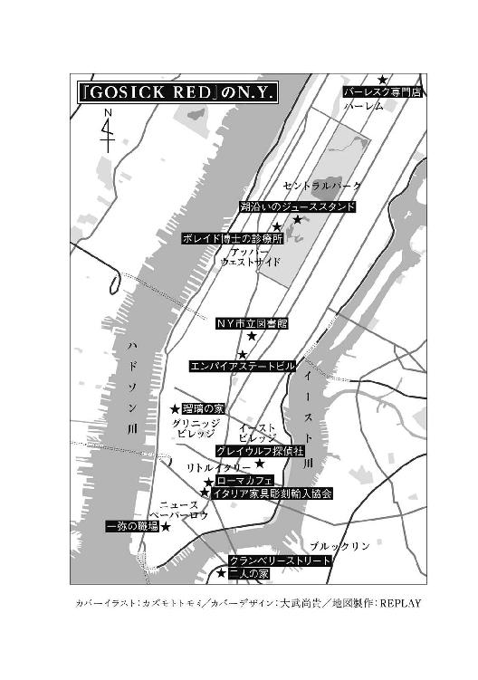

| GOSICK RED | |
| 桜庭一樹 | |
| KADOKAWA / 角川書店 (2013) | |
GOSICK RED
桜庭一樹

角川ｅ文庫
本作品の全部または一部を無断で複製、転載、配信、送信したり、ホームページ上に転載することを禁止します。また、本作品の内容を無断で改変、改ざん等を行うことも禁止します。
本作品購入時にご承諾いただいた規約により、有償・無償にかかわらず本作品を第三者に譲渡することはできません。
本作品を示すサムネイルなどのイメージ画像は、再ダウンロード時に予告なく変更される場合があります。
本作品は縦書きでレイアウトされています。
また、ご覧になるリーディングシステムにより、表示の差が認められることがあります。

「まあ、おばあさん、どうしてこんなに口が大きいの？」
「おまえを、ひと飲みにするためさ。」
いうなり、おおかみはベッドからとびおき、あっというまに、赤ずきんを飲みこみました。
──「グリム童話」 文・編 西本鶏介 ポプラ社刊
登場人物
ヴィクトリカ・ド・ブロワ ...... 超頭脳〈知恵の泉〉を持つ銀髪の美少女。ヨーロッパの小国ソヴュールより戦火を逃れ、ニューヨークに渡って〈グレイウルフ探偵社〉を開設。
久城一弥 ...... 留学生時代にヴィクトリカと出会い、以後、行動を共にする東洋人青年。新興新聞〈デイリーロード〉紙の見習い記者。
ニコラス・サッコ（ニコ） ...... 〈デイリーロード〉紙のカメラマン見習いで一弥の相棒。
武者小路瑠璃 ...... 一弥の姉。国際警察機構に勤める夫についてニューヨークにやってきた。
緑青 ...... 瑠璃の子供。市松人形のように繊細な美貌。ヴィクトリカを崇拝している。
レベッカ ...... 武者小路家のハウスメイド。ニコラスの義姉。
ガルボ・ボス ...... イタリアンマフィアの大立者にしてニューヨーク暗黒街の黒幕。
ジョン・スミス ...... ガルボ・ボスの腹心。
カルロス・コッポ ...... 売り出し中の若きマフィア。ニコラスとレベッカの幼なじみ。
ニッティ／フィウメ／デンプシー ...... マフィア連続殺人事件の被害者。
Ｇ・Ｉ・ボレイド博士 ...... ドイツ出身の心理学者。〈精神分析〉による治療を行う。
ベンジャミン刑事 ...... ニューヨーク市警の刑事。テディベアをつねに携帯。
ゴールズワージ ...... アメリカ合衆国次期大統領候補。
プロローグ
夜──。男は長い夢を見ていた。
闇が満ちる空間。真っ暗な地下室の夢だ。
そこは過去の記憶にある通りの場所だった。異国の森の奥。戦争によって住民が避難し、忘れ去られた町。町外れの古い屋敷。地下に続く暗い階段を、男は蠟燭を手にして降りていく......。黒い軍靴を身につけた足が、亀裂の入った石段を踏みしめる......。
ぴちょん、ぴちょん......と、地下水が染み出る音が響いている。
階段を降り終わると、男は鍵を開ける。鉄の重たいドアを開ける。
と......。
太古から続く闇が降り落ちるような部屋が現れる。
水の上を歩くが如く非現実的な足取りで進みだしたとたん、部屋のあちこちから、子供のものらしいか細い悲鳴が上がりだした。
少年の声もあれば、少女の泣き声もある。
男は肩を震わせて笑い始める。
蠟燭でゆっくりと辺りを照らす。剝き出しの石壁に鋼鉄製の拷問器具がかけられている。床には汚れた水差しと皿が散らばっている。部屋の隅には......恐怖に目を見開く東洋人の少年少女たちが、折り重なって庇いあっていた。男は満足そうに吐息を漏らす。
さて、今夜はどの玩具で遊ぼうか。
......くくくっと低い笑い声を上げる。すると子供たちが静かに泣き始める。顔は薄汚れて体も瘦せている。手足を欠損した子供も交ざっている。
しかし、いなくなった子供たちのことをわざわざ気にする大人はいない。なにしろ戦争中で、誰もが忙しいのだから。彼らは見捨てられ、忘れ去られた存在なのだ......。
「くくくくっ！ ははっ」
と、男が声を出して笑いだすと、子供たちの悲鳴が交響曲のように高まった。
男は幻の曲に合わせて踊るように体を揺らしながら、蠟燭の火で子供たちの顔をつぎつぎに照らして回る。
「叫んでも、頼んでも、無駄だっ。助けなどこない」
そう嘯き、一人の少女に目をつけて乱暴に腕を引っ張る。その腕は信じられないほど細くて、傷だらけで、あちこちが骨ばっていた。笑い声が高まる。
と、そのとき......。
どこからか......。天井か、壁の向こうからか、いや、この夢の外からか......遠くから、何者かの声が響いてきた。
老女の如くしわがれた低い声。だが響きには奇妙に幼いところもある......。
「──それなら、子供どうしで助けあうしかあるまいな。我々は力を合わせ、愚かな大人たちが作った血と暴力の国から逃れゆこうとしている。そして......」
「我々のうちの幾人かは、いつか新しい大地にたどり着き、根を下ろすだろう。それこそが絶望の果ての希望......」
「きっとそうなる。きっとだ......。君っ！」
「だっ、誰だ？」
男は蠟燭の火を使い、辺りを点検した。でも地下室には哀れな子供たちのほかには誰もいない。一人一人の顔を照らしていく。「いまの声は！」と怒りに震えながら、一人、また一人......。いちばん隅にしゃがんでいたひときわ瘦せた人影をみつけ、照らしだす。するとちいさな少女はうっそりと顔を上げ、男を見た。
東洋人の子供たちとはちがう......。銀の髪に、エメラルドグリーンの瞳！ 薔薇色のほっぺた。ぞっとするほどうつくしく、同時に悪魔の如く禍々しくも感じられる、まさに禁断の美貌......。こんな子供はいなかったはず！ 男はじりじりと後ずさる。「ダッ、誰だ......。私の夢の中に入ってきて、つまらんことを言う、おまえは......」と呻く。壁から下がる巨大な乗馬鞭を摑んで、少女の顔に向かって振りおろそうとする。
「誰だっ......」
と、そのとき。大きな音がして、地下室のドアから濁流のような水が、いや......真っ赤な......血の海が押し寄せてきた。男はあわてて逃れようとするが、またたくまに血に飲まれていく。必死で息継ぎをし、助けを求めて見回す。
だが、いつのまにか子供たちも、不思議な緑の瞳の少女も......どこかに消え失せてしまっている。
男だけが血の渦の真ん中でいつまでもくるくると回り続けている。悶えながらも血に飲まれていき、まず顎が、唇が、鼻が、見開かれた目が、そして......ついに、頭が......ゴボリと赤い海の底に消える。
そんな、夢から......。
男は、次第に醒めていく。
魘されながら、枕の端を握りしめ、苦しげに......。
男は呻きながら目を開けた......。
一章 Hello! NewYork
１
「またかよぉ！ ......あっ、今朝のは薔薇なんかくわえてら」
朝の八時。
ニューヨークはまだ目が覚めたばかりの風情。
冬の風が吹き抜けるリトルイタリーの街角を、三つ揃いのスーツの上からチェスターコートを羽織った眠たそうな通勤人と、彼ら目当ての朝ご飯の屋台、行儀よく登校する制服姿の子供が交差していく。
赤と白と緑のカフェやレストラン、バーのカラフルな看板が雪交じりの風に揺れている。
そんな平和な街の一角に、藍色の制服に身を包んだ警官と真っ黒なパトカーが集まって、なにかを取り囲んでいた。どうも物騒な空気......。でも道行く人たちは、いつものことだとでもいうようにまるで気にしていない。
警官たちの頭上を越えて、大きなカメラを構えて撮影している長身のイタリア人青年がいた。パシャッ、パシャッとシャッター音を響かせるたびに、警官が振りかえっては、うるさい虫を追うように腕を振り回すけれど、気にする様子もなく、
「おーい！」
と、ファインダーを覗いたまま、のんきな声で誰かを呼んだ。
「今朝の死体もなかなかだぜぇ？ えっと、昨日の朝に発見されたのは、靴だけ女物の真っ赤なハイヒールに変わってたんだっけな？ ......ギャングの報復殺人も年々凝ってきてるっていうけどよ。あいつら、殺人に慣れちゃって退屈してんじゃねぇの？」
話しかけても返事がないので、おおげさなほど口を曲げてみせる。
囲まれている主──マシンガンで蜂の巣にされたうえ、赤い薔薇の花をくわえさせられているギャングの死体から目を離し、キョロキョロする。
「あれっ？ ......久城～？」
警官に押しやられながら、
「久城～？」
「......ふん、ふん！ 夜中というよりもう明け方というころだったんですね。銃声が聞こえた、と。......あの、話し声などは？ なるほど！ しかし、この地域の昔からの住人として最近のギャングの横暴についてどう思われますか？ ふん......！」
どこからか、いかにも生真面目そうな男の子の声がした。
警官が集まった一角の向かいにあるちいさなイタリアンレストランの前で、自分の身長の半分ぐらいのおばあさんの前にしゃがんで、丁寧に話を聞いているところだ。
漆黒の髪は、前髪が少し伸びて、冬の風に柔らかく揺れている。ネイビーのブレザーにフランネルのズボン姿。着古したＰコートに、じいさんみたいな年代物の帽子。メモを取りながらうなずく目は、闇に吸いこまれそうなほど濃い黒だった。
小柄な、よくいるタイプの東洋人の青年だ。
一見とっつきにくそうに見えるが、つぶらな瞳は素直そうに澄んでいる。視線の柔らかなまっすぐさには、見る人の心を打つなにかがある。
青年がなんども「久城～。久城～。久城～」と呼ばれて「......えっ？」と顔を上げた、そのとき。角を曲がって新たなパトカーが押し寄せてきた。降りてきた警官にたちまち蹴散らされてしまう。小柄な東洋人の記者のほうは、おばあさんに向かってじじむさすぎるポーズでお礼を言い、長身のイタリア人のカメラマンは、ふざけてカメラを頭の上にのっけた恰好のまま、スタコラと退散していった。
「......で、ちゃんと現場写真は撮れたんだよね。ニコ？」
「たぶんぜったい大丈夫かな？ まぁ、心配すんなって！」
「えぇっ、たぶんぜったいって、どっちだよっ」
と言いあいながら、リトルイタリーの雑踏を歩いていく。
東洋人の青年は──久城一弥。
戦禍を抜けた東洋の島国を出て、新しいおおきな国に移民として渡って、ようやく数カ月。新興新聞社〈デイリーロード〉紙で見習い記者を始めたところだ。
隣でいかにも適当そうに長い腕をぶらぶらさせているのは、相棒になったカメラマン見習い──ニコラス・サッコ。リトルイタリー育ちの生粋のニューヨークっ子だ。長身で、黄緑のコートに大きな目。口の周りに濃すぎる髭を生やしている。
一弥は歩きながら取材メモをめくっているが、ニコのほうは飽きてしまったようで、
「あーあ。今月はギャングの殺し合いがとくに多いよなぁ。こう毎日続くとまいるよな」
「うん......」
「今日だって、先輩たちは朝からミス・ニューヨーク・コンテストの取材でお楽しみだってのに、こっちは相変わらずギャング戦争だしさぁ」
「うん......」
「あーっ、〈ＴＩＭＥ〉誌の新しいのが出てる！ 久城、読んでくれよ。俺、字わかんねぇし！」
「うん......。えっ？ あぁ、いいよ」
リトルイタリーとチャイナタウンのちょうど境目。
赤と緑と白に囲まれた色鮮やかなイタリア系の町並みと、漢字と東洋風の絵があふれるごちゃごちゃした風景が入り混じっている。食べ物の匂いも二つの街のが合わさり、鼻腔を刺激する。
角に立つスタンドから、ニコが〈ＴＩＭＥ〉誌をひょいと抜きだす。
表紙に、イタリア系のやけに恰幅の良い壮年男性の左の横顔が写っている。上等な帽子を斜めにかぶり、赤いカシミア・マフラーを首に巻いている。よく見ると目が銃口のように不気味に光っている。
「なんだよぉ、今週の表紙はガルボ・ボスか！ 映画スターのほうがよかったのによ」
と、ニコが不満そうにつぶやいた。
「まっ、俺たちのゴッドファーザーってやつだけどさァ。どうして裏世界のマフィアを表紙に、って思っちまうよな」
「ふぅん。君はイタリア人だけどそうなんだね」
「おぉ、マフィアなんて嫌いだよっ！ あいつらのせいで街は危険で、息苦しくってさ。まぁさいきんは慈善事業もやってるらしいけどよぉ......」
ニコは顔をしかめてみせる。雑誌を受け取った一弥も、めくりながら、
「うん。君、まさにその慈善事業のことが書いてあるよ。教会の前で炊き出しをした話とか。まぁパフォーマンスの一つだろうね。あと少年時代の思い出も。えぇと、珍しい動物が好きで......。ガルボ・ボスは貧乏じゃなかったらそういうペットを飼うのが夢だったんだって。ごく普通の、市井のいい人、って記事になってる。うー、うー、うー。市民の人気取りの、じつに怪しげな記事じゃありませんか」
「だよな！ それに、珍しい動物なんて、いいやつでも悪いやつでも、男の子はみんな好きなのにな」
ニコが頭にカメラをのっけたポーズのままで口を尖らして言う。一弥は一瞬、なにかを連想したように妙な黙り方をしてから、
「そうか。うん、そうだよね......」
「ケッ。だよな。なぁ、それからそれから？」
「えっとね、待ってよ。あ、怪しいギャング・ボスの記事はこれで終わりだよ。それより、来たるべき大統領選！ 有力候補者のゴールズワージ氏の大特集だね。由緒正しき清教徒の子孫にして、広大なリンゴ畑を持つ富裕一族なんだって」
「知ってる！ なんだかいいやつっぽい笑顔だよな。俺ッ、この人のことなぜか好きなんだよなァ」
一弥はつられてゴールズワージ氏の写真を見て、
「確かにね。マフィアとも経済界とも癒着しないクリーンさで有名な人だし。......つぎは政府特務機関、アメリカ連邦捜査局が発足した記事！ フーヴァーという謎の紳士が初代長官になったらしくて、しかし彼の手による〈フーヴァーズファイル〉というのが、なかなか......」
「そんなのはいいよ。つぎは？」
「って、君、ＦＢＩにはまったく興味ないみたいだね。つぎのは......。あー、芸能ニュースになっちゃった」
「読んで、読んで！」
「あのねぇ......。えっと、ハリウッドの代表的スターであるリバー・ヴァレンタインの話題。彼こそ君たちイタリア系移民の表の英雄というところかな。なんでも、こんど主演する映画にヨーロッパの新進俳優も友情出演するらしくて、えぇと......」
姿勢正しく朗々と記事を読みあげていると、ニコが急に興味をなくしたように冬の空を仰ぎだした。ついで一弥の手から無言で雑誌を取りあげ、「えーっ？」とビックリしているあいだにひょいと放りもどしてしまった。
スタンドのおじさんが「こらーっ、ニコ！ 買わねえのかい」と怒るが、気にせず大股で歩いていく。
一弥はあわてて謝り、自分が雑誌を買い、さらにおじさんの娘の手作りだというカップケーキもたくさん買いこんで、すると「またそんなに買うのかい！」とおまけしてもらい、どんどん荷物が増えて......。ニコの後を「こらっ、君って人はねぇ！ さいきんニコのこと、ちょっとわかってきたけどさ......」と生真面目そうに文句を言いながら、追い始めた。
リトルイタリーからチャイナタウンを抜ける。遥かな高さのエンパイアステートビルを右に見上げながら、マンハッタン島の南端を西に向かっていく。
次第に鉄筋コンクリート製の近代的な建物が増える。
金の縁取りが光る八角形の窓が連なったアールデコ建築の高層ビル。石のタペストリーに神話をモチーフにした絵が彫られている。
緑のちいさな公園を抜けると、通称〈ニュースペーパーロウ〉と呼ばれる一角に到着した。シンプルなデザインをした大手新聞社のビルが、森林の樹木のようにみっしりと連なりあっている。スーツを着た男女や黒塗りの自動車がせわしなく行き過ぎる。
と、一弥が年代物の黒い自転車にまたがる。ニコが「じゃーな」と長い腕をもてあますようにブラブラ振ってから、カメラを小脇にして、新聞社〈デイリーロード〉のビルに入っていく。
「うん。じゃ、ぼくは一度、家に顔を出すよ。えっと、なんだか心配だし」
「あっそ。って、またかよぉ！」
と、ニコが背中で笑っている。
一弥はビルに背を向け、自転車を漕ぎ始めた......。
──時は一九三〇年代初頭。
二度目の嵐たる第二次世界大戦がようやく終結してまもない、冬。
ヨーロッパ、アジアの多くの国とちがい、戦火に直接、焼かれることのなかったこの新しくておおきな国。新大陸こと我らの素晴らしきアメリカ合衆国は、いままさに繁栄のバンドワゴンをハイスピードで飛ばし始めたところだった。新しい国の人々は我先にと成功の夢を見ていた。国の歴史を人に喩えるなら、ようやく嵐の思春期を終え、黄金の青春期のまっただ中だろうか。強大な親たる旧大陸が牽引した迷信と不思議の時代がついに終わりを告げ、新しい国はいま物質的支配者として世界に君臨せんと乗りだしたところだった。
そして、アメリカ大陸の東端に浮かぶマンハッタン島。若き王子の心臓部分。希望に満ちた土地。ちいさいが喩えようもなく獰猛な街。
荒ぶるニューヨーク──。
冬の空はどこまでも澄んでいた。
〈ニュースペーパーロウ〉を離れ、マンハッタン島の東を流れるイースト・リバーにかかる長い橋──ブルックリン橋を渡る。
通勤人の群れとすれちがう。
この町の住人はいつも忙しそうだ。一弥もそのうちの一人になりつつある。
自転車を立ち漕ぎして、長い橋を延々と渡る。
漕いでいる。
漕いでいる。
......まだまだ漕いでいる。
はぁ、はぁ。
息が切れてくる。
ブルックリン橋は長い。海風に吹かれて凍えてしまう。Ｐコートの襟をそっと合わせ、一弥は漕ぎ続ける。
漆黒の前髪が揺れる。
橋はいつまでも続く......。
ようやく渡り終わる。
──ブルックリン。
マンハッタン島から川一つ分離れた小ぢんまりした街。ユダヤ人街として知られる、黒と白に彩られたモノトーンの景色。
橋のたもとから右折し、川を右手にして走る。
川の向こうに高層ビルが林立するニューヨークの摩天楼が見渡せる。
左に曲がると、精巧な玩具みたいな街が現れた。鉄の飾りプレートがつめたい風に揺れている。〈クランベリーストリート〉〈オレンジストリート〉〈パイナップルストリート〉とまっすぐな細い道が並んでいる。左右に街路樹が連なっているが、いまは葉が落ち、枝が細かく震えている。
三階から五階建てぐらいの、縦長の粗末だがかわいらしい移民アパートメントがひしめく。ちまちまっとした玄関前には、コンクリート五段ぐらいの階段。植木鉢に花が植えられてモノトーンの街に色味を与えている。
荒ぶるマンハッタン島とはちがって、古き良きヨーロッパのおとぎ話から抜けだしたようなこぢんまりとした通りを、自転車が元気よく走り抜ける。ずっと漕ぎ続けているのに疲れる様子もない。
キリッと結ばれていた一弥の口元がほころんできて、漆黒の瞳に優しい表情が表れ始める。
自転車がキコキコと音を立てて、黒と白の通りを駆け抜けていく。
やがて一軒の、ほかの建物よりもさらに古くて、傾いて見える小さな移民アパートメントの前で、キキーッと停まる。
おおきな扉は、真っ黒。寝そべった犬の形のドアノブがくっついている。石段は多めの十段。古びてところどころ欠けたモザイクタイル。木製の植木鉢が置いてある。
玄関の鉄のプレートに住所が──。
〈ニューヨーク／ブルックリン／クランベリーストリート一四番地〉
一弥は自転車を停め、丁寧に鍵をかけた。
と、表通りに面した一階というか、半地下になった部屋の丸窓が、パタコンと音を立てて開いた。青い目を輝かせ、そばかすの浮かぶかわいらしい顔がヌッと現れた。赤毛のショートヘアに野球帽をかぶっていて、さてこれは健康的な男の子なのか、ボーイッシュな女性なのか......。
「よっ、おかえり！」
話し方は男の子みたいだが、声は若い女性のものだった。
「あっ、管理人さん！ ただいまもどりました。でもまたすぐに......」
一弥が礼儀正しく頭を下げる。と、
「久城くんだっけ。例のおっかない美人さんが、今日もお帰りを待ってるみたいだぜぇ？」
一弥は返事をしかけて、もじもじして、えっと、と言いかけて、結局やめた。
頰がかすかに赤くなる。
〝四階に入居してまもない真面目な店子をからかう〟お気に入りの日課が終わったので、管理人さんはウインクし、窓を閉めた。
一弥は、ど、どうも、とつぶやいた。
それから、両腕にカップケーキの山を抱えた恰好ながら、胸を張って、「おーい。じゃ、君、もしかしてまだいるのかい？」と言いながら石段を駆けあがっていった。
「......ヴィクトリカー？」
２
低い天井と、布張りの壁と、黒と白のモザイクタイルの床。アパートメントの廊下は電灯がついていない。背後で玄関の扉がギィィッ......と閉まるとほとんど真っ暗になってしまう。
慣れた足取りで、壁や手すりにぶつかったり段差に躓くこともなく、一弥は狭い階段を一気に駆けあがった。
小ぢんまりしたビル。各階とも、表通りに面した部屋と、裏のちいさな庭に面した部屋の二世帯だけ。
最上階である四階の、表通り側の部屋の、色褪せたピンクの布張りの扉を、一弥は荷物を抱えたまま慣れた手つきで開けて、
「ヴィクトリ......カッ......？ えっ？」
と名前を呼びかけて、ちいさくて硬いものに蹴躓き、思いっきりコケる。
抱えていたピンクやオレンジ、赤に黄緑......色とりどりのミニカップケーキが、薄暗い部屋のくすんだ花模様の天井に向かって、爆発したように舞いあがっていく。
「うぁっ？」
思いっきり転んだ一弥の足元には、誰がそこに置いたのだろうか......。重たそうな分厚い書物が紙の蟻塚を作っていた。
一弥はまるで何事もなかったようにむくっと起きあがった。立ちあがり、落ち着いて埃を払う。それからカップケーキの山を拾おうと手を伸ばした。
扉を開けてすぐのところのキッチン。
奥にもう二部屋あるらしく、赤と黒の二つの扉のどちらかから扉越しにラジオの音が聞こえてくる。
キッチンには簡素なチェスト。細長いテーブルと椅子が二つ。家具といえばそれだけだった。旧大陸からやってきたばかりの貧しい移民の典型的なアパートといったところか。
どうやら一弥用らしきカチッとした四角い椅子は、背もたれがズボンプレッサーになっていて、いまも通勤用ズボンが二枚の板にシッカリ挟まれている。ずいぶん離れた場所に置いてあるのは、アフリカの小国で女王だけが座ることを許されたという、背もたれもお尻の部分も三角の、熱い風を連想させる古い椅子。こんな椅子が似合うのは、どんなに不思議な人間なのだろう......？
一弥は赤やピンクやオレンジのカップケーキの山を、よいしょ、よいしょ、よいしょっ、と抱えると、
「......ねぇ、ヴィクトリカ。君、まだそこにいるんだよね？」
と言いながら、奥の部屋の一つに通じる赤い扉のドアノブに手をかけた。
と、そのとき。
部屋の中か、どこからか......ちりりん、ちりりんと鈴の音がした。ついで赤毛の管理人さんの声がまた、
「おーい！ 久城くんっ。そういや、今月の家賃は明日までだーッ。まさか忘れてないよな！」
と、どこか下のほうから響き渡った。
「......はいっ。忘れてないです、管理人さん！」
と、首を縮めながら返事をする。
「払わないと、寒空の下に追いだしちまうぞっ！」
「はっ、はい......」
ようやく鈴の音が止んでくれた。
と、一弥は肩を落としてから、もう一度ドアノブをつかんだ。
──扉がゆっくりと開く。
途端に、ラジオの音声が地の底からのように響きだした。
一弥は不吉な音に押され、ちょっとだけ目をつぶる。
キッチンより広い正方形の部屋。花柄の布が貼られた壁と、古びた木の床。卵を摑んだ鳥の脚を模した四本脚の、華奢な回転椅子。桃色のかわいらしい寝椅子。通りに面した丸窓とちいさな暖炉以外の壁はすべて書棚に囲まれ、書物が詰まっている。
棚の上にはなぜか黒や白、木製、四角に楕円形......さまざまなデザインのラジオが置かれ、世界中の言語を同時放送している。
回転椅子の上から、夜空を流れるミルキーウェイのような銀色の髪が床に落ち、やわらかな渦を作っている。赤や紫、濃いピンクのポプリの粒が散っている。銀の光の上で、ポプリの粒とラジオの音声たちが絡みあい、禁断のダンスを踊っている。
一弥はほっとしたように銀色の長い髪──夜の夢のミルキーウェイの持ち主を見下ろした。
まるで精巧な陶人形そのものの、ほっそりと優美な、あまりにもちいさな体。蒼白な顔の真ん中に光るのは、太古の生物のように静かで、百年の時をすでに生きた老人の如き古き知恵を浮かべるエメラルドグリーンの瞳。ちいさな形の良い鼻と、つやつやしたさくらんぼのような唇。
地上にいるなにもかもがかすんでしまうほどの、そしてあまりにも圧倒的な美。うつくしすぎるゆえか、不思議と濃厚に漂う、運命的で悲劇的な気配のベール──。
深い漆黒のベルベットドレスに、深紅のフランスレースの縁取り。胸元の赤いフリルが夜の波のように揺れる。ドレスの裾には満開の赤薔薇が豪奢に輝いている。銀の髪を覆うヘッドドレスもまばゆい七色の飾りつき！ 見ているものの胸が痛むほどほっそりと繊細な造りの足は、やわらかな絹のストッキングに包まれている。ラベンダーの飾りがついた黒エナメルの靴も暗く輝く。
青白くていまにも折れそうな両腕と両足を投げだし、膝の上に、もしや拷問かと不安になるほど重たげな書物をのせ、普通なら頭が痛くなるほどの、英語、フランス語、ドイツ語、中国語、ジャズの演奏まで、複数のラジオ放送を聞き、おまけに床の上に扇状に開いて並べた書物にまで目を走らせる、年齢不詳の、少女のような、でも老女のような、とにかくいっそ悪魔的なまでに美しい、謎の、生き物......。
──ヴィクトリカ・ド・ブロワ。
甘い匂いがふわりと漂うのは、床に散らばる赤やピンクや紫のポプリのせいだろうか？
遥かなる太平洋を渡り、ニューヨークの片隅に逃れてきたばかりのヴィクトリカは、時に磨かれてついに人ならぬものの領域に足を踏み入れたかのような圧倒的な美貌を、夜の噴水の水の如くどこかだらしなく垂れ流していた。
たくさんの書物とラジオが、彼女の放つ銀色の触手と繫がりあい、まるで一つの生き物であるかのような......未来の人造人間じみた姿に見える。
こちらをちらりと見ることもなく、老女のようにしわがれ、さらに低くなった声で、
「......なんだ。......久城か」
と、不機嫌そうに呻いた。
一弥は微笑んで、
「うん。ぼくだよ、ヴィクトリカ」
「......う」
「しかし、君、ほんとにラジオが好きになっちゃったんだね。こんなに同時によく聞くものだねぇ」
「......ふんっ」
すねたように鼻を鳴らす。
それから緑の瞳をけぶらせ、明け方の甘い夢を見ているようにぼんやりと、
「君こそ、朝からまたギャング戦争の取材かね？ 君も、相棒のニコ君も、まったくご苦労なことだなぁ。家賃、食費、それに電気代などというくだらん物質的課題のために、よくもそんなにあくせく働けるものだ。あっはっはっはー......」
一弥はさすがにちょっとむっとすると、ラジオを消して回りながら、がみがみと、
「あのねぇ。ヴィクトリカ、君、そんなふうにひとごとみたいに、大威張りしながらあきれてみせるなんて、ぼくにはまるで信じられませんよ？ なぜならね、君こそ、この時間にはとっくに〈グレイウルフ探偵社〉に出社してるべきお人じゃあないか。それなのに、もうすぐお昼になっちゃうっていうのに、いやな予感がして覗きにきてみたら、君ったらさっそくさぼっちゃってるし......。って、えっ、ちょっと待ってよ、ヴィクトリカ？」
一弥は動きを止めて、不思議そうに、
「君、どうしてぼくとニコがマフィアの取材をしてたことを知ってるの？」
「ふん。そんなのは簡単なことなのだ」
ヴィクトリカがようやくちゃんとこっちを見て、無表情なまま言い放った。
と、おや......。ちいさな鼻が得意そうにふくらみ始める。どうやら得意満面になっているらしい。
精巧な細工でトカゲの形を模してある金色のパイプを口に当て、ぷかり、ぷかり、と吸いながら、
「──湧き出る〈知恵の泉〉が教えてくれたのだよ」
「あぁ、うん......。それね......。また、大いばりで言うんだよね、君って女の人はさ、昔から......」
ヴィクトリカは構わず、
「久城！ 君は、仕事以外でリトルイタリーに足を踏み入れることなどないだろう。なぜなら、くそ真面目でつまらない凡人でしょうもないカボチャくんの君と、浮かれたイタリア人街とは、まるで水と油のような存在だからなぁ。それが今朝は、こんな時間から、あの街でしか売っていないイタリア風カップケーキを山盛り抱えている。それに、君がばかみたいに後生大事にしているフランネルの通勤ズボンの膝頭に、血の染みがついてしまっているようだぞ。おおかた現場で跪いて取材して、ばかみたいに汚したのだろうねぇ、君？」
「うわ、ほんとだ!? 早く染みを落とさないと取れなくなっちゃう！ 通勤用のズボンはこれと、あと一本しか......」
あわて始めた一弥は、ふと我にかえった。恐ろしいほどうつくしく、ちいさな女性のほうをそっと振りかえる。
ヴィクトリカは氷のような無表情だった顔つきを、いつのまにかほんのすこしだけ緩め、従者の背中をみつめていた。でも目が合うとむっつりして逸らしてみせる。
一弥は首をかしげてから、微笑んで、
「......まぁ、それはともかくね。はい？ お察しの通りリトルイタリーのおみやげだよ、ヴィクトリカ。苺のカップケーキに、フロリダオレンジ味に、モカに、バニラに、レモンクリーム。えっと、こっちの黄緑のはピスタチオなんだって。新作だからおまけしてくれたんだ」
「ふん、ご苦労なことだ。よし、いますぐここに持ってきたまえ、君」
「あのねぇ、ヴィクトリカ。たまには立ちあがって取りにくるっていうか、ちょっとは動くっていう選択肢はないのかい？ ......って、どうやらないみたいだね。はいはい、わかりましたよ。アフリカのちいさな女王様？」
一弥は文句を言いながらも、言葉とは裏腹に楽しげな横顔を見せて、赤い菱形の猫足テーブルの上に積んでやった。と、ヴィクトリカが椅子をくるくるっと回転させ、カップケーキの山から一つ、猫が泥棒するようなしぐさでシャッと奪い取った。
ちいさな口に近づけ、むぐむぐ、と食べ始める。
むぐむぐ。
むぐむぐ。
むぐ......。
まだ食べている。
一心に......。
一弥が胸ポケットから木綿のハンカチを取りだして、「君、またついてるよ？」と、ヴィクトリカのとっくに大人になったはずなのに相変わらずぷくぷくのほっぺたを払った。ヴィクトリカはうるさそうに顔をしかめたが、いやがることもなく食べ続けている。
カップケーキの山がどんどん減っていく。
「いまや新大陸の中心たるニューヨークには、じつのところ二つの世界があると言わざるを得んだろうがね、君」
と、最後の一つを頰張りながら、ヴィクトリカがとってもえらそうな口調で言った。
一弥はというと、キッチンでせっせとお湯を沸かして、お茶を淹れ、赤い花と緑の小鳥模様のティーカップに注いでもどってきて、背筋をぴんと伸ばしてちいさな女王様の前に差しだしながら、
「......へっ。なんだって？」
「昼の世界と夜の世界だよ。すなわち、政治家と企業人が動かす表の経済界と、マフィアが牛耳る裏の経済界のことだ」
「あぁ、うん......。ほら、お茶が入ったよ」
「ご苦労。......わぁ、熱いッ」
ヴィクトリカはびっくりしたように緑の瞳を瞬きさせ、宿命の敵のようにティーカップをみつめた。
それからまた胸を張って、
「それは古くからの移民の世界と、嵐の後にやってきた新しい移民の世界との、命を懸けたぶつかりあいでもあるのだ」
「あのさ、ヴィクトリカ。話し始めたところ悪いんだけど、その話、もしかして長くなるの......か......な？ なんて......」
と、ヴィクトリカはおおきくうなずいてみせた。
「君、もちろんだとも！ 中国の黄河のように、インドのガンジス川のように、大陸を横断する流れと歴史の如く、とーっても、長いっ！ ちいさなニューヨークの右の横っちょを蛇の子供みたいにちょろちょろ流れる、君が毎日渡っている、あのしょぼしょぼのイースト・リバーなんかとは比べ物にならないぐらいっ、長～い！ のだ～っ！」
ヴィクトリカは胸を張って、ぷくぷくした両手を胸の前で広げて、さくらんぼみたいな口もおおきく開けて、ひたと一弥を見た。エメラルドグリーンの瞳が、ほんの一瞬、表情らしきものを得て太古の湖のようにきらめく。
一弥は知らず、ぼーっとみとれた。それからまた赤くなって目を逸らし、
「あのぅ、でも、ぼく、すぐオフィスにもどらなきゃ。だからね、その......」
「いいから黙ってわたしの話を聞きたまえ。君、もしも、聞かないと、だなぁ......」
「えっ、聞かないと......？ うわぁ、そんなおそろしい顔をして......。なんだよっ、ヴィクトリカ」
「君とは絶交する！」
「えーっ、絶交？ 君って子供なの？ もうっ、幾つになったんだよ、ヴィクトリカの大陸一の大いばりんぼっ。......わーっ、わかった、わかりましたよ。じゃ、座って......って、こっちの部屋には君の椅子と、この寝椅子しかないから、本棚の前にでも突っ立って、まぁ、ちょっとは聞くからさ。君ったら、まったく......。ぶつぶつ......」
と、一弥は本気で困っている。
丸窓の下の暖炉が燃えている。書棚の書物が退屈しのぎに耳を傾けているように見える。外は寒いが、部屋の空気はほっとするほど暖まっている。ヴィクトリカのほっぺたも薔薇色に輝いている。
と、ヴィクトリカが滔々と語りだした。
「その昔、いまから何百年も前のことだ。旧大陸から渡ってきたのは、清教徒など宗教的な戒律の厳しい集団だった」
「うん」
「彼らは未開の土地を開墾し、街を作り、秩序、政治、南北戦争などの争いを経て、〝開拓者たちの新しい国〟〝自由と希望の国〟たる我々の強大なアメリカ合衆国の礎を作った」
「うん......」
「しかしその後のこと。二度の世界的な嵐と前後して、旧大陸から新たに渡ってきたのが、食い詰めたブルーカラーの人々だ。彼らには厳しい戒律も守るべき秩序もない。アイルランド系、ユダヤ系、ロシア系、そしてニコ君のようなイタリア系......。つぎつぎやってきては、ニューヨークのあちこちに自分たちの国の文化を模する町を作り始めた。現にわたしたちが住むこのブルックリンはというと、典型的たるユダヤ人街だ」
一弥がうなずいて、
「そうだね。リトルイタリーならチーズとトマトソース、ブルックリンにもどってくるとチキンとセロリの煮込み、って、文化によってごはんの匂いまでちがうもの。同じニューヨークのはずなのにね」
「いいから、君は黙って聞きたまえ！」
「あ、はい......」
「すると、いまや政府や経済界の中枢にいる真面目な清教徒の子孫たちは、焦った。なにしろ新しい移民たちは、お酒を飲む！ 歌って踊る！ つぎつぎ恋もする！ つまり貧しいながらも野性的に、本能的に生を謳歌する恐るべき人々だったのだ。そこで急いで法律が作られた。悪名高き......」
「あぁ、きん......」
「禁酒法だ」
と、一弥はすこしがっかりして、
「う、うん......。それはぼくも知ってたけどね」
ヴィクトリカはぜんぜん気にせず、
「しかし、思うにこの法律は逆効果だったのだな。なぜなら、たとえ禁止されても、人は恋をするし、食べたいものを食べる生き物なのだから......。もちろんお酒もたちまち流通させてしまった。確かに、日々の労働の後の一杯をお上にむりやり取りあげられてはな。そういうわけで、禁酒法の陰で急速に育ったのが──マフィア組織だ！」
「うん、うん」
「いまやこの町では、アイリッシュ・ギャングは密造ウイスキー、ユダヤ系マフィアはビール、そして最大勢力であるイタリアンマフィアは葡萄酒を製造販売し、闇の経済界として発展し放題だ。そして罪を裁く方法もまた、昼の世界の健全なる法律と、夜の暗黒街の血の掟......復讐や殺人株式会社が同時に存在している。一方で、市民たちから求められているのは、清教徒的な清く正しく古臭い秩序ではなく、かといって闇の暗黒界でもない、まさに〝新しいなにか〟なのだ。それがどんな政治なのかは誰にもわからないが、若い市民たちは不満と不安で爆発寸前といった、とこ、ろ......。そして......あぁっ！」
滔々と語っていたヴィクトリカが、とつぜん、きらきらと輝く銀色の髪を両手でかきむしって苦悩し始めた。
書棚の前に、騎士の甲冑のように姿勢よく立っていた一弥は、びっくり仰天して、
「どっ、どうしたの？ ヴィクトリカ!?」
「退屈な男である君に向かって話していたら、いつものことながら、よけい退屈になってきてしまったぞ......。あぁ、なんという悲劇だ！」
「し、失敬な！ 自分から話しだしたくせに！ 君ったら、いっつもそういうご立派な態度だよね......。じゃ、退屈な男たるぼくは、君の邪魔をしないように、オフィスにもどるから......」
と、ヴィクトリカが緑の瞳をカッと見開いた。
なぜか身を乗りだしてむきになって、
「久城っ、退屈を紛らわせるようなことはないのかね？ おや、そういえば君はさいきんちっとも踊っていないではないか」
「......エッ？ なに？ 踊る？」
「うむ、うむ。我ながらいいことを思いだした」
と、ヴィクトリカは満足そうにうなずくが、一弥のほうは激しく首を振ってみせて、
「やだよっ。君、なんてことを思いだすんだよっ。......あのね、前にむりやり踊らされたとき、緑青君が見ていて、こともあろうに、母親の瑠璃にですよ、告げ口をしたんだよ。しかもおかしなふうに再現するものだから、瑠璃ったら、高価なペルシャ絨毯の上を転がり回ってきゃっきゃと笑って......。緑青君もぼくを指さしては、くすくす、くすくす。くすくす、くすくす。いつまでもいつまでも......」
「踊るか、歌うか。君、二択だろう」
「えーっ。せめてもう一つくらい、ないの......？」
「ふん！ まぁ、面白い事件でもあれば話してきかせるという選択肢があるが、君のことだからどうせなにもないのだろうね？ ......さぁ、歌うか踊るか、どっちだね!!」
「えーっ、待って、待って。面白い事件かぁ......？ あっ、そういえば、昨日の午後の取材が、ウォール街の銀行員が殺された事件の裁判だったけど、そんなの、君には......。おやおや、ヴィクトリカ。もしかして興味があるの？」
「......うーむ。期待はできんが、まぁいちおう話してみたまえよ。君」
「は、はい」
一弥はうなずいてから、居住まいを正した。
丸窓の外から、ブルックリンの住人が話しながら通り過ぎる声が聞こえてくる。
冬の日射しは弱い。ストーブが音を立てている。書棚の本が静かに二人を見守っている。
ヴィクトリカは夜の世界にいて永遠の夢を見ているように緑の瞳を見開き、金色のパイプをぷかりぷかりと吹かしていた。
「あのね、君。ウォール街に真面目な銀行員がいたんだよ。ところが数字を打ち間違えて顧客に大損させちゃって、どうしよう......と悩んだあげく、オフィスの自分の個室で拳銃自殺したんだ」
ヴィクトリカはパイプで一弥の顔を指して、
「むむ？ 君はさっき、銀行員が殺されたと言ったはずだぞ？」
「それが、続きがあるんだよ......。警察が調べたら、男は自殺する直前に片思い中の受付嬢に遺書を渡していたんだ。それがお昼の十一時半ぐらい。で、死体が発見されたのは、お昼休みが終わった一時過ぎ。じゃあお昼休みのあいだに自殺したんだろうってことになったんだけど。後になって、隣の個室で働いてた銀行員が、十一時ぐらいに銃声みたいな音がしたぞ、と思いだした」
「ふむ......。混沌だな」
「そう。......でね、となると死んだのは十一時だ、じゃ、十一時半に受付嬢のところに遺書を持ってきたのは誰なんだ、と騒ぎになってね。受付嬢も、そういやあの人、眼鏡に帽子姿だし、誰かの変装だったかも、なんて言いだして。かといって遺書を調べても、タイプで打ってあるから筆跡がわからないし。いけない、これは殺人かもしれないぞ、とね......」
「むむ」
「ちなみに、死んだ銀行員はお金持ちの多い町グリニッジビレッジ育ちで、名門大学を出たお坊ちゃん。隣の個室の男は下町のブロンクス出身の苦労人だよ。両親がいなくて、住人はみんな泥棒かギャング予備軍っていう泥棒アパートで育って、タイピストの仕事をする姉に世話をされ、大人になった。女性に優しい質で、もてるんだよ。受付嬢のほうはユダヤ系の移民二世で、どうやら彼女も隣の個室の男を好きらしい。理由は例によって、優しい人だから、とね。つまりちょっとした三角関係だったようでね」
ヴィクトリカは不審そうに相手を眺めて、
「......しかし、君、下世話なことに詳しいではないか。まさか全員と知り合いなのかね？」
「いや、いや......。あのね、ぼくはいまや新聞記者見習いなんですよ。こういう細かい情報を常に求められる毎日、という、わけ、で......」
一弥は急に恥ずかしくなって、もじもじした。先を促されて気を取り直し、
「それでね、誰かが自殺に見せかけて殺したにちがいない、上司が怪しい、もともと仲が悪いし、そういや先週も野球の試合結果のことで喧嘩してた、ということになった。ところがいざ裁判になったらですよ。検察は上司を犯人にしたいのに、陪審員の意見はべつの方向で割れてしまったんだ。女性たちが『なんとなく受付嬢が怪しい』と言いだしたかと思うと、男性たちは『俺たちはぜったいに隣の個室の男を犯人にする』と主張しだして、議論は非建設的な方向に紛糾するばかり。名付けて〈ウォール街裁判狂想曲〉の行方はいかに!? ......というのが、昨日までの取材の成果でね」
「待て、待て、待て！ ......いったいどこがどうなってそんなわけのわからん狂想曲になるのだね？」
「えっと、取材によると、男性陪審員は、隣の男が女性にもてるのが面白くないし、そういうやつは怪しいと昔からきまってる、と声をそろえてる」
「なんだね、それは。近所の井戸端会議みたいになっちゃってるではないか。......しかし、この事件は自殺で間違いないだろうよ」
「うん。それでね......。えっ？ ヴィクトリカ、君、いまなんて言ったの？」
と、一弥が目をぱちくりした。
ヴィクトリカは鼻を鳴らしてみせて、
「君のしょうもない耳に、チャイナタウンで売っているフォーチュンクッキーでもたっぷり詰まっていて聞こえなかったのかね？ わたしは自殺で間違いないと言ったのだよ」
「えっ、耳にフォーチュンクッキー？ いや、じゃなくって、いまの話だけでどうしてわかるんだい？ いくら君でも、さすがに......」
「なぜなら、な......」
と、ヴィクトリカは表情をわずかに動かしてみせる。
おや、もしかしたら笑ったのかもしれない。漣のような、よく見ないとわからないかすかな変化......。
一弥は首をかしげている。
ヴィクトリカは退屈そうに虚空をみつめている。ちいさな欠伸を、一つ。
エメラルドグリーンの瞳が酷薄そうにつめたく光っている。銀の髪が豊かにうねって、魔法のような力を秘めて流れる。精巧な細工の金のパイプもきらっと瞬く。
やがて、さくらんぼみたいなつやつやの口をうっそりと開くと、
「わたしはこの世のあちこちに散らばっている混沌の欠片を拾い集め、玩んでは、退屈しのぎに再構成するのだ。いまも、そうだ。わたしの〈知恵の泉〉が告げているのだよ。その男は自殺した、とね」
一弥はおとなしく黙っている。でもちょっぴり不満そうにも見えなくもない。
ヴィクトリカはパイプを吹かしながら、しばし黙って横目で眺めていた。やがてひどく面倒くさそうに口を開くと、
「久城、たとえばだがな、君がわたしに重大な隠しごとをしているとしよう......」
「えーっ、してないよ？」
と、一弥が不思議そうに聞きかえした。ヴィクトリカは負けずに、
「君は、本当は二十個買ったカップケーキのうちの一つを、帰る途中でこっそり一個つまみ食いしたのだ！」
「そんなことしないってば！」
「いいから聞くのだ、カボチャくん！」
「えっ、ごめんなさい......？ どうして怒られてるのか、わかんないけど......。ヴィクトリカ......？ ぼく、毎日毎日、悪くないのに謝っちゃってる分、いつかまとめてかえしてもらいたいんですけどね......？」
ヴィクトリカは気にせず、急にむきになってパイプをくるくる振り回して、
「しかもだなっ、君が頭の弱い子豚ちゃんのようにはぐはぐと盗み食いしたのが、青薔薇のカップケーキだとしよう。ちなみに、よりによってわたしがいちばん気に入ってる味なのだ」
「えっ、そうだったの？ 君ね、そういうことはもっと早く言ってよ。こんどから多めに買ってくるからさ」
「そんな大事なこと、君なんかにはぜったいに教えてやらん」
「って、なんでだよっ。おかしいだろ、君！」
「ともかくだっ。良心の呵責のせいで、君は無意識に青を避けるようになる。同じ色をしたカーテンに背を向け、いつもとちがう場所に座る。でも自分ではどうしてそういう行動をとったのか自覚できない。すべては無意識の領域での出来事なのだから。......と、これと同じことが、隣の男の心でも起こったと推測されるのだよ」
「隣の男？ えっ、じゃ、もてもて男がやっぱり犯人なの？ 男性陪審員たちの勘が当たってたのかしら」
「......ちがう、君！」
ヴィクトリカは首を振った。
銀色の髪が光りながらうねって、ミルキーウェイが床にとろとろ流れだす。
床のポプリが鈍く輝く。
ヴィクトリカが身じろぎして、
「隣の個室の男は、おそらく十一時に、個人的に〝悲しい音〟を聞いたのだよ」
「個人的に悲しい音？」
「えぇい。タイプライターを乱暴に打つ音に決まってるだろう、君！」
ヴィクトリカが、まだわからないのかと苛立つように、さくらんぼみたいな唇を尖らせて、
「死んだ男は遺書をタイプしたのだろう？ きっといつもより乱暴にダダダッと音を立てて打ったはずだ。そして三十分後、片思いする受付嬢に渡しにいった。実際に拳銃を使った時間は、お昼休みで人がいなくなる十二時から一時の間でまちがいない。だから誰も銃声を聞かなかったのだ」
「待ってよ。じゃ、十一時に隣の男が聞いた音は......？」
「タイプの音だろうな。しかし、隣の男はなぜそんな間抜けな聞き間違いをしたのか？ ......君は自分でその理由を話したではないか。彼は貧しい家庭の出身で、タイピストの仕事をする姉に育てられた、と」
「アッ、うん......？」
「君、ここからはわたしの想像にすぎないがね。しかし、恐らく正解であると推測されるよ」
ヴィクトリカはパイプを置いて、
「久城、恩はありがたいものだが、受けたほうには感謝とともに負い目も残ってしまうものだ。おそらく、優しい心の持ち主であるほどに、だ。彼は姉に感謝する一方で、若くて楽しい時期を犠牲にさせた、と申しわけなさも感じているのではないかね？ 女性全般に優しいというのも、姉を思いやる気持ちを彼女たちにも重ねているのかもしれん。そんな彼にとって、タイプを打つ音とは〝悲しい音〟だ。隣室から聞こえたいつになく激しい音。それが、後に隣室の男が自殺したと聞いたときに、心の中でもう一つの〝悲しい音〟、つまりは銃声と置き換わってしまったのだ。だから後になって、そういえば銃声を聞いた気がする、と言い始めた」
「あっ」
「連想の中で二つの音が置き換わったとき、彼もまた幻の銃で自分の頭を撃ったかもしれん......」
「ん」
「まぁ、くだらん感傷だが、な......？」
と、ヴィクトリカは一見、無表情にも見える顔で言い放った。そしてうつむき、老女のようにしわがれた低い声で、
「久城。人はみな無意識の領域に強い感情を隠して生きているものだ。それが思わぬ形で表に現れることもある。人がとつぜんやってしまうおかしな勘違いには、じつはこういった原因があると推測されるよ」
ヴィクトリカは金のパイプをまた吹かしながら、
「隣室の男にとっては、タイプの音は〝悲しみの音〟であり、姉の〝愛の音〟でもあったのだな......」
と嘯き、それから物思いにふけった。
一弥は目をぱちくりして、
「......そ、そっか。ぼく、その説、編集長と相談するか警察の人に話してみよう。ヴィクトリカ、君ってそれにしても......。えっ、な、なに？ どうしてまた物騒な目つきでこっちをじろじろ睨んでるんだい？ あの、ぼく、えっと、そろそろですね......」
ヴィクトリカはいつのまにかぷっくりしたほっぺたをさらにふくらませて、緑の瞳もうるませ、じつに恨みがましく一弥を睨みあげていた。
「......一瞬で解けてしまったではないかっ。そしてまたもや退屈になってしまったぁ。久城っ、このならず者の、ペンギン野郎めが......！」
「ペンギンだって!? あのねぇ......！」
一弥は困った後、急に不気味なほどにこにこしだして、
「そうだ、ヴィクトリカ、君、そんなに退屈ならいい解決方法があるよ」
「むむむ!? なんだね？」
ヴィクトリカが身を乗りだした。すると一弥もぐっと顔を近づけてみせて、
「いまから出社するんだ。君の〈グレイウルフ探偵社〉にね？」
「......それは、いやだぁ」
「こらっ！」
ぷいっと子供みたいにそっぽを向いてみせるヴィクトリカに、一弥は顔のあるほうに回って、回って、回転椅子を回してくるくると避けられても、しつっこく追いかけては、
「君ねっ。一日ここにいて、椅子の上でくるくる、くるくる回転してたって、君の目が回っちゃうばっかりで、面白い事件もやってこないし、つまらないはずだよ？ いいから出かけなさいってば。ぼくの言うことを聞いて、出社してですよ、依頼人がくるのを待って、既定の調査料をしっかり受け取......」
「久城、しかし......」
「なぁに」
「わたしは、ほんとうに行きたくないのだ......」
「......えっ、どうして？」
と、心配そうに首をかしげる一弥から、顔を逸らす。
聞こえるか聞こえないかぐらいの小声で、
「なにしろ我々がやってきたここニューヨークは、いま最大の過渡期を迎えているところなのだからな。人種と歴史の坩堝であり、昼の清教徒的世界と夜の暗黒街が、二つの巨大銀河のようにぶつかりあっている。だから......。目立ってはならない！ 危険すぎるのだ！ ギャング戦争は引きも切らず。大統領選も控え。株取引、ＦＢＩの発足、ハリウッドという新しく禍々しい虚構世界の台頭。そして、また......ギャング！ ギャング！ ギャング！ 移民の国、坩堝の町、ニューヨークがもっとも危ない時代に、我々は新世代の移民として......。いや、もちろん恐れてなどいないが。ただ、だ。論理的に考えて......だな......。むむっ？」
襟元に深紅の毛皮がついたやわらかなフリルコートをふわりと着せられて、ヴィクトリカは黙った。
うっそりと顔を上げる。
一弥のあまりにも屈託のない笑顔が間近にある。優しく微笑んでいる。
するとヴィクトリカは、困ったように、形のいい眉をわずかに動かしてみせた。
──そのとき、書棚に囲まれた丸窓の上に光っている、犀の形をした銀のベルがちりりんちりんと鳴った。一弥が「あっ、はい......」と、窓を開けて下を見る。
管理人さんが一階の窓から身を乗りだして、ベルに繫がる紐を握っていた。短い赤毛が冬の風に巻きあげられている。
「電話だよォ。グリニッジビレッジのお姉さんから！」
「えっ、瑠璃から？ どうしたんだろ」
「『すぐ来てちょうだい！ たいへんなのっ』って。あわててるみたいだぜぇ？」
「は、はいっ！」
「そうだ、あと、今月の家賃も。早くなァ！」
「......はいっ」
一弥はうなずいて、窓をきちんと閉めた。
それからきゅっと背筋を伸ばした。「えぇと、まずは瑠璃の家に寄って、ヴィクトリカを探偵社に送って、新聞社にもどる......」とつぶやいてから、しっかりしなくっちゃ、なにしろヴィクトリカとぼくしかいないんだから、というように唇を固く引き結ぶ。
ヴィクトリカはというと、金色のパイプをぷかり、ぷかりと吹かしながら、そんな一弥の後ろ姿を眺めている。
「なるほど。人はパンのみにて生きるにあらず、というわけか」
と吐息をつく。そして、
「くだらん物質的課題が山積みの新生活であるなぁ。さてさて、これこそ新世界の混沌というやつかね、君......？」
じつにめんどうくさそうにつぶやくと、ひどくいやいや、回転椅子からもにょもにょと立ちあがった。
３
天気のよい、冬の午前。
モノトーンに沈むユダヤ人街を、古びた自転車が勢いよく走っていく。
黒と白の民族衣装に身を包み、もみあげの髪をくるくると伸ばした男たち。黒いコートにひっつめ髪の女たち。
カフェのテラスで、近所のおばあさんのグループが、雪のように真っ白なユダヤ風クリームチーズケーキを食べている。ビューンッと飛ばしていくフリフリの自転車を、初めはおどろいたけどいまでは見慣れた光景だわよというように、おしゃべりしながらのんびりと目で追う。
漕いでいるのは、東洋人の青年。
生真面目そうに唇を引き結び、漆黒の前髪を風に揺らしている。
後ろに乗っているのは、見た人が声を上げて持ち物まで取り落としてしまいそうなほどうつくしい、精巧な陶人形のようなちいさすぎる美女。
銀色の髪が北風に舞いあがり、冬の女王の如く辺りを凍らせる。深いエメラルドグリーンの瞳も氷のような無表情。ふかふかのコートも、その下から覗く黒と赤のベルベットのドレスもフリルとレースでふくらんで、風をはらんでは明け方の夢のようにはためいている。
ブルックリン橋の手前の屋台で、赤スグリと冬イチゴのアイスクリームをダブルで買う。
後ろでヴィクトリカが無表情でアイスクリームを舐めている中、一弥は自転車を漕いで橋を渡った。
漕ぐ。漕ぐ。
......まだ漕いでいる。
まだまだ漕いでいる。
天気はよくて、日射しもきれいだ。風は冷たいが、雲一つない空も青々としている。
橋を渡り終わり、妖しげなチャイナタウンやカラフルなリトルイタリーを横目に、マンハッタン島の中心街に向かう。
ひときわ立派なアールデコ風の鉄筋コンクリートに、歯型装飾や金の縁飾りが眩しい建物が連なる高級住宅街、グリニッジビレッジに差しかかったとき。装甲車と見まごう真っ黒なキャデラックとすれちがった。
まるで架空の王国の車だというように──エンブレムにイタリア国旗を模した赤と緑の旗を立てている。ニューヨークの夜を牛耳るイタリアンマフィアの目印だ。大物......おそらく夜の王たるガルボ・ボスが乗っているらしい。前後にはお付きの者用の箱型自動車も連なっている。
角を曲がると、今度は背の高い立派な風貌の壮年男性が、なぜか、赤い靴を履いたら止まらなくなってしまったかのように、両足を伸ばしたり飛び跳ねたり、踊りまくりながら歩いてきた。
黒のシルクハットと上等な赤いステッキ。
長い顎髭と、鋭い眼光。
正体不明の不思議なダンス──？
さすがにびっくりして一弥は道を譲った。
そーっと振りかえって、
「この町って、変わった人がけっこういるんだなぁ！ ......ねぇ、ヴィクトリカ？」
フリルとレースで膨らんだ夢のような美女を後ろに乗せているという、すこしばかり変わった姿でつぶやいたので、通りがかったビジネスマンの男が、一弥の顔を思わずじーっとみつめた。
高級住宅街であるグリニッジビレッジの一角で、自転車を停める。
一弥が生真面目そうに「でも、瑠璃の急用ってなんだろうね」とつぶやくと、ヴィクトリカがなぜか、だいたいわかっていると言いたげなうろんな顔つきで、ふむっと鼻を鳴らしてみせた。
それから、ライオンの石像がお出迎えする立派な建物の石段を並んで上がっていく。
おおきな扉。ドアノッカーも真鍮製のライオンだ。
ヴィクトリカがエナメルのハイヒールを履いたちいさな足で一生懸命背伸びして、ノックすると、隣で一弥もつられて背伸びした。
コン、コン！ コン、コン！
と......。巨人を思わせるほど背が高く、肩幅もがっしりした大柄な女性が現れた。蜂蜜色の細い目と、おおきくて尖った鼻。分厚い唇。バタースコッチ色の髪。神話に登場する太古の女神の如き堂々たる容貌をしているが、服装はシンプルで、現代的な紺のワンピースにエプロン姿だった。
「おはようございます、レベッカさん」
と、一弥が帽子に手を当てて挨拶すると、女性は重々しくうなずいてみせた。
彼女は、ニコラス・サッコが子供のころに両親をなくして引き取られたという親戚の家の娘だった。その縁で武者小路家のハウスメイドとして雇われたばかりだ。
奥から若奥さまの武者小路瑠璃が声をかけてくる。
「一弥さま？ ようやくヴィクトリカさんを連れてきてくれたのォ！ 新しいドレスができたから、試着してもらわなきゃいけなくて！」
「えっ。急用ってそのこと......？」
と一弥が目をぱちくりする。ヴィクトリカのほうは、さもありなんと言いたげに黙って瞬きしてみせる。
瑠璃がなにかわぁわぁと話しながら、長くて立派な廊下を転がるように急いでくる。裏庭から届く太陽光に眩しく照らされながら、
「だって緑青がね、ヴィクトリカさんはまだこないのかなってソワソワするんですもの。新しいドレスを着たところをどーしても見たいらしくて。ねっ、緑青？ って、あらっ、恥ずかしがっちゃって？ えっ？ どうしてわざとらしくごまかすの？ へーんなの！」
いまはとある国際警察機構勤めの武者小路さんの妻である瑠璃と、幼い緑青が現れた。
瑠璃は漆黒の髪をリボンで無造作に結んで、青と紫の混じった羽織袴姿。針仕事をしていたらしく、右手に糸、左手に糸切りバサミを握りしめたままという恰好だ。
一方、幼児の緑青はというと、つやめく黒髪にフランネルのリボンを飾り、青い着物に水玉の帯。幼いながら精巧な市松人形を思わせる繊細な美貌の持ち主だ。一見、瑠璃のミニチュアのような姿にも見えるが、漆黒の瞳に隠された素直そうな輝きと、キュッと結ばれた唇が、まだ小さいながら叔父の一弥ともどこか似ている。
一弥が元気よく、
「よぅ、坊主！ 今日も元気そうだなっ！」
と、腕を伸ばして頭を撫でようとする。でも緑青がなぜかがーんとショックを受けて瑠璃の背中に隠れてしまったので、スカッと空振りした。
「あ、あれ？ 緑青君......？」
「もうっ、また一弥さんったら！」
瑠璃があきれたように弟を睨んでみせる。
おかしいなぁ、また嫌われちゃったよ、と頭をかいている一弥を尻目に、緑青は、銀髪と黒髪、黒と赤のドレスと青い着物という、自分とは対照的な姿をしているヴィクトリカを、切ないほどの憧れの目でじっと見上げた。
瑠璃が「自信作なのよぅ。ヴィクトリカさん、さっそく試着してみて」と先導して歩いていくと、緑青はあわててちょこちょこと後を追い、一弥もおとなしくついていった。
広々としたリビング。ヴィクトリカが瑠璃の新作である赤と白のレースを重ねたフラッパー風のロングドレスと揃いのレースの手袋、孔雀の羽根つきボンネットを身に着け、のそのそと出てくる。と、瑠璃がサイズを合わせてあちこちを仮止めし始めた。緑青はソファの陰から半身を出し、おやつのフライドチキンをモリモリ齧りながら、うっとりとみとれている。
瑠璃がくすっと笑いかけて、
「もうっ、緑青はほんとうにヴィクトリカさんのことが好きね。物ごころついたと思ったら、真似してかわいい恰好をしたがりだして？ ......あらっ、また照れてるの？ へんな子ねぇ」
緑青は、大人たちが一斉に自分のほうを見た途端に、恥ずかしそうに縮こまってソファの陰に隠れた。ときどき手を伸ばし、テーブルにあるおやつのフライドチキンをお代わりする。ヴィクトリカがパイプをくわえながら、不思議な生物を観察するように目で追う。
と、レベッカがリビングにのっそり入ってきて、
「久城さんに電話。ニコから」
と言ってまた姿を消した。
一弥が立ちあがって電話に出ると、受話器の向こうからニコの声が、
「おーい！ 編集長がすぐもどってきやがれってさァ」
「あ、うん！」
「急に体験取材の仕事が入ったんで、俺たちにやらせるんだってよ。いいから早くこいよなッ！」
返事をする前に電話が切れた。一弥は受話器に向かってうなずいた。
リビングではようやくドレスの試着が終わったようだ。一弥はのんびりしたがるヴィクトリカを叱咤して立ちあがらせ、武者小路家を辞した。
グリニッジビレッジを出て、今度は東へ。二人乗りで下町イーストビレッジに向かう。
高級住宅街の上品さや重厚さが見当たらなくなって、建物も店もごちゃごちゃし始める。お昼時のせいか、さまざまな食べ物の匂いが入り混じってくる。
ニューヨークは人種と文化の坩堝だ。ビジネスマンが忙しそうに通り過ぎる横で、バスケットボールに興じる若者グループ。不思議な民族衣装を身に着けた、浅黒い肌の大柄な女性。フラッパーガールが運転する七色のオープンカーが飛ばす大通りを、中国人のお菓子売りが籠をかつぎ、朗々と歌いながら横切る。
下町イーストビレッジの隅。
教会の向かいにある、鬱蒼と緑の茂った一角。
──〈ミラクルガーデン〉。
と鉄のプレートに書かれた、公園のようで、誰かの家の庭のようでもあるちいさな土地──。
一弥は自転車に乗ったまま敷地に入ると、くるくると迷路のような小道を慣れた調子で進んだ。後ろに乗るヴィクトリカも、一弥に任せ切って、背中にくにゃっともたれ、エメラルドグリーンの瞳を夢見るように見開いているばかりだ。
くるくる。くるくる。
くるくる......。
思いのほか奥が深い。小さくて不思議な森の奥に、自転車は進み続ける。
ようやく停まる。
──ドーム型をした奇妙な建物があった。
高さとしては三階か、せいぜい四階建てぐらいだろうか。緑と青のタイル張りだが、古いらしくあちこち剝げて地肌が覗いている。中東のモスクのようなデザイン。いちばん上には噴水みたいな奇妙な飾りがあり、いまにもつめたい水がザバーッと噴きだしてきそうに見える。
おかしなビルや一軒家が多いイーストビレッジでもいちばんの〝妖怪アパートメント〟と噂される不気味な建物。
──通称〈回転木馬〉。
古くて不便で、おまけに二度の世界大戦の前から気味の悪い怪談の温床だったために、地理的に便利な割にはおどろくほど人気がなく、家賃も安い。
一弥は自転車を停めると、とことこと歩いていくヴィクトリカに続いて建物に入った。
天井は吹き抜け。噴水型の飾り部分から太陽光がキラキラと降り落ちてくる。
真ん中におおきな螺旋階段があって、なだらかな傾斜で続いている。
まるでうつくしい貝の内部にこっそり侵入しているよう......。
南国の植物が茂っている。嘴だけ赤いおおきな黒鳥や、褐色のペンギン、巨大なゾウガメ、手のひらに載るほど小さな梟など、見たこともない動物がたくさん放し飼いにされている。
〈回転木馬〉は、区画ごとに家賃を取るオフィスだが、全体としては謎のオーナーが経営するペットショップを兼ねている。そのため旧大陸やアフリカ、アジアから密輸入された不思議な生き物が、人間の店子よりのびのびと暮らしている。
一弥とヴィクトリカは、床に転がっている大小さまざまな動物の糞を、ヴィクトリカは心ここにあらずで、一弥は真剣極まりなく、踏まないように避けながら、緑のタイル張りの螺旋階段に向かった。
ゆっくりと上がっていく。
くるくる。
つめたい階段は、海の宮殿を泳いでいるような気分にさせる。
くるくる。くる......。
と、まだ上がっている。
左右を見ると、奥まったスペース......ちいさな一角に書類机を置いて仕事する若き企業家や、なめし皮と鋏と針と糸を散らかす東洋の靴職人や、なぜか瞑想中らしき半裸の老人など、それぞれのスペースで、住人たちがよくわからないことに没頭していた。その合間を、茂る南国の木々や鳥たちがワサワサと揺れている。
ようやくいちばん上の階──三階に着いた。
螺旋階段を上がったところにひときわ不思議な空間がある。
天井が低くなって、木漏れ日の射しこむ心地いい穴倉になっていた。三角窓からミラクルガーデンと向こうの大通りがよく見渡せる。天井から吊り下がるのはヴィクトリアンデザインのピンクの寝椅子型ブランコ。猫足の小テーブルには、チョコレートボンボンや動物を象った棒付きキャンディーなどお菓子が山になっている。隅に書棚が三つ。花の模様が彫られたオリエンタル・テイストのチェスト。床に散った赤や紫のポプリが甘い匂いを放っている。
ここだけ時の流れがちがって、ふわりふわりと歴史の狭間を漂っているよう──。
一弥は、ピンクの布が貼られ、くるみボタンが飾られた寝椅子型ブランコに、ヴィクトリカをそっと座らせた。まるで大切な宝物を置くように......。
どこからかお湯を沸かして、お茶を淹れてくる。せっせと片付け始める。床中に散らかった本をひとところに集め、テーブルの上のお菓子の奥から、白地に金色の飾りがついた素敵な電話機を発掘すると、やっぱり抜かれていた電話線をエイエイ、エイエイと入れ直し、ブランコに揺られているヴィクトリカのさくらんぼみたいな口に、チョコレートボンボンを一つえいやっと放りこんで、それから、ばたばたと、
「じゃ、言っとくけど居留守はなしだよ。ヴィクトリカ」
「むー」
「むー、ってなんだよ。君って人は、まったくね......。あっ、そうだ。大事なものを忘れてたよ」
慌ただしくもどってきて、せっかく積んだ本の山を崩して、奥から四角い鉄のプレートを探しだした。
丁寧に埃を払い、チェストにのせて、壁にたてかける。
プレートにはこう書かれていた。
──〈こちらグレイウルフ探偵社 ─解けない謎は一切ありません！─〉
４
「......じゃあね、ヴィクトリカ？ ちゃんと仕事するんだよ。君ったらね、解けない謎はないなんて大口をたたいて、ニューヨークの電話帳に載せちゃったところなんだからね？ 古代セイルーン族の末裔、毛皮を着た哲学者、伝説の灰色狼の名誉にかけても、お困りの依頼人がきたら、ぜがひでも謎を解いてさしあげるんだよ。って、君、ほんとにわかってるのかい、ヴィクトリカ？ じゃ、ぼくはもう行かなきゃ......。編集長にまた怒られちゃうよー......」
「むー。むー。むー」
一弥がくるくると熱心に掃除をして、じいさんのように細かくチェックし、がみがみとお説教らしきものをしてから、そうだ、とスタンドで買った〈ＴＩＭＥ〉誌をチェストの上に置いて、妙に名残惜しそうに、振りかえり、振りかえり、螺旋階段を降りてようやく姿を消すと、ヴィクトリカは寝椅子型ブランコの上でほっぺたをはちきれそうにふくらませてみせて、
「......うっ、るさいっ、やつ、だっ」
言葉とは裏腹にちょっぴり寂しげに、一弥の消えたほうを振りかえった。
しばらく見続けていたが、やがてそっとうつむいた。でもまた顔を上げて、無意識に階段を振りむく。だんだん人間らしい表情をなくしていき、かすかな不機嫌だけが横切り......やがて......ヴィクトリカは生きた女の人の体温を失ってしまい、伝説の人形師が丹誠込めて作った素晴らしいビスクドールの如き磁器のつめたさを全身にまとって、ほぼ完全に停止した。
ぴーちちち。天井近くで小鳥が鳴く。
と、ヴィクトリカのそばまで飛んでくる。あまりにも動かないので安心して、小鳥が靴の先にとまるが、それでもヴィクトリカはなぜか放心している。
どれぐらい経っただろうか。小鳥が再び、飛び立つと、ヴィクトリカはようやく身じろぎをした。
それから寝椅子の上で、
「......ふわぁ～」
と、すさまじい美貌とは裏腹の、子供じみたあくびをした。
相変わらず不機嫌そうにではあるが、チェストに載った〈ＴＩＭＥ〉誌を手に取ってみる。
と、ぱらぱらとめくって、なぜか急に、
「......!!」
不気味そうに瞬きして黙ると、チェストの上に放りもどした。
気を取り直し、つぎに書物を手に取る。
と......。
驚くほどのスピードでたちまち一冊読んでしまう。
吹き抜けの天井からきらきらと日射しが降り落ちてくる。銀色の長い髪をまばゆく照らす。南国の鳥がペンキで塗ったような見事に青い羽をはためかせて旋回する。
そうしていると、マンハッタン島の南のイーストビレッジにたどり着いて、私立探偵としてちいさな事務所を持ったばかりのヴィクトリカは、ヨーロッパの小国ソヴュールの山奥にあった秘密の学園の、さらに奥深くに隠された図書館塔の最上階で、深い孤独に囲まれながら、そしてそれが幸福なのか不幸なのかも幼すぎてわからないままひたすら書物をめくり続けていた、あのちっちゃな灰色狼の姿と、やっぱり重なって見えた。
重ねられた書物。
ラジオは床の隅に一つだけ。
鰐型のパイプ置きの背中に、金色のトカゲ型パイプ。
書物はどんどん読まれていく......。
子供なのか大人なのかもわからない、不思議な灰色狼と、売り物らしい珍しい生物と、異国の木々と、花。そして妖怪アパートメントでそれぞれの仕事に没頭する奇妙な都会の住人たち。
彼らの頭上を時がゆっくりと過ぎていく......。
と、とつぜん......。
──ヴィクトリカは尻尾を踏まれた猫のように飛びあがった。
小テーブルの上で、一弥が設置し直した電話が、
リーン、リーン！
と、けたたましい音を立てて鳴りだしたのだ。
静寂が破られ、時が正常な速さで動きだす。
ヴィクトリカはムッとして、天敵のように電話を睨み続けた。
気迫に気圧されたように電話がぷつっと切れる。ヴィクトリカは満足そうにうなずいて、胸を張る。
書物にもどろうとするが......。
と、また電話が鳴り始める。
リーン、リーン！
「むっ......!?」
ヴィクトリカは栗鼠のようにほっぺたをふくらませて睨むものの、電話も開き直ったようにしつこい。しばらくすると切れたものの、ふたたび......。
リーン、リーン！
「むむ！」
と、かかってくる。切れる。ほっ。
またかかってくる......。
「むー！ むー！」
......と、そのくりかえしなので、ヴィクトリカはうんざりしてきて、
「まったく、久城のやつっ、せっかく線を抜いていたというのに、余計なことをしたものだっ......。どうもあいつは、なんというか、うーむ......。それにしても、昔から、飽きずにがみがみうるさい男だなぁ......」
と、しわがれた老女のような声で文句を言いながら、書物を置いて立ちあがった。
床にパタッとしゃがみ、黒猫のようにフンフンと辺りを嗅ぎまわって、電話線を探しだす。黒と深紅の混ざったフリルボールが床の上をごそごそ、ごそごそと動き続ける。ようやくみつけると......。歯を食いしばって力を入れて、
「エイッ！」
と引っこ抜いた。
「......くくくっ？ これでどうだ」
不敵に笑う。
薔薇色のほっぺたに木漏れ日が落ちて、淡く照らした。
ヴィクトリカは寝椅子にもどると、しばらくまた書物に没頭していた。と、異変を感じたようにちいさな体を固くする。三角窓に近寄り、窓の外を観察し始める。
大通りから、装甲車と見まごう黒くて巨大なキャデラックが走ってきた。普通の車にしては四角く、大きすぎ、不自然な空気を醸しだしている。ゆっくりと敷地に入ってくる。緑に囲まれた小道をくるくると回りだす。
近づいてくる。
ヴィクトリカはなぜか次第に不機嫌な顔つきになった。
自動車がミラクルガーデンの〈回転木馬〉の前に停まった。
助手席の扉がゆっくりと開く。
黒いスーツ姿の男が降りてきた。後部座席の扉をうやうやしく開ける。
と......。
ヴィクトリカが「......む？」と呻いた。
後ろから降りてきたのは......。
──やけに高級なスーツとコートと帽子、赤いカシミアのマフラーに身を包んだ壮年男性だった。背は低いが、肩幅も腰回りもがっちりして体格がよい。
車にもたれ、葉巻をくわえてゆっくりと火をつけてみせる。
男が足をつけた地面を、ヴィクトリカはやけに熱心に見下ろしていた。まるで目に見えないなにかを幻視するように......。
男から、行け、と顎で合図されて、黒いスーツ姿の男のほうだけが歩きだす。どうやらスーツの左側の内ポケットに重たいもの......おそらく銃が入っているらしい。歩くたびに不吉に揺れる。
ヴィクトリカはそっと天井を仰ぐと、
「ふぅむ......」
と、エメラルドグリーンの瞳をまるで死者のそれのように無表情に瞬かせた。
「なんだか知らんが、いかにも面倒そうな男たちの登場ではないか。願わくばうちの事務所の依頼人ではないように、だが」
見事に輝く銀の髪が床に渦を作っては、色とりどりのポプリとともに流れていく。書棚の本たちも不安そうに身じろぎしたようだった。
「......名探偵はどこだね？ ちいさな電話番さん」
とつぜん声をかけられて、ヴィクトリカはうろんな目つきで顔を上げた。
依頼人がやってきたことになど気づいていなかったように、寝椅子型ブランコにしどけなく寝転び、書物を拡げてみせている。
太古から在る湖のような深い緑色の目。ふいに瞳孔を開いてぎらりと光らせる。あまりのうつくしさと謎めいた空気に、相手もうっとたじろいだようだった。
そこに立っていたのは、さっきボスらしき男にうながされて歩きだした黒スーツの男だった。イタリア系らしいというほかはほとんど特徴のない容姿をしている。機嫌よさそうに、
「〈グレイウルフ探偵社〉とはここのことだろう？ ......あぁ、表札も出ているな。やっぱりここか。しかし、まさかこんな怪しい場所にあるとはな」
「......」
「さいきん急に噂になっている〝最上の頭脳〟とやらに依頼をしにきたのだがね。......ねぇ君、彼を......名探偵グレイウルフを呼んでこないのか？」
「......おや。臭うぞ、君」
老女のようにしわがれた低い声で電話番がつぶやいた。パイプを吹かしながら窓の外を......装甲車の如き黒いキャデラックにもたれてこちらを見上げている正体不明の男のほうをちらりと見る。
と、黒スーツの男がかすかに肩を震わせた。
「君たちの足元に、目には見えない血の川が流れているようだな。罪もない他者の大量の血がだ......。その臭いが〈回転木馬〉に広がっている......」
「......失礼な。おまえはいったい誰だ」
機嫌のよさそうな声色を引っ込め、黒スーツの男が低くささやいた。だがヴィクトリカはうっそりと笑うばかりで、
「わたしはただの電話番だ。探偵は残念ながら留守でね」
男が不機嫌そうに沈黙する。
そのまま長い時が経つ。
と、窓の外に目を走らせ、ボスらしき男のほうをちらっと見る。無言のうちにうながされたようで、うなずいてみせる。
鞄から書類の束を取りだすと、ヴィクトリカの目前にかざしながら、
「......我々に向かって、探偵には会わせないと言うつもりか。電話番さん」
「うむ」
「噂によると、探偵事務所を開業したばかりだってのに、〝特別な事件〟しか引き受けようとしないぜいたく病のナマケモノ探偵らしいってことだが」
「そうかもしれんなあ」
「しかし、我々は──頼みを断られることを好まない。そして、好まないってのは──許さないという意味だ」
「......」
「そうだ、いい考えがある」
と、急に手を叩いてみせる。
「グレイウルフの代わりに電話番さんが俺たちの話を聞いて、後から伝えるんだよ。......どうだ？」
ヴィクトリカは黙っていた。
気にせず黒スーツの男が話しだす。
「今月に入ってからのことだ。週に一度、土曜の夜、もしくは日曜の昼に、イタリアンマフィアの若者が殺されている。先週で三週連続だ」
と、ヴィクトリカは不審そうに眉をひそめ、ゆっくりと相手を見上げた。
「君。いま......三件の殺人事件と言ったのかね」
緑の瞳が妖しく瞬きだす。初めて相手に興味を持ったように見えた。
「......しかし、君。この街では一年で千人以上のギャングが殺されているはずだ。新聞記者は毎日、ギャング殺人の取材で大忙しだよ。それなのに、だ。たった三件の殺人に、誰が、なぜこだわるというのだね？」
男が急にくっくっと低く笑いだした。
「決まっている。動機がまったくないからだ」
「動機だと？」
男は分厚い唇を曲げてますます笑い、
「いいかね、電話番さん？ 素人は知らんだろうが、ギャング殺人には必ず報復や恨みなどの理由があるものなんだよ。復讐というやつだな。まぁ、酒場でのつまらん喧嘩が原因のこともあるがねぇ。しかしこの三件にだけは理由がなく、犯人候補もいない......。恨みを持つ敵組織の男も、女を取られたやつも、盗まれたやつもだ。金をもらって動く闇社会の殺人株式会社でさえ、そんな依頼は受けていないと誓った。それに、だ。ここ最近は、殺した相手の死体に花をくわえさせたり、おかしな服装をさせたり、ずらかる前に一工夫してやるのが流行なんだが、この三件に限ってはそれもないときた。どれもがシンプルな死体でね」
男は虚空を睨んだ。それからヴィクトリカを見下ろし、
「つまりこれが、我々の組織から〈グレイウルフ探偵社〉への挨拶代わりの捜査依頼だよ。わかったか、電話番さん？」
ヴィクトリカは形のいい眉をゆっくりとひそめてみせた。
「挨拶代わり、だと？ 我々の組織とはなんだね？ 代表して依頼を持ってきた君も、いったいどこの誰だ」
黒スーツの男はふっと表情をなくした。するとますます特徴のない顔になっていく。
「私の名は......そうだな、ジョン・スミスだ。それ以上の名もそれ以下の名もない。ある人の影にすぎん存在だよ......」
と言うと、また窓の外をちらりと見下ろした。ヴィクトリカはその顔を面倒そうに見上げると、むっつりして、
「......グレイウルフはなぁ、なにしろナマケモノでぜいたく病の探偵だ。正体のわからない依頼人からの仕事など、きっと断るだろうよ、君」
「そうはいくかな」
黒スーツの男は低く笑った。
それから無言のうちに......胸ポケットからちいさななにかを取りだすと......ギョッとするほどおおきな音を立てて、置いた。
コトン！
......銃弾だった。
濃い銀色の側面に黄色いバナナの房の刻印が彫られている。
「！」
ヴィクトリカがすっと息を吞んだ。
「バナナマシンガンの弾......。待ちたまえ......。貴様......」
しかし黒スーツの男はもう螺旋階段を足早に降りて消えていこうとしていた。ヴィクトリカはなぜか立ちあがると、黒エナメルのハイヒールの足音を立てながら後を追った。
螺旋階段を降りる。黒と赤のフリルの玉を、夢のようにたなびく銀色の髪が覆う。
ヴィクトリカが〈回転木馬〉の外に出たときには、黒スーツの男はすでにキャデラックの助手席に乗りこんだところだった。エンジンがかかる。おおきな音を立てて走りだす。
足を止め、睨みながら見送ろうとすると、車が急に停止した。なにか命じられたらしく、すごいスピードでバックしてくる。
ヴィクトリカの前で停まる。
ゆっくりと後部座席の窓が開いた。
ほんの十センチほどで、乗っている紳士の目の部分しか見えない。目の周りの皮膚は酒焼けして赤黒く染まり、あばたも多くて荒れている。太くて濃い眉毛には白いものが数本混じっていた。
銃口を思わせる黒い不気味な目が、ヴィクトリカの顔を、ちいさな体を、舐めまわすようにじっとりと見る。
ヴィクトリカのほうは、さくらんぼのようにつやつやの唇を半ば開き、磁器人形のような無表情のまま男を観察していた。
男が、重たい息を吐く。
「また、会おうじゃないか」
太くて力強く、糸を引くようにやけにねっとりした声だった。
「伝説の灰色狼......。毛皮を着た哲学者......。そして」
「？」
「俺だけのモノになるはずの......グレイウルフよ！」
「......なっ？」
ヴィクトリカは身を引き、顎も引いて、上目遣いに男を見かえした。
ちいさなヴィクトリカの氷のような無表情の上を、ほんの一瞬、嫌悪と不穏が通り過ぎたように見える。
と、後部座席の窓が再び閉まった。エンジンがぞっとするほど低く震える調子で唸る。暴力的で重たい音を立てながら、装甲車の如き真っ黒なおおきなキャデラックが走りだす。
いっそ下品なほどのスピードでどんどん遠ざかっていく。
〈回転木馬〉の中から、野生動物が不安げに鳴き声を上げたり、バサバサと飛びすぎたりする音が聞こえ始めた。
これまでの静寂が破られ、空気がざわめき始める。
ヴィクトリカは一人で立ち尽くしていた。銀の髪とポプリの粒があわさって夢のようにきらきら光る。
（また、会おうじゃないか......）
（俺だけの......モノに......なるはずの......）
（グレイウルフよッ......！）
静けさの中に、謎の男が残していった気味悪くて暴力的でどこか男性的な気配が濃厚に残っている。
ヴィクトリカの銀色の髪を冬の風が不吉に揺らしていく。緑豊かなはずの木々もいまは冷え冷えとし、気配を押し殺している。
金色のトカゲを象ったパイプが、ヴィクトリカのちいさな手の中でいつのまにかぎゅっと握りしめられていた。
ヴィクトリカは冬の曇り空を仰ぐと、
「......ほら見ろ、久城」
と、老女の如くしわがれた小声で呻いた。
「こうして気まぐれに出社した途端、さっそく、やっかいすぎる依頼人がやってきてしまったではないかぁ！」
二章 Ｇ・Ｉ・ボレイド博士の〈精神分析〉
１
さて、一方。そのころ一弥は──。
自転車を飛ばして下町イーストビレッジから南下して、ウォール街などのあるマンハッタン島南端のビジネス街に到着したところだった。
鉄製のビルディングがまるで森に茂る不気味な植物群のように押し合いへし合いしながら連なっている。全体に無駄な飾りの少ないデザインだった。横道はどれも薄暗くて湿っぽい。
〈ニュースペーパーロウ〉。
老舗新聞社のおおきなビルが連なる報道機関の町だ。
その一角......立派な建物の隙間に、誰かが紙と糊だけで作ってこっそり押しこんだような六階建ての雑居ビルがあった。
──新興新聞社〈デイリーロード〉。
なんでも経営者は戦禍の後でめきめきと力をつけた若き成功者で、合衆国の〈紳士録〉にも載っている......らしいのだが。道楽で買い取ったと噂のオンボロ新聞社のほうは景気がいいとは言えない様子だった。
周囲に連なる立派なビルと比べると、正面玄関から羽を広げて飛ぶ天使の石像が飛びだしていたり、地球らしき球体を頭にのっけて舌を出すガリレオのステンドグラスが光っていたりと一風変わったデザインだ。旅行者がレストランと間違えて入ってきてしまうことも多い。
ビルの前でキキーッと自転車を停める。
予定より遅れてしまったらしく、急いで飛びこむ。
油圧式エレベーターは狭くて一基だけ。若い記者やカメラマンとおしくらまんじゅうしあいながら上に向かう。
五階に着くと、「降りますっ」と挙手し、また押し合いへし合いしたあげく、ピンボールのボールみたいに勢いよく転がり出る。
狭くて薄暗い廊下は冷え冷えとしていた。一弥は帽子をきちっと被り直して、編集長室に走った。
安い木の枠にくすんだガラス張りの扉の横にニコが立って、所在なさそうに体を左右に揺らしていた。一弥をみつけるとずるそうにニヤッとしてみせ、室内を指さす。
「......ん？」
こらっ、足音たてるなよ、とおおげさに手を振るので、抜き足差し足で近づいて、覗く。
四十絡みの男前の編集長と、藁みたいな柔らかそうな金髪をツインテールにまとめた美人秘書が、書類や万年筆を投げあって喧嘩していた。いや、正しくは秘書のほうが一方的に投げつけている。
「おとうさんのバカ！」
と、聞こえる。
「まーた親子喧嘩してるぜ？ ったく、娘を秘書に雇うからさ」
「またかい。今日の原因はいったいなに？」
「朝のパンに塗るジャムを、おとうさんがどうのこうのって聞こえたけど。......ま、編集長も社長の叔父だって言うし、ここって家族経営の企業だからなぁ。......ん、久城？」
一弥はやけに熱心に編集長の様子をみつめていた。ニコの視線に気づくと、真顔で、
「あ......。編集長が困ってるところ、見たくてさ。ついつい」
と、ニコが笑いだす。
「だよなァ。俺も！ ざまーみろって胸がすっきりするしよ......。あ、やべっ。みつかったぜェ！」
編集長が振りかえり、血管の浮きでた額のまま、新聞を一部握りしめて獅子の如く突進してきた。ガラス張りの扉に、鬼のような顔をした編集長のアップと、新聞の広告ページが並んでベッタリとくっついた。
一弥とニコは顎を引いてアワワッと震えた。
新聞には病院の広告が載っている。男性の医者のバストアップ写真だった。いかにも自信ありげな微笑。眼鏡の奥のつめたい目。長い顎髭。上等なスーツの上から白衣を羽織り、人差し指をビシリとこっちに向けているところだ。なになに......？
そのとき、
「......おとうさんが、あたしのジャムを全部食べたぁ!!」
美人秘書の絶叫がガラスを震わせながら廊下まで響き渡った。若い記者たちが、またか、とあきれたように横目で見ながら通り過ぎていく。
「いますぐ買ってきてよ！ 殺すわよ!!」
ガラスにへばりついた編集長が、目を血走らせながら広告を指さす。なにかを訴えかけている......。
「久城と......。ニコラスは......。この診療所に......。直撃取材に、行け！ じ、時間がない......！ いますぐだーッ！」
「あ、はい......？」
「いや、編集長～。詳しく説明してくんないと、俺も、久城も、さっぱりよォ......。あっ？」
勢いよく飛んできた新聞の形のブックエンドが、振りむいた拍子に額を直撃した。編集長は、くぅ、と一言つぶやいて、ガラスの向こうでずるずると床に姿を消していく。
一弥は、一緒に消えていこうとする新聞広告に一心に目を凝らした。
と......。
こう書かれていた。
〈Ｇ・Ｉ・ボレイド博士の診療所へようこそ！
～あなたは御存知ですか？ 〝心の科学〟で悩みが解決することを～〉
でも、文字も床に向かって消えていく......。
と、仁王立ちしていたツインテールの美人秘書が、こっちをジロッと見て......部屋を覗いている一弥とニコの姿に気づいた途端、顔を真っ赤にして、手のひらで「......あ！ いや!?」と口を覆った。
「......心理学、ですか？」
「早くこいと言っただろうがー！ おまえらコンビが遅いから、俺がひどい目に遭ったじゃないか！」
一弥の真面目な問いに、編集長が額から流れる血をゴシゴシ拭きながら、嚙みつかんばかりに怒って応えた。目は血走り、唇は震え、大人の男らしい伊達な男前が台無しになっている。
ニコが不満そうに、
「もしかして、娘さんと喧嘩になるのがわかってて、俺たちに急いでこいって連絡したんっすか？」
「そうだ！ ......いやいや、ちがう！」
「......」
「あのなぁ、あの娘が、いつ、なんのことで怒りだすかなんて予測できるわけねぇだろ。じゃなくて、大急ぎでレポートしてほしい案件ができたんだよッ。これ！」
血が止まらないのでハンカチで頭を縛ったまま、新聞広告をばさっと拡げてみせる。
一弥がノートを取りだす。ニコは美人秘書がこわいほどしずしずと運んできたコーヒーとドーナツを食べ始め、難しい話はさっさと相棒にお任せだ。
「──Ｇ・Ｉ・ボレイド博士はドイツ出身の心理学者だがな。二つの世界大戦の後、アメリカ合衆国に渡って診療所を開業した。自身も戦争でなにかがあって心に傷を負ったことから、心の科学こと──心理学を研究してる、って話。だったかな。......ちょっと、意識がもうろうとして......うぅ！」
「だっ、大丈夫ですか」
「ケッ！ おまえらに心配されるほど、俺はまだ落ちぶれちゃい......ねぇ......。なんの話だっけ？」
「えっと、あの、ボレイド博士の......。へ、編集長......？」
「その治療法ってのが、どんなのかはよくわかんねぇんだが、戦争帰りの若いやつらとか、夜中に遊び回ってるフラッパーガールとか、とにかく若いニューヨーカーから爆発的な人気で、な。こうして新聞広告を出すほど、まぁ繁盛し始めてるってわけだ」
「ふん、ふん......」
「で、体験取材を申し込んだら、なんとＯＫって返事がきた。しかも急な話で、今日ならいいよって言うもんで、あわてておまえらを呼んだわけだよ。なにしろ手が空いてる記者はほかにいねぇからなァ。......久城、おまえは真面目なやつで、丁寧な取材をするみたいだけどな、残念ながらうちは一流新聞社じゃあねぇんだ。もっとくだけたノリの悪趣味な記事を書けねぇと、使いモンになんねぇぞ！ ......ってわけで、さっそく体験取材をして面白おかしくまとめてこい！ ......ほらっ、早く行けッ！」
一弥は顔を上げ、澄んだ目で編集長を見て、なにか言いたそうに口を開いた。でも、椅子に座っているお尻を編集長に思いっきり叩かれると、きゃっと飛びあがり、そのまま立ちあがって壁際に逃げた。恥ずかしそうに両手でお尻を庇う。ニコのほうも、ドーナツの最後の一切れをコーヒーでぐいぐい流しこんでいるところを、同じくお尻を叩かれてむせ返り、
「ゲホッ？ ......いやッ、聞いてましたって！」
「午後三時からの一時間半、空いてるから、すぐこいってよ！ 二人とも女の子みてぇにもじもじしてねぇで、早く行け！ ......あ、そうだ！」
あわてて編集長室から転がりでようとする二人を、大声で呼び止める。ハンカチから滲んだ血が垂れ始めて、手の甲で乱暴に拭ったら、顔中に真っ赤に広がった。
一弥とニコが、怖さのあまり顔をひきつらせていると、
「えーっと、な。この博士は、戦争の後遺症で、ちょっとばかり......おかしなところがないわけじゃねぇ......っていうか......うーん......。まっ、逢えば一目でわかるさ。細かいことは気にせず、ざっくり取材してこい。......ほら、これッ！」
新聞広告を投げてよこす。血まみれなので一弥もニコもいやがって、君が持ってよ、君こそどうぞ、と譲りあう。
と、一弥が血のついていないところ......ボレイド博士の写真に目を止め、「......あれッ？」とつぶやいた。
新聞を握りしめ、考えこむ。
「この顔、どこかで見たことあるなぁ......」
「おい、もう一つあった！」
「どうしてだろう。えっと......」
「おまえら、マンハッタン島を北上して、はるばるアッパーウェストサイドまで行くんだからよ。ついでにこれを買ってきてくれても、きっとばちは当たらねぇ！」
メモを書いて飛行機の形に折り、エイッと投げてくる。弱々しく飛ぶ紙飛行機をニコが渋々受け取った。
開くと、アッパーウェストサイドどころかさらに北の住所と、店名と、商品名が殴り書きされていた。
〈甘さ控えめシリーズのミントジャム 一壜。......いや、二壜！〉
ニコがふくれる。
「って、おつかいじゃねぇかよ！ こんなの、自分で買いに行けって話だよ。もうッ！」
閉まっていく扉の奥から、編集長の機嫌悪そうな、
「くそっ。大人はいろいろ忙しいんだよ。いいから行けよ、ガキどもっ。う、うぅ......！」
という呻き声が追いかけてきた......。
〈デイリーロード〉編集部の廊下は狭くて薄暗い。照明を付け替えて明るくすれば、廊下の隅に埃、ごみ、鼠の死骸などがみつかってゾッとするだろうというぐらい荒れている。
前後左右から現れる記者たちと押し合いへし合いしながら、一弥とニコも足早に歩く。
「額が割れて血を流してると、さすがに断りにくいよな。しっかし、編集長も毎日、毎日、娘さんを怒らせて。どっちも......。あれ、久城？」
不思議そうに、
「さっきからなんだよ？」
「......ん？ あぁ、このＧ・Ｉ・ボレイド博士を、どこかで見たことがあるような気がしてね......」
と新聞を片手に話し始めたところで、前からのしのし歩いてきたアイルランド系の二人組に通せんぼされた。おどろいて足を止める。
ニコが唇をひん曲げ、肩をそびやかして一歩進み出る。
先輩の記者とカメラマンだった。二人ともアイルランド系で、瞳の色が薄く、髪も薄い茶色で瘦せている。やけににやつきながら、
「よぅ！ へんな東洋人と、マフィアなりそこないのイタリアン・ボーイ！ ......なーんて冗談だよッ。おいおい、そんなおっかない顔で睨むなって。ニコちゃんよォ」
「怒るとますますガキっぽいな。まぁ、おまえはいいからどいてくれ」
ニコが拳を握りしめ、危険な目つきで睨みつける。
「それよりよォ～、久城～。俺たち、今日も忙しいんだよなァ。ミス・ニューヨーク・コンテストの取材だろ。その後は大物の取材も入っちゃってるしさァ」
「例の大統領候補のゴールズワージ氏！ 知ってるか？ マフィアとも経済界ともＦＢＩとも取引しない、クリーンな政治家ってやつ！ そのくせこうるさい清教徒どもとも癒着しねぇしよ」
「その噂の政治家が、週末にエンパイアステートビル前の広場で演説大会をするんで、今日からニューヨーク入りするんだよ！ で、俺たちコンビが密着取材で大活躍！ もう、ほんと忙しくってさぁ。たまんないよォ！」
「だからさぁ、また手伝ってくれよォ、久城......」
一弥は血まみれの新聞広告に目を奪われたまま心ここにあらずでうなずいていたが、手伝ってくれの辺りでようやく気づくと、
「でも、ぼくもこれから取材なので......。って、なんのですか、先輩？」
「〈マフィアズ・ワールド ～俺ァ危険な男だぜっ！～〉連載記事だよッ。今週載る第四回の原稿はもうできてるだろ？ だから来週分もな。なァ、頼むよォ」
「まぁ時間があったら......。あれ？ ......ちょっ、ニコッ!? だめだよっ」
殴りかかろうとするニコに気づいて、一弥があわてて止める。ニコは目つきがギラギラして顔つきも変わっている。先輩たちが肘で互いを突きあうと、逃げるように立ち去っていく。
と、ニコが怒りさめやらず、両拳を振り回しながら、
「......ったく！ あいつら、久城が人がいいのをいいことに、つぎつぎ面倒な仕事を手伝わせてよ。要領ばっかりいい大人っているよなァ！ で、裏では決まっていやなやつなんだよ」
「だけどさ......」
一弥がしょんぼりと答える。
「先輩の記事が面白いのは確かだからね......。編集長の言う......」
「そうかぁ？ ......それによぅ、ゴールズワージ氏の取材って、あぁ、俺も行きたかったよぅ！ あの人には惹かれるもんがあってさァ......。あ、俺のこういう勘って当たるんだぜ。子供のころから、レストランで食い逃げするやつとか、質素な服装をしてるけどじつはお金持ちとか、不思議と当ててきたもんな」
「ん......」
「って、久城、俺の話を聞いてんのかよ？ さっきからぼんやりして......」
ニコが不満そうに振りむいたかと思うと、ギョッとする。
「な、なっ、なんだよッ。久城......？」
いつのまにか一弥は、人の多い廊下の真ん中で、しょんぼりしたまま......なぜか踊りだしていた。カチカチとステップを踏みながら、首をかしげて考え事をしている。
「えっ、なんだよ？ それってノイローゼか何かか？ 先輩記者の陰湿ないじめが原因でか!!」
踊る相棒の姿に、ニコは思わず壁に背中をくっつけて逃げ腰になりながらも、心配した。周りを行く記者の流れも、川の真ん中の石みたいに一弥を避けて左右に分かれていく......。
「いや、あのねぇ......」
一弥は踊っている自分の足を指さして、「ぼく、さっきからなにかを思いだしそうなんだけど......。なんだっけ。しかも踊ることと関わってる気がして......。なんだろう？」と真面目な顔で訴えかける。
ニコが髭をポリポリとかきながら、
「えっ、踊ることがかぁ？」
そのとき、一台しかない狭い油圧式エレベーターがようやく五階に着いた。
一斉に乗りこもうとして、肘で押して争い始める。もみくちゃにされて一弥とニコははぐれてしまう。
ぎゅう詰めのエレベーターがギィギィときしみながら降りていく。
人がだいぶ減った廊下。
打ち合わせる話し声や、タイプライターを打つ音、ばたばた走り回る足音がせわしなく響き続ける......。
２
「......で？ さっきのダンスはなんだったんだよ、久城ぉ？」
──セントラルパーク。縦長のマンハッタン島の真ん中に、まるでホットドッグの中央に鎮座するウインナーみたいにどーんと広がる巨大な緑の公園。小高い丘や湖、気持ちのよい小道、ちょっとした古城まである。
〈デイリーロード〉の雑居ビルを出て、エンパイアステートビルを左に眺めながら北上し、巨大公園を横切ってアッパーウェストサイドに向かう途中。
一弥は自転車をゆっくり漕ぎ、ニコは隣を走っている。
冬とはいえ天気がいい。公園には家族連れや恋人どうし、木に登ったりする子供たちが溢れている。東屋でお弁当を広げるワーキングガールの笑い声が、小鳥の鳴き声と合わさって軽やかに響く。日射しも心地よい。
「うーん、なんだったのかしらん」
「......久城ってよ、真面目なやつだけど、ときどきよくわかんねぇよな。例の東洋の神秘ってやつかよ？」
「いや、その。ほんとになにかを思いだしかけてたんだよ......」
「俺たちさァ、コンビを組んでから二カ月ぐらい経ったんだっけ？ でも久城って謎なところがあるよな。だいたい、あの不思議すぎる同居人とかよ......」
「......あっ、ここを左折だね。公園を出て、っと」
一弥が自転車に乗ったまま器用に地図を拡げて、左を指した。ニコがうなずいてくるっと方向転換する。
セントラルパークを出たところの大通りの向かい。アッパーウェストサイドの角に目指す建物があった。古くから建つニューヨークの有名アパートメントの一つだ。ゴシック建築の寺院を髣髴とさせる巨大な外観が特徴的だ。
制服姿の守衛に用件を伝え、正門から入る。正面玄関の前の車止めに立派な噴水があって、黒っぽい水が後から後から溢れていた。
重苦しい気分に押されるように、一弥もニコも口数が少なくなる。
真っ黒な油圧式エレベーターは、それだけで移民アパートメントの寝室ぐらいの広さがあった。黒人のエレベーターボーイに問われ、十五階をお願いします、と頼む。
グォォォォ......と不気味な音を立てて鉄檻がゆっくり上がっていく。
「......しっかし、高級アパートメントに診療所ねぇ。よっぽど儲かってんだなァ」
一弥もうなずいて、赤黒い絨毯と、彫刻の彫られた黒い壁と鏡張りの天井をきょろきょろと見た。
十五階に着く。黴のような臭いがツンと鼻をついた。壁からだらりと垂れ下がるユリの形の電灯。飾りの花瓶は豪華だが、空っぽだ。絨毯も古くて毛羽立っている。壁には毛細血管のような亀裂が入っている。
おそるおそる歩いていき、
「一五三二号室......。ここだね？ 診療所の表札が......。っと......。ワッ!?」
と指さしたところで、大きくて黒い扉が向こうから開いたので、一弥は体を引いた。
若い男がまるで野兎のように飛びだしてきた。上等な黒のコートと靴。顔色は悪い。戦傷者なのだろうか。左腕がなくて、コートの袖がユラユラとむなしく揺れている。
「......じゃ、博士。明日の夕方、またきます......！」
頭を下げ、逃げるように去る。一弥は気になって振りむいたけれど、男の後ろ姿は角を曲がると悪霊のように消えてしまった。
重たい扉が閉まっていく。
腕時計を見ると、ちょうど午後三時を指している。
一弥はうんとうなずいて、右手を伸ばし、真っ黒な扉をノックした。
診療所の中は、分厚いカーテンがきっちりと閉められていて薄暗かった。
壁際に立派な書類机と椅子。中央には患者用らしき青のカウチがある。血が飛び散った人体模型や眼球のオブジェ、ガーゴイルが光るスタンドなど、気味の悪い装飾品がそこかしこに並んでいた。ドアがすこし開いたままの奥の部屋には、カルテや学術書の棚と応接セットが見える。
一弥とニコがきょろきょろしていると......。
奥の部屋から......。
タッ、タタタッ！ トッ！ トト！ トンッ！
軽快にステップを踏むような音が聞こえてきた。二人で顔を見合わせ、首をかしげる。
タンッ！ トトトッ！ トッ！
ニコが恐ろしげに、
「なんだよこの音？」
とささやきかけたとき。
立派な燕尾服の上から白衣を羽織った、四十絡みのがっしりした体格の男が、奥の部屋の扉から、華麗にジャンプし......。
勢いよく飛びだしてきた。
一弥とニコはおどろきのあまり、同時に「わっ」「きゃっ」と女の子のように叫んだ。
ジャンプした紳士は、見事なポーズで着地すると、片足の爪先立ちでくるくるくるっと回転し始めた。
黒い丸型サングラスをかけ、顎髭をたくわえ、シルクハットもかぶっている。体格がいい割には病弱そうな青い肌をしている。踊っていることを除けば、きちんとしたインテリ風の紳士と見えた。
一弥があっと息を吞んで、
「思いだしたよっ！ 今朝、グリニッジビレッジで目撃した、踊りながら歩く紳士......。そう、あの紳士の顔だよっ......」
とうなずく。
戸惑いながらも、震え声で自己紹介し始めると、
「新聞社の子たちだねーっ？ 聞いているとも！」
と、まだ回転し続けながら、意外なほど甲高く、ほとんど悲鳴のような大声で紳士が応えた。
「取材依頼は断ることも多いんだがっ、今回はちょっとわけがあってねーっ！ 引き受けてみることにしたっ！ おっと、君たち、座る前に......ちょっと手を貸して......私を座らせてくれたまえっ！ ちがーう、こっちの手を引っ張って！ そこの椅子に私を落とすんだッ！ 持ちあげた石をうっかり取り落とす要領で！ よーし、そうだ！ 上手だぞ！」
一弥とニコは、Ｇ・Ｉ・ボレイド博士の腕を一本ずつ持って、言われるままに椅子に向かってエイヤッと投げるようにした。「座ると、治るのだっ......」とぼやきながら、ボレイド博士は急に落ち着いて腰を下ろした。
そうすると、Ｇ・Ｉ・ボレイド博士は立派な紳士と見えた。一弥は耐えているが、ニコは怯えきって、おおきな体を折りたたんで相棒の背中に隠れてしまっている。
ボレイド博士は額に浮かんだ汗をせわしなく拭きながら、
「......君たち、どうやら驚かせてしまったようだね」
「い、いえ」
一弥が首を振る。すると博士はじっとみつめてきて、
「おやっ......。なかなかかわいらしい黄色い青年じゃないか！ ......もっと小さかったら私の好みなのだがなぁ。はっははは！」
「えっ？」
冗談めかしてはいるが、サングラス越しに見える目の中には妙に真剣な光があった。一弥が真顔で聞きかえすと、博士はあわてて「あぁ、いやいや、なんでも！」と首を振った。
「ところで、これは舞踏病の一種でね。立ちあがると足が勝手に動いてしまう。ストレス性なんだがねぇ」
と言いながら、博士がまた汗を拭く。一弥とニコを見比べて、
「君たち......若いが、健康そうだし、先の大戦でも従軍したのだろうね？」
「はい」
「私もだよッ！ 一度目の嵐、二度目の嵐、両方で戦士となった過去があるッ。それで......肉体は無傷で帰国したが、精神的外傷を負ってね。いまもこうして後遺症と戦っているというわけだッ」
ニコが気を取り直して、震える手でカメラを出した。一弥もノートを拡げてメモを取り始める。ふと気づいて、
「さっき、ぼくたちと入れ替わりに出ていった患者さんも戦傷者でしたね？」
「そうだーッ！」
ボレイド博士はうなずき、なぜか満面の笑みを浮かべた。
丸いサングラスのせいで表情はよくわからないが、口元はリラックスしたようにほぐれて見える。
「君ッ！ いま私の助けを求めてやってくる患者の多くは、じつは若き戦傷者なんだッ。アメリカ合衆国は経済も文化も発展していくところで、まさに新しい時代の到来に沸いている！ だが繁栄と興奮を牽引している若い世代は、心身に戦争の後遺症を抱えたばかりという、じつに複雑な時代なのだよ。なにしろ、世界的な嵐が収まってからまだほんのすこししか経っていないのだからッ。彼らは新しいタイプのリーダーを欲しているが、残念ながら、そんな人物はまだ現れる気配もなくッ......」
「ええ、わかります」
「私はねッ、自身の経験から、そんな若者たちの心の傷を治療したいと願ってね。心の科学を研究しているのだよーっ。人間の心も科学的に分析できる、心の傷も肉体の怪我と同じように治療できると信念を持って、ね。......わかるかいっ？」
「は、はい」
「私の治療方法は、おおまかに言うとねっ、〝精神を分析する〟のだっ」
「むむっ......？」
一弥が首をかしげると、ボレイド博士は体をそらせ、意外なほど快活に笑いだした。
「正直な反応だね！ 素直な子は大好きだよッ！ そっちのでっかいカメラマン君も、さっきからずっと不思議そうな顔をしているじゃないかァ！ まぁ、いい。今日は体験取材にきたのだろうね？ 聞くよりも体験するのが早い！」
と、ボレイド博士が......まるで蛇が舌なめずりするような妙な音を立てた。
一弥も蛇に見入られたように途端に硬直した。博士は手のひらを何度もこすりあわせ、楽しそうに一弥たちの顔を見比べると、「よーし、よーし、かわいらしい二人の男の子たち......」とつぶやいた。
「──私の〈精神分析〉を受けるのだーッ！」
「あ......えっと、その！」
「く、くくくくッ！」
「あの、でも、俺っ、とくに悩みごととか、ないんすけどぉ？ 仕事もあるし、家もあるし、メシもうまいし！」
ニコがカメラから顔を離して、むっとしたような声で言う。するとボレイド博士はますます楽しそうに、
「大丈夫！ なくてもみつけてあげる！」
「み、みつけるぅ？ 悩んでないのにっすか？ そんなことするべきじゃねぇよな......？」
「君ねっ、人の心なんてものは、ぐっと力を入れて曲げればどうにでも左右できる不安定なものにすぎんのだよっ。精神とは固形物などではないのだっ。君がいまこのとき心から信じていることだって、誰かの都合によって注ぎこまれた、つまらぬ思いこみにすぎないかもしれんぞッ。......さーて！」
ボレイド博士が「くくく......。あぁ、どっちの男の子にしようかな......？」とつぶやくのが聞こえた。
横顔を見ると、さっきまでの笑顔はかき消え、別人のように苦しげな表情に変わっている。一弥は戸惑って、
（なんだか......。いまこの部屋にいる三人のうちで、いちばん悩みごとがあるのはボレイド博士のように見えるんだけど......。第一、踊ってたし......。辛そうだし......。気のせいかな？）
ボレイド博士がガタンと立ちあがった。
と、またもや激しくダンスし始めてしまう。一弥とニコは、蝶のように部屋中を飛び回るボレイド博士をなすすべもなく目で追うばかりだった。
「君ーッ！ まず君！ カウチに座って！ そっちのでっかいイタリア人は、隣の椅子に座りなさいーッ！」
順番に二人を指さし、華麗にステップを踏みながらも大声で命じる。
「は、はい......」
......一弥はおとなしくカウチに座り、ニコもおそるおそる隣の椅子に腰を下ろした。
カウチは硬くて毛羽立っていた。
ハーブ入りのお茶を出されて、飲むように言われ、（うへぇ、甘苦い......！）と困りながらもゴクリと飲む。ボレイド博士はくるくると踊り続けている。
「さて......〈精神分析〉の体験取材を始めよう。〈デイリーロード〉紙の久城一弥くんとニコラス・サッコくんだったね？ 君たちの話を聞こうじゃないか。まずは......子供のころの思い出......から......」
Ｇ・Ｉ・ボレイド博士の声がどんどん遠ざかっていく。
一弥は一生懸命耳を澄ました。でもなぜか聞こえなくなる。
「......私は、嵐の最中、心の弱さが原因で、誘惑に負け、悪い遊びに夢中になってしまってねぇ。それで......戦後になって、ある人物から、弱みを......。君はＦＢＩが秘蔵する〈フーヴァーズファイル〉をご存知かね？ あの中には......じつは私の秘密も......」
と、重要な話を聞いているはずなのだが......。
（まずい。もうろうとしてきちゃった。ニコ......。後は......頼、むよ......）
一弥は意識を失って、海にドボンと投げこまれた死体のように沈んでいった......。
３
それから一時間半後。
冬の日は陰るのが早い。マンハッタン島の西から夕日が射し、エンパイアステートビルの黒い先端が氷柱みたいに冷え冷えと光っていた。
一弥とニコは、一弥は自転車にまたがり、ニコは横を走りながらも、二人とも眠そうに目をこすったり頭を振ったりし続けていた。
前カゴには書類鞄と、カメラバッグと、ジャム専門店の買い物袋。西日が一弥のまだ少年のような横顔を照らしている。
「俺、頭痛ぇ。なんでだろ......？」
「えっ、ニコも？ じつはぼくもなんだよ！ 頭の奥がジンジンしちゃって......」
「......なぁ、変わった味のお茶を飲まされたろ？ あれじゃねぇか？ 薬草っていうか雑草っていうか、なんかろくでもないモンを煮だした味の、さ」
二人してふらふらと南下する。
セントラルパークを出て、リトルイタリーとチャイナタウンを右手にして進みながら、
「久城、すぐ寝ちゃってたよな」
「うん......。お茶を飲んだら眠くなっちゃって......。ほとんどなにも聞いてないんだ。まいったなぁ。確かＧ・Ｉ・ボレイド博士が、従軍してるときに心の弱さが、とかいろいろ語ってたような気がするけど。それも思いだせなくて......」
「久城がぐぅぐぅ寝ちゃった後さ、俺、一人で大変だったんだからなっ！ なんだかさぁ、おかしなことを言われて困っちまったよ」
ブルックリン橋のたもとに着く。
ちょうど通勤人が帰宅する時間だった。マンハッタン島に連なるオフィスから、橋の向こうのブルックリンにある我が家へ。分厚いコートを羽織り、マフラーを巻いた大人が我先にと歩みを進める。
彼らを追い越しながら、一弥の自転車も急ぐ。
ニコが身振り手振りも入れて、不機嫌そうに、
「イタリア人だからってさ、マフィアとのつきあいを根掘り葉掘り聞かれてさァ。やつらのことは好きじゃねぇンだよって答えたら......」
「君、今朝もその話をしてたよね。そしたら？」
「『いや、心の奥ではイタリアンマフィアの世界に憧れてるんだ！ ぜーったいそうだ！』ってよ」
「あはは」
一弥が無邪気に笑う。ニコもそのまっすぐさにつられてにやりとし、
「あはは。......でさァ、『いや、マフィアになった幼なじみもいるし、金回りもよくてお洒落にもなったけど、俺はそんな柄じゃねぇしー......』って言いかけたら、ボレイド博士が......えっと......それは親戚の家のもらわれっ子という立場のせいで、家族から書きこまれた......に、偽の、価値観だって、そう言い張るんだよっ。『君はほんとはカメラより銃を持ちたい男なんだ！ バンバン撃ちたいんだ！ お金もざくざくほしいし！ カメラマンになったのは、つまり、銃を撃って人を殺したいという欲望の、だ、だ、だい......だい？』」
「代償行為？」
「たぶん、それ！ ......って、そんなこと言われたってよォ。俺ぁ、確かに親がいなくて、親戚の三代続くレストラン一家に引き取られてるけどさ。だから、ま、勝手なことも考えられねぇけど」
「うん」
「だけどさ、俺ってこわがりなんだよ。それだけは昔っからのほんとの俺の姿だぜ？ マフィアになっちまった友達がさ......あっ、カルロス・コッポってやつで、幼なじみだったけど、いまじゃ話すこともねぇな。そいつがさぁ」
「カルロス・コッポだって？」
と、一弥が目をぱちくりして、
「その男の子なら、土曜の夕刊に載る〈マフィアズ・ワールド ～俺ァ危険な男だぜっ！～〉の第四回に登場するよ。目下売出し中のマフィアとしてね」
「えーっ、そうなの？ ......すげぇな」
と、ニコがうらやましいのかなんなのか、また微妙な顔つきにもどった。
「とにかくさ。そのカルロスが、去年、ギャングになったって自慢しにきて、うっかり新品のバナナマシンガンを忘れて帰ったんだけどさ。......ま、イタリアンマフィアの武器といやぁ最近はアレなんだよ。見た目はバナナの房みたいだし、名前も面白いけど、じつは威力絶大らしいぜ？ イタリア系の物理学生二人組がうっかり作っちまったところ、またたくまに広まってもう何万人も殺しまくったってモンでさ。なにしろ二十連射が可能で、一発ずつも人体を軽く貫通して後ろにいる奴まで殺せるっていう、すっげぇシロモノでよ......」
「そ、そうなんだ。ニコ、ずいぶん詳しいね」
「おぅ......？ で......そのバナナマシンガンはまだ俺の部屋に隠してあるけど......。おっかねぇし、もちろん使ったこともねぇよ！ まっ、たまに手に取ってじっくり見てみたりはするけどさ。やっぱり......こえぇよ！ ......な？ だろ？ だよなァ？」
としゃべりながら、ブルックリン橋を渡っていく。
遠くに自由の女神が見える。西日が陰って、夜がニューヨークを覆い尽くそうとしている。
橋を渡り終わり、川向こうの摩天楼を右手に見ながら走って、黒と白の冬に包まれたブルックリンに入る。
移民アパートメントのミニチュアの玩具をぎっしり並べたような、小ぢんまりとしたヨーロッパ風の町角。
「......でもさ。俺、そんなことねぇよッて怒ろうとしたんだけど......。あれっ？ えっと、それでどうしたんだっけ......？」
「覚えてないのかい？ ってことはニコも寝ちゃったんじゃ......」
「まっさか！ 俺は寝てねぇって。えっと、でも......？ あれれ......」
「ともかく、あのおかしなお茶に秘密があったのかもね。しかし、ううむ。これじゃ体験取材の記事をどうしよう」
真剣に困っている一弥を尻目に、ニコは欠伸混じりの適当さで、
「ぼく、眠っちゃいましたー、がはは、へんなのー、って締めればいいんじゃねぇ？ ......あれっ、例の同居人だぞ」
と、足を止めて指さした。
一弥は自転車をニコに預けると、クランベリーストリート一四番地の玄関前の石段に急いで近づいていく。
古き良きヨーロッパを髣髴とさせるモノトーンの街の中でも、かなり古そうなアパートメント。
十段連なる石段のいちばん下に、いつからそこにいたのか、ヴィクトリカが子栗鼠のように丸まって座り、黒と赤のたっぷりした豪奢なフリルを冬の風にはたはたとなびかせていた。ほんとうにちいさな姿なのに、そこだけ空気そのものがこの世のものでないようにつめたく輝いて見える。
「ヴィ......？」
エナメルのハイヒールに飾られたラベンダーが外灯を照りかえして輝いている。繊細なフランスレースに縁取られたボンネットが、ちいさな頭をすっぽりと覆う。雪の光のような銀色の髪がたなびく姿は、まるで夜の夢の世界にトリップしたよう......。
「いったいどうしたの？ こんなに寒いのにわざわざ外にいたりして」
一弥がゆっくりと歩み寄って、漆黒の瞳で覗きこんだ。するとヴィクトリカはむっつりして、
「どうもするものか。ここが落ち着く場所だということに気づいたから、座ってくつろいでいたのだ」
と、不機嫌な声でそう返事をした。
パタコン、と半地下の丸窓が開いて、赤毛のショートヘアにそばかすの浮かぶかわいらしい顔をした管理人さんがウインクしながら、
「ちょっとぉ、久城くん！ もう一時間ぐらいさぁ、このお嬢さん、そこに座ってたよ。ブルックリン橋のほうばっかりじーっと見てさ！ あたしゃ、子供のころ飼ってたかわいい小犬を思いだしたね。このあたしが学校から帰るのを、ひたすら待っててくれてさぁ......。ボールを投げてやっただけで、大喜びで走ったもんさ！」
「!!」
ヴィクトリカが銀の髪を振り立てて振りかえると、緑の瞳から殺人光線を出すようなものすごい顔つきをして、管理人さんの眉間をビシッと射抜いた。
パタコン、とあわてたように丸窓が閉まる。野球ボール柄の分厚いカーテンもささっと引いて、隠れる。
一弥は自転車のところにもどって、ジャム専門店の紙袋から甘さ控えめミントジャムを取りだしてニコに渡し、
「ヴィクトリカ？ おつかいでジャムのお店に寄ったから、君のぶんも買ってきたよ。えぇとね、甘さＭＡＸシリーズのほうの......苺ジャム、クランベリージャム、オレンジとレモンに、黄金桃ジャムに......」
ニコも猛獣を発見した弱腰のハンターのようにへっぴり腰で近づいてきた。おそるおそるヴィクトリカに聞く。
「どうして外で待ってたんだよ、あんた？ こんなに寒いのにさァ」
ヴィクトリカは興味なさそうにふんと顔を背けて、
「君こそどうしてここにいるのだ？ ニコ君」
「いや、どうしてって聞かれても。あのね、それは......。って、あれっ？」
ニコが我に返る。
「......そうだよ。俺ってどうしていまブルックリンにいるの？」
ヴィクトリカが顔を上げ、さすがにびっくりしたのか目をぱちぱちさせた。
ニコはヴィクトリカの顔と、首をかしげている一弥と、クランベリーストリートのモノトーンの街並みとをゆっくり見比べる。やがて髭をゴリゴリかきながら、
「俺......おしゃべりしてたら、なんとなく家までついてきちゃっただけだぜ！」
「なんだねっ、それは！」
と、ヴィクトリカがつめたく無表情な顔をゆらがせ、あきれきって緑の瞳を瞬かせた。
ヴィクトリカが、なぜか何度も通りを振りむきながら、一弥とともにアパートメントの玄関に消えていく。
路上に残されたニコは頭をかき、
「俺ったら、なにやってんの。また橋を渡って帰んなきゃだなァ......。めんどくせっ」
とつぶやくと、クランベリーストリートをのんびり歩きだした。ブルックリン橋までもどり、再びマンハッタン島へ。
いつのまにか重たげな夜がやってきていた。摩天楼が黒く浮かびあがっている。
ニコの髭もじゃの顔から、もらわれっ子として培われてきた愛嬌のある笑顔が消えていく。別人のようにむっつりして気難しそうな横顔だ。
「......あれっ？」
橋の辺りから、同じ黒い車が後ろをついてきているような気がする。でもあまりにも特徴のない車種なので、気のせいだよな、と首をかしげる。
リトルイタリーを通り過ぎて、今度はグリニッジビレッジまで行ってみる。ライオンの石像がお出迎えする武者小路家の前で足を止める。ひねたような表情を浮かべて、うつむく。だいぶ迷ってから、思い切ったように腕を伸ばし、ライオンのドアノッカーを鳴らしてみる。
と、ちょうど帰り支度をしたレベッカが、巨大な女神の如きおおきな体を折りたたむようにのっそりと出てきた。
「あら、ニコじゃない。どうしたのよ」
ニコは途端にほっとして、また人のよさそうな笑顔を浮かべ、
「いや、そろそろ帰るころかなと思って、迎えにきた......ってわけでもねぇけど」
「一緒に帰りましょうか」
と、のんびりとレベッカが答える。
ニコはやけにつぶらな目をして、射抜くようにまっすぐにレベッカを見た。
無言のまま連れ立って、グリニッジビレッジの大通りに出る。
年頃の男女とはいえ、子供のころからの家族らしく、つかず離れずの距離でゆっくりと歩く。長身の二人が並ぶシルエットは、まるで映画の銀幕から出てきたカップルのように絵になった。
ニコがふと、
「そういやさ。カルロス・コッポを覚えてるかよ」
レベッカがニコとよく似た適当さでうなずく。
「あぁ、一緒によく遊んでた男の子でしょ。......でもカルロスって、ギャングになって家を出てっちゃったんだっけね」
「うん。......あいつさ、売出し中の若手ギャングとして、今度、うちの新聞に載るんだってさ！ ......うまくやってんな。ちぇっ！」
その声に悔しいような響きがあるのに気づいて、レベッカが顔を上げ、
「知らなかったわ。......でも、どうしてニコがふくれてるのよ」
「いやァ、なんだかさァ......。入社して三カ月経ったけどよ。真面目に下積みから働いてんのもばかみたいって思えてさ。俺も久城も、編集長や先輩たちに馬鹿にされて。昨日も今日も大変でさ......。そりゃ、バナナマシンガンでも撃ちまくれたら一気にスッキリするよな、なんて......。あれっ、俺らしくねぇかな......？ 今日、へんなやつにへんなことを吹きこまれたせいかなァ」
レベッカはうっそりと笑って、
「やあねぇ、ニコ。新聞なんかに載らなくたって、誰も知らなくたって、毎日がんばってる人のほうがずっとえらいに決まってんじゃないの。それにさ、少なくともわたしたち家族は、ニコがえらいって知ってるわよ」
「んー......」
「だいたいあんた、ギャングなんて大嫌いなんじゃなかったっけ？ わたしたち家族はそういう思いなんだし、ニコも一緒でしょ」
「お......。おぅ......！ そりゃもちろんさ！」
「つまんないこと気にしないで、元気出しなよ」
「......ん。レベッカ、わかった」
おおきなレベッカに乱暴にぐいぐい小突かれているうちに、ニコの表情がすこしだけ晴れてきた。
それから子供のころの話をしだす。互いにくすくす笑いあっては、なにか言い、またべつの話をする。
リトルイタリーの角を曲がるとき、ニコがそっと振りかえった。
グリニッジビレッジに向かう途中、自分についてきているような気がした黒い車はいつのまにか姿を消している。
（いや、気のせいだったのかな？ って、だよなァ......？）
納得し、一人うなずく。
月がつめたく瞬きながら頭上で光っていた。
黒い装甲車は、そのとき──。
武者小路家の前に停まっていた。
運転席と助手席には若い男が乗っている。
後部座席でふんぞり返っていた黒いスーツの男──ジョン・スミスが、ゆっくりと窓を開けて立派な玄関をみつめた。
「......なるほど」
とうなずく。
「グレイウルフの友人の姉、か。姉の名は武者小路瑠璃。夫は海外赴任中で、しかも幼い子供が一人。うむ......」
にやり、と笑う。
びゅうっと北風が吹いた。ゆっくりと窓を閉めながら、ジョン・スミスが愉快そうにつぶやく。
「──ボスに報告だな」
この夜。ニューヨークの空には星が瞬き、大都会にも森の中のような静けさがもたらされていた。
自動車がゆっくり走り、舗道には遊びに繰りだしたニューヨーカーが先を急いでいる。
すこし欠けた月の光が、ゆっくりと歩く男女──ニコとレベッカのおおきな後ろ姿を照らしていた。義姉と義弟を待つサッコ家はもうすぐそこだった。
夜の風がびゅんっと唸って、巨大な義姉の長い髪を揺らした。
４
──さて、そのころ。
夜の帳が下りて真っ暗になったブルックリンの町。木枯らしが吹きつけて街路樹を冷え冷えと揺らしている。
クランベリーストリート一四番地の移民アパートメントの四階。
キッチン横。普段は薔薇模様のレースのカーテンが引かれて隠されている一角。夜であるいまはカーテンが開けられて、鉄製の四角い盥のような黒い箱が見えている。
ヴィクトリカが無表情で立っている。黒と赤のベルベットドレス姿で、胸の前にはふかふかのタオルを抱いている。足だけが裸足で、青白い膚が電灯に白々と照らされている。
一弥のほうは......。
おおきな薬缶を使って一心にお湯を沸かしていた。
薬缶の熱湯を鉄の箱にザーッと注ぐ。水で薄める。膝をついて座り、お湯の温度をきちっと確認してから、
「......いいお湯だよー、ヴィクトリカ」
「うむ。ご苦労」
「じゃ、君、相変わらずの大いばりでお風呂に入ってね」
「なにっ？ わたしは君にいばったことなどないぞ。まったく、たいへん失礼な従者であるな」
ヴィクトリカは、言葉とは裏腹にのんびりと返事をすると、レースのカーテンを引いて姿を消した。
衣擦れの音がする。
ぽちゃ、ん......と、とてもちいさなものがうっかりお湯に落ちたようなかわいい音が響いた。
子猫が遊んでいるかの如く軽い音がぱしゃぱしゃと続く。密かな笑い声。と、またしーんと静まり返る。ぱしゃっ......とお湯の音が響く。
一弥は礼儀正しくレースのカーテンに背を向け離れた。キッチンテーブルの隅につく。背筋を伸ばして座り、書類を取りだして広げる。
仕事しようとする。
と、やがて、
「お風呂が......好きだぁ～......」
カーテンの向こうから、素っ頓狂な歌声がした。
一弥は顔を上げて、くすっと笑い、
「もしかして、あったまるからかい？ なんて」
「そうだぁ～」
「よかった。従者としてもお湯を沸かしたかいがあったというものだよ」
「む～」
ぽちゃぽちゃとお湯の音がする。
一弥が書類に目を落として真面目に考えこんでいると、
「おい、久城」
「えっ！」
一弥の肩がかすかに震える。
「なにか話せ～。なぜなら～、退屈してきたからだ～。ちなみに、わたしは面白い話をご所望だぞっ」
「えぇっ。そんな、急に......。じゃ、うーんと、また仕事の話をしようかな」
「つまらなかったら......。絶交だぁ！」
「えーっ。君って人はねぇ、まったく、いつもいつも」
一弥が戸惑いながら、不安そうに「えーと、君、知ってるかしら。Ｇ・Ｉ・ボレイド博士という心理学者がいま大人気らしいんだけど......」と言いだした途端、お湯が大きな音を立てた。
湯気混じりの吐息がカーテン越しに届く。一弥はほっぺたをちょっと赤くし、首をかしげる。
「......あぁ、〈精神分析〉で有名なヘンテコ心理学者だな。新科学のペテン師とでも呼ぼうかね、君」
「じゃ、ヴィクトリカも知ってるんだね」
「このわたしが知らないことなどこの世にひとつもありはしない」
またお湯がかすかに音を立てる。
一弥は頰杖をついたまま振りむき、レースのカーテンをみつめた。でもすぐ赤くなり、やけにもじもじしながら背を向けてしまう。
つとめて冷静な声で、
「......へぇ？ でも心の科学って言われても、なんのことやらぼくにはよくわからなかったけどね」
「久城は～、凡人だから～」
と、上機嫌な歌声が返ってきた。一弥はびっくりして瞬きして、
「そうなの？」
「そうだ～。そうに、きまっている～」
一弥はあきれたように顎を引き、書類に視線をもどしながら、
「じゃ、ぜひとも、ブルックリンでいちばん物知りの君が教えてよ。あれってなんのこと？」
「久城～、君、昼間話した〈ウォール街裁判狂想曲〉の真相を覚えているかね～。あれこそまさに～」
歌うような声が止まった。
一弥は首を傾げ、耳を澄ます。
ぽちゃ、ん......とお湯がまた甘い音を立てた。
ヴィクトリカが呻く声もする。
「......まさに〈ボレイド的事件〉と言えるのだよ」
「〈ボレイド的事件〉だって？」
「そうだ。心の奥に姉への申しわけなさを隠していたせいで、タイプ音を銃声と誤認したのだからな。心の科学とやらの典型的症例と言って構わないだろうよ、君」
「どういうこと？」
「うーむ」
と、ヴィクトリカが唸った。
お湯の音がする。
「ボレイド博士の研究はおおまかにいうと二つある。〈精神分析〉と〈夢判断〉だ。面倒くさいが、君がどうしてもと泣いて頼むなら......。まず〈精神分析〉の説明をしてやろう」
「う、うん......」
「久城、例えばだが、君がわけもなく猫を怖がってるとする。周りはかわいいと言うのに、自分だけは身の毛もよだつほど苦手なのだ。そこでボレイド博士のカウンセリングを受け、自分でも忘れていた過去の記憶を繙く......。すると......思いだすのだ！ 子供のころ、猫にひっかかれて恐ろしい思いをしたことを！」
「なるほど......。それで猫が苦手になっちゃったんだね？ でも原因となった事件のことはすっかり忘れてた、と」
「そうだ～」
また急に歌声交じりになった。一弥はずるっとズッコケそうになり、瞬きした。
「するとだな～、君が、猫を怖いことは～、ちっとも治らないが～」
「エッ、ちっとも治らないのかい。そんなのガッカリだよ、ヴィクトリカ」
「こら！ そこは仕方ないだろう、君ッ！」
「んー」
「しかし、たまらなく怖い動物がいるという〝理由のわからぬ恐怖〟を、子供のときの事件のせいで苦手だという〝ありふれた不幸〟に軽減することはできる。自覚したことで患者は気が楽になる。つまりだな。これがボレイド博士の主張する......」
「うん」
「心の～、治療だ～」
一弥はまたズッコケそうになって、ぐっと我慢した。
お湯がぽちゃぽちゃと甘く平和な音を立てている。
ヴィクトリカがつめたげな声色で、
「しかし、二つめの〈夢判断〉はだね、もうすこし複雑なのだよ、君」
「う、うん」
「ボレイド博士によるとだな、心には広大な無意識の領域があるのだ。そこに普段は忘れているさまざまなデータを保存している。そして睡眠中、その領域にアクセスすることで心の傷を解放する。夢を見てストレスを発散するおかげで、人は起きているときは元気に生きていける、というわけだ」
「それはまぁわかる気がするけどね......。疲れてる日は、眠ったとたん怖い夢にうなされたりするもの」
「ううむ」
ヴィクトリカが相槌を打ち、
「しかしな。博士の説によると、悩みごとはそのままの形で夢に現れはしないのだ。たとえば親の抑圧が立派な国王の姿で登場したり、恋人への疑いが大泥棒の夢に変わったりする。だから、変な夢を見たけどどういう意味なのかしら、と首をかしげることになる。そこでボレイド博士がだね、夢がなにを表しているのかを分析して、無自覚だった悩みごとをはっきりさせてくれる。それこそが......」
「ん？」
「〈夢判断〉だ～」
「す、すごいね......。夢の内容を聞いて隠された意味を当てるなんて、つまりボレイド博士は〝夢の探偵〟じゃないか。ねぇ、ヴィクトリカ？ いくら君でも、さすがにそこまではできないもの」
と、なにげなくつぶやくと、カーテンの向こうから不機嫌極まりない沈黙が流れてきた。一弥は、どうしたのかな、と首をかしげる。
お湯が、ぽ......ちゃ......ん......と不気味な音を立てた。立ちあがったらしい。一弥はカーテンに背を向けると書類に顔を突っこんだ。
ヴィクトリカがおおきな声で、
「......できるともっ、君ッ！ ボレイド博士とやらにできてわたしにできないことなどこの世にひとっつもない！」
「えーっ、そうなの？ そっかな......？ んー？」
「そうだ！」
ヴィクトリカは、会ったことのない相手にとつぜん対抗意識を燃やし始めたらしい。
そのまましばらくしーんとする。一弥は気にせず、書類をめくっては熱心にペンを走らせている。
と、ぽちゃぽちゃんっとお湯が甘く鳴りだした。ヴィクトリカが湯船から出てくる気配がした。一弥は手を止め、赤くなって黙る。
やがて一弥の背後でレースのカーテンが音もなく開いて、ちいさなヴィクトリカの姿が現れた。
袖と裾に五段フリルのついたモスリンの寝間着を着て、真っ白でふかふかにふくらんでいる。襟にはクリスマスのリース飾りみたいな蔦と赤い実が飾られていた。スリッパにはギャザーレースが幾重にも飾られて、チューリップの飾りつきだ。髪だけが濡れたまま白いタオルにいかにも適当に包まれている。
遠慮がちに振りむいた一弥は、銀の髪から宝石のように水滴が落ちるのを見ると、あわててタオルを取りに行って、
「......風邪ひいちゃうよ、君」
雨に濡れた子猫のように見事にびしょびしょのヴィクトリカの髪を、遠慮しつつ丁寧な仕草で拭いてやった。
ヴィクトリカはしばし苦悶するかのように目を閉じて身を任せていたが、急に緑の瞳を開けると、
「じつはな、久城よ」
「ん？」
「......ちょっとばかり話があるのだよ」
あたたかなお風呂から出た途端、ヴィクトリカの口調はもとの無愛想でむっつりしたものにもどっていた。
うん、と首をかしげて覗きこむ一弥の顔を見上げて、子供のようにまっすぐに、
「外で表通りを見張っていたのはだな......」
途端に一弥が真剣な表情になる。
「〈グレイウルフ探偵社〉にやってきたおかしな依頼人のことが心配だったからなのだ。君......」
「おかしな依頼人だって？」
と、一弥が聞きかえす。
そのとき、向かいの部屋でとつぜん夫婦喧嘩が始まった。凄まじい大声になっていく。
「......まったくいつも飲んで帰ってきてさッ」
「でもよっ、俺の稼ぎだもんよォ......！」
「なにさっ」
「おーい！ 毎晩毎晩、うるせぇぞ！ 四階の裏の夫婦ッ！」
「たまには家にお金を入れたらどうなんだいっ！」
「やだねっ！」
壁が震えていると思えるほどの大声で喧嘩している。移民アパートメントの夜には多いタイプの騒音だった。と、管理人さんが上がってきて、仲裁に入りだした。小声でなにか言っているようだが、どうやら余計なことを言ってしまったらしく、かえって激しくなる。
そんな中、四階の表通り側の部屋だけがいつものことながら不気味なほど静かだった。
銀色に流れる髪と、その真ん中に立つ、銀の髪のちいさな獣、ヴィクトリカ。
そしてタオルを抱えている忠実なる従者、一弥。
暖炉で火が弾けてちいさな音を立てる。
窓の外では木枯らしが強く吹きぬけている。寒々とした空気が静かに部屋を取り巻くばかりだった。
「──暗黒街の匂いのする男が、部下とともにやってきて、イタリアンマフィア絡みの依頼をしたって？」
一弥がひどく不思議そうに聞きかえした。
奥のヴィクトリカの部屋。赤い回転椅子にモスリンの寝間着姿のヴィクトリカが座り、金のトカゲ型のパイプをくわえてじっと考えこんでいる。
ラジオもついていなくて静かだった。暖炉の火が燃えるかすかな音。時折、向かいの部屋のケンカが遠く聞こえてくる。
生乾きの銀の髪が妖しく光って見える。床に散らかった書物と、赤や紫のポプリ。物言わぬラジオが棚に並んで見下ろしている。
ヴィクトリカはエメラルドグリーンの瞳を妖しくけぶらせると、じとっと一弥を見て、
「うむ。男たちはバナナの刻印付きの銃弾......つまりバナナマシンガンの弾を一つ置いて帰ったのだ。マフィアらしい脅しの手といったところだがなぁ」
「ということは......その男たちも？」
「う......む......」
ヴィクトリカは口を開きかけたが、なにも言わず閉じた。わかってはいるが口にするのがはばかられるという顔つきだった。
ゆっくりとパイプを吹かしながら、
「ともかくだな......。念のために外を見張っていたのだが......。君、表通りには不審な車の行き来もなかった。杞憂だとは思うが、まぁ安全に越したことはないからな」
ヴィクトリカはうつむいた。消え入るような小さな声で、
「......こうして新大陸に逃れてきて、平和な生活を始めて間もないというのに。さっそく新たな火種を抱えこむ必要などないのだよ」
一弥は心配そうにだが、微笑んで、
「そうだね。つまり、そのせいで今夜、君は寒いのにわざわざアパートメントの外に座っていたのかい」
「む」
「......それにしても、さ。君の言うとおりずいぶんおかしな捜査依頼じゃないか。ギャングは毎日飽きずに殺し合いを繰りかえしてるのに、三件の殺しだけを、私立探偵を雇うほど気にするなんてさ」
ヴィクトリカは金のパイプを吹かして、
「うむ。男は殺す動機がわからんと話していた。どうやらギャングの世界には珍しいことらしい。だから不気味に感じているのだろう」
時計がカチカチと立てる音が部屋に不気味に響く。
「......さて。これが〈ギャング連続殺人事件〉の資料だよ、久城。君の意見を聞こうではないか」
と、ヴィクトリカが資料の紙を差しだした。
一弥は一瞬、意外そうにヴィクトリカの横顔をみつめたが、黙って受け取った。書棚の前に姿勢よく立ったまま、真剣に読み始める。
ヴィクトリカはというと、黙ってパイプを吹かし続けていた。白い細い煙がアパートメントの天井に向かって揺れながら上がっていく。
向かいの部屋のケンカはようやく収まったようだ。建物内に不気味な静寂が満ちてくる。
しばらくして、一弥がうなずきながら、
「〈ギャング連続殺人事件〉の一人目の犠牲者はニッティだったのか。ねぇ、ぼくこの人を知ってるよ」
ヴィクトリカが顔を上げ、おどろいたように一弥を眺めた。
一弥はしんみりと、
「あのね、ニッティの家は貧しくて兄弟も多くてね。長男のニッティがギャングになったおかげで弟たちは学校に通えるようになったんだ。おとなしい質で、ギャングって柄じゃないのにね。......じゃ、兄さんがいなくなって、弟たちは困ってるだろうなぁ......。あっ、二人目はフィウメじゃないか！ 彼はブロンクス育ちで、短気で、おまけに惚れっぽくて。男は怒らせてはいけない、女は惚れられてはならない、危険なギャングとして有名で......。三人目は......えっ、デンプシーか！ 彼も死んじゃったんだね！ 南部の農園育ちの素朴な子でね。巨漢で......？」
と、ヴィクトリカがパイプを振り回して一弥の話をむりに遮って、
「君。犠牲者を三人とも知っているというのかね」
ひどく怪しむように、問う。
一弥はまた資料に視線を落とし、うなずきながら、「それが、じつはそうなんだよ......。ねぇ、ヴィクトリカ。なぜ彼らのことを知ってるかというとね......」と説明しかけた。
ヴィクトリカが先に、老女のようにしわがれた声で、
「君が犯人だからだな」
「うん、そうなんだよ、ヴィクトリカ......。ぼくが......犯人......だから......？ エッ、なに？」
と、一弥は鳩が豆鉄砲を喰らったような顔をして聞きかえした。ヴィクトリカの危険な目つきにようやく気づくと、あわてて、
「どっ、どうしてそうなるんだよ！ 君ったら、とつぜんなにを言いだすの!?」
ヴィクトリカはというと、いつのまにかおそろしそうに体を引き、疑いの目つきで一弥を見ている。
「いまこのとき、ニューヨークにいったい何万人のマフィアが生息していると思うのだね？ それなのに、だ。殺された三人のギャングのことを君はやけに詳しく知っているではないか。幾ら新聞記者とはいえ、偶然にしては面妖な事態だと言わざるをえん」
「確かに......！ 言われてみれば、いま、ぼく、怪しかったかも......？ で、でもねぇ、ヴィ......！ これにはちゃんとしたわけが......。あの、ぼくの話を聞いて......！」
「いいや、聞かん」
ヴィクトリカは大真面目に、
「〈知恵の泉〉が告げている。目の前にいる男が〈ギャング連続殺人事件〉の犯人にちがいないと」
「ちょっとぉ！」
と、一弥が怒りだした。腰に両手を当てて相手を見下ろすと、
「いい加減にしてくれたまえよ、君！」
ヴィクトリカは黙っている。
「もう、ヴィクトリカッ！ 君のね、ご立派な頭脳にね、ぼくから重大な伝言がありますよ！ そうじゃないって......。ちょっと待っててよ！ いますぐ無罪を証明してみせるから......！」
だだっと走って隣の部屋の黒い扉を開けて飛びこんだかと思うと、書類鞄を抱えて、びっくりするぐらいすぐもどってきた。
赤くなったり青くなったりしながら、ペン、ノート、財布、裁縫道具、ハンカチと、関係なさそうなものをつぎつぎ取りだしては、これじゃないと首を振りながら、床にきちんと並べていく。
パイプを吹かしながら退屈そうに待っているヴィクトリカの顔の前に、ようやく取りだした目当てのもの......新聞記事の束をバサバサッと拡げてみせる。
ヴィクトリカが瞬きし、
「いったいなんだね？」
「〈デイリーロード〉のバックナンバーだよ！」
「見ればわかるとも。しかし、それがいったいなんだ」
「いいから読んでみてってば！」
一弥が鼻息も荒く主張するので、ヴィクトリカはいかにも渋々目を通し始めた。
その横に姿勢よくびしっと立って、一弥が、
「三週間前から先輩記者が始めたコラムなんだよ」
「......ふむ？」
「〈マフィアズ・ワールド ～俺ァ危険な男だぜっ！～〉という、売出し中のマフィアを毎週一人取りあげる連載だよ。土曜の夕刊に掲載！ ぼくも取材を手伝っててね。ニッティとフィウメとデンプシーは、たまたまこのコーナーで取りあげられた若手マフィアなんだよ」
「！」
「ちなみに四人目はカルロス・コッポって男の子で、今週の土曜......つまりあさっての夕刊に載る予定だよ。あれっ、そういやニコの幼なじみだって聞いたような気が......。ん？ ヴィクトリカ、どうしたのさ」
「なんということだ。では......」
さっきまでとはちがい、ヴィクトリカの表情は本当に沈んで見えた。金のパイプをパイプ置きにコトン、と置いて、
「殺されたギャングの共通点はこの連載記事なのだな」
「うん......。あれっ、それってどういうこと......？」
ヴィクトリカはむっつりして、
「よく見たまえよ、君。捜査依頼の資料と新聞記事を見比べるのだ。ほら、一人目のニッティが殺されたのは三週間前の日曜の昼だ。では〈マフィアズ・ワールド ～俺ァ危険な男だぜっ！～〉に登場したのは......？」
二人で新聞記事に目を走らせる。
「......あッ!?」
「ほらな。三週間前の土曜。殺される前日の夕刊だ」
「これってどういうこと......？」
「つぎのフィウメはどうだね」
と、ヴィクトリカが指差す。
「見たまえ、久城。二週間前の土曜の夜に殺されている。では記事に登場したのは？ その日の夕刊ではないか！ では三人目のデンプシーは......？ 一週間前の日曜の昼に死んでいる。そして彼の記事は......」
おでこを突き合わせ、覗きこむ。
「その前日......土曜の夕刊だぞ、君」
「うわぁ！ ビンゴ!? ......って、ちょっと待ってよ。ヴィクトリカ。これってつまり......？」
一弥が顔を強張らせて問う。
ヴィクトリカは真顔で、でもすこしだけ残念そうに、
「つまり、もし君が犯人ではないとするとだなぁ」
「ちょっと！ まだ言うのかい、君......！」
「もちろん悪気のまったくない小粋な冗談だとも」
一弥が、もうっ、君はいつもっ、とやきもきする。でもヴィクトリカのほうは記事に夢中になるばかりで、
「姿の見えない殺人犯は、〈デイリーロード〉紙の記事を読んでは、登場したマフィアを殺しているということだ、君」
一弥は黙りこんだ。
「動機はまだわからないが、な。混沌の欠片──つまり材料が足りなすぎるのだ。しかし一つ言えるのは、犯人はおそらくギャングではないだろうということだ。敵対するロシアンマフィアやアイリッシュ・ギャングでもないだろう。いや、むしろギャングの世界に疎い一般市民の可能性が高い」
「つまり......？」
「えぇい、しみじみ面倒な男だなぁ」
「言語化してよ、ヴィクトリカッ！」
「むっ？」
ヴィクトリカは一弥の勢いに負けて、ぱちぱちと瞬きした。
銀の髪が揺れる。エメラルドグリーンの瞳が不機嫌そうにけぶりだす。ふかふかの寝間着がうさぎの冬毛のようにふくらんでちいさな体を覆い尽くしている。
ヴィクトリカはむっつりしてしばらくパイプを吸っていた。いかにもいやいやだが、説明し始める。
「......ふん。まず、なぜかはわからないが、犯人には〝ギャングを殺したい〟という強い〝動機〟があるのだろう。だが残念ながらその世界に疎く、誰を狙えばいいのかわからない。そこで、生きているギャングを取りあげている連載記事をみつけて、犠牲者を選んでいるのだ」
「......」
一弥は絶句した。
取材の手伝いをしたときのことを思いだしたのか、新聞写真で不敵に笑ったりポーズを決めているギャングの姿を見比べては肩を落とす。悲しそうな横顔にランプの光が降り落ちてくる。
夜が更けて、静けさがモノトーンの街に舞い降りてきた。暖炉の火が爆ぜる音が響いている。物言わぬラジオが固唾を吞んで見下ろしている。
ヴィクトリカが金のパイプを手に、緑の瞳を見開きながら、
「......久城。連載第四回の掲載は今週の土曜夕刊だと言ったかね」
「うん。つぎはカルロスの記事だよ」
「ということは、だ。放っておくと、土曜の夜から日曜の昼にかけて、カルロス・コッポという名の第四の犠牲者が出ると予測できる。姿の見えないギャング殺人犯が再び蠢きだすのだろう」
「あっ！」
「そうなると、今日、やってきた謎の男たちもますます黙っていまい。ううむ！」
「......」
二人はゆっくりと顔を見合わせた。表情がどんどん曇っていく。
冷え冷えとした部屋に、外の暗闇がどんどん侵食してきた。かすかな月光が窓越しに降り落ちてくる。静かな、寒い冬の夜だ。
やがてヴィクトリカが代表して、小声でつぶやいた。
「......わたしはいささか面倒な事態に巻きこまれてしまったようだぞ。君？」
三章 ゴッドファーザーと灰色狼
１
翌日の明け方──。
アパートメントの管理人さんは電話のベルで目を覚ました。もそもそ起きあがって、短い赤毛をもしゃもしゃかき回しながら、
「こちら......クランベリー通りの、一四番地......。えっ？ あぁ、四階の......？」
受話器を置いて、丸窓をパタコンと開け、四階の窓に繫がる紐を引っ張る。
ちりりんちりんと頭上でベルが鳴る。
......はいっ、と真面目な東洋人青年の声がした。
「電話だよー......。またお姉さんから......！」
「えっ、瑠璃から？ は、はい。すぐ出ます！」
「へーい」
欠伸を一つ。
空はまだ夜の暗さを残している。街路樹に去りかけの月の光とかすかな朝日が混ざりながら降り落ちている。空気がおいしい。もう一回欠伸する。
と、階段を下りてくる足音が一つ、だいぶ遅れてもう一つ聞こえだした。......おや、今朝は女性のほうも降りてきたらしい。引っ越してきて何カ月か経つが初めてのことだ。
扉が勢いよく開く。一弥が急いで入ってくると、受話器を握りしめて、
「もしもし？ 瑠璃......？ 朝早くにどうしたの？」
『大変なことが起こったの！ すぐきてちょうだい......！』
受話器から、昨日かかってきたときとほとんど同じ台詞が聞こえてくる。
「瑠璃......？ うん、すぐに行くよ！」
と一弥が心配そうにうなずく。モスリンのフリルで全身ふわふわの寝間着姿のヴィクトリカも遅れて入ってくる。
（はて......？）
管理人さんは、何事だろうとキョトンとしながら二人を見比べた。
──高級住宅街グリニッジビレッジ。
立派なライオンの石像が出迎える、武者小路家の荘厳な建物。
勢いよく走ってきた自転車が、空を飛ぶような動きで宙に浮くと、キキーッと急停止した。一弥とヴィクトリカが飛び降りる。ヴィクトリカが躓いて転びそうになり、一弥が支える。
石段を駆けあがる。ヴィクトリカが細い腕を伸ばしてドアノッカーを鳴らした。
と、瑠璃が出てきた。昨日とは別人のように蒼白な顔だ。「一弥さま！ ヴィクトリカさん！ どうしてこんなことになったのかわからないの......！」とその場に崩れ落ちる。
瑠璃を支えながら、二人で廊下を進む。
一階奥の寝室に入る。いつもは子供用ベッドに丸まって緑青が眠っているはずだが......今朝は無人だった。
窓が外側から割られて、床に破片が飛び散っている......！
瑠璃が震えながら、
「夜のうちにいなくなっちゃってたの......。窓から誰かが入ってきて、こっそり緑青だけさらっていったの。でも、誰が、どうしてあの子だけを連れて行くの？」
一弥は子供用ベッドに近づいた。枕の上に銀色に光るものが置いてある。手を伸ばしてゆっくり拾う。ヴィクトリカが呻く。
それは......。
──バナナの刻印付き銃弾だった！
ヴィクトリカが唇を震わせて、
「まさか、こっちの家にくるとは」
「......ヴィクトリカさん、もしかして思い当たる犯人がいるのね？」
瑠璃が青白い顔で問う。ヴィクトリカは無表情でなにかに耐えている。代わりに一弥が苦しげにうなずいて、
「うん......。瑠璃......。じつはね、ヴィクトリカは昨日、〈グレイウルフ探偵社〉で、暗黒街の住人らしき男からイタリアンマフィアがらみの調査依頼を受けたんだよ。断ったところ、こう脅されたって......」
ヴィクトリカが後を引き取って、低く、
「──〝我々の組織は手段を選ばない〟と」
瑠璃が息を吞んだ。
一弥はもしやどこかに隠れていないかと、ベッドの下、チェストやクロゼットの中、カーテンの陰、果ては引き出しを開けて探し始めた。でも緑青の姿はどこにもない。
一同、リビングに移動する。瑠璃はソファに座りこんでしまう。ヴィクトリカは蒼白になり、瑠璃に言葉をかけることもできずに立ち尽くしている。
やがてヴィクトリカが、一弥に「そうだ......。朝早くすまないが、ニコ君を呼んでくれたまえ。リトルイタリーのことなら彼が詳しいだろう」とささやいた。一弥が電話をかけにいく。
リビングテーブルに雑誌や新聞が積んである。ヴィクトリカはそれを眺めながら黙ってパイプをくわえた。つめたくけぶる瞳で考えている。無表情だが、怒りを押し殺しているように見えた。
「あぁ、困ったわ......。犯人も暗黒街の人間だとすると、へたに通報することもできないもの。ＮＹ市警はマフィアとの癒着の噂が多すぎる。どうしたらいいの......」
ヴィクトリカはうなずいた。瑠璃が顔を上げ、ふと、
「ねぇ......その男が誰なのかヴィクトリカさんにはわかっているの？」
問われたヴィクトリカは黙っていた。やがて積まれた新聞をゆっくりと持ちあげた。一弥がリビングにもどってくる。ヴィクトリカは地獄の底から響くような押し殺した声で、
「あいにく車の窓越しで、男の顔をよく見てはいないのだがね。あの不気味な目を見間違えるものか。まちがいない。あの男の正体は......」
〈ニューヨークタイムズ〉に〈ウォールストリートジャーナル〉、〈ＴＩＭＥ〉に〈Ｎｅｗｓｗｅｅｋ〉──新聞や雑誌を拡げてみせると、あちこちのページに載っている一人の男の写真を指さしてみせる。
いつも必ず左の横顔の写真を載せる男。銃口のような目つき。恰幅のいい体型に、太い首。洒落た毛の帽子に上等な赤のカシミア・マフラー。
一弥と瑠璃が顔を見合わせる。
ヴィクトリカは宝石のように瞬くエメラルドグリーンの瞳を細めると、写真を睨みつけた。
「リトルイタリーのゴッドファーザー......。イタリアンマフィアにして慈善家......。復讐者にして憐れみ深い父......」
一弥と瑠璃が息を吞み、黙りこくった。
「──ガルボ・ボス本人だ！」
瑠璃がゆっくりと首を振って、「まさか......」とつぶやいた。黒髪がさわっと音を立てた。
「そんな......！ ガルボ・ボスなんてわたしたちが直接会えるような相手じゃないはずよ。それがわざわざ私立探偵社までやってきたっていうの......？ ヴィクトリカさんに会うために？ でもなぜそんなことを......？」
ヴィクトリカと一弥と瑠璃は強張った顔を見合わせた。
高級住宅街グリニッジビレッジを出て、マンハッタン島を再び南下し、リトルイタリーに向かう。
洗練された街並みから、赤や緑に縁取られた、オモチャ箱をひっくり返したようなカラフルな景色に変貌していく。
一弥の漕ぐ古びた自転車の後ろにヴィクトリカが乗っている。さっそく駆けつけたニコが「ったく、どういうことだよ！ 一市民の子供がマフィアに誘拐されるなんて聞いたことねぇよ!?」と悪態をつきながら隣を走っている。
カフェやレストラン、バー、マーケット、学校......。さまざまな建物の向こうにおおきなゴシック様式の教会がそびえていた。ステンドグラスの飾られた薔薇窓が神々しく光っている。尖塔の先に十字架が青白く濡れている。
広々とした敷地と高い木々。近づいていくと、急にふっと空気が重たくなったように感じさせた。
教会の向かいにある四階建ての幅広くて簡素なビルの前で、ニコがキキーッと足にブレーキをかけるように止まった。
一弥も自転車を停め、むっつりとビルを見上げる。
教会とは対照的に、鉄格子で囲われただけの飾り気のない四角い窓が連なっている。よく見ると角に不気味な妖精の彫刻があるが、全体にシンプルなデザインだ。この辺りに多いタイプの古めかしい建物だった。
正面玄関に、〈イタリア家具彫刻輸入協会〉という簡素な看板がかけられている。表通りに黒い箱型自動車が連なっているのが気にはなるが......。一見、よくある老舗の家具問屋と見えた。
「......ここがガルボ・ボスの事務所だぜ」
ニコが苦々しそうに指さした。
「ただの家具屋にしか見えねぇけどな。リトルイタリーに店を出すときゃ、ここから割高の家具と食器を買うってのが暗黙の決まりだよ。サッコ家のレストランだってそうでさァ......」
と建物を睨みながら、
「レベッカのマンマがよく言ってる。昼は家具商人のふりをして暮らして、ちょっぴり納税して、夜はギャングスター！ それがこの街の若いやつらの夢の暮らしなんて......信じられねぇってさ。俺も、そう......。サッコ家のみんなと......もちろんおんなじ意見だぜ！ だから......。もっといい夢がどっかにあるはずじゃねぇかって、それで新聞社に......」
「ん......！」
「ほら、表通りに誰もいないだろ？ みんな裏通りを遠回りするからさ。向かいの教会の牧師も信者も、毎日裏口からコソコソ出入りだよ。流れ弾が当たったら死んじゃうもんな！ 勝手に中に入ったら、それこそ、五秒で蜂の巣......。五秒で......蜂の......巣......っていま、俺、声に出して言ったよなぁ？ ちょっと、そこの同居人さん？ どうしてちゃんと聞いてないわけ？ お、おい久城、止めろよ！ 止めろって！ 穴だらけの女の人なんてやだろっ？」
ニコが焦って腕を伸ばす先に、ちょこちょことした歩みでビルの正面入り口に向かっていくヴィクトリカの姿があった。
紺と濃いボルドーのコットンレースが複雑に合わさった夜明けの花束のようなロングドレスに、白のマントコート。胸元にはレース編みのリボンがたっぷり揺れている。ミニハットは満開の赤椿のデザイン。蓮模様の型押しブーツのピンヒールが舗道を叩くたびに鋭い音を立てる。
冬の風が吹いて、銀の髪を夢のように舞いあがらせた。決意を秘めたちいさな顔が朝の空気に青白く染まっている。
一弥はヴィクトリカのあまりにも細くてちいさな背中をじっとみつめた。そして止めようとしてゆっくりと左腕を伸ばしかけたが......。なにか決意したようにうなずくと、自転車を支えていた右腕のほうをふっと離し、ヴィクトリカの後を追った。
それは本能的な......まるで水が低いほうに流れ落ちていくときのように自然な選択だった。
一弥が毎日手入れしては乗っている古い大事な自転車が、地面に倒れてカシャーンと壊れそうにおおきな音を立てた。でも一弥は、まるで自転車がこの世における〝ヴィクトリカ以外のすべてのもの〟の象徴だったかのように、振りかえりも、気にしもしなかった。
漆黒の髪がさらさらと涼しげに揺れた。
ヴィクトリカと並んで立つ。
歩を進めて、守るようにヴィクトリカのすこし前を歩きだす。
と......。
どちらからともなくそっと手を繫いだ。
どっちの手も氷のように冷たかった。
そのまま〈イタリア家具彫刻輸入協会〉の観音開きの扉を開けて入っていくのを、舗道でニコが目玉を飛びださせんばかりの顔で凝視している。
「五、四......。三......」
と、ガタガタ震えながらも、小声でカウントしてみせる。
「二人とも、こんなとこで死ぬ気かよォ......。はるばる太平洋を渡って、移民してきたばっかりでよォ......。二......」
と、そのとき。
「......一ッ！」
──ババババッ！
扉の辺りで乾いた銃声が幾つも響きわたった。
「あぁ。......残念、たぶん死んじまったッ!?」
とニコは悲鳴を上げ、思わず建物に背中を向けた。
──銃声が響くと同時に、一弥はとっさにヴィクトリカを庇って、フリルとレースでふくらんだちいさな体に覆いかぶさった。
音が全部止まったのを確認してから、顔を上げる。
床から細い煙が幾つも上がっていた。......ぞーっとする。
と、ヴィクトリカが低くしわがれた声で、
「大丈夫だ。脅しの発砲にすぎん」
「うん。でも......。狙いがへたなやつもいるからね？」
「ふふ、そうだな」
ヴィクトリカの声も緊張して硬くなっている。
一弥はまずヴィクトリカの無事を確かめてから、辺りを見回した。
不気味なほど薄暗い。中央が吹き抜けになった四階建て倉庫で、各階が机、椅子、戸棚、食器、花瓶、絵画などのコーナーに分けられていた。同じデザインのテーブルやチェアが大量に積まれている。
角ごとに派手な彫刻や石膏像が飾られている。どうやら売り物らしい。半裸の女神、背中から羽の生えた老人、黄金のユニコーン。レストランやバーの入り口で見慣れたタイプのものばかりだ。
二階、三階、四階に上がるための簡素で丈夫そうな階段。
飾り気のない手すりのあいだから黒い銃口が幾つも突き出て、入り口に立つヴィクトリカたちの頭に狙いを定めている。彫刻の陰にも黒いスーツを着た男たちがいて、油断なく銃を構えている。
一弥はヴィクトリカの前に立ちふさがって、庇った。
と、背後でヴィクトリカがくすっと笑ったので、あきれて、
「ちょっと！ こんなときになにを笑ってるのさ、君！」
「そういえばだな、久城。何年も前にもこんなことがあったと思いだしていたのだよ」
「えっ」
「君も覚えているかね。〈Queen Berry号〉事件のことを......」
「うん！ そりゃ、よく覚えてるさ......。って、でもヴィクトリカ、のんきに思い出に浸ってる場合じゃないでしょ？ 少なく見積もっても十人以上のギャングがバナナマシンガンでぼくらの頭を狙ってるところなんだよ？ 人間の体なんて軽く貫通しちゃう弾らしいし......つまり君も......。ぼくの後ろにいたってぜんぜん安全じゃないんだってば！ 君になにかあったらもうどうしよう！ ......わー！ どうしよう！ ......わー！」
「......久城」
ヴィクトリカが、心配のあまり蒼白になっている横顔をじろっと見て、
「君ともじつに長い付き合いになったな。まったく、時折いやになるほどだ」
一弥が口を閉じた。それから冷静な声色で、
「そりゃ、この出会いは運命だもの」
少年のころと変わらない素直でまっすぐな眼差しで、たった一人のちいさな主君たるヴィクトリカをみつめかえした。
「だってぼくという男は、君を守るために、それだけのために、あの日、あの図書館塔で、君という秘密の花をみつけたんだ。振りかえれば、それがぼくの人生の幸福のすべてだよ。ぼくは誰よりも恵まれた男だ。そしてぼくの使命はきっととっても長いって......」
「よくわかった。だが、いまは邪魔だから下がってくれたまえ」
「......えっ、邪魔？ いまこのとき？ いったいどうしてそんなことを言いだすのさ？ ヴィクトリカのわからんちんぶりもちーっとも変わらないね......」
一弥が小声で抗議した。
返事がないので、心配になって首だけ動かして振りむくと、ヴィクトリカはなぜか真っ赤っかになったほっぺたを、ぷくぷくのちいさな両手のひらで隠していた。
不審げな視線に気づくと、ますますうつむき、不自然な動きで背中を向けながら、
「......き、君はこっちを見なくてもいい！」
「どうしたのさ？ 顔の色がへんだよ？ ちょっと見せてみて......」
「わたしから遠くに行きたまえッ！ いますぐっ、地球の裏側までケンケンしながら遠ざかるのだっ、めっ、命令だっ!?」
膝を上げたかと思うと、ブーツの尖ったかかとで一弥の爪先を思いっ切り踏んだ。
一弥が無言で飛びあがる。
と、バナナマシンガンが一斉に蠢く。
痛みに耐えながらヴィクトリカの周りをくるくると一周してから、また隣に立つ。気を取り直してまた守りだす。
ヴィクトリカがうつむいて息を整えているのがわかった。と、おおきく息を吸いこむ。
一弥も背筋を伸ばして油断なく見回した。
「──ガルボ・ボスに会いにきた！」
と、老女のように低いしわがれ声が響き渡った。ちいさくてうつくしい女から発せられた声に、ギャングがざわめきだす。
「......貴様ら、誰だ？」
「誰だッ」
「名乗れよ、この野郎が！」
スラング交じりのイタリア語が降ってくる。
ヴィクトリカはちいさな形のいい鼻を鳴らしてふんと笑った。余裕を見せるためか金のパイプを取りだし、火をつけ、ぷかりと吸ってまでみせて、
「貴様らのボスがお探しの......グレイウルフという私立探偵だよ」
ギャングがもっとざわめく。
さくらんぼのようにつやつやの唇からパイプを離し、にやりと笑いながら、
「少々手荒な呼び出しを受けたものでねぇ。もちろんおまえらのボスにはなんの義理もないが、わざわざきてやったというわけだ。......この能無しのギャングども！ わたしの獰猛な牙に喉笛を嚙み砕かれ、つぎの息をするまもなく灼熱の地獄にまっさかさまに落っこちたくなかったら、バナナマシンガンなんてわけのわからん馬鹿丸出しの玩具はいますぐ床におくことだ。そしてせいぜい大喜びでボスに伝えるがいい。〝最上の頭脳〟の来訪を、な」
戸惑うような沈黙が流れた。
やがて......。
一つまた一つと銃口が減っていった。とはいえまだ幾つもこちらに向けられたままだ。一弥は冷や汗を流しながらも、ヴィクトリカに合わせて冷静を装い、姿勢を正して立っていた。
ヴィクトリカが、おそるおそる、試しに一歩、進んだ。
......大丈夫のようだ。銃声はまだ響かない。
簡素で重厚な造りの階段を、一歩、また一歩と登りだす。一弥も並ぶ。銃声はいまのところ聞こえない。ヴィクトリカは顔色一つ変えていないように見えた。えらそうにパイプを吹かしながら、女王の謁見の如く大威張りで進んでいく。
二階。
まだ撃たれていない。
三階。そして......。四階へ......。
まだ、生きている。
机の上に黒いスーツのギャングが立ち、椅子の上にも立ち、彫刻と並んで同じポーズをし......。お得意のバナナマシンガンをちらつかせながらにやにやしていた。すこしでも不審な動きをしたら撃ち殺そうと楽しみにしているようだ。
一弥はふと、彼らがまだ自分と同じぐらいの歳の子だと気づいた。毎日のように取材するギャング戦争の犠牲者も、連載記事の取材で知り合ったギャングもそうだったが。ニコと風貌の似た普通のイタリア人青年たち......。でもいまは文明の武器を手に入れて、不気味に目をぎらつかせ、二度の嵐が去った新しい世界での、夜のギャングスターの見果てぬ夢を見ている......。
ニコの言葉がふと胸によみがえる。
（ギャングスター......！）
（それがこの街の若いやつらの、夢の暮らしなんて......信じられねぇってさ。もっといい夢が......どっかにあるはずじゃねぇかって......。それで......新聞社に......）
（どっか......に......）
「......久城！」
ヴィクトリカの低い声に、我に返る。
四階に着いていた。どうやらまだ生きている。
中央に女神や天使の石膏像を戴くミニチュアの噴水が置かれている。壁には鹿やバッファローの首が並ぶ。天井からはミニシャンデリアや薔薇の形のランプが無数にぶら下がり、薄暗いのに目がチカチカする。
巨大なバッファローの首がこちらに近づいてくる......と思ったら、壁がおおきな木の扉になっていたのだった。
扉の奥から......黒いスーツを身に着けた男がゆっくりと現れた。
「──おや、生意気で怠惰で強情で身の程知らずの電話番さんじゃないか。名探偵グレイウルフを連れてきてくれたのかな？」
〈グレイウルフ探偵社〉でジョン・スミスと名乗った男だった。昨日はむっつりと無表情だったが、今日は一転して笑みを浮かべている。
唇を曲げて笑い声を上げ、
「その東洋人の男の子が〝最上の頭脳〟の持ち主ということか？」
「いや、ちがう......」
と、ヴィクトリカがゆっくりと首を振った。
「このわたしがグレイウルフ本人なのだ」
男は愉快そうに肩をそびやかして見せた。
「とうとう白状したな？ 我々の偉大なるボスにはそんなことはお見通しだったけどな」
「わたしもやつの正体にすぐ気づいた。つまりこの勝負はあいこだった、と貴様のボスに伝えたまえ」
「ふぅむ......。ずいぶん負けず嫌いなんだな。獰猛なおチビさん」
「お......おチビさんだと!?」
ヴィクトリカが本気でむっとする。と、一弥が肩に手を置いて止める。
ジョン・スミスは意地悪そうににやつき、
「おチビさん、我々の偉大なるボスが、わざわざあんな場末の建物にまで足を運んだ理由がわかるかね」
「知るものか。君たちの偉大なるボスは、案外、暇なのかね」
「......この期に及んでも強がってみせるとは、じつに面白いちいさな女の子だ」
男が葉巻をくわえ、端を乱暴に嚙みながら笑った。
周囲をギャングたちが取り囲み、見張り始める。ヴィクトリカはちいさな真珠のような歯を嚙みしめている。
「ここニューヨークに、きわめて優秀な頭脳を持つ私立探偵が登場したという噂はな、闇世界でいま密かに囁かれている話題なんだよ」
「噂だと？」
「ふふふ。そう、ここ二カ月ほど、事件が起こるたびに何者かによってたちどころに解決されているらしい。陰で暗躍する謎の人物のことを我々も聞き及んでね。なぜか自分の名を出したがらない、奥ゆかしい私立探偵だと」
「......」
「噂によると、その人物──〝最上の頭脳〟と称される新人の私立探偵は、二度の嵐の終結とともに新大陸に渡ってきたばかりの貧しい移民であり......。ユダヤ人街の粗末な移民アパートメントに、友人とともに隠れるように暮らしており......。そして、我々のボス曰く......」
「？」
「旧世界からもたらされた、不思議なほど優秀すぎる頭脳を持っているらしい、と......」
「ふん！ くだらん！」
と、ヴィクトリカは知らんぷりして答えた。
一弥も表情を変えないように努めている。ヴィクトリカは余裕をもってパイプを吹かしてみせながら、
「わたしなどマンハッタン島に無数にいる私立探偵の一人に過ぎない。だが人間は、時に無敵の力を持つ助っ人の夢を見るものだ。強くて不安定な立場の人間ほどその傾向が強い。なぜなら、人は立場に応じて心を後から強くすることなどできないからだ」
皮肉で低い声だった。パイプから白い細い煙が上がる。煙がだんだん揺れ始め、ゆっくりとのたくりながら天井に向かっていく。
ジョン・スミスはしばし黙っていたが、
「......あんたがどんな力を使って事件を解決しようが我々は関知しない。しかし一つ言えるのは......。我々の依頼を無視すれば恐ろしい目に遭うということだ」
「！」
「気づいているかね。おチビさんはすでに一度間違いを犯したのだ。わざわざガルボ・ボスが足を運んだというのに、小娘の分際で、生意気すぎる態度で門前払いにしやがった！ 我々がそれを許すとでも思ったのか？ 愚かな......。だから......おまえはさっそく己の傲慢さの報いを受けることになった。つまり......」
「......緑青君！」
と、隣で一弥が身を乗りだした。
とたんに周囲のギャングたちが銃口を向け、一弥の肩、胸、背中に押しつけてきた。一弥は意に介さず、
「あの子を返してください！ ちいさな子供まで巻きこむなんて、立派な大人のすることとは思えない！」
「立派な大人だと？ はは。マフィアの掟をすこしでも知っているのか、青年よ」
男が左の横顔を向けた姿勢のまま、ギロリと眼球だけ動かして一弥をみつめた。
「掟......？」
「かつて我々は名もなき移民の群れだった。いまの君たちと同じようにだ。大国にやってきた貧しい人々の集まり......。バラバラに生きているとあまりにも弱すぎた。そこでイタリア人街を作り、疑似的な家族としてのマフィア組織を形成した。我々は仲間に困難なことがあれば助けあう。誰かが殺されれば命を懸けて復讐する。なにしろ家族だからな？ そうして互いの権利を守る代わりに、義務をも負いあう。もしも組織を裏切れば......本人だけではなく、親兄弟、妻、子、全員、すぐ殺すことにしている」
「......！」
「嵐のあとでやってきた、新しき移民よ。我々が作りあげた暗黒世界にようこそ！ せいぜい歓迎してやろうじゃないか」
一弥が唇を嚙み、拳を震わせた。
「くっ！ 緑青君は......。ちいさなかわいい坊主はどこに......！」
ジョン・スミスが葉巻を強く嚙んだ。ヴィクトリカは身動き一つしない。
「ガルボ・ボスは〝最上の頭脳〟のお手並みを拝見したいとご所望だ。子供を返してほしければ、事は簡単。〈ギャング連続殺人事件〉の犯人を捕まえるんだ」
「......」
「時間制限を設けよう！ ──今日の日暮れまで、だ」
「なっ？」
「子供の命はそれまでしか持たないということだ。犯人が判明しなかった場合はあきらめるんだな。なにしろ掟は絶対なんでね」
「なにを......」
「おまえたちに護衛をつけよう」
「護衛だって？ そんなものはいらない」
「イタリアンマフィアのために動けば、ほかの民族のマフィアの目にも留まるかもしれん。念のためだ。それにおまえたちの監視役も兼ねてな。......おや？ カルロスじゃないか、おまえがやるのか？」
その名前を聞いて、一弥が振りかえった。
小柄な青年が無表情のまま挙手していた。ジョン・スミスを熱心に見上げている。
「カルロス・コッポ！ 第四回の取材の......？」
と、一弥が思わずつぶやく。隣でヴィクトリカが首を動かし、人形のような冷たい顔つきで青年を見る。
カルロスはずいっと身を乗りだして熱心にかき口説き始めた。
「俺っ、こいつに会ったことあるんっすよ！ 新聞記者なんっすよね。性格も知ってるから監視しやすいっす。......俺がっ！ 俺がやります！ 任せてください、スミスさん！ いいところをお見せしますよッ」
ジョン・スミスがゆっくりとうなずいた。
倉庫ビルの階段を降りていく。ギャングの目と銃口に見送られながらも、ヴィクトリカは威張りすぎなぐらい胸を張っていた。一弥が隣を油断なく歩く。
カルロスがズボンのポケットに手をつっこんで下品なガニ股でついてくる。
入り口の扉を出て、不気味なほど人のいない表通りに出た途端、ヴィクトリカは細い体を丸めた。紺とボルドーのフリルとレースでできたちいさな塊のようになる。
一弥が「ヴィクトリカ......」とささやく。ヴィクトリカの磁器人形のような顔が蒼く染まっていた。
「日暮れまで、か！」
「ヴィクトリカ、ぼくたちでギャング連続殺人犯をみつけよう！ 緑青君を取りもどす......。そうだ、まず瑠璃に電話して事情を話さなきゃ」
と、ささやきあうヴィクトリカと一弥、横に立って聞き耳を立てているカルロスのところに、赤い消防栓の陰から半分はみだしながら隠れていたニコラス・サッコが、長い両腕を振り回しながら走ってきた。
「おい、意外と生きて出てきたのかよッ！ ほんっと意外だよ！ どこにも穴も開いてないしよ！ ......神さま、ありがとー！ 信じてねぇけどっ！」
向かいの教会に向かって大声で、いかにも適当な感じで叫んでから......カルロスに気づいて眉をうごめかした。
「......えっ、カルロス？ 久し振り。でもここでなにやってんのさ？」
カルロスが顔を上げて幼なじみを見つけた。気まずそうに唇を歪める。
裏通りから子供たちの遊ぶ声や車が行き来するエンジン音が聞こえてきた。
〈イタリア家具彫刻輸入協会〉前の表通りだけが、人も車も姿がなく不気味に静まり返っていた。
木枯らしが街路樹をブルブルと揺らしていく......。
２
リトルイタリーの真ん中。カラフルな看板の店が溢れるごちゃごちゃした街並みの角にある、ちいさいが派手な外装のレストラン。
──〈ローマカフェ〉。
入り口横にケーキやクッキーの溢れるガラスケースがあり、奥に丸テーブルがたくさん並んでいる。出勤途中に寄ってコーヒーとサンドイッチの朝食を買っていく客や、子供連れで甘いパンとサラダを頼む家族連れがひっきりなしに出入りする。子供のころにニコが引き取られた親戚の家の店だ。
奥の丸テーブルに、ヴィクトリカ、一弥、ニコ、それと......カルロスが座っていた。
三人はエスプレッソのカップを前に青白い顔で黙っているが、カルロスだけは旺盛な食欲を見せ、ミートボール入りトマトスパゲティの大皿に品悪くフォークを突きたてている。
ニコはいつもとは別人のようにおおきな体を縮めておとなしく座っている。ときどきカルロスの横顔を睨んでいる。
と、まるまる太って血色のいいサッコ家のマンマが、エプロンで両手を拭きながら厨房から走りでてきた。ニコをちらりと見て、レベッカとよく似た仕草でうむとうなずく。続いて一弥をみつけ、いらっしゃい、と笑いかける。だが向かいに座るカルロスに気づくなり、表情を強張らせた。
カルロスがくちゃくちゃと音を立ててミートボールを嚙みながら、フォークを振り回し、
「おぅ！ レベッカのマンマ！ お邪魔してるぜ！」
「......ようこそおいでくださいました」
近所の男の子相手なのに、マンマはまるでＮＹ市長にするようなおおげさなおじぎをした。異様な空気に取り巻かれる。マンマは唇を嚙んでいる。ニコがはらはらと二人を見比べる。
「あんたのスパゲティって昔っから有名だったよなァ。食ったことなかったけどよ、まぁまぁだな。おい、お代は幾らだい？」
「いいえ、いただきません......。御来店ありがとうございます......」
「ヘェ？ ......そうだ。デザートも欲しいかなァ！ ご自慢のバナナチョコビッグパイだっけ？ この界隈の子供が大好きな夢のお菓子ってやつ。俺は食わせてもらったことなくてよォ」
「ただいまお持ちしますとも！」
深々と頭を下げたまま、ニコをギロッと睨む。ニコがかわいそうなぐらい震えあがる。
トマトソースまみれの口元をしたカルロスのもとに、人の頭ぐらいの巨大なパイがしずしずと運ばれてきた。焼き立てで美味しそうな湯気を上げている。チョコレートソースも熱々だ。
カルロスはうれしそうにパイをみつめた。ごくっと唾を飲みこむ。目が子供みたいにきらきら輝きだす。ナイフとフォークを両手に持って、幸福そうな満面の笑みを浮かべたが......。
つぎの瞬間、憎々しげな表情にサッと豹変した。立ちあがると、皿を持ちあげて、思いっきり床に投げ落とす。
マンマが「あぁ！ こ、ら......ッ！」と、さすがに怒ったような声を上げる。腰に両手を当てて、子供を叱るようにカルロスの横顔を睨みつけた。でもなにも言えず、肩を落として厨房にもどっていく。
床の上で潰れたパイから溢れたバナナがホカホカと湯気を立てている。店内は静まり返り、客が固唾を吞んで様子を窺っている。
と、ニコがマンマの立ち去った方向を目で追って、怒りを押し殺した声で、
「おい、カルロス。あんまり調子に乗ってんじゃねぇぞ......。いますぐレベッカのマンマに手ぇついて謝ってくれよ。あ、あの人はなァ......おまえ如きに、こんなひどいことをされていい女性じゃ......」
「あぁん？ なんだってぇ、ニコさんよ？」
カルロスは懐からバナナマシンガンを出し、テーブルにゴトンと置いた。ニコはひるんで、
「え、えっと......。って、あのなぁ、そんなものしまえって。こっ、こわくねぇぞっ？ ......ちょっとギャングになったからってなんだよっ！ カルロスよぉっ！」
と、厨房からやけにか細い声でマンマがニコを呼び始めた。「ふぁっ、マンマ？ ......ちょ、ちょっと待ってろよ、カルロス！ 後でおまえをぶっ殺してやっからよ!!」と怒りながら厨房に入っていったニコが、ほんの十秒足らずで別人のようにしょんぼりしてもどってきた。ほっぺたに手のひらの跡がついている。ものすごい力で引っぱたかれたらしい。店の中でギャングを怒らせるなと叱られたのだろうか。ニコは肩をすぼめ、一弥の隣に座るとそれきり静かになった。
と、カルロスが寂しそうな表情でちらっとニコを見た。
だが、その横顔をヴィクトリカがじっと眺めているのに気づくと、あわてて虚勢を張り、
「おい、そこの名探偵さんよ！ いいから早くナントカ事件の犯人を探せよな！ 俺だって早く帰りてぇしよォ。言っとくが、日暮れまでだぞ。ほんっとにわかってんのかよォ！」
「......もちろんわかっているとも。キャンキャンうるさいやつだ」
「あぁん？ 早くしねぇとな、日が暮れたら、あのガキは、ギュー、だぞ！」
両手で人の首を絞める仕草をしてみせる。妙に慣れて堂に入った手つきだった。一弥がぞっとして顎を引く。
ニコが戸惑ったようにカルロスを見下ろして、小声で、
「......ほんと、おまえどうしちゃったんだよ？ だって、ぜんぜんそんなやつじゃなかっただろ。引っ込み思案で、近所でいちばんの恥ずかしがり屋でさぁ......」
「俺ァよ、おまえなんかより苦労して暮らしてきたんだからなッ。家も、金もよ......。ガキのころからよ」
カルロスがすねたようにつぶやいた。それから強がるようにテーブルにドンッと両足をのせると、
「でもよォ、いまじゃ立場は逆転だな！ おまえはしがないカメラマン見習いだし、相変わらず肩身の狭いもらわれっ子だしよ。この俺のほうは売出し中のギャングスターなんだぜ！ 今日だって上の信頼が厚いもんだからよ、こうやって重要な仕事を任されてるわけだし。明日にはおまえのところの新聞にも載る。ざまぁみろ！」
「あ、レベッカ......」
ニコの声に、カルロスがぎょっとして振りむいた。
〈ローマカフェ〉の扉が開いて、大柄なレベッカが凄い足音とともに走りこんでくるところだった。「緑青ちゃんが......。って、瑠璃さんから聞いて......」と絶句しながら言いかけて、カルロスに気づき、あらっと首をかしげる。
テーブルに五人分の熱いエスプレッソが運ばれてくる。
ヴィクトリカがこほんと咳をして、
「さて。つまらんケンカの時間は終わりだ。そろそろ事態の説明をせねばな。......久城」
「うん。では、みなさん。初めからお話しします」
一弥が新聞記事を取りだし、テーブルに拡げてみせた。
朝の混雑のピークを迎えた〈ローマカフェ〉の喧騒の奥で、この席だけが氷で覆われたように冷え切っていた。ギャングが一人交ざっているせいか、ニコとレベッカの友達であっても、近づいてくる客はいない。
焼き立てパン、スパゲティ、ピザに、甘いパイ......。美味しい匂いに囲まれながら、ヴィクトリカたちだけが冷凍庫の中の食材のように冷え冷えと凍りついていた。
「まずは、昨日。〈グレイウルフ探偵社〉に謎の男がやってきたところから。この男の正体は、イタリアンマフィアのゴッドファーザー、ガルボ・ボスだったんだ」
「ガルボ・ボスですって......。まさか！」
レベッカがおどろいて声を上げる。一弥はうなずいて、
「彼はヴィクトリカにとある調査を命じた。でもマフィアとの関わりを恐れて断ったんだ。すると夜のうちにガルボ・ボスの手下が緑青君を誘拐した。日暮れまでに調査をしないと、あの子を......殺すと......脅してる......」
一弥がぶるっと震えた。ヴィクトリカは無表情に黙っている。
「で、このカルロスはぼくたちを監視する役目なんだ」
「はぁ？ ちょっと、カルロス。なによそれ！」
と、レベッカが抗議の声を上げた。カルロスはぷいっと顔を背けて、歪んだ唇で葉巻をくわえてみせる。だがレベッカのことがことのほか怖いらしく、葉巻を持つ手が急に震えだしている。視線も落ち着きなくキョロキョロと泳ぎ、おまけにお腹まで痛くなってきたかのように腰を曲げる。
レベッカがあきれ声で、
「......この子ったら、子供のころはわたしの背中でビービー泣いてたくせに！」
「いや、あれは泣きまねだよ。こいつ、おまえのことが好きで......くそっ、やたらべたべたしやがってよ......」
「ニ、ニコは黙ってろっ」
「そこの人たち、そんな昔話は後にしてくれるかな？ それでね......」
一弥が真顔で注意する。ニコとカルロスは不愉快そうに顔を背けあう。
「〈グレイウルフ探偵社〉は、ガルボ・ボスの調査依頼を解決しなくてはならなくなった。おまけに時間制限もある。今日の日暮れまでだ」
「日暮れだって!? ......で、いったいどういう事件なんだよ。久城？」
「ご存じの通り、リトルイタリーでは毎日のようにギャング戦争が起こってる。ＮＹ市警もいまじゃいちいち殺人犯を捜したりしないぐらいに、ね。素人のぼくたちにはどれもこれも同じに見えるギャング殺人だけど......。ガルボ・ボスによると、三週間前から不審な死が続いているという。復讐される筋合いもなく、喧嘩もしていないのに、なぜか殺されたギャングが三人いる、と」
「......そりゃあおかしいぜ。ボスじゃなくても気になるってもんだ」
カルロスが葉巻をくわえながら口をはさんだ。ニコとレベッカは、そういうもんなの、と不思議そうに首をかしげている。
一弥が資料を開いて、
「一人目はニッティ。三週間前の日曜に、ＮＹ図書館の閲覧室で......。ズボンのポケットの爆弾が爆発して死んだ」
「爆発ぅ？ おかしな話だな。俺たちゃみんな撃たれて死んじまうのに」
と、カルロスが夢見るように目を見開いて言った。
「そうなのかよォ、カルロス......？」
「あぁ、ギャングスターの華やかなる最期だぜ」
一弥が新聞をめくり、
「二人目はフィウメ。こっちは二週間前の土曜に、ハーレムのバーレストランで毒殺された」
「毒殺？ なんだよ、そりゃ。間抜けな死に方だなァ......」
「で、三人目はデンプシー。一週間前の日曜に、セントラルパークで倒れて死んだ。殺人かどうかはっきりしないけど、まぁ、確かに妙な事件ではある」
カルロスがしみじみと、
「そっか。......そりゃ、ガルボ・ボスも不審に思うだろうよ。週に一人ずつ家族がおかしな殺され方をしてたってわけだろ」
「今週末にも一人殺されるだろうと予測される。四人目の犠牲者候補もわかってる」
「ヘェ～。で、誰だよ？ その間抜けな死に方をする四人目のギャングはよォ」
一弥は資料から顔を上げて、申しわけなさそうな表情で、
「それが......。じつは君なんだよ、カルロス」
レベッカがエスプレッソを盛大に噴いた。ニコにナプキンで顔を拭かれながら、言わんこっちゃない、マフィアになんかなるからよ、と言いたげにカルロスを見る。
カルロスは葉巻を口からポロリと落とし、それが膝に焼け焦げを作っているのに気づいて「あちッ！」と飛びあがり、走り回ったあげく、小股でもどってきて、ヴィクトリカと一弥を見比べながら、
「はぁ？ なんだよそりゃ？」
「あのね、犠牲者の三人にはじつは共通点があったんだ。それが......」
ヴィクトリカがパイプを口から離し、老女のようにしわがれた低い声で後を引き取った。
「カルロス、身に覚えがあるだろう。〈デイリーロード〉の連載記事〈マフィアズ・ワールド ～俺ァ危険な男だぜっ！～〉に登場したという共通点なのだよ」
暗い声が店内の喧騒を消していく。
カルロスが眉尻を下げて、さっぱりわからんと言いたげに、
「いってぇなんの話だよ」
「記事をよく見たまえ、君。三人とも、三週間前から始まった連載に登場し、当日の夜、もしくは翌日の昼に殺されている。そこから推測されることが二つある。一つは、犯人がギャングを殺す動機を持ちながら、ギャングについて詳しく知らず、連載記事をもとに犠牲者を選んでいること。もう一つは......」
「な、なんだよッ!?」
「もちろん、このままいくと四人目の犠牲者は君だ、ということだよ。なにしろ第四回の記事は今週の土曜......明日の夕刊に掲載される予定だからな。君の命は長くみつもっても二日後の昼までということになる」
「......」
「犯人を捕まえるいちばんの近道は、明日の夜から君に張りついてヤツが現れるのを待つ、という方法だがねぇ。残念ながら、君のボスからは日暮れまでに解決しろと言われている。仕方なく、わたしはこれから、ひとつ推理でも働かせようかなぁ、どうしようかなぁと......」
「ぜっ、ぜひとも急げよ！ 噂の名探偵さんよ！」
と、カルロスが焦ったように言う。ニコとレベッカも顔を曇らせている。
「早く犯人をみつけろよ！ じゃないと、あのガキも絞殺されちまうし、俺もへんな殺され方をして......！ かっこいい銃殺とかじゃなくてよ......。俺ァいやだぜ。葡萄酒に毒とか、ズボンが爆発とかさ。うわ、かっこ悪すぎるぜ......！」
ニコが心配しながらも、次第にあきれて、
「って、そういう問題かよ？」
「おまえもいちいちうるっせぇなぁ！」
ニコとカルロスが揉め始めて、レベッカが仲裁し、だんだんイタリア語のスラング交じりになって誰がなにを言っているのかわからなくなる。
ヴィクトリカと一弥はそっと顔を見合わせた。
繁盛中の〈ローマカフェ〉を出て、リトルイタリーの角で、ヴィクトリカと一弥とカルロス、ニコとレベッカに分かれた。
ニコが真剣に言う。
「久城は心おきなく調査に行ってくれ。〈デイリーロード〉の仕事は俺がなんとかする。レベッカもいるからさ」
「でも、レベッカさんに記事を書かせるなんて......」
「わたし、ロースクールのときに作文で賞を獲ったことがあるから。大船に乗った気で任せて」
レベッカが自信たっぷりにうなずいている。
一弥は「えっと、ロースクール？ 作文の賞......？ うーん......？」と若干心配そうにしてから、やきもきして足踏みし始め、
「じつは、お昼までの締め切りがあって......。例の〈ウォール街裁判狂想曲〉の記事を書かないと、編集長がまた追いかけてきて脱いだ靴でボコボコに殴ってくると思うんだ。あれ、痛いんだよな......」
「だから、大丈夫だったら！ わたしがやっておくから！ あ、久城さんより上手に書けちゃったらゴメンね、なんて」
と、長身のレベッカに上からぐいぐい肩を押されて、ニコにも手を振られ、一弥は歩きだした。何度も振りかえりながらだが......。
ヴィクトリカは真剣に考えこんでいる。
一弥の視線に気づくと、うっそりと顔を上げ、
「まずは現場に行ってみなくてはなるまい。ＮＹ市立図書館。ハーレム。そして、セントラルパーク......」
「ん」
二人は一瞬みつめあう。
それから黙って空を見上げる。
「......事件を解決して、緑青君を助けだそう。ヴィクトリカ！」
「うむ！」
冬の朝は冷え冷えとして、木枯らしが銀の髪を揺らしていった。一弥の漆黒の前髪も不安そうに震える。ヴィクトリカと一弥は黙って並ぶと、古びた黒い自転車を停めた町角まで、二人の子供みたいにとことこと歩いていった。
四章 ＮＹ図書館の殺人／ハーレムの殺人／セントラルパークの殺人
１
リトルイタリーを出て、冬空にそびえるエンパイアステートビルを見上げながら北上する。セントラルパーク手前で自転車を停め、古代ギリシャ神殿を模した荘厳な建物に向かう。
──ＮＹ市立図書館。
舞台のレビューで見るような幅広の石階段を、ヴィクトリカと一弥が駆け登っていく。正面玄関の上に飾られた古代ギリシャ神話の石像がさまざまなポーズを取りながら見下ろす。建物のおおきさのせいか、二人の姿は二つの豆粒みたいにちいさく見える。
空が陰り、雲が覆い始める。
渡り鳥がゆっくりと旋回して飛んでいく。
体育館のような広々としたフロア。
天井には青空の絵が描かれて、四方はおおきな書棚に囲まれている。木製の長机が並べられ、勉強中の学生や調べ物をする大人がぎっしり座っていた。人は多いのに書物をめくる音しかしない。圧倒されるほどの静寂だった。
しかし、かつてヴィクトリカが通い詰めた、ヨーロッパの知を集結させた秘密の殿堂、聖マルグリット大図書館とはちがって、黴臭さや、長大な時間が生き物のようにのたくる不気味な空気は、ここ──新大陸の知の殿堂にはなかった。その代わり、新鮮で前向きな空気がいっぱいに満ちていた。
「三週間前の日曜。お昼ぐらいのこと......」
と、一弥がノートを取りだしながら、小声で告げる。ヴィクトリカはパイプを片手にしてうなずく。
「ニッティは図書館にやってきた。週末は読書にふけることが多かったらしい。この通路を通りかかったとき、とつぜん......ドカーン！ なんと、ズボンの左ポケットに入っていた爆弾が爆発して即死した。新聞に掲載された現場写真によると、ちょうどここだよ、ヴィクトリカ。......わっ！」
「おや。まだすこしばかり血痕が残っているな」
「うん。......そっか、ニッティは......ここに立ってるときにポケットの爆弾が爆発して......。左腰が吹っ飛んで、右だけかろうじてくっついてるブラブラ状態のまま、仰向けに倒れた、と......。うん、写真と一致する」
「むむ」
と、ヴィクトリカがくわえたパイプに火をつけようとしたとき。
石像の後ろから、司書らしき金髪のショートヘアの女性が出てきたかと思うと、無言でパイプを奪い取った。
「ここは禁煙です！ 没収！ 帰るときに返します。では！」
きびすを返し、さっさと遠ざかろうとする。
ヴィクトリカが一弥をじろりと見て、無言のうちに何事かを命じる。一弥はうなずくと、「あの、ちょっと」と司書を呼び止めた。
「例のギャング爆死事件についてお聞きしたいんですが」
司書は振りかえると、人差し指を振って、
「取材も野次馬もお断り！ 幾ら事件を目撃したからといって、余計なことを話すなって上司から言われてるの」
また足早に去っていく司書を、ヴィクトリカが、パイプのせいか不機嫌な声で呼び止めた。
「君！」
「......？」
「まずわたしの右手を見たまえ」
怪訝そうに片眉を上げ、振りむく。
ヴィクトリカはニューヨーク市が発行する〈私立探偵許可証〉をかざしていた。名前欄にはヴィクトリカ・ド・ブロワと、生年月日の欄には一九〇九年十二月二十五日と、事務所欄には〈グレイウルフ探偵社〉と、住所欄にはイーストビレッジ外れ〈回転木馬〉三階角と記入されている。ニューヨーク市長の手書きサインもある。
司書が、えっとぉ、と戸惑って、
「探偵だからってなによ？ お断りですよ！ なんにも話しませんったら......」
「つぎにわたしの左手を見たまえ」
「はぁ？」
ヴィクトリカが、握っていたぷくぷくのちいさな左手をぱっと開いてみせた。
そこには......。
銃弾が握られていた。
まだ発射された跡のない......バナナの刻印付きの......。
バナナマシンガンの弾だ。
司書の顔色が変わった。ゾッとしたように本能的な動きで後ずさる。表情も曇っていく。
ヴィクトリカは一歩、また一歩と踏みでる。銀の髪がぶわっと広がって、闇から生まれた邪悪な生き物のように光る。
「どういうことかわかったかね？ おやおや、黙っているな？ 親切にも補足してやろうではないか。わたしはだな、イタリアンマフィアに脅されて事件を調査することになった不運な私立探偵だ。つまり......」
「つ、つまり？」
「協力しなかったらマフィアに言いつける！」
急に子供みたいな口調になったが、司書は十分震えあがった。あわててパイプも返してくれながら、
「こりゃ上司に叱られる方がましみたいだわ......」
「ふむ、いい子だ」
と、ヴィクトリカがまた子供みたいにうなずいてみせた。
天井に描かれた青空の絵が瞬いた。無数のどっしりした書棚も、風が吹いたかのように震えた。
「例の爆発したギャング......ニッティは、毎週日曜はここで本を読んだり勉強したりしてたのよね」
司書が隅の書棚の陰に隠れ、しゃがみこんでちいさくなりながら話しだした。
ヴィクトリカたちも一緒になって隠れながら聞いている。一弥はノートにメモを取りつつ、ネクタイに差したネクタイピン型カメラもスタンバイさせている。
司書は辺りをはばかって小声になりながら、
「図書館にギャングなんて場違いだからね。みんな遠巻きにしてたわ。だからあの日も、爆発したところを近くで見てた人はほとんどいないのよ......。わたしも遠目で目撃しただけ」
「どういう男の子でしたか？」
「内気な感じかな。そうだ、あと、ポケットになにか入れてて歩くたびにジャラジャラ音をさせてたのよね。小銭とか、鍵とか、武器とか、あと煙草をね」
「ふんふん......」
「〈アフリカンスタイル〉っていう珍しい銘柄の煙草が好きでね。高価らしいんだけど。ここでも吸いたがるから、勇気を出して『禁煙です！』って注意しにいかなきゃでさぁ......」
一弥がうなずくと、ヴィクトリカのほうを振りむいて、
「ということは、ニッティは普段からズボンの左ポケットにいろんなものを入れてたんだね。で、あの日、ポケットの中のなにかが爆発して死んだということ？」
「うむ」
「でもなにが爆発したんだろ？ 図書館にやってくる前に誰かの手で爆弾を入れられていて、ここで爆発した......のかな？」
「ワッ！」
と、一弥の耳元でとつぜん男の子の悲鳴が聞こえた。ヴィクトリカがむっつりと振りむく。
長机に向かう大人が一斉にこっちを見て、唇に人差し指を当て、「シーッ」「うるさい！」と怒る。
ヴィクトリカが「......なんなのだね？」と聞くと、
「しゃべった!?」
と、また「シーッ」と怒られる。
目の前に立っているのは、いかにも育ちのよさそうな若い男だった。上等なセーター、血色のいい顔。教科書とノートを小脇にしているところを見ると大学生だろうか。
ヴィクトリカを見下ろして、あわてて、
「......ご、ごめん。オバケかと思って」
「なんだと？ ......オ、バ、ケ、か、と、思、っ、て？」
と、さらに不機嫌になる。大学生はまたシーッと怒られないように小声で、
「この図書館、昔から怪談が多くてね。有名なのが貴婦人のオバケで......それと見間違えたんだよ。えっと、ごめんなさい......」
大学生が歩き去っていく。
ヴィクトリカが不審そうに、
「怪談とはなんだろうな」
「いろいろあるけど、そんなの全部デマだって、わたしたち司書はわかってるけどね。学生たちはああいう話が好きなのよね。......いまのはニューヨーク大学の学生さんよ。冬休みだからたくさんきてるの。......あっ、あっちの学生さんがね」
ちょうど反対側から歩いてきた同じような服装の大学生をみつけて呼び止めた。
書棚の陰から、しゃがんでいる司書に声をかけられて、二人目の大学生はギョッとして足を止めた。
「なんですか？」
「あなたはギャングが爆発した日もきてたから、事件を目撃したはずよね。この探偵さんに協力してあげてよ」
「探偵ぃ？ あ、はぁ......」
大学生はあからさまに迷惑そうな顔をしながらもうなずいた。
二人目の大学生は、さっきの男の子よりもさらにリッチな服装だった。教科書は抱えていなくて、薄いノートを一冊。顎と首にだいぶ治った切り傷の痕が薄く残っている。
一弥の質素な服装を上から下までじろじろ見ると、対等な相手ではないと決めたらしく、急に横柄な口のきき方になり、
「でぇ？ なぁにを話せばいいのさぁ？」
「......探偵はこっちの女性のほうです」
と、一弥が指差す。大学生はヴィクトリカをちらっと見て、うつくしさにおどろいたように目をぱちくりさせた。
それから、面倒くさそうにしながらも、現場となった床を指さして、おおきな音がして顔を上げたら、ギャングがこのへんに倒れてて......と説明しだした。
「爆発の前にはニッティの姿を見なかったのかね？」
「あぁ......。そういや見たけどなァ？ あのへんでしゃがんでたよ」
司書が思いだしたように、
「あら、そういえばわたしも見たわ。あの人、一度屈んだわよね。なんのためかはわからないけど」
「靴ヒモがほどけたから結び直してたんだよ。あ、俺は、ほら、司書さんより近くにいたからさ」
「なーんだ」
「どうして覚えてるかっていうと、俺、昔っからしゃがんでる人を見ると後ろから蹴りたくてたまらなくなる癖があるんだよ。割と強烈な衝動でさ......。わかるだろ？」
「いいえ、わかんない」
司書が首を振る。一弥も不思議そうに首をかしげている。大学生はふくれて、
「あっそ。って、それはどうでもいいよな。とにかく、で、歩いていって......ドカーン！ ......ってね。それしか見てないよ。じゃ、な。もういいだろ」
面倒そうな態度のまま、ぶらぶらと歩き去っていった。
一弥がメモを取りつつ首をかしげていると、ヴィクトリカがパイプの先で司書の背中をつっついて、
「君。いまの大学生の名前がわかるかね？」
「えっと、ニューヨーク大学の二年生、ベニー・サンダー君よ。貸出票で見てるから覚えてる。アップタウンのリッチな家の子よ。いつも高そうな服を着ていい車に乗ってるわねぇ」
「久城。名前をメモしたまえ。ベニー・サンダーだ」
「うん......。でもどうして？」
一弥が聞きかえす。
と、ヴィクトリカはうっそりと、
「犯人の名前だからだろう」
「......！」
一弥があわてて顔を上げた。
「いまの大学生がニッティ殺しの犯人だ、君」
「ど、どうしてさ？ ただの目撃者だろう」
資料の中から、ヴィクトリカが現場写真を取りだして、ニッティの爆発死体の足を指さしてみせる。
「よく見たまえ。ペンギンくん」
「ペンギンくんって、ぼくのこと？ ......うー、まぁ、いいや。これがなに？」
「ベニー・サンダーはニッティが爆発するときに近くにいた。それは偶然ではないのだよ。彼はいま証言したな？ ニッティがしゃがんだのは靴ヒモを結ぶためだった、と。だがどうだね？ 爆発後も死体の頭と足は無傷で残っているがねぇ」
「......あ！」
一弥が叫んだ。
また周囲から「シーッ」「いい加減にしろッ」と怒られる。あわてて、あっ、すみません、と頭を下げ、現場写真にもどる。
ヴィクトリカが指差すニッティの死体の足。靴は高価なローファー──靴ヒモのないタイプのものだった。一弥はあわてて、
「どっ......どういうこと？ あの男の子、じゃ、噓をついていたんだね？ ニッティが屈んだのは靴ヒモを結ぶためじゃなかったんだ。だって靴ヒモなんてないんだもの。でも、なんのために噓を......？」
「わたしの推測だがねぇ、君」
ヴィクトリカは緑の瞳をキュッと細めた。見事な銀色の髪が、床の上でのたくりながらきらきらと輝いていた。この世ならざる光の渦ができる。不機嫌そうな声が続く。
「おそらくニッティはなにかを拾うために屈んだのではないかね。......しかし、久城。公共の場所で床になにかが落ちていたとして、一目で自分の落とし物だと確信できるのはどういう場合かね？」
「うーん......？」
「えぇい。特徴ある持ち物の場合だろう、君」
「あぁ、うん！」
「たとえば、どこにでもあるデザインのネクタイピンが落ちていたら、誰かの落とし物だな、と思うだけだが。君がしているようなもの......カメラを内蔵したネクタイピンがコロッと落ちていたら、自分の落とし物とまちがえて拾うだろうね」
一弥は納得してうなずいた。
「そうだね。えっと、でも、ニッティの場合はなに......？ ネクタイピンじゃなくて......」
「えぇい。ほんとうに察しの悪い男だなぁ、もう」
一弥がしゅんとする。ヴィクトリカはボルドーのフリルを膨らませてますますいばりながら、
「ニッティはなんでもズボンのポケットに入れる癖があったのだろう？ お金、鍵、武器、そして......煙草だ！」
「あー！」
「珍しい銘柄の煙草、だったかね。君？」
司書もあわててうなずく。
「想像してみたまえ。愛用している珍しい煙草の箱が落ちていたら、おや、自分の落とし物かな、と思うものではないかね。近づいて、屈んで、拾う。煙草には持ち主の名前など書いていないからなぁ。自分のだろうとポケットにしまう。歩きだし......。煙草の箱に仕込まれた爆弾が、爆発する......！」
一弥は大学生が歩き去ったほうを見た。立ちあがるとヴィクトリカを振りむき、
「待ってて。顔写真を撮ってくるから」
急いでネクタイピンの位置を直し、早足で歩きだした......。
──二人連れだって廊下に出る。
まるで宮殿の廊下のように左右にランプが並んでいる。天井には小型シャンデリアも光っている。女神の石像が雄々しいポーズでどこかを指さしている。
階段を降りながら、一弥はくる途中のスタンドで買った蜂蜜漬けナッツの袋を取りだして手渡し、
「それにしても、こんなにすぐ犯人がみつかるなんて......」
ヴィクトリカがさっそく袋を開けてお菓子を食べ始める。うむとうなずいて、
「まずは確認だよ、君。探偵は証拠を集めねばならん仕事だ。近くに煙草屋があったはずだから、三週間前、ベニー・サンダー君が〈アフリカンスタイル〉を買いに来たかを聞きにいこうではないか」
「うん......」
一弥はうなずいてから、首をひねって考えこみ始めた。
「でも、動機がわからないままだよね......？ ねぇ、ヴィクトリカ。ごく普通の......いや普通よりずっと裕福な大学生が、どうしてギャングを殺したいと思って、実行してしまったんだろう」
「うむ......」
「しゃがんでる人を蹴りたくなるなんて、へんなことを言ってたけど。人にひどいことをしたい愉快犯なのかなぁ......？ ベニー・サンダー君がニッティを殺したということは、フィウメもデンプシーも彼の手にかかったということ？ ギャングをつぎつぎ手にかける血に飢えた残酷な連続殺人鬼が、さっきの......大学生......？」
「うーむ」
ヴィクトリカがキュッと目を見開いた。
エメラルドグリーンの光が辺りに満ちた。次第に暗く狭くなってくる廊下に、見事な銀の髪が異彩を放つ。
お菓子を食べながら、ヴィクトリカも首をかしげて、
「そこがまだわからないのだよ、君。同一人物による犯行だと考えてはいたのだが。あとの二件も調べないことには......」
「うん......」
「ハーレムでもセントラルパークでも、血に飢えたベニー・サンダーが怪しげにうろうろしてくれていたら、ことは簡単なのだがね。まぁ、先を急ごうではないか。......あれっ、君、ここはどこだね。先を急いでいるというのに」
「どこって、出口......。あれっ？」
一弥はキョトンとして辺りを見回した。
階段を降りて歩くうちに、薄暗くて狭い廊下にたどり着いていた。どうやらＮＹ市立図書館の地下通路に迷いこんでしまったようだ......。ヴィクトリカは冬眠前の栗鼠のようにお菓子を食べながら、
「久城。ここがどこかいますぐ説明したまえ。......君っ、いますぐと言っただろう!!」
「えっ、ぼくが？ いますぐ？ って、いやその......」
一弥は恥ずかしそうに頰を染めて、
「ヴィクトリカがあまりにも自信たっぷりに歩いていくから、なんとなくついてきちゃったんだよ。......ご、ごめん。って、そんなに恐ろしい顔で睨みつけなくたっていいでしょ！ しかも休むひまなくお菓子を食べながら！」
「まったく。君には自分の意思というものがないのかね。あきれたポンコツ青年め！」
「きっ、君がそれを言うわけ？ 自分だって、推理を披露しながら夢中で歩いてて、いつのまにかどこにいるのかさっぱりわからなくなっちゃったくせに！ 子犬の初めての散歩みたいにさ！」
ヴィクトリカが不思議そうに一弥を見上げて、きょとんとした顔で、
「......で、どうするのだね？」
「どっ？ どうするって......。あ！ いい方法があるよ、君！」
一弥が振りかえって、薄暗い廊下を指さしてみせた。
「あれをつたってもどっていけばいいよ」
「むっ？」
と、ヴィクトリカが目を細めた。
歩いてきた道に沿って、蜂蜜漬けナッツがきらきら光りながら落ちていた。どうやら行儀悪くこぼしながら食べていたらしい。
ヴィクトリカは満足そうにうなずいてみせると、
「わたしのおかげだな」
「うっ......？ まぁ、ぼくとしてはこぼさずに食べてほしかったけどね......」
ヴィクトリカがちょっと威張りで歩きだす。一弥もあわてて後を追う。
ここの角を曲がって......こっちから......と、迷路のように細い廊下がカクカクと続く地下をもどっていると、ふいに......。
ザザーッと不気味な風が吹いた。
ヴィクトリカは知らんぷりして歩いていくが、一弥は不安になったように足を止めた。
と、暗い角を曲がって、中世風の紫色のドレスを着たおどろくほど背の高い女が現れた。
ヴィクトリカがエメラルドグリーンの瞳を細め、見上げる。
女はまるで足が宙に浮いているかのように音もなくすーっと進む。横を通り過ぎるとき「ハァッ......」と北風の如きため息をつく。
一弥が警戒し、じっと見る。
（これは......？）
青白い顔。白粉を塗って、赤紫の口紅も濃い。視線はつめたい。
ゆうに百八十センチ以上あると思われる長身。紫の羽根の扇をしどけなく持っている。ドレスの裾が床にこすれていやな音を立てる。その横顔を見上げて、一弥ははっとし、
（貴婦人のオバケ......？ いや、よく見ると女の人じゃない......）
ごくりと唾を飲む。
（女装した男の人じゃないか......!! いったい何者なんだ......？）
一弥は目を剝いて、横をすり抜けていく貴婦人を見送った。
角を曲がってフッと消えてしまう。
ヴィクトリカと啞然として顔を見合わせる。うなずきあい、走って同じ角を曲がってみる。
「！」
そこは......行き止まりだった。暗い中に粗末な木のドアが揺らめいていた。ぱたん、と音を立てながらまさに閉まっていくところ......。
一弥は近づいてドアを見た。簡素な表札が打ち付けてある。
──〈フーヴァーズファイル〉。
そっと耳を近づけてみる。物音一つしない。
一弥はヴィクトリカを振りかえった。と、冷静沈着なはずのヴィクトリカが、妙な顔つきで一弥を見ていた。「行こう、久城......」とささやく。一弥はうなずき、ドアから離れて......「ちょっと待って」と言うと、ネクタイピン型カメラを操作して不気味な木の扉を撮影した。
手を引かれ、元の廊下にもどる。
ヴィクトリカはまるでヴィクトリカのほうが一弥を守ろうとしているように、相手の手をギュッと握りしめると、落っこちているナッツを目印に、ぱたぱたと、駆けて、駆けて......。
懸命に駆けて......。
一階の明るくて広い廊下にポーンッと飛び出た。
──撮影したベニー・サンダーの写真を現像し、図書館近くの煙草屋に出向く。
お爺さんの店主に見せると、口をもぐもぐさせながら、
「あぁ、この子なら〈アフリカンスタイル〉を買っていったよォ......。高いし、変わった匂いがするんで、滅多に売れない商品だからねぇ......。もぐ......。よく覚えてる......。もぐもぐ......」
「やっぱり！」
二人は顔を見合わせた。
一弥がうなずいて、
「読書家のギャングことニッティを殺した犯人は、リッチな大学生のベニー・サンダー君だったんだ。爆弾入りの煙草の箱をわざと落として拾わせるという方法で、ね」
「うむ......」
と、木陰にのんびり寝転んでいたカルロスが、二人をみつけて近寄ってきた。あきれるほどだらけて、
「なにかわかったかぁ？」
ヴィクトリカが横目でギロッと見た。
「......。つぎはハーレムに行くのだが。もしや君もくるのかね」
「まぁ、行かなきゃしょうがねぇよな」
カルロスは面倒くさそうに肩をすくめた。気だるく歩きだしながら、
「だってよ、図書館は安全だろうけどなァ。危険なハーレムじゃ護衛が必要だろうが？ まぁ、このギャングスター様がしっかり守ってやるからよォ」
と、一弥の肩をいやらしく叩く。
一弥は黙ってうつむいた。図書館の裏手に広がるちいさな公園。寒いせいかベンチには人気がないが、芝生のほうでは子供がたくさん駆け回っている。一弥が唇を嚙む。漆黒の瞳が潤む。
緑青君......とちいさくつぶやいた。
それから停めておいた自転車に近づく。
またがりながら、小声でヴィクトリカに、
「ねぇ、ヴィクトリカ。さっきの......」
「む」
「〈フーヴァーズファイル〉っていう扉......」
と、話しかける。ヴィクトリカは無表情なまま黙っている。
「聞いたことはあるけど......。えっと、確か......」
「あぁ。今年、発足したばかりの政府機関ＦＢＩの一部署の名前が、確か〈フーヴァーズファイル〉だったがな。しかしＦＢＩならワシントンのホワイトハウスのそばにあるはずだがね。ニューヨークの、しかも図書館の地下などでなにを......？ さてな......」
ヴィクトリカはため息をついて、自転車の後ろに乗り、一弥の背中にちいさな頭をコトンと預けてきた。ささやき声で、
「とにかく、いまは推理を急ぐべきだ。緑青がわたしたちの助けを待っている。......つぎはハーレムだぞ」
「うん」
一弥がうなずいて、力強くペダルを漕ぎだした。冬のつめたい風が二人に襲いかかる。ビュンッと音を立てて、自転車が走っていく。街路樹が揺れてカサカサと音を立てる。
カルロスがあきれたように、
「おい！ もうちょっとゆっくりいけよなァ！」
と走って追いかけようとしたが、すぐにあきらめると、片手を上げてイエローキャブを停めた。
２
そのころ。
リトルイタリーの〈ローマカフェ〉では──。
混雑するランチタイムに向けて、コックが忙しそうに立ち回る厨房の隅。山と積まれたトマトの陰に隠れるようにして、ニコとレベッカが額をつきあわせ、コソコソと相談していた。
子供のころからのお喋り場所だが、どちらも平均よりかなりおおきめに育ったいまでは、お皿を抱えたウェイトレスに蹴っ飛ばされたり、熱い鍋の底が頭を直撃したりしている。
「読んでみろよォ、レベッカ」
と言われたレベッカは、得意そうに肩をそびやかすと、
「オッケィ！ 〝嗚呼、哀れなり悲しみの昼休み！ 青年は愛しき君に手紙をしたため渡しに行きにけり！ しかし汝は知るや？ バベルの塔の如きウォール街に無残に散りし、青年の物語──！〟」
「おぉ、すっげぇ！ 久城に嫉妬されちゃうぞォ。うちの姉貴はやっぱり誰よりも頭がいいよ！ 最高さ！」
と、ニコがお調子者のように手を叩いてみせる。
天井に届きそうなほど高く重ねた皿を運びながら、マンマが「まったく、あんたらはいつまでも子供みたいだねぇ」とあきれた。と、すぐもどってきて、二人の口に黒オリーブの漬け物を放りこんでくれる。ニコはうれしそうに口を開けた。
むぐむぐと嚙みながら、
「......よっしゃ。さっそく〈デイリーロード〉編集部に行って、編集長につきつけてやろう。いつも怒ってばかりだけど、これを読んだらきっとギャフンと言うぜ」
「なによ、ニコ。そんなに怖い上司なわけ？」
「......オォ」
ニコはいやなことを思いだしたように、むっつりとうなずいてみせた。
それからレベッカが書いた〈ウォール街裁判狂想曲〉の記事原稿を受け取って、ちょっとうつむくと、急に子供のように素直な声で、
「なぁ、俺って生まれつき字が読めねぇだろ。だからかなァ？ レベッカといるとうれしいしよ。あと......久城ともさ。あ、昨日もさ、しゃべりながらついブルックリンまでついていっちまったりして......」
するとレベッカは、へぇーとうなずいた。
「そうだったの。あんた確か、勤めだしたときはさぁ、俺は字が読めないから舐められてる、得体のしれない東洋人とコンビを組まされちまった、って怒ってたけど。久城さんと一緒のときは楽しそうよねぇ」
「んー......」
ニコがうつむいて、「......行こうぜっ」と立ちあがる。レベッカもそれなりに楽しそうに立ちあがると、弟分と並んで裏口に向かった。
３
さて、一弥たちは......。
マンハッタン島を北上し、セントラルパークを抜けて、北端に広がる黒人街ハーレムに向かっていた。
原色の衣服を着た黒人女性が量り売りする、バターミルクの衣付きフライドチキンとレッドベルベットケーキの店の前で、カルロスと合流する。一弥はレッドベルベットケーキと一羽まるごとのフライドチキンを急いで買うと、ヴィクトリカにケーキの袋を渡した。カルロスが不審そうに、
「こんなときに買い物かよ。チキンのほうはおまえが食うってのか？」
「いや、これは......緑青君の分だよ。あの子、きっとお腹を空かせてるから。再会できたときのために......」
カルロスは振りかえり、一瞬、顔を歪めて一弥をまっすぐに見た。それから馬鹿にするように鼻を鳴らしてみせ、
「ケッ！ あのガキとまた生きて会えたらラッキーだよなァ。でもわかんねぇぜ？ 死体とご対面かも......」
一弥が黙ってみつめかえす。カルロスは目を逸らし、
「......ほら、で、この店だろ？ 例のバーレスク専門店はよォ」
と、指さす。
夜になると華やかになる通りだが、昼過ぎのいまは冬の太陽光にじわじわ照らされ、看板も電飾も埃っぽくくすんでいた。どこからかジャズピアノの練習をする音が聞こえてくる。
指された店は立派な門構えだった。看板に〈～バーレスクならこちら～〉と書かれている。
「音楽に合わせて半裸の女が演劇的にダンスするんだよ。バーシーちゃんって踊り子が有名な店。黒人として初めてブロードウェイの舞台に立てるって噂なんだろ？ まっ、その前にＫＫＫに捕まって、木に吊るされて私刑にされちまったりしなきゃの話だけどな」
一弥がゆっくりとうなずく。資料を取りだしてめくりながら、
「二週間前の土曜の夜。フィウメはそのバーシーさんを目当てに後輩の男と二人でやってきたらしい。バーレスクショーを観ながらお酒を飲み、食事をした。するとフィウメだけが倒れて、もがき苦しみ始め......。死んでしまった」
「ふむ」
「検視の結果は毒殺だったものの、警察の捜査でもなにに毒が入っていたのかは明らかになっていない......。昨今、ギャングの死はまともに捜査されないものだからね。謎のままになるだろうと言われてるよ」
ヴィクトリカがうなずく。一弥が顔を上げて、
「入ってみよう。カルロス、じゃ、君から......」
「俺からぁ？」
「あのねぇ。ぼくの記憶が正しければ、君はぼくたちの監視役、兼、護衛役じゃなかったっけ？」
カルロスは渋々階段を降りていく。続いて一弥が、最後にヴィクトリカが続く。
真っ黒な階段の途中に近日開催のショーのポスターが貼られていた。ジャズセッション、アラビア衣装のバーレスク、黒人俳優によるシェークスピア劇、手品ショー......。
一つのショーがことに人気らしく、ポスターの上から〈Sorry! SOLD OUT!〉というシールが貼られていた。
題名は......。
〈奇術師ブライアンの〝見えない金の妖精〟ショー！〉。
赤毛の男の横顔と、金色の髪を垂らす羽の生えた妖精が描かれている。
気づいているのか、いないのか......。ヴィクトリカがブライアンと金の妖精のポスターの横を通り過ぎた。
階段をようやく降り終わる。重たい鉄の扉を開け、店内に入る。
つぎの瞬間、ゴーンといい音がした。カルロスが無言でうつぶせに倒れながら店内に転がりこむ。そして、
「えっ、カルロス？ あっ、待て！ だめだよッ！」
一弥が止めようとしたときには遅く、蛙みたいに這いつくばったカルロスが、立ちあがったかと思うと、やみくもに腕を振り回して目の前の誰かを殴りつけた。
薄暗い店内。ちいさな舞台と点在する丸テーブル。開店前のいまはライトがついておらず、闇に沈んでいる。
鉄の鍋を持った小柄な黒人男性が倒れていた。彼が鍋でカルロスを叩いたらしい。カルロスは白目を真っ赤にして男を睨むと、
「......てめぇ、この野郎ッ！ 俺様を襲いやがったなァ！」
「だ、だって、イタリアンマフィアの兄ちゃんと、銀の妖精みたいなのと、東洋人が揃って降りてきたら、誰だって怪しいって思うだろ？ 俺、用心棒だし......」
と、テーブルの陰に隠れていた大柄な黒人男性がヌッと顔を出し、
「なんの騒ぎだよ」
「君は誰だね」
ヴィクトリカが金色のパイプをくわえ、エメラルドグリーンの瞳をキュッと細めながら聞いた。
「俺ァ、ウェイターさ」
とそのとき、厨房のライトがパチッとついて、
「何事だよッ？ あぁッ？」
と、年配の男が顔を出した。ハーレムには珍しい白人コックだった。奥で昼寝でもしていたのか、眠そうだ。顔や首に傷痕が多い。
三人の男を見比べて、ヴィクトリカが、
「わたしはだね、イタリアンマフィアが毒殺された事件について調べている私立探偵だ。......おっ、さっそく我々を追いだそうとしているのかね、用心棒君？ 勇敢にも、鍋で？ では話を早くするために先に言っておいてやろう。......この探偵の雇い主はガルボ・ボスだ、と」
鍋をまた持ちあげようとしていた用心棒が、エッ、なに、という顔をする。困惑したように三人で顔を見合わせる。ヴィクトリカが補足するように、
「わたしに協力したほうが面倒は少ないだろうな。殺人犯をみつけるだけで、店に損害を与えるつもりはないのだから。君たちが殺したのでなければ、困ることはなにもないだろうね？」
丸テーブルの一つに集まって顔を突きあわせる。ヴィクトリカと一弥、護衛役のカルロス。店の用心棒、ウェイター、コックの六人で睨みあう。一弥が資料を取りだし、ノートを拡げて質問を始める。
「まず、当日フィウメが食べたものを教えてください」
「葡萄酒を一壜。フライドチキンも一皿。二人で分け合って飲み食いしてたよ。後輩はイカ墨スパゲティも食べてたな」
「......ちょっと待ってください。フィウメだけが食べたものはないんですか？ だって連れの人は無事でフィウメだけが毒殺されたのに」
店の三人が顔を見合わせる。用心棒が代表して、
「そうなんだよ。だから警察も困ってたよ。でも俺たちにもわかんねぇし......」
ウェイターも肩をすくめる。
「テーブルの傍を通ったとき、会話が聞こえたよ。フィウメってイヤな野郎だったよ。『葡萄酒はいいが、スパゲティとピザはイタリア人街でしか食っちゃいけねぇ』って、連れが食ってるイカ墨スパゲティをケチョンケチョンにけなしてたんだぜ。だから、葡萄酒は二人とも飲んだけどスパゲティは後輩しか食ってないだろうな」
カルロスがうなずいて、ぱちんと指を鳴らす。
「そりゃフィウメの言うとおりだぜ、兄ちゃんよ。スパゲティはイタリア人にしか作れねぇ」
「なんだと？」
と、白人コックがとつぜん不機嫌そうな声を発した。用心棒とウェイターが、あーあ怒らせちゃったよ、と二人を見比べる。
「まったく、いかれたニューヨーカーどもときたら！ これだよ！ 黒人は『俺たちのソウルフードは白人に作れネェ』と言い、イタリア人もその言いぐさ！ おい、そっちの兄ちゃんだって、かわいい顔して、さては『中華料理はチャイナタウンでしか食べちゃだめ』なんて思ってるんだろう！」
カルロスに文句を言い始めたはずが、途中から一弥に標的が変わっている。一弥はぼんやりしていたが、はっと気づいて、あわてて、
「......えっ、ぼく？ あの、ぼくは中国人ではなく......」
「この俺はな、ヒルトンホテルのコック長までやってたんだよ！ ま、ケンカが多くて辞めちまったけどよォ......。マイケル・ケントンのフライドチキンはハーレムでもお墨付きだし、スパゲティにはイタリア人も文句をつけねぇし、餃子だって、おまえら中国人がひっくり返るほどおいしく......」
「いや、だから、中国人じゃ......」
「てめぇ、こいッ！ 厨房を見せてやらぁ！」
一弥はジャケットの襟を摑まれて強引に引っ張られていった。ひどく乱暴で暴力的な扱いだった。ほかの二人はいつものことだというように首をすくめてコックを見守っている。一弥は小声で「ちょっ、どうしてぼくを引っ張ってるの......？ 文句を言ったのはカルロスじゃ......？ ヴィクトリカー、助けてー......」とつぶやいた。
ヴィクトリカはパイプを吹かしながらぼんやりと一弥を見送っていたが、急に目を瞬かせると、二人についてとことこと厨房に入っていった。
「ほら見ろ！ 本格的な肉切り包丁！ 餃子の皮はここでこうする......！ で、チキンはこうやってな......ハーレムの母ちゃんたちと同じ作り方だろうが？ ピザなんかこの立派な窯で焼くんだぜ！ 見ろよ、薪を入れて、こうやってだなァ......」
「あの......。あれ、ヴィクトリカ......？」
一弥はコックに首を絞められながらも、同時にお尻をヴィクトリカのパイプに強めにつっつかれ始めて、どっちにも悲鳴を上げた。
「い、痛いよ！ ヴィクトリカ......。えっ、帰りたいの？ あ、そう......。コックさん、ぼくたちもう帰ります。って、あの......。か、帰らせてください......。苦しい......っ」
ヴィクトリカが無言で歩き去り、厨房を出ていこうとするのを、一弥はなぜかコックに激しく痛めつけられながら、「ちょっ......待ってよ、ヴィクトリカぁ......！」と力なく見送るばかりだった。
外に出ると日が陰ってきていた。薄暗い空が凍えるような風を運んでくる。
ヴィクトリカは白のマントコートとボルドーのフリルの裾を北風に揺らしながらキョロキョロしていた。銀色の髪がたなびくたび、見事な輝きが通行人の足を止めさせる。
遅れて出てきた一弥が、
「......なにを探してるんだい」
ヴィクトリカは振りむいて、ちいさな形のいい鼻をうごめかせてみせた。
「フィウメと一緒に飲み食いし、自分だけ助かった男に電話をかけてみたいのだよ、君。フィウメと後輩は葡萄酒とフライドチキンを飲み食いした。後輩だけがイカ墨スパゲティも食べた。そしてフィウメだけが死んだ。......確かにおかしなことだ」
「うん、逆ならわかるけどね。フィウメが口にした葡萄酒かフライドチキンが毒入りだったなら、一緒に食べた後輩だって死んだはずだもの。......あっ！」
いいことを思いついた、という顔で、
「もしかして、後輩がフィウメのお皿に毒を入れたのかしら？」
「ちがう」
一言で否定され、一弥はガッカリした。
「わたしは質問をしたいのだよ。すなわち......〝イカ墨スパゲティはまずかったか？〟とな」
一弥がキョトンとして「どういうこと？」と聞くが、ヴィクトリカは黙っている。
電話を探して走り回り、一弥が電話をかける。と、駆けてもどってきて、
「ヴィクトリカ！ ビンゴ！ 後輩が言うには、すごくまずくてイカ墨の風味もしなかったって。でも先輩から御馳走されてるから、仕方なく残さず食べたって。......どうして探偵さんがまずいって当てたのか、不思議がってたよ」
ヴィクトリカはうっそりとうなずき、
「ノートに犯人の名前を書きたまえ」
「うん！ ......えっ、犯人って誰？」
聞きかえされて、ヴィクトリカはあきれ顔で一弥を見上げた。レッドベルベットケーキを取りだすと、もぐもぐしながら、
「白人コック──マイケル・ケントンに決まっているじゃないか、君」
「うん。......えっ、コックさんが犯人？ って、どうして......」
ヴィクトリカが歩きだしながら、話す。一弥は走って自転車を取りにいって、自転車を引いて歩きながら耳を傾けた。ヴィクトリカはケーキを食べながら、
「君。あの店でフィウメだけ口にしたものはなかったのに、フィウメのみが毒殺され、連れは助かった。それなら逆に考えるべきだろう」
「逆って？」
「連れだけが食べたものに......〝解毒剤〟が入っていたのだよ」
一弥が息を吞んだ。
「もしかして......。まずいイカ墨スパゲティのこと？」
「そうだとも！ 君、料理自慢のコックが作ったイカ墨スパゲティが、おそらくあの夜に限ってまずかったのはなぜだと思うかね？ ──解毒剤入りだったからだ」
ヴィクトリカは滔々と、
「君、さっき厨房で見た窯を覚えているかね。薪を入れて本格的にピザを焼くやつだ。中に炭がたくさんあっただろう？ コックはおそらく毒入りフライドチキンを出し、友達だけが食べるイカ墨スパゲティのほうを炭入りで作った。イカ墨も炭も見た目はほぼ変わらない。もっとも、味は......ひどくまずかっただろうがな」
「ど、どうして炭を入れたんだい？」
「炭の成分には天然の解毒作用があるのだよ。まぁ、それでも多少は体調を崩したことだろうがね、君」
ヴィクトリカがため息交じりに、
「それができたのはコックのマイケル・ケントンだけだ」
そのときカルロスが追いついてきて、「なにかわかったのか？ おい......ッ！」と声をかけた。
だが一弥は考えこんでいて返事をしない。ヴィクトリカもうつむいて思索にふけっている。
「おい......。お二人さんよ」
一弥が深刻そうな顔を上げた。
カルロスがまたずるそうな顔つきで聞き耳を立てる。
「ねぇ、ヴィクトリカ......。ぼくたちは最初、この連続殺人事件は同一犯による犯行だと考えていたよね。一人の犯人が新聞記事を読んで犠牲者を決めて殺し続けているって。でも調べてみると、一件目のニッティ殺しの犯人と二件目のフィウメ殺しの犯人は、どうやらべつの人みたいだ。一件目はベニー・サンダー君で二件目はマイケル・ケントンさん。これって......どういうことだろう？」
「うーむ」
「それに......動機がわからないよ。イタリアンマフィアとつながりがあるようにも見えないし。二人の共通点も見えない。ぼくにはわけがわからないよ」
「うむ。残念ながら、まだわからんよ、君。とりあえず、三件目の事件──セントラルパークで死んだデンプシーの件も調べようではないか。行こう」
「うん......！」
一弥が自転車にまたがる。ヴィクトリカが後ろにちょこんと乗る。
通りをつめたい風が通り抜けていく。
二人の会話を聞いていたカルロスも、走っていく自転車を見送りながら、首をかしげて「わけがわからん、か......」とぼやいた。
４
──さて、同じころ。
マンハッタン島の北端にあるハーレムから遠く離れた、南端のビル街。
簡素なデザインのビルが建てこみ、裏道は昼でも薄暗い。スーツ姿の記者やカメラマンがひっきりなしに行き来する。〈ニュースペーパーロウ〉と呼ばれる、新聞社の集まったビジネス街の一角。
建物の谷間に押しこまれたような怪しい雑居ビルの五階で......。
「馬ッ鹿野郎がァァ──！」
耳がキーンとなるほどの大声が編集長室から響き渡った。
と、ガラス張りの扉が開いて、爆風に吹き飛ばされるように、ニコとレベッカが両腕を上げたポーズで飛びだしてきた。何事だろうと覗き始めていた先輩記者をなぎ倒して、廊下の反対側の壁まで行って、ようやく止まる。
男前の編集長が顔を出し、額に青筋を立てながら、
「うちは大衆紙なんだと毎日のように言ってるだろうがァ！ 高尚な記事じゃあ勝負になんねぇんだからよ、平たくいやぁ、お下劣とグロの一等賞を目指してんだよっ！ なのに......。おいっ、久城のバカに言っとけ！ 頭に東洋の神秘的な虫が入りこんで、とつぜんシェークスピアだった前世でも思いだしちまったのかってよ！」
「はぁ？ ......わ、悪口が長くて覚えられねぇ！」
「なんだと!? じゃ、一言でいい！......『このバカ野郎！』って耳元で怒鳴っとけ！ ......かっ、かっ、書き直しィー!!」
ニコが真っ青になっていると、レベッカが後ろからこそっと囁いた。
「えっ、な、なに？」
「......ニコ、逃げようっ」
「ええ～っ。この状態で、俺たちっ......逃げるの!? レベッカ!!」
「大丈夫だってば」
「どっ、どこがだよっ。まっ、でもっ、そっかな......？」
ニコがレベッカに引っ張られて、足をもつれさせながら廊下を走りだす。むっつりしていた横顔が楽しそうに変わっていく。編集長がびっくりして口をあんぐりと開け、遠ざかっていく二人の、それにしてもおおきな背中を見送る。
そんな妙な光景を、廊下を忙しく歩く記者たちが、なんだろうとちらちらと見ながら通り過ぎていった。
５
ヴィクトリカと一弥はハーレムを出て、セントラルパークに北端から入り、南に向けて横切っていった。
冬の日は短い。すこし陰って夕日のような柔らかな日射しが照っている。マンハッタン島の真ん中に広がる巨大公園。葉を落とした木々の太い枝がどこまでも複雑に絡まりあっている。木漏れ日が弱々しく道に落ちてくる。
鬱蒼としたまるで森のような一角を通り過ぎ、ここはヨーロッパかと見まごうような古城の横を通り抜け、おおきな湖を横目にしながら進む。
サイクリングロードの手前で自転車を停め、
「......ここだよ、ヴィクトリカ。デンプシーがとつぜん倒れて死んだ現場はね。資料によると、先週の日曜。長年の習慣でセントラルパークにやってきた。スーツも帽子も革靴もなしで、学生みたいに気楽な恰好で日光浴してたんだって」
「ハァ、ハァ......。日光浴？ マフィアがかぁ？ あげく倒れてオッ死ぬって、おかしな話だなァ！ ハァ、ハァ......」
ようやく自転車に追いついたカルロスが肩で息をしながら言った。冬なのにもう汗だくだ。
ヴィクトリカがあきれたように、
「足が遅いな。君」
「......あんたに言われたくないぞ！ ずっと自転車を漕いでもらってるくせに！」
「いや、わたしはいいのだ」
知らんぷりしてパイプを口にくわえる。
銀色の髪が冬の風をはらんでふわりと揺れた。緑の木々もサワサワと音を立てて揺れてみせる。北の国から辿り着いた渡り鳥が蒼い湖面に急降下していく。
一弥が小道を指さし、
「デンプシーはあの辺りで赤毛の女の人とぶつかって、彼女が持ってたオレンジジュースを浴びちゃったんだって。見てた人によると、ビショビショになったけどそう気にしてなかったと」
「まぁ、お気に入りのスーツなら......。ハァ......。撃ち殺してたかもしれないけどな。学生みたいな恰好してたんなら、別にな......。ハァ、ハァ......」
とカルロスが言いながら、歩きだそうとする一弥の肩を摑んで止めた。一弥が振りむくと、無言で鉄製のベンチを指さす。
一弥がベンチにハンカチを敷き、まずヴィクトリカを座らせた。
ちょこんと座った姿は、まるで巨大公園に住まう栗鼠や小鳥などの小動物たちの謁見を待つちいさな女王様のようだった。もっとも、傍らに資料を拡げる一弥が、反対側に汗だくのカルロスが座ると、おかしな従者連れになったが......。
「だいたいよぅ......。ハァ、ハァ......。デンプシーってあの巨漢だろ？ 顔は知ってるけどよ......ハァ......。なんで、公園とか日光浴とか、ハァ、へんなことが好きな、わけ......？ ハァハァ......」
「カルロス、君、大丈夫？」
「うるッせぇよ！」
「えっ。まぁ日光浴はべつにへんなことじゃないと思うけど。デンプシーは南部の養蜂農家の長男で、後を継ぐはずだったのに家出してきちゃったからね。自然に慣れ親しんでいたんだろう」
「ハァハァ......。ハァ......。へぇ......」
「えぇと、それでね」
「ぼくもわかるよ、そいつの気持ち！ 都会にいると自然が恋しくなるってのが人間の性だものね」
ベンチの後ろからとつぜん顔を出した見知らぬ若い男が、まるで昔からの友人のように自然な相槌を打った。一弥が不思議そうに振りかえる。カルロスもおどろき、とっさに「知り合いか？ ハァ、ハァ......」と聞いた。
──お洒落というより派手すぎる、タータンチェックの三つ揃いスーツ。よく見るとズボンは短すぎ、毛糸のネクタイはやけに幅太い。小柄で、茶色い短髪に薄茶の目をしたなかなかの美青年だが......よく見ると瞳孔が開きっぱなしの不気味な表情をしている。おまけに......。
十歳に満たない子供が持ち歩くタイプの茶色いテディベアをギュッと抱きしめて、楽しそうににこにことヴィクトリカを見ていた。
ヴィクトリカと一弥は、いやな記憶がよみがえってきたかのようにじっとテディベアを見下ろした。カルロスも不審そうに、
「おまえ、変質者か？ ハァ......」
「そんなわけないでしょ。ぼくはＮＹ市警のベンジャミン......刑事です！」
おかしな若い男はテディベアを抱いたまま、胸を張って答えた。
「えっ？」
「ベンジャミン......刑事！」
「......ん？ どうしても名字が聞き取れねぇんだけど。それって......わざとか？」
カルロスが不審そうに聞く。ベンジャミン刑事は答えずにこにこしている。
冬の風がふわりと吹きぬけていく。小鳥が飛びすぎる。湖面が夕刻の近づいた日射しを受けてやわらかくきらめく。
「いや、事件の気配がするから、お近づきになろうと思って話しかけてみたんだよっ。なにしろぼくも、ちかごろ噂の名探偵グレイウルフのことを調べて、ようやく顔を知ったところなんでねっ。で、公園で名探偵らしき絶世の美女をみつけたと思ったら、人がよさそうに見えるけどどこか得体のしれない新聞記者と......」
「えっ、得体の知れないってぼくのこと......？ き、君に言われると抵抗があるけど......」
という一弥の傷ついた声を気にせず、テディベアを恋人みたいに抱きしめてすりすりと頰ずりしながら、
「イタリアンマフィアっぽい男が、昼間から顔を突き合わせて話してるとなりゃ......なんだかわかんないけど、とにかく事件の匂いがする！ たまたま日光浴にきてほんとうによかったよ」
「それってつまり......私立探偵からＮＹ市警の刑事が事件をかっぱらおうとしてるってことか？ 本気かよ？」
「うん、本気！」
ベンジャミン刑事は無邪気にうなずいてみせた。カルロスが不気味そうに、
「なんだよ、こいつ？」
「なにって、ぼくたちにもさっぱりわからないけど......。ねぇ、カルロス。君ってぼくたちの護衛役じゃなかったっけ？ こういうときこそ頼りにしたいよ。無敵のギャングスター......」
「ハイハイ、わかったよ。真面目なブン屋さん......。おい、ヘンな刑事。......あっち行けッ！」
頭に銃を突きつけられて、ベンジャミン刑事は笑顔のままでホールドアップした。テディベアを腿のあいだにはさんだおかしなポーズでじりじりと後ずさっていく。
「いったいなんだったんだろう？ まぁ、いっか」
あきれた顔で見送りながら、一弥が、
「話をデンプシーにもどそう」
「まったくだ」
ヴィクトリカはむっつりしている。
ジョギング中のニューヨーカーが小道を通り過ぎていく。サイクリングロードには最新式の高価な自転車がたくさんだ。その向こうにジューススタンドのカラフルな看板が見える。
一弥はスタンドを指さして、
「先週の日曜。デンプシーはオレンジジュースでびしょびしょのまま散歩を続けた。で、この辺りを一周して、ジューススタンドに寄ったとき......。急に倒れて死んでしまった」
ヴィクトリカがうなずいた。
「うむ。犯人は明白だな、久城」
「うん。......えっ、いったい誰？」
「どこって、君。ジューススタンドの赤毛の売り子嬢に決まっているだろう？」
ヴィクトリカが、びっくりしている一弥に、同じぐらいびっくりして聞きかえした。目をぱちくりさせてみつめあう。もどってきたカルロスの前で、立ちあがると、
「わたしはな、おどろいている君に、おどろいたぞ。いま！」
「ぼくのほうこそおどろいたよ！ いったいなんの話？」
「わざわざ説明しろというのかね？」
「もちろんだよ！」
「なにっ！」
「おーい。どうして揉めてるんだよ、お二人さん？ ハァ、ハァ......」
ヴィクトリカが振りむいて、不機嫌そうに、
「君こそ、いつまで息を乱しているつもりだねっ？」
「って、ちっとも走ってないやつがえらそうに言うなよッ！ ハーレムからここまでどんだけあったと思ってんだよ！」
と、カルロスまでつられて不機嫌になる。
ヴィクトリカと一弥はジューススタンドに向かいながら、小声で、
「赤毛の売り子嬢？ スタンドの売り子が赤毛の女性だって、どうしてわかるのかい？ ここからじゃちっとも見えないし、第一、ヴィクトリカは公園になんてこないのにさ」
ヴィクトリカが面倒くさそうに、
「混沌の欠片を集めれば、そんなことはすぐにわかるのだよ。君」
「うーん。じゃ、売り子が赤毛の女性じゃなかったら、今日こそ君に怒っていいかしらん？ ヴィクトリカに怒られ続けた積年の恨みをですね、えっと......。あれれ？」
一弥は足を止めた。
スタンドの前で首をかしげて、売り子を見上げる。
赤毛を後ろで結んだ中年女性だった。機嫌が悪いらしく、一弥が見ているのに気づくと、
「買わないなら邪魔だよ！ どきな東洋人！」
「......！」
一弥はギョッとして顎を引き、ヴィクトリカの手を引いてそろそろと後ずさった。
ついでカルロスがやってくると、マフィアらしい雰囲気とお金のかかった服装に気づいて作り笑顔になり、
「旦那！ 特製ジュースとホットサンドイッチはいかがですか？ 焼き立てホカホカでお作りいたしますよ！」
と、湯気の上がるホットサンドイッチメーカーのフタを開けてみせた。
ヴィクトリカが一弥の肘を、パイプの吸い口でコツンコツンと何度も叩いた。栗鼠がノックしているような軽い音が続く。
一弥は売り子嬢からひっきりなしに「なに覗いてるんだよ、東洋人！」「買わないならウロウロするなって言ってるだろ！ 虫唾が走んだよォ！」「戦争のときだって、従軍看護婦をやっててね、おまえみたいな黄色い猿をいっぱい見たもんだよ！ やつらときたら、ほんと汚くて、おまけに臭くって。まったく......」とあまりにも理不尽に怒られながらも、ヴィクトリカに無言で頼まれるままに、スタンド内部を熱心に覗きこんだ。
（......あっ!?）
食材で散らかるスタンドの中。熱々のサンドイッチメーカーの横に......。
──蜂が一匹、ひっくり返って死んでいた。
湖を見下ろす小高い丘にある東屋。
細長いベンチが四つ。四角い木のテーブルを囲んでいる。寒いのに体をくっつけあってコーヒーを飲んでいるカップルと、楽しそうに長話をしている学生のグループにはさまれて、ヴィクトリカと一弥も並んで座った。ヴィクトリカはレッドベルベットケーキの残りを取りだして食べている。一弥はノートを拡げ、ヴィクトリカが話しだすのを待っている。カルロスが二人の後ろで帽子の角度を研究している。斜めにかぶってみては、いや、こうじゃないと首をかしげる。
しばらくして、ヴィクトリカがようやく、
「な？」
「......なって、なにが？」
「...............まだわからないのかね？」
ビックリしたように一弥を見る。一弥が困ったような顔でうなずくと、
「......」
同情したのだろうか、なんなのだろうか、かなり渋々という態度でレッドベルベットケーキの最後の一切れをゆっくりと差しだした。ちいさなぷくぷくの手が震えている。
一弥は首を振って、優しく、
「君がぜんぶ食べていいよ」
ヴィクトリカはホッとした。むぐっと一口で食べると、口の周りに濃赤のスポンジの欠片をくっつけたまま、
「あのスタンドの売り子嬢が、デンプシーを殺した犯人なのだ」
「......へっ？ でもどうしてわかったの？」
一弥がハンカチで口の周りを拭いてやりながら聞く。
ヴィクトリカはおとなしく拭かれるままになりながらも、
「君。売り子嬢はだな、まずぶつかったふりをしてデンプシーにオレンジジュースをぶっかけたのだ。そしてジューススタンドにもどり、歩いてきたデンプシーに声をかけたのだよ。ほら、さっきカルロスにしたように、だ。『旦那、ジュースとサンドイッチはいかがです？』とな」
一弥はうなずいた。
「あぁ。つまり君は、ぶつかった女性とスタンドの売り子が同一人物だろうと推理したってことだね？ だから、売り子は赤毛の女性だと当てたんだ。でも......どうして？」
「久城。蜂はな......」
とヴィクトリカが目を細める。
「蜂......？」
「うむ。やつは甘い匂いが好きなのだよ。犯人がデンプシーとぶつかったふりをしてオレンジジュースをかけたのは、おそらく蜂が寄ってきやすい状態にするためだ。そしてデンプシーがスタンドに近づいてきたタイミングで、蜂を放つ......！ 君、蜂の毒というものはだな、一度刺されたときは無事なのだが、二度目に刺されるとアナフィラキシーショックを起こして死に至ることもあるものだ。おそらく養蜂農家出身のデンプシーは、子供のころに蜂に刺されたことがあり、ショックを起こしやすい体質になっていたのだろう。もちろん必ずしも死ぬとは限らないが......。しかし、デンプシーは本当に死んでしまった」
「うん......」
「真冬に蜂が飛ぶなど、自然に起こることではないからなぁ、君。蜂を数匹用意したうえで空気を暖めておかねばなるまい。その点、ジューススタンドは適任だ。ホットサンドイッチメーカーのそばでなら、ホカホカの状態で蜂を生かしておくことができる」
「そっか」
「売り子嬢の名前はわかるかね」
「う、うん。名札を見たからね。ナンシー・ドルドルとあったよ」
「うむうむ。書いておきたまえ」
ヴィクトリカはエメラルドグリーンの瞳をゆっくりと瞬かせた。
風がつめたく吹いて、木々を揺らしていく。湖の表面が凍っている色できらめく。日が陰って寒々としている。都会にいるのに森の奥に迷いこんだような情景だった。
パイプをくわえながら、ヴィクトリカがため息交じりに、
「なぁ、久城。これで三件の殺人事件の犯人が判明したことにはなるがな」
「うん......。君ったら、あっというまに解いちゃったね？ 一件目のＮＹ市立図書館でのニッティ殺しは、ニューヨーク大学のベニー・サンダー君。二件目のハーレムでのフィウメ殺しは、コックのマイケル・ケントンさん。そして三件目のデンプシー殺しはというと、ジューススタンドの売り子嬢ナンシー・ドルドルさん、と。いちおう......犯人は判明したよね。うん......。でも、そうなると......？」
「そうとも。三件のギャング殺人事件はそれぞれ別の犯人によって起こされたことになる。しかし彼らの繫がりも動機も見えない......」
ヴィクトリカが呻く。
と、カルロスが身を乗りだして、「そんな細かいことはいいじゃねぇかよ！ もう行こうぜ！ ほら、見ろよ空の色を！」とせっつき始めた。
ヴィクトリカが空を見上げて吐息をつく。一弥も唇を嚙んだ。
冬の一日は短い。早くも日が暮れ始めて、灰色の空に茜色の夕暮れがやってこようとしている。
「時間がたりないのだ。まだなにか大事なことが残されているのに......。それに、このままでは今週の土曜......つまり明日の夜から明後日の昼にかけて、第四の犯人が現れ、第四の犠牲者......つまりカルロスを殺そうとするはずだ......」
「おいおい！ そうゴチャゴチャ悩むなよ、探偵さん？ とりあえず、三件の犯人はわかったんだしよ。約束の日暮れ前になったんだから、行こうぜ」
とカルロスがまぜっかえした。
「俺を狙う犯人ってやつが現れるのは、明日の夕方以降なんだろ？ そっちは明日までに考えりゃいいじゃねぇか。事件の真相とともに早く連れて帰らなきゃ、俺がボスにどやされちまうしよ！」
「ううむ......。そう、緑青が......」
ヴィクトリカが苦しげにつぶやく。
「なぁ、久城......。どうも胸騒ぎがしてならないのだ。この事件には、なにかが......きわめて重大ななにかが隠されているのかもしれないという気がする......」
「うん......。ぼくもなんだかおかしいって思えるよ。だって、三人の犯人には共通点もないし......。動機もわからないし......」
ヴィクトリカがうなずく。
「うむ、君。わたしはこの事件をリトルイタリーというちいさな街の出来事だとばかり考えていた。仲間が殺されるという家族の危機に父親が乗りだしたのだ、と。しかしだ......」
「うん」
「そうではなく......もっとおおきななにか......リトルイタリーを越えて、マンハッタン島全体を覆い尽くすなにかと関わってしまっているような不吉な予感がするのだ......」
不安そうに顔を見合わせる。
ヴィクトリカを守らなきゃ、と一弥が強くうなずいてみせると、ヴィクトリカはふるっと震えて一弥の漆黒の瞳を見上げた。
「ヴィクトリカ。カルロスの言うとおり、まず三件の事件の犯人を告げて、緑青君を返してもらおう。それから事件の真相を探れば......」
そのときカルロスの声が頭上で響いた。
「おぅい。リトルイタリーまで行っとくれ！」
大通りでイエローキャブを停めている。
ヴィクトリカと、続いて一弥を後部座席にポイポイと押しこむと、古びた黒い自転車をトランクにのっけて、助手席に乗りこむ。運転手に詳しい行き先を告げてから、
「......まっ、ジョン・スミスに話しなって。犯人もわかったし、ガキを返してもらえるだろうさ。たぶん、まだ生きたままな」
と後部座席の二人に話しかけると、頰を歪めて葉巻をくわえてみせた。
６
そのころ。
マンハッタン島の南端にある〈ニュースペーパーロウ〉のビル街から飛びだして、ニコもリトルイタリーに急いでいた。
「まずいことになったぞ！ まずい......。こりゃ、まずい......。けど......。えーっと！」
頭を抱えて、赤信号の手前でやたらぐるぐると歩き回る。
片手に刷り上がったばかりの〈デイリーロード〉紙の夕刊を握って、あっちにうろうろ、こっちにうろうろしている。
信号が青になった。
ニコは走って渡りだしたが、途中で振りむき、不安そうに新聞社のビルを見上げた。それからまた前を見ると、長い腕をやたらと振り回しながら、リトルイタリーに向かって全速力で駆けていった......。
７
ヴィクトリカたちを乗せたイエローキャブが、スピードを出すあまり蛇行運転気味になりつつマンハッタン島を南下する。店の看板や屋台にぶつかりそうになりながら、リトルイタリーに到着する。
〈イタリア家具彫刻輸入協会〉の簡素なビル。
蒼白な顔でキャブから降りてきたヴィクトリカと一弥を、見張りのギャングが薄笑いで出迎えた。
冬の夕焼けが建物のあいだから射しこむ。ヴィクトリカの銀の髪と紺とボルドーのドレスが日射しを妖しく照りかえす。
カルロスに乱暴に肩を押されて、ビルに再び足を踏み入れる......。
丈夫そうな四角い階段を、二階、三階と上がっていく。ヴィクトリカは静かだった。一弥は隣で油断なく見回している。
今朝と同じく、彫刻の陰やテーブルの上から武器を構えた若いギャングが狙っていた。日が暮れてきたせいか、朝よりも暗くて残忍で得体のしれない男の子たちに見える。
四階に着く。
ランプが無数に垂れ下がる一角で待たされる。
やがてバッファローの首が飾られた壁がまたゆっくり開いて、ジョン・スミスが現れた。
「調査の結果を話せ」
と命じると、葉巻をくわえてみせる。
ヴィクトリカは落ち着いてうなずく。ゆっくりとパイプを取りだして火をつける。余裕を見せるためか、一服吸うとふうっと息を吐き、緑の瞳を細めながら、
「まず三週間前のニッティ殺しの犯人は、ＮＹ大学の学生だ。名前はベニー・サンダー。ニッティが愛用する銘柄の煙草の箱に爆弾を仕掛けたうえで、図書館の床に落としておいて、彼に拾わせた。数歩、歩いたところで、ドカーンだ」
「......ほぅ」
「つぎに二週間前のフィウメ殺しは、ハーレムのレストランのコック、マイケル・ケントンの犯行だった。フィウメと友達に毒入りのフライドチキンを食べさせた後、友達にだけ解毒剤入りスパゲティを出したのだ。......最後に一週間前のデンプシー殺しだが」
「ふむ？」
「公園のジューススタンドの売り子嬢、ナンシー・ドルドルが実行した。デンプシーにオレンジジュースをかけ、蜂が好きな甘い匂いがするようにしておき、スタンドで温めておいた蜂を放った。デンプシーは養蜂農家出身で、以前蜂に刺されており、アナフィラキシーショックを起こしやすい状態だった」
「......」
「以上だ。......久城？」
一弥が調査をまとめたノートを差しだす。カルロスが受け取ってうやうやしくジョン・スミスに渡す。
ジョン・スミスは黙って葉巻をくゆらしている。
ヴィクトリカがむっつりと、
「約束だ。早く子供を返せ」
「......」
「おや。それともゴッドファーザーは約束をたがえるつまらん男だったのかね」
挑発的な言葉に、ギャングたちが途端に色めきたった。武器を構え直す音があちこちで響く。
片手を上げて制し、ジョン・スミスがゆっくりと、
「......カルロス」
「へいっ」
ヴィクトリカたちの護衛と監視をしていたときとは別人のようにてきぱきと、カルロスが動く。壁掛けの電話でどこかに連絡し、相談する。
ヴィクトリカと一弥は黙って立ち尽くしている。
冷静すぎて小生意気に見える態度でパイプを吹かし続けるヴィクトリカの、陶器人形の如く体温を感じさせないちいさな横顔に......つーっと氷の粒のような冷や汗が流れ落ちるのを一弥は見た。無言でそばに寄りそう。
やがて......。
天井からドタバタとすごい足音がし始めた。
一弥が耳を澄ます。ヴィクトリカのちいさな耳も、ぴくん、と動く。
「......う!! あ!? ！ にゃっ......!!」
──聞き覚えのある声！
どうやら蹴っ飛ばしたり嚙みついたりもしているらしく、「イテェ！」「こんのクソガキが！」「コンニャロ！」とイタリア語のスラング交じりの悲鳴も混じる。
天井を近づいてくる、と思ったら......。
「嚙みつくんじゃねぇよッ！」
「蹴るなッ！」
「......きゃーっ、助けてぇ......」
とつぜん、緑青の声が弱々しい悲鳴に変わった。
つぎの瞬間、天井の板が左右に開いて、奈落に落っこちるように、青い着物を着たちいさなものが、まっさかさまに、落下、してきた......。
ヴィクトリカがパイプを投げだして、走る。
「緑青っ......！」
「うわぁん、ママさまー！」
「待ってろ！」
ヴィクトリカは転がるように走り......すぎて、緑青が落っこちてくる地点を通り過ぎてジョン・スミスの脇腹に思いっきりぼすんっとぶつかった。予想外の攻撃におどろき、ジョン・スミスが葉巻をくわえたまま咳きこむ。一弥がスライディングのようなポーズで滑りこんで緑青を受け止めた。そして両腕で抱きしめる。助けてくれたのが一弥だとわかると、緑青はよっぽど苦手なのかいやいやと肩を揺すった。
ヴィクトリカはうなずき、ゆっくり歩み寄った。
ジョン・スミスを振りむき、睨みあげる。
そして三人揃ってじりじりと後ずさり始める。一弥が立ちふさがり、ヴィクトリカが緑青を抱きかかえながら、
「では、さらばだ......」
一弥が小声で聞く。
「緑青君、大丈夫かい！ 怪我は？」
「くすん、くすん......」
「ごめんよ......！ 怖い思いをさせて......」
「......お腹、すいた！」
「えっ？ お腹？ ちょっと待って！」
一弥が荷物をさぐり、バターミルクのフライドチキンを取りだして渡す。すると緑青は無言のままちいさな肉食獣みたいにかぶりついた。
ヴィクトリカと一弥はうなずきあい、肉を持った緑青をサンドイッチの具みたいに真ん中にはさんで階段を降り始めた。急いで逃げるとかえってなにかがばれてしまうというように、注意深く、ゆっくりと。
その様をジョン・スミスの視線が怪しむような鋭さで追う。
ようやく三階に着いた。
そして、二階へ。
降りていく。
ギャングが銃口を向け続けている。
二階から......。一階へ......。
ついに一階のフロアまで降りる。
ホッ、とヴィクトリカが一息つく。一弥は油断なく見回している。
さて、入り口に向かおうと足を踏みだしたとき、扉が外から開き始めた。一弥は足を止め、二人を背後に庇った。
ギャングも銃口を向けながら窺う。
扉が開いて、遠慮がちに顔を出そうとする者が......。
と......。
聞き覚えのある震え声が聞こえてきた。
「あ～の～。こ、こ、こちら、に～。えっとぉ～......」
「なんだぁっ？ どこのギャングだッ？」
「ちっ、ちがっ。知り合いを、探しててっ、えっと、急用っていうか、なんつーか......。こちらに、ですねぇ......」
「あぁ？」
「って......ニコ？」
一弥が叫ぶ。それから小声になって、
「なにしてるんだよ、ニコ。こんな危ないところに入ってきて！ 無事に緑青を返してもらったから......」
「くっ、久城？ じゃ、無事だったのかよ......！」
扉から、こっそりとニコが顔を出した。
もじゃもじゃの髪と濃い眉、つぶらな茶色の瞳。一弥とヴィクトリカ、それにチキンの塊を一心に食べている緑青をみつけると、
「あのさ。俺、失敗しちゃって......。えっとぉ」
と、なにかを差しだそうとした。
そのとき。
「いけない。ニコーッ！ 後ろ！」
一弥は目を見開き、とっさにヴィクトリカたちに覆いかぶさって床に伏せた。体の下で、ヴィクトリカと緑青が「ぎゃん!?」「きゃい！」と子犬のような声を上げた。
「へッ？」
と、ニコが首をかしげる。
その背後から、足音も、気配もなく、とつぜん......。
──死神が現れた。
死神は若い男の姿をしていた。薄手の漆黒のロングコートが北風に煽られていた。左腕がなく、左の袖だけがはためいている。右手には短銃を握っている。誰かを探しているようだ。
啞然としていたマフィアたちが、あわてて銃口を向ける。
一弥は二人に覆いかぶさりながらフロアの端まで引っ張っていった。ニコにも「早く伏せてッ！」と叫ぶ。
ニコはあわてたのか、なぜか思いっきりジャンプした。扉の上に頭がぶつかり、ゴンッとすごい音がした。それから床にばったり倒れた。
死神は青白い顔にぽっかりと空いた表情のない目で辺りを見回している。ギャングたちが狙いを定める。だが......死神が標的をみつけ、引き金を引くほうが一瞬早かった。
パーン！
と、軽い銃声が響いた。
床に伏せている一弥の視線の先で──。
カルロスが胸を撃ち抜かれ、宙に浮いた。スローモーションで飛んでいき、体重がないかのように軽々と舞い、真っ赤な血を噴きだしながら、仰向けにゆっくり倒れた。
と、ビル中から怒号が響く。
つぎの瞬間、ギャングたちが構えた鋼鉄の武器──バナナマシンガンが一斉に火を噴き始めた。
ダダダダダッ──！
ダダダダッ──！
ダダダッ！
凄まじく重たい銃声がフロアに響き続ける。
ヴィクトリカが細い腕を伸ばし、緑青の顔を両手のひらで覆った。ニコは床の敷物みたいに伸びたまま動かない。一弥は二人を庇いながら、過激な白煙に包まれるフロアに目を凝らしている。
死神──片腕の青年は、何丁ものバナナマシンガンに残虐に連弾されていた。瘦せた体にも黒いコートにも無数の穴を開け続け、真っ赤な鮮血を噴きだしながら、不思議な死のタンゴを踊っている。右腕が千切れて遥か後ろに飛ばされたかと思うと、その切り口から、蛇口をひねったように赤い血が飛びだした。胴体はあちこち吹き飛ばされて平べったくなっている。しかし弾丸のあまりの威力と勢いに、死体になってからも床に落ちることさえできない。宙に浮く死体が蜂の巣どころか肉片に近くなってから、ようやく銃声がすこしずつ止まった。
と、青年だった肉塊がボロキレみたいにゆっくりと倒れていく。
一弥が呻く。
「これは......。第四のギャング殺人！」
「あぁ......」
「でも、一日早い！ どうして？ 第四の犯人がうろつきだすのは早くても明日の夕方以降のはずだったのに......」
ヴィクトリカも蒼白な顔をして、血を噴いて倒れたカルロスと、蜂の巣になった見知らぬ青年とを見比べている。
ニコが弱々しく起きあがった。
まだバナナマシンガンから濛々と白煙が上がり、空気が曇るフロアを、わたわたと走りだす。
「カルロスッ？」
ギャングがニコも撃ちそうになる。一弥があわてて「やめろ......ッ！」と叫ぶ。
ニコが乱暴に抱き起こす。
カルロスは弱々しく目を開けたが、相手に気づくと、ばかにしたようにへらへら笑ってみせた。その口から血が流れる。
「カルロス。おいっ、噓だろ......。こんなギャングみたいなことさ......」
「ふんっ。俺は昔のカルロスじゃねぇって言ったろ。いまや無敵のギャングスターだってさ......」
「ばかじゃねぇか！ こりゃ悪い冗談だよな！」
「あぁ、バナナチョコビッグパイ、やっぱり食っとけばよかったなァ。どんな味なのかなァ......。天国でも気になっちまいそうだよっ......。レベッカのマンマに、その......いや、なんでもねぇ......」
「カルロス」
「......よーく見とけよ、ニコ」
カルロスはむりに笑ってみせた。ゴボッと血を吐く。
「これがギャングスターの最期だぜ。伊達で、金持ちで、残酷で......。俺たちゃ、みぃんな......早死にするのさ......。俺、いま最高にかっこいいだろ......？」
目を見開いたまま、カルロスが事切れた。ニコは呆然として天を仰いだ。ギャングもおどろいて見守っている。
と、階段をゆっくりとジョン・スミスが降りてきた。葉巻を床に落としながら、暗い声で、
「家族がまた殺されたようだな」
「！」
「どういうことだ。名探偵グレイウルフ」
「しかし！」
「たったいま起こった殺人事件はなんだ？ これは四件目の事件じゃないか。カルロスにも狙われる原因なんてなかったはずだぞ。それに、どう見てもこの犯人は......」
青年の死骸をちらりと見て、
「アイリッシュ・ギャングでもロシアンマフィアでもユダヤ系ギャングでもない。高そうなコートに上等の靴。......いい家のお坊ちゃんにしか見えん」
その言葉を聞いて、一弥が息を吞んだ。黒コートの青年の死骸に目を走らせる。顔を覗きこんで、アッと顎を引く。
ヴィクトリカがその横顔を見上げる。一弥は、後で話すよ、とうなずいてみせる。
ジョン・スミスが壁掛けの電話で誰かと連絡を取り始めた。ボス、と呼んでいる声が小さく聞こえる。やがて電話を切り、振りむくと......。
「どうやら我々のボスは危ういところで貴様を逃さずに済んだようだな。皮肉な展開だが、ガルボ・ボスにとっては悪いことばかりじゃなかったらしい......」
「むっ」
「しかし、もしこのまま第五の殺人、第六の殺人と続くようなら、ゴッドファーザーの面目は丸つぶれだ。だから、貴様に新たな依頼をしよう」
「なっ」
「──ギャング連続殺人の連鎖の因をみつけろ！ 当然の依頼だろう、〝最上の頭脳〟さん？」
「し、しかし......」
「時間制限を設ける。......明日の午前中までに、だ」
「くっ」
「もう一度連れていけッ！」
ギャングが囲み、ヴィクトリカを乱暴に蹴っ飛ばして物のように放り投げると、緑青を持ちあげた。緑青はびっくりしてわぁわぁと泣きだした。
「あっ、緑青っ」
ヴィクトリカがよろめいて立ちあがり、無意識にギャングの足にしがみついた。一弥がヴィクトリカを庇い、頭を蹴っ飛ばされる。コートに無数の足跡がついていく。一弥は痛みと屈辱に耐えている。
「緑青！ 緑青！ ......わたしが私立探偵を始めたせいで、なぜその子供が、辛い目に遭うことになるのだっ......。なにも悪いことをしていない子供が、閉じこめられるのは、わ、わたしは、いやなのだ......」
「緑青君っ！ 必ず助けだすよっ。ぼくたちを信じて、いい子で待っててッ！」
暴れ回る緑青と、食べかけのフライドチキンが、階段をずるずる引きずられて遠ざかっていく。
二階。三階。
四階。そして......。
泣き声が遠くなり、聞こえなくなる。
ヴィクトリカはえらそうにふんぞり返ることができなくなってしまい、床に座りこんで階段を見上げていた。まるで持ち主に忘れ去られてからずいぶんと経ち、風雨にさらされて壊れてしまった人形のような姿だった。それから、機械仕掛けじみた動きでゆるゆると動くと、ついいままで手に抱いていた緑青がいないのが不思議だというように、からっぽの両手を覗きこんで首をかしげた。その動きもまた人間らしさを失って奇妙にカクカクしていた。
一弥が肩にそっと手をかける。
ヴィクトリカの緑の瞳が無力に天井を見上げる。
「......久城っ。緑青が......。あの子がいまどんなにこわい思いをしているか、わたしは誰より知っている。なぜならかつてわたしも......」
力なくうなだれるヴィクトリカの銀色の髪が床にこぼれて、複雑で寂しげな文様を作っていた。
ヴィクトリカと一弥は荷物のように乱暴に押されて〈イタリア家具彫刻輸入協会〉のビルから放りだされた。不気味なほど無人の表通りに、揃って倒れこむ。一弥はヴィクトリカを両腕で抱えこみ、ヴィクトリカは一弥の肩に青白い顎をのせる。
冷たい木枯らしが吹いて、二人をたちまち凍えさせる。
街路樹もブルブルと震え、まるで北風の国にやってきたように感じさせた......。
ビルの中からニコの細い泣き声が聞こえる。
ジョン・スミスの「その男もつまみだせ！」という声が聞こえたかと思うと、扉がまた開いてニコが転がりでてきた。
ガタガタ震えながら歩いて、ヴィクトリカと一弥のそばにやってくる。しょんぼり肩を落として、なにかを言おうとしては躊躇する。一弥が顔を上げてじっとみつめると、ようやく勇気を出したように、
「あ、あのな......」
小声でつぶやくと、やけにびくびくして、二人の顔色をうかがいだした。それからコートのポケットに手を入れて、なにかを取りだす。怯えた顔つきでゆっくりと差しだしながら、
「こっ、こうなったのは......全部な......。すっ、すっ、すまんっ......！」
「えっ？」
一弥が聞きかえす。ヴィクトリカも顔を上げて、じっとニコを観察し始める。
ニコはようやく勇気を出すと、ポケットから出したものをガサゴソと拡げながら言った。
「俺のせいなんだよ......」
五章 ヴィクトリカの〈夢判断〉
１
〈イタリア家具彫刻輸入協会〉ビルの外には、魔的な木枯らしが吹いていた。ヴィクトリカの銀色の髪をブワッと舞いあがらせる。凍った夜空に流れるミルキーウェイの如く、髪が怒りに燃えてたなびき始めた。
ヴィクトリカの顔は蒼白だった。緑の瞳は爛々と輝いている。
直立不動で立ったニコが、
「久城......。俺のせいでっ！ あ、あのな......」
と、おおきな体を折り曲げながら続ける。手にしているあるものを拡げて差しだしながら、
「〈ウォール街裁判狂想曲〉の記事だけど、じつはっ......。編集長からボツをくらっちまったんだよ」
「......あっ」
やっぱり......と言いかけて、一弥が口を閉じる。
「でさ、代わりの記事を載せようってことになって。ほら......久城が手伝ってた〈マフィアズ・ワールド ～俺ァ危険な男だぜっ！～〉の......第四回......」
と言いながら、握っていたものをズイッと差しだす。
〈デイリーロード〉今日の夕刊だった。
ヴィクトリカと一弥が顔を見合わせて、揃って覗きこんだ。同時に息を吞む。そこに写っているのは......。
──バナナマシンガンを構えて不敵に笑うカルロスの写真だった。
第四回の記事が、一日早く掲載されてしまっている。
たったいま第四の犯人によって撃ち殺されてしまったカルロス・コッポが武器を誇示するように笑っている姿に、言葉を失う。
やがてヴィクトリカがゆっくりとうなずいて、
「なるほど。では、この記事が一日早く掲載されたために、四人目の犯人がもう現れたというわけだな」
ニコが自信なさそうにうなずく。
「しかし、こうなると......。この事件は本当に動機が謎だ。四週連続で〈デイリーロード〉に記事が掲載され、そのたびに、なぜかギャングを殺すという願望を持つ一般市民が現れては実行した。四人の共通点は見えないままだ......」
「あっ！ それがね、ヴィクトリカ」
と、一弥が身を乗りだした。
ギャングの巣窟のビルから離れて、自転車を引きながら歩きだす。ニコも元気なくよろよろついてくる。
「あのね、ぼく......。カルロスを撃った四人目の犯人に......どうも見覚えがあるんだよ」
ヴィクトリカが「むっ？」と一弥を見上げる。
「ニコも覚えてるでしょ？」
「ん？ ......エッ、俺もか？」
「昨日のことだよ。ぼくたち取材に行ったよね。アッパーウェストサイドの診療所に......」
「って......。エーッ！」
ニコが叫ぶ。
「──ボレイド博士の診療所のことかよ！」
驚ききったニコの声が、夜の暗い街に響き渡る。一弥は何度もうなずいて、
「そう！ ほら、扉が開いて、片腕の青年が飛びだしてきたよね。明日またきますって、逃げるように帰っていった......！」
ニコは目を閉じて回想し始めた。しかめっ面になり、遠く記憶を追い......。その顔にゆっくりと驚愕が広がっていった。目を開けると、
「俺も覚えてるよ！ その男っ......！」
一弥がヴィクトリカにうなずいてみせ、
「さっき、どこかで見たことのある顔だなと思ったんだよ。取材で会ったことがあるのかと考えていたんだけど......」
「つまり、君。四人目の犯人は......Ｇ・Ｉ・ボレイド博士の〈精神分析〉患者だというのかね」
ヴィクトリカがパイプをくわえて考えだす。
「ふむ......」
ビュッと風が吹いた。
ニコが瑠璃のところに報告に行く役目を仰せつかり、舗道を走りだした。角を曲がって先に消える。その後ろ姿を見送りながら、ヴィクトリカが老女の如きしわがれた声でつぶやく。
「そうか......」
ヴィクトリカのエメラルドグリーンの瞳が、とつぜん獣のそれのように光りだした。マントコートの裾が、あの世から漂ってきた煙の如く不気味に広がっていく。銀の髪がちいさなか細いからだを覆ってたなびく。
ついいままでの、怯え、傷ついて、心を人形のような無表情の奥に隠していたヴィクトリカとはまるで別人のような強さだった。まさに鋼鉄の如き、黒くつめたく無敵の不気味な光を放つ。ヴィクトリカの暗い瞳がてらてらとリトルイタリーの夜を照りかえし始めた。
ゆっくりと唇をほころばせる。太古からの知恵を宿すエメラルドグリーンの瞳もかすかに細まる。うっすらと不敵な笑みができあがっていく。
見事すぎて人工物にさえ見えるほどの美貌と、この世の生き物には不可能なほどの氷の如き冷徹さと。それでもかすかに漂う......人間らしさ、繊細さ......ヴィクトリカ特有の暗い炎のような熱......。
一弥に向かってというより、この世ならざる何者かに向かって不敵に挑戦するように「ふむ......」とささやく。老女の如きしわがれ声が魔的に響く。その息はつめたく、地獄の底から漂ってくる風のように不吉な温度を見せている。
ヴィクトリカは暗黒の女王の如く胸を張り、エメラルドグリーンにけぶる瞳をゆっくりと見開くと、威厳の漂う声色で、
「久城！ 知恵の泉が、ようやくわたしに告げ始めているようだ......！ この事件に隠された秘密の一端をな......！」
一弥が一心にヴィクトリカの顔をみつめる。
どうやらこの世で一弥だけは、この世ならざるものをみつめ続けるグレイウルフの姿がちっとも怖くないようだった。それどころか、かわいらしいちいさな女の子と見えているらしい。ヴィクトリカを守ろうとするように、漆黒の騎士の如くそっと寄り添う。二人にとってだけは自然な姿だった。
ヴィクトリカは金色のパイプをくわえると、
「たとえばこんな可能性は考えられないかね、久城。これまでバラバラにしか見えなかった四人のギャング殺人犯には、じつは奇妙な共通点があるのだ、と」
その声は低く、息はさらにつめたい。一弥が少女のように小首をかしげ、不思議そうにみつめかえしている。
ヴィクトリカは緑の瞳を妖しく光らせると、混沌の欠片を再構成した言葉を、ゆっくりと口にした。
「──じつは、犯人はボレイド博士の〈精神分析〉患者だったのだとしたらどうだ？」
２
「カルテはすべてアルファベット順に入ってるのか！ うん、それなら......！」
──ボレイド博士の診療所。
アメリカ合衆国の歴史をつぶさに見てきただろう、古くて豪奢なアパートメントハウスの十五階。黒い扉を開けた向こうに広がる、広々として奇怪な空間。
ヴィクトリカとともに駆けつけた一弥は、ヴィクトリカを一階エントランスに残し、一人で診療所に忍びこんでいた。奥の部屋の戸棚前に膝をつき、カルテを調べている。
ときどき窓の外を心配そうに見下ろしては、
「博士が帰ってきたらまずいぞ。急がなきゃ......」
じれたようにつぶやいて、またカルテに視線をもどす。
今夜の診療所は不気味な静寂に包まれていた。踊り回る博士が不在のいまは、しんとして、壁や戸棚の上に所狭しと飾られた気味の悪い絵画や彫刻だけが一弥を見下ろしている。
一弥は真剣にめくっていたが、やがて、
「......あったっ！ ナンシー・ドルドル！ セントラルパークのジューススタンドの売り子嬢!!」
と小声で叫んで、顔を上げた。
ネクタイピン型小型カメラで撮影しながら、
「やっぱりっ......！ もしかしたらヴィクトリカの推理どおりなのかもしれないな。四人のギャング殺人犯のうち二人が、ボレイド博士の患者だったとわかったんだ......。もしや残りの二人も......」
あわててつぎのカルテを探しだす。
戸棚の左から右へ。
窓の外で凍りついたようにつめたい月が光っている。
と......。
「いた！ マイケル・ケントン！ ハーレムの白人コック！」
小躍りせんばかりに叫ぶ。
忙しなくカルテを撮影しながら、
「やっぱり彼も診療所にきていたんだ！ よし、博士が帰ってくる前に、全部......！」
カルテをもどし、つぎのものを探す。
窓の外から大通りを飛ばす車のエンジン音がたえまなく聞こえてくる。急いで戸棚に手を伸ばす。
開いて、閉じて、また開いて......。
しばし探し続けて......。
「ベニー・サンダーもいた！」
と、小声で叫んだ。
「ＮＹ市立図書館で大胆にもギャングを爆発死させた大学生......！ やっぱり！ やっぱり！ ......ヴィクトリカの推理したとおりだった！ ギャング殺人犯たちは、四人ともＧ・Ｉ・ボレイド博士の〈精神分析〉患者だったんだ！」
口走ってから、いまさらながら驚いたように天井を仰ぐ。
カルテを撮影して元の場所にしまい、辺りを見回すと、
「それに......」
と、考えこんだ。
「カルテによると、みんな二度目の嵐で従軍した戦傷者みたいだな......。そういえばマイケル・ケントンもベニー・サンダーも体に傷が残っていたし。ナンシー・ドルドルは従軍看護婦だったし......。そう言うなら、ぼくもそうなんだけど......。ボレイド博士も話していたけど。凄まじい勢いで発展しているこの都会には、じつは、まだ傷口の塞がらぬ若き戦傷者が多いと......」
つぶやいてまた窓の外を見た。再びカルテに目を落とすと、
「それに、三人とも性質に暴力的な傾向が認められるらしい......」
と首をかしげる。
「おやっ？」
大通りを抜けて、踊りながら歩いてくる人影が見えた気がした。
並んで歩く背の高い男性二人のうちの片方が、やたら踊って、ジャンプして、進んだりもどったりを繰りかえしている。もう一人のほうは慣れているのか、気にもせずにまっすぐ歩く。
一弥は顔をしかめて、
「いけない......！ あの踊ってるほうの人、ボレイド博士じゃないかな。せっかく出かけててくれたっていうのに、帰ってきちゃったよ」
と、急いで診療所を出ようとした。
三歩進んで、それからなにかが気になるというように振りかえった。なんだろうと首をかしげながら辺りを見回す。鼻をうごめかし始める。
クンクン......。
クン......。
ク、ン......？
「この匂い......？ 甘苦くておかしな匂いだな......。なんだったっけ？ 嗅いだ覚えがあるような気がする」
クン......。
チェストをみつけて、開ける。
お茶の缶がたくさん入っていた。一つ取りだして開けてみる。鼻をうごめかせて嗅いで、いやそうに顔をしかめ、
「うわ、これだよ。昨日の取材のとき、カウンセリングを体験しろって座らされて、ぼくもニコもこのお茶を飲まされたんだ。そしたら......コトンと寝ちゃったもんだから......。結局、取材できなかった......。クンクン......。クン......。それにしてもすごい匂いだなァ......！ 成分は、と......うん......。よくわからないけど、もしかしたらヴィクトリカの推理の役に立つかも......」
缶を一つコートのポケットに入れると、うなずく。
すばやく歩いて扉の前まで行き、診療所内を見回す。なにか見落としているものはないかな、というように......。
もう一度、よし、大丈夫とうなずいてから、一弥は急いで部屋を出た。
赤黒い敷物を拡げた廊下は、薄暗く、いまにも角を曲がって亡霊が出てきそうな気味の悪い空気に覆われていた。足音も吸収されて、エレベーターホールに急いで走っていく一弥の後ろ姿も、昔の亡霊のように軽々と揺れながら、黒い扉から遠ざかっていった......。
同じころ。
ヴィクトリカはアパートメントハウスの入り口に立ち、外を見張っていた。
金のパイプをくわえてぷかりと吸う。白い細い煙が冬の夜空に上がっていく。獣のそれのような緑の瞳が、闇を吸っていっそう輝く。
「しかし難題であるぞ......！」
パイプを口から離し、不機嫌そうにつぶやく。
「どうやら当初考えていたよりも複雑な事件だったようだ。まさかこうしてリトルイタリーのギャング界を飛びだして、話題の心理学博士を追いかけるようになってしまうとはな......。フッ！」
自嘲するように低く笑ってみせる。
青い月光が寒々と降りそそぐ。ヴィクトリカの見事な銀色の髪が濡れたようにきらきらと輝く。マントコートの裾の分厚い五段フリルも、夜の海の波の如く光ってたなびいている。
「しかし、だ。もしＧ・Ｉ・ボレイド博士が関係しているとして、つぎなる問題は〝動機〟だろうよ、久城......。うむ、久城......？ やつめ、遅いじゃないか。なにをもたもたしているのだ。あのへっぽこ従者め......！」
じりじりしながら、小声で文句を言う。
所在なくパイプをくわえて、一服吸い、
「〈精神分析〉と〈夢判断〉で一世を風靡しつつあるＧ・Ｉ・ボレイド博士が、いったいなぜリトルイタリーまで行き、〈ギャング連続殺人事件〉に関わるというのだね」
吐息をつく。
「そして──関わりとは？」
煙がかすかに揺れる。
「残念ながら、やつの関わり方もわからんという、わけ、だ......。おやっ？」
と、ヴィクトリカはちいさな形のいい耳をぴくっと動かした。
大通りから近づいてくる足音が聞こえる。一つは男性らしき普通の足音だが、それに重なるように、軽快にステップを踏むような奇妙な足音もする......。
とっさにヴィクトリカは黒い柱の陰に隠れた。
闇と相性のいい生き物らしく、どくりと飲みこまれるように、マントコートのフリルでふっくらふくらんだ姿がまたたくまにかき消えた。黒ずんだ風がさっと吹いたかと思うと、ヴィクトリカがいた気配すらたちまち消していく。
そして......。
タッ、タタタッ。トッ。トトッ......。
リズミカルな、不思議な足音！
深刻そうな男たちの話し声も近づいてくる。
「では、ボレイド博士......」
と言いながら、瘦身の男が入ってくる。背は高く、長いまっすぐな黒髪を後ろで結んでいる。顔はよく見えないが、まだ若いようだ。
「例の計画だが、準備は順調なんだな？」
タッ！ トトトッ、タタッ......！
後から、くるくると踊りながら壮年の紳士が姿を現した。薄暗かったエントランスの空気がブロードウェイの舞台のように奇妙に明るくなる。
紳士──ボレイド博士は、立派なフロックコートに身を包み、帽子に赤いステッキ、顎には手入れの行き届いた髭をたくわえていた。どう見てもインテリジェンス溢れる立派な男性だが、天井にぶつかるほどジャンプし、その場でくるくる回転し、右に左にステップを踏み......と舞台俳優よろしく踊り続けている。
闇につつまれながら、ヴィクトリカは形のいい眉をくっと歪めてみせた。パイプをくわえ、踊る二本の足をつめたく観察する。
「なるほど......。重い舞踏病患者というわけか。実物を見たのは初めてだがな」
タッ......。トトトッ......！ 足音が響き続ける。ヴィクトリカはひそめた眉をかすかに動かして、
「戦時下での心の傷から発症したのだろうかね？ いやいや、しかし......それだけではないのではないかね......。たとえば、だ。解消することのできない、なんらかの激しい欲望の代償行為としての、舞踏......。ん？ んん？」
ヴィクトリカはパイプを口にくわえなおすと、緑の瞳を細めて観察し続けた。
ボレイド博士が高くジャンプし、着地して、左右にステップを踏みながら、顔だけは踊りたくないのか苦しそうに、
「は、は、はい......。じゅ、じゅ、順調で、す......！」
と、答えた。
「どっ、どっ、どうか、どうか、あの方にはそのようにお伝えくださいませ......っ」
「ふぅむ」
「あのっ、その......」
また高く高くジャンプする。苦悶の表情とともに落下してくる。
それから急に饒舌になると、
「あのですねっ、人の心には......そうっ、どんなに優しい人格の持ち主だろうと、隠された怒りや、憎しみ、恨みが眠っているものですっ。人によっては、まるで子供のように純粋なる暴力衝動を隠していることもあります。それは昼のあいだはおとなしく眠っておりまして。夜の夢の中でだけこっそり目を覚ますこともあり......。まぁ、死ぬまで覚まさないままの人間もことのほか多いのですがねっ」
「ふむ」
「じつのところ、この私の力をもってしても、暴力衝動のない患者に人を殺させることはできませんっ。ある患者の中に眠る才能──センス──神ではなく悪魔からの暗黒のギフト！──を探し当てて、邪悪な夢を現実にしてやるのです。ハーブのお茶で眠らせておいて、ある人物を『殺せ！』とささやいてやるのです。するとですねっ──〝暴力の才能のある者〟〝ギフトを持つ者〟たちは、無意識のうちにナイフを、銃を、毒を手にし、子供のころからの秘密の夢──人体を損ない、他者の尊厳を奪い、ついには殺すこと──を簡単に実行するっ！」
「ふふっ。今夜はずいぶん楽しそうじゃないか、博士......」
「い、いえ......。あのですねっ、あの方は本能的に私の闇の才能に気づかれたのです......。よりによってこの私に目をつけ、過去の行状を調べ、そして......己のために殺人マシーンにしようとなさった......。そして命じられた私もまた、こうしてまたたくまに実行できたっ......。そう、戦場ではなく、この大都会ニューヨークで......。子供ではなく、大人たちをターゲットにしてもっ......」
「不気味なやつだな」
「いえ、そうおっしゃいますがっ......。私にはっ......」
踊り続けながら次第に息を乱していき、ボレイド博士がぶるっとおおきく震えた。脂汗がだらだら垂れていく。
「あの方......長官のほうがずっとずっと恐ろしい！ なぜなら〈精神分析〉によっても、あの方の欲望の在処だけはまったくわからないのですっ。長官はなぜ......」
高くジャンプする。
「──なぜこの国を陰で支配しようとしているのか？ 過去になにがあったのか？ あの方の欲望の形とは？ そして......なぜ私に......あんな大物を始末せよなどと命じられるのか......？」
男が興味なさそうな口調で、
「博士、それぐらいにしておけよ。マシーンがものを考えるか？」
「はっ......」
怯えきったようにボレイド博士がうなずく。脂汗は止まらず、恐怖と嫌悪で肩も震えている。
「で、例の暗殺計画はどうなってる？」
「はっ！」
何度も顎を引いて、
「諺に......諺に......曰くですね、〝木は森に隠せ〟ということです。私は大切な計画を失敗しないよう、練習台としてまず森の中の木を使いました。計画通りに犯行は実行され、怖いほどにうまくいったっ」
若い男はかすかに笑ったようだ。ボレイド博士は怯えきり、踊りながらうなずき続けている。
そして闇の奥から二人の姿をみつめている不思議な緑の瞳のことには、どちらも気づいていない......。
ボレイド博士はついに床に落っこちそうなほどの勢いで首を回し始めた。甲高い大声になり、
「よっ、ようやく練習期間が終わりました。──決行は明日です！ そうお伝えください！」
「なるほど、そうか。明日は確か......？」
博士がうなずく。
「そう！ ちょうどいいチャンスとなる一大イベントが行われますっ。私も迷っていましたが、犯行にピッタリの患者をみつけたものでね。新聞社の人間なんですが......」
「なるほど。新聞社の者なら、彼──対象人物に近づきやすいというわけか」
「そうですっ！」
ボレイド博士はほっとしたように笑顔を浮かべた。首がいまにもコロリと落ちそうなほど回り続ける。
「では長官に報告しておくよ」
とだけ言い置くと、男はきびすを返した。
一度振りむいて、ゾッとさせる冷たい眼差しで博士をみやる。それから足音もなく建物を出ていった。
エントランスはしんと静まり返る。一人になっても踊り続けるボレイド博士の足音だけが不気味に響く。
闇の奥でエメラルドグリーンの瞳が二つ瞬きした。金のパイプがゆらりと光り、白い細い煙を上げ始める。
ヴィクトリカの不審そうな声がかすかに聞こえる。
「あの方、長官とは誰のことだ......？」
白い細い煙がかすかに揺れながら上に昇っていく。
低く、老女のようなしわがれ声の独り言が続く。
「ボレイド博士が患者の心の奥にある殺人願望をみつけては、暗示にかけて人を殺させていたのはわかった。しかし、後半の話はいったいなんなのだね。すなわち〝木は森に隠せ〟〝練習〟〝決行は明日〟〝新聞社の人間〟そして、だ......」
闇の奥で銀の髪がうねって、うつくしい悪魔の羽のように光る。
エレベーターホールに向かっていくボレイド博士の踊る後ろ姿が遠ざかっていく。ヴィクトリカの声が、急にハッと、
「いかん！ 久城がまだ出てきていないじゃないか。ううむ、あのへっぽこめ」
すこしあわてたようで、パイプから上がる煙が右に左に揺れ始める。
「このままでは診療所で博士と鉢合わせしてしまうぞ......！ ううむ......」
やきもきしているのか、闇の奥から、ヒールを履いたちいさな足がじたばたする音を響かせる。やがて「......えーい！ これはもう仕方ない」と、覚悟したようにちいさくつぶやいた。
柱の陰に広がっていた深い闇の奥から、いったいどこにいたのかとおどろくほど唐突にヴィクトリカの姿が現れた。マントコートの裾が優雅に揺れる。ボンネットの下から銀の髪がさらさらと流れ落ちていく。ぷくぷくした薔薇色のほっぺた。つめたく光る緑の瞳。コートの下から深紅のフリルが覗く。息を吐くたびに辺りの空気が氷の粒になってきらきらと光っていた。
ヴィクトリカはじりじりと歩を進め、いかにもいやいや、上半身が後ろに逃げているようなへんな姿勢でボレイド博士に近づいていった。
忙しくステップを踏みながらエレベーターに乗ろうとしていた博士は、足音に気づいて振りかえった。と、ちいさくてあまりにもうつくしい女が立っているのに気づくと、ギョッとして息を吞む。言葉もなくヴィクトリカを見下ろす。その激しいステップさえも一瞬止まったほどだった。
「そのぅ、すまないがな、君......」
ヴィクトリカはゆっくりと首をかしげた。
自分から人に話しかけるなどという、あまりにも向いていない行動に挑戦したためか、泣きそうになっている。エメラルドグリーンの瞳いっぱいにストレスによる涙をためて、しどろもどろになって、
「い、いー、犬を？ いや、やっぱり......。そうだな、猫を？ ......うーむ、じゃなくてやっぱり犬にするとしよう！」
「......？」
「とにかくっ、わたしはだっ、この辺りで見失ってしまったのだよ。それで、その、そう！ 探しているところなのだ。そうしよう。だからっ、君っ、みかけなかったかね。......犬だ、犬だ、犬だっ。犬だってばーっ！」
と、ヴィクトリカが理不尽にも怒りだした。
「うーっ！」
緑の瞳からはいまにも真珠のようにきらきらの涙が......零れそうだ。
ボレイド博士は不審がるというよりも楽しげに、顎髭をいじりながらヴィクトリカのおかしな様子を見下ろしていたが、
「いったいどんな犬だね、お嬢さん!?」
天女か、それとも地獄の使者かと迷わせるような美貌をみつめながら、じつに興味深そうに聞いた。
ヴィクトリカはというと、聞きかえされて「えぇっ」とますます困りだし、らしくなくもじもじしながらしばし考えていたが、やがて開き直ったのか、似合わない仁王立ちになってちっちゃな両拳をあまりにもほっそりした腰に当てて、
「貴様ぁっ。どんな犬かと聞くのかね？ このわたしにか？ その口でかっ？」
「そうとも！」
「......そうか。えっと、そっ、それは、そのっ......。じゃっ、白い犬だ？」
「ふむ」
「いやっ、待て、やっぱり黒い......かな？ ......ところで貴様はどう思うね？」
しどろもどろの女からなぜか聞きかえされたボレイド博士が、ますますうれしそうになり、
「大きさはッ!?」
「......ふっ、普通だーっ！」
うれしそうに踊る博士と、怒って仁王立ちするちいさなヴィクトリカが、ビシビシッと音がするほど強くみつめあう。
昼の世界では、著名な心理学者と、名もなき私立探偵。
夜の国では、殺人マシーンと、灰色狼。
二人の視線が強くぶつかりあうだけの奇妙に静かな数刻が過ぎた。ヴィクトリカは微動だにせずボレイド博士を見上げている。
と......。
沈黙と緊張を破ったのは......。
博士のほうだった。「......お嬢さんっ！」と急にニヤリと笑ってみせ、
「どこのだれかは知らないが、うつくしすぎるお嬢さん！ 不幸なのだろうなと一目でわかるほどの、聖痕の如き美貌を持つ、じつにかわいそうな、いたいけな、純情可憐なお嬢さん......！ しかし、君の探す犬とは現実に存在するものなのかねっ？」
「なに？」
「それともそれはもしや君の見果てぬ夢に出てくる犬で、君自身の心の奥のなにかを象徴しているのではないかっ？」
「......」
「ちなみに、犬の夢が表すのは〝内なる野生と凶暴さ〟だ！ 猫なら〝破壊衝動と暴力性〟といったところだが。おやおや、宝石みたいにきれいな目を見開いて......さてはおどろいているのかねっ？」
「む......」
「これこそ〈夢判断〉だ！ 難解かつ危険すぎて素人には真似できない技術だがね。じつはこれが私の専門分野でねぇ。お嬢さん......さて、どんな犬だったね？ 私は興味を持ってしまったのだ。さぁ、さぁ、とっとと教えてくれたまえっ！」
「えっ、えっと。さて......。あっ......！」
そのとき......。
ようやくエレベーターが降りてくる音がした。鉄檻がギシギシと揺れながら開く。目深にかぶった帽子で顔を隠しながら一弥が降りてくる。
ヴィクトリカは途端に、パパをみつけたちいさな女の子みたいに胸を撫でおろした。ほっぺたに赤みがさしていく。
「あっ。あっちを探してみるとしよう......。ではな？ へんなやつ」
急いで背を向け、一弥と並んで足早にエントランスを出ようとするヴィクトリカの後ろ姿を、ボレイド博士はチェシャ猫のような不気味な笑みを浮かべて見送った。
踊りながら、響き渡る大声を出す。
「街に出て探しても無駄だよ！ かわいそうなうつくしいお嬢さん......。神か悪魔に選ばれし、悲しき運命的なお嬢さんよ......！ さぁ、君自身の心の奥を探すのだッ......。そう、深層心理の旅をしたまえッ！ もっとも深い闇の奥、心の奥の欲望の沼深く、黒い扉をした秘密の部屋で......」
声が高くなる。
「──私が君を待っているーっ！」
一弥が飛びあがる。
小声でヴィクトリカに「いったいなんの話をしてたの？ ボレイド博士にえらく気に入られちゃってるじゃないか、君ってば」とささやく。
ヴィクトリカはいかにもご機嫌ななめでぷんすかしながら、
「知らんよ、君。うるさいぞっ」
「えっ、ぼくに怒るの？」
「だいたい、久城！ 貴様が遅いから、時間稼ぎをしようと思って、わたしはがんばってあのおかしな男に話しかけたのだ。そのぅ、世間話でもしていようかと......」
「世間話？ ヴィクトリカが？ 知らない人と？ しかも、よりによって......Ｇ・Ｉ・ボレイド博士と？」
一弥が吹きだしそうになって、踏ん張る。ヴィクトリカはますますむっとして、
「そしたら......その......。あっ、君のほうはどうだったのだね？」
一弥がはっとしてうなずく。
外の大通りに出たところで足を止め、ヴィクトリカに向かって、真剣な顔をして、
「──やっぱり君の推理通りだったよ。カルテをみつけた。四人のギャング殺人犯は、全員Ｇ・Ｉ・ボレイド博士の〈精神分析〉患者だった」
ヴィクトリカは静かにうなずいて、「やはりか......」とつぶやいた。それからパイプをくわえて、一服吸ってみせた。
大通りには冬の風がゆっくりと吹きつけていた。街路樹が骸骨のように乾いた枝をぶつけあっては気味の悪い音を立てている。ヴィクトリカのマントコートの裾が誘うように揺れる。
ヴィクトリカは塀によりかかるとパイプをくゆらした。一弥はその横にピシッと直立不動で立ち、いかにも生真面目そうな表情を浮かべて彼女の横顔を見守っていた。
「ボレイド博士が事件の黒幕だったことにまちがいはないようだな」
ヴィクトリカはつぶやいた。一弥もうんとうなずく。
「こちらはな、ボレイド博士と謎の男との会話を聞いていたところだ」
「謎の男って？」
「さてな......。うーむ......」
パイプを口から離し、
「博士は、心の中にある暴力衝動を隠している患者をみつけては、暗示にかけ、目当ての人間を殺させていると話していた。あの方、長官、と呼ばれる何者かに命じられ、大物の命を狙っているらしいが......。誰なのかはわからんが、それと四件続いたギャング連続殺人とのあいだにどんな共通点があるというのか......？ うむむ」
と、ヴィクトリカはしばし考えていたが、急にはっとした。
緑の瞳を瞬かせて一弥の顔を見上げると、整いすぎて名匠の手によるビスクドールの如く冷え冷えとした美貌に閉じこめられているその顔にかすかな表情を浮かべ始めた。
ちいさくて形のいい鼻を得意そうにつんとさせて、一弥を見上げる。なにがうれしいのか、急にエメラルドグリーンの瞳を見開いて、熱心に語りかける。
「わかったぞ、久城......」
百年の時をすでに生きた老女の如きしわがれ声......。低く、不吉に、夜に響く。
夜の風が吹いて、銀色に輝く見事な髪を、流れるミルキーウェイのように魔的にたなびかせていく。マントコートと赤い五段フリルが、血液を満たした禁断の海に広がる波のように、ふわふわと寄せては返す。瞳が二つの星のように光る。
ヴィクトリカはくくく、とかすかに笑って、
「さっき、ボレイド博士と謎の男はな、〝木は森に隠せ〟と話していたのだよ。これはつまり......〝死体は死体の山に隠せ〟ということであろう」
「って、どういうこと？」
「久城、貴様......。どうもこうも決まっているではないかね」
興奮して金のパイプを乱暴に振り回し、さくらんぼみたいにぷくぷくの唇をすこし尖らせながら、
「つまり、本命のターゲットを狙う前に〝殺人の予行練習〟をしていたという意味だろうよ。博士は誰にも騒がれないようにと、死体の多い場所......リトルイタリーに目をつけたのだ。イタリアンマフィアなら一人二人余計に殺されたとしても警察に気づかれまいと計算したのだろう。そして練習を繰りかえし、殺人の技術の正確さに自信を持ち......。ついに本命の相手を殺そうとしているのだ......」
「まさか......」
一弥が信じられないという顔をしてヴィクトリカをみつめ返した。
ゆっくりとショックが広がっていく。首を振って、悲しそうに、
「そんな理由で人を殺したのかい。まったく知らず、恨みもない相手を、四人も......」
ヴィクトリカはパイプをくゆらしながら、興味があるのか、ないのか、
「博士が狂っているのかまでは知る由もないが、社会的、倫理的にまともな精神ではないのは確かであろうな」
その声はまるで闇に降り落ちる雪のように静かでつめたかった。表情にも変化はない。一弥のほうは対照的に青ざめた顔を月光に照らされるばかりだった。
冬の冷えた月光が降り落ちて、ヴィクトリカの輝く銀の髪と、一弥の漆黒の短い髪を寒々と冷やす。
大通りから車のエンジン音が響いてきた。
雲が流れて、月を半分隠し、辺りがうっすらと暗みを帯びた。
３
古びた黒い自転車に二人乗りして、ヴィクトリカと一弥はまたリトルイタリーにもどった。
夜中を過ぎて、大通りには車も人もほとんど通っていなかった。酒場から漏れる光が通りを淡く照らしている。時折漏れてくる声もあの世から届く死者の嬌声のようだった。月光がますます冷たく降り落ちてくる。ヴィクトリカの銀の髪が水のように濡れてたなびく。フリルも冷え冷えとしながら揺れる。
〈イタリア家具彫刻輸入協会〉の前で自転車を停めようとして、一弥はおやっと耳を澄ました。後ろのヴィクトリカもちいさな形のいい耳をうごめかす。二人は顔を見合わせ、それから......。
──建物の向かい側にある荘厳な教会を見上げた。
黒々とした尖塔が月光を突き刺さんと夜空に伸びている。おおきすぎる二つの薔薇窓が暗黒の怪物の目玉の如く光る。びょうびょうと吹く北風もまた、建物の周りを冷え冷えと凍りつかせている。
夜中だというのに、教会内は燭台に火がつけられているらしく、赤々と明るかった。耳を澄ますまでもなく、ギャングの騒ぐ声が聞こえてくる。悲鳴に近い男や女の声も......。
ヴィクトリカと一弥は教会に近づき、覗いた。
吹き抜けの天井。
木製の座席が延々並ぶ、広々としたフロア。前方に十字架にかけられたキリスト像が光っている。燭台の火が外からの風に気味悪く揺れている。薔薇窓にはめられたステンドグラスが赤や緑や黄色に瞬いている。
スーツ姿の若いギャングたちが、座席のあちこちに腰かけて、一様に天井を見上げている。
ヴィクトリカと一弥もつられて見上げ......息を吞んだ。
そこには......。
天井から真っ黒な滑車が三つ吊り下げられ、カタカタカタッ......と音を立てて回っていた。男が二人と女が一人、縄で縛りあげられてぶら下がり、滑車の動きに合わせて、人間の形をしたオモチャのように上下していた。男二人はコート姿。女は寝間着のままで、赤い髪を獣のように振り乱している。
「下ろしてくれッ！ やめろっ！ 頼むッ！」
と、男が聞き覚えのある声で喚いた。一弥は目を凝らして、
「マイケル・ケントンさん......！」
ヴィクトリカが黙ってうなずいた。ショックを受けている一弥とは対照的に、なにを考えているのかよくわからない横顔で見上げている。そして子供のようにいたいけな人差し指で、
「吊るされているもう一人の男はベニー・サンダー。赤毛の女はナンシー・ドルドルのようだ。おそらくギャングどもは、我々の報告書を受け取るとすぐに犯人たちを捜しだしたのだろう」
「あっ......」
「恐らく三人とも、明け方にはリトルイタリーの裏通りの死体になっているだろうよ」
「そんな！」
ベニー・サンダーがぐったりしながら「助けてくれぇ......！ 誰かっ......」と呻くのが聞こえた。ナンシー・ドルドルは髪を振り乱して「なっ、なにすんのよっ！」と喚き散らしている。マイケル・ケントンもまた口汚く喚いた。
ギャングたちは大声で笑ったり、ふざけて銃で狙い撃ちしたりし続けている。こういうことがいつもの仕事だと言わんばかりに、退屈そうに欠伸しながらの青年もいる。
ナンシー・ドルドルの赤毛が、銃弾に飛ばされて一房ちぎれ、鳥の羽根のようにゆっくりと床に落ちてきた。
膝をついてそっと拾って、一弥がなにごとかを訴えるような目でヴィクトリカを見上げた。ヴィクトリカは困った子供を見るような目をして、一弥を見返した。
上に向けて飛び交う銃弾の下を並んで歩きだす。
神父の如く祭壇前に立つジョン・スミスが、ヴィクトリカたちをみつけて目を細め、手にした銃でもって手招きをした。
「ずいぶん早くもどってきたな。なにかわかったのか」
「あぁ。わたしは重大なヒントを得たのだよ。ジョン・スミス」
ヴィクトリカはパイプをくわえて、ぷかり、と吸いながら、生意気そうな態度で相手をじろっと見上げた。
後ろでは殺人犯たちの悲鳴と怒号、銃声と滑車が動く不気味な音が続いている。ヴィクトリカはうろんな目つきになると、
「イタリアンマフィアを殺した四人のニューヨーク市民には、じつは隠された共通点があったのだ。......心理学者として著名なＧ・Ｉ・ボレイド博士の〈精神分析〉を受けた患者だという、な」
「なに？」
と、意外すぎる名前に、聞きかえす声が一オクターブも上がる。
「四人には殺人の動機はなく、ボレイド博士によって殺人を強制されたのだよ」
「じゃ、心理学者が患者をコントロールしてギャングを殺して回っていたというのか」
「そうとも。どうやらボレイド博士には、長官と呼ばれる謎の人物の命令で、殺さねばならなくなった本命のターゲットがいるらしい。そのための予行練習としてギャングを殺していた」
「なっ！」
「〝木は森に隠せ〟という諺を君も知っているだろう？ 毎日のように殺しあっているギャングなら、たとえ一つ二つ死体が増えても気づくまいと計算したようだが、見込みが甘かったと言わざるを得ない。なぜなら、たちまち貴様たちに気づかれ、私立探偵が調べ始めてしまったのだから、な」
ジョン・スミスが険しい顔をしてヴィクトリカを見下ろす。
ヴィクトリカはちらっと一弥のほうを見ると、ため息交じりに黙った。それから、背後で喚き続けている犯人たちのほうをパイプで指さしてみせ、
「そういうわけで、彼らは真犯人のボレイド博士に踊らされていただけなのだ。物は相談だが......。ちょっと下ろしてやって話をさせてもらえないかね？ 残念ながらわたしはまだ推理の途中なのでね。さらなるヒントが必要なのだ」
一弥をまたちらりと見て、
「それからな。......真犯人さえ判明すれば、元は善良な市民だった三人の命までとる必要はないのではないかね？」
「そうはいくかな、グレイウルフ？」
「......わたしの記憶によると、ガルボ・ボスは教会で炊き出しをしたり、慈善事業に関わったりと市民の人気取りに走り始めているようだ。この事件が明るみに出て、三人の市民を嬲り殺しにしたことがわかると、人気は望めまい」
「ふむ......！」
一弥がほっとしたように顔を上げる。
ジョン・スミスは目を細めてヴィクトリカを見下ろし、うなずいた。部下に指示を出す。
まずはマイケル・ケントンが下ろされることになった。真っ黒な滑車がカラカラと不気味な音を立てる。上空からゆっくりと男が下りてくる。それを見た残りの二人が、目を見開き、いや、さきに自分のほうを下ろせ、すぐに助けろっ、と口汚く喚きだした。「うるせぇ！」と若いギャングが一発、ぶっ放す。上から品のない怒号と悲鳴が響き渡って、教会の薔薇窓や宗教画や燭台の火を揺らした。
三人の上げる恐怖と怒りに満ちた悲鳴に、一弥の顔色が悪くなっていく。ヴィクトリカが小声でささやく。
「久城......。実行犯としてボレイド博士に選ばれた三人には、共通点があると思われるよ。殺人の暗示を与えたのは確かに博士だが、彼らの意識の奥には、もともと嗜虐的な欲望が隠れていたのだ。ボレイド博士はそれを自覚させた上でコントロールしたのだろう......」
「う、うん......カルテにもそうあったよ」
「そしてな、久城......」
と、ヴィクトリカが言いかけたとき。天井近くから、犯人の誰のものかわからない、ギャーッという恐ろしい悲鳴が響き渡った。人間の声とは思えない、機械が立てる不快な音のような響きだった。聞きたくないのに、耳にこびりついたきり消えてくれないような声......。
ヴィクトリカがうろんな目つきになり、
「聞きたまえ。あの悲鳴を。恐怖にかられた叫びを。......嗜虐的な人間、良識の仮面に隠された真のサディスト、人を殺める夢を持ちたがるタイプの者は、総じて......自分がいたぶられることをなにより恐れるものなのだよ。おそらく彼らの心にはいま、感じたことのない真の恐怖が広がっている」
恐ろしい悲鳴と怒号が黒い液体のように降り落ちてくる。一弥は耳をふさぎたそうにし、何度も瞬きした。
やがて......。
カラカラカラカラ......。
滑車が回り、ゆっくり、ゆっくりと男が下りてくる。
マイケル・ケントンの顔がヴィクトリカの目の前まできた。
ヴィクトリカが厳かな顔で問いただす。
「マイケル・ケントンよ。ハーレムの白人コックよ......。君は、客としてやってきたイタリアンマフィアを毒殺したな？ まちがいないな？」
「えっ......？」
焦って首を振る男の後頭部を、近くにいたギャングが思いっきり殴りつけた。男はたまらず悲鳴を上げ、甲高い声で、
「あんたに、そっ、そう言われるとなっ......。俺ぁ、料理を客に食べさせてるうちによぅ、みんな平気で人が作ったものを食うもんだなァ、もし毒が入ってたらどうすんだよって、おかしく思うようになってよ。そのうち......。やってみてぇって秘密の願望が......。で、でもっ！」
また殴られて、呻く。
「おかしいんだよっ。聞いてくれよっ。そりゃ、客に毒入りの料理を出しただろって言われりゃ、確かに、そんな気が......するような......しないような......。まるで夢の中のことをむりやり思いだそうとしてるみたいでさぁ......。長年やってみたかったことなのに、自分の行動じゃないみたいっていう......。よっ、よくわかんねぇんだよぉっ！」
ギャングに蹴っ飛ばされて、悲鳴を上げてぐったりする。
つぎにカラカラと滑車を回して下ろされてきたベニー・サンダーにも、
「ベニー・サンダー。君がＮＹ市立図書館でギャングを爆死させたのにまちがいはないな？」
「いや、えっと......。さっきからだんだん思いだしてきたって感じなんだけど......。確かにぼくも、大学の実験で爆弾を作ったとき、せっかくだから使ってみたいな、人間の体って爆発したらどんなふうに壊れるのかな、見てみたいってどきどきしたし......。でも、ただの妄想をどうして実行しちゃったのかなぁ？ しかも、ギャングを狙うなんてさ......。自分でもわかんないよ......」
またギャングが近づいてきて、銃で乱暴に殴りつける。悲鳴が上がって、燭台の火が激しく揺れる。
教会の外は静まり返っている。
最後に下ろされてきたナンシー・ドルドルは、すすり泣きしながら、
「戦時中に従軍看護婦をしてたとき、あまりにも毎日、怪我人の看護をして、死を看取ることのくりかえしで......。助けたかったのに、死んじゃう患者が多すぎて......。そのうち、ストレスから、わたしが握ってる誰かの命をこのまま握りつぶしてみたらどうなるのかしらって夢想するようになったわ......」
「うむ」
「でも、でも。嵐が終わったいま、ニューヨークの、しかも真昼間のセントラルパークなんかで、人を殺すなんて！ 自分の行動とは思えなくて半信半疑よ......。ねぇっ、かっ、かすかに覚えてるのは、ボレイド博士の診療所で......。カウチに寝転んで話しているときのこと......。博士から......なにかを命じられたような......。それって確か、事件の前日の夜だったと思うけど......」
「ふむ？」
「でもっ！ わたしすごく眠くなっちゃって、途中で意識を失ったから、よく思いだせないの......」
「眠くなったのかね？」
「ええ！ 甘いような苦いようなへんな匂いのお茶を飲まされて。そのせいだったのかしら？ 急に睡魔に襲われたのを覚えてるわ......。で、意識を失いながら、ボレイド博士になにかを言いきかされてて......でも、眠くて......。気づいたときには......」
「おそらくはそのお茶に暗示をかける成分が入っていたのだろうな。......なにっ、ほかの二人もお茶を飲んだ記憶があるのかね？ そして眠くなった、と......」
お茶の話になった途端、一弥の顔に啞然としたような表情が浮かび始めた。驚愕し、ついで青くなっていく。おそるおそる腕を伸ばすが......。
「......なんだね、久城。小鳥みたいにわたしをつっつくな。いま彼らと大事な話をしているところなのだ。......久城っ、君は鳥じゃないし、わたしは木の幹ではないと、いい大人になったくせになぜわからない？ おいっ、君っ」
ヴィクトリカがむっとしたように振りむいた。
と、一弥が、不安そうな、申しわけなさそうな顔つきでもじもじしていた。
「......なんだね、君。この異臭は？」
おそるおそる差しだしているのは......お茶の缶だった。フタを開けた途端に匂いが漂い始める。と、犯人たちが一斉に蠢いて「そう、その匂いよ！」「俺も飲んだ！」「くさっ！ まさにこれだよ！」と騒ぎだす。天井近くの滑車が不気味に蠢いては鈍い音を立てる。
一弥が悲しくも難しい表情を浮かべて、
「あのさ......。ヴィクトリカ。言いづらいことが......。さっき、ボレイド博士の診療所に忍びこんでカルテを調べた後で、このお茶もみつけて念のために持ってきたんだよ。昨日、ぼくとニコが取材したときにもあって、ひどい匂いが気になったからね。えっと、それで......」
あちこちにばらばらにいたギャングたちも寄ってきて、不審そうにお茶を取り囲み始める。ヴィクトリカは無表情のまま、
「おそらく催眠作用のあるハーブを使ったお茶なのだろう。これを患者に飲ませて暗示にかけ、ギャング殺人を指示したのだな。すると、首尾よく殺人は実行され続けた。四回の予行練習を経て、ボレイド博士は......さっき立ち聞きした話によると、いよいよ本命のターゲット殺しに取りかかろうとしているらしい。そう、決行は明日だと言っていた......。しかし問題は、だ......」
一弥はもじもじしながら、
「ヴィクトリカ、そのことでちょっとばかり気がかりなことが......。あのねぇ......昨日、じつはぼくも......お茶を......」
「うぅむ！ Ｇ・Ｉ・ボレイド博士は、誰を、なぜ殺そうとしているのだ？ 新聞社の人間がきたからちょうどよかった、重大な対象者に近づきやすいはずだと話していたが」
「えぇっ、新聞社だって!? これはますます......。あのさ、ヴィクトリカ！ じつは......言いづらいんだけど......。しかも、早めに話すべきことが......」
と、ひどくもじもじする。
ヴィクトリカのほうは考えに夢中になっていて気づかず、「だから、なんだね。早く言いたまえ......」とお茶の缶を手に取って、小動物のようなかわいらしい仕草でクンクンと嗅ぎ始めた。途端に顔をしかめる。
「なんという奇怪な匂いだ......！」
ちいさな形のいい鼻にしわを寄せて、あきれたようにつぶやく。それからまたクンクンと嗅ぐ。
「これは、いったい......。いっ、たい......」
「ヴィクトリカ、言うよ、ぼく、じつは昨日の取材のときに......」
「いっ、たい、な、ん、だ......。ね......」
「......ヴィクトリカ!?」
と、一弥があわてて近づいてくる気配がした。ヴィクトリカは返事をしようとしたものの、急に体が動かなくなって、唇をぽかっと開けたまま弱々しく瞬きした。
「......ヴィクトリカ？」
「むっ......」
「ちょっと......！ 君、さてはお茶の匂いを嗅ぎすぎたんだね？ それにしても、そんなにコテッと......!? こらーっ！ 起きてっ......。ちょっと！ ヴィクトリカったら、君っ、大丈夫かい？」
一弥があわてて聞いてくる。まったくいつもうるさいやつだなぁ、と言いかけて、ヴィクトリカはやけにとろんとした目つきで一弥を見上げて......。
銀の髪を拡げながらゆっくりとその場に崩れ落ちると、緑の瞳も、またたくまに瞼の奥に隠れてしまった。
「......ぐぅ!!」
「ちょっと、ヴィクトリカ！ こんなときに眠らないでってば！ みんな、きっ、君が頼りなんだよ～!?」
４
......ヴィクトリカは夢の中にいた。
おおきな波に揺られているような不思議な心地で漂っている。
目を閉じたまま、眠りの奥深くに落っこちていく。
意識の端に、豊かな金色の髪をなびかせた、ヴィクトリカとそっくりの顔をしたうつくしくちいさな女性が現れた。なにかを告げようとしているように、さくらんぼのようにつやつやした唇を開いては語りかけてくる。
（気を、つけるのだ......）
と聞こえて、ヴィクトリカは、ううん、ママン、とちいさく呻いた。
（ここは、危険な場所......。潜在意識の......奥に......落ちていく道......。我が娘よ、せめて危険を自覚し、心して、落ちるのだ......）
金色の髪が広がりながら、同時に遠ざかっていく。
（気をつけて......。気をつけて......。下では......。おまえの敵が......。待っているから......）
ヴィクトリカが、ヴィクトリカらしくない素直さで、子供みたいに、うん、とうなずく。
すると金の髪の女は、もう一度、
（愛しい、我が娘よ......）
と長いため息のようにささやいてから、揺らぎ、水に溶けるように消えていった。
ヴィクトリカは真っ暗な穴を落っこち続けていた。
やがて、すぐそばにほっそりした男が立って、間近から顔を覗きこんでいるのに気づいた。相手の顔は揺らいでいてよく見えない。プラチナブロンドの長い髪を後ろで結び、貴族的な服装に身を包んでいるようだ。と、気味の悪い笑い声を上げながら、ヴィクトリカの肩をひどく乱暴に小突きだした。
（我が娘......）
その声は地の底から響くような暗さだった。
（我が娘よ......。新しい世界に、逃げ出て......。父から逃げ切れると思っているのか......？）
それは、ヴィクトリカの悪夢の如き子供時代を長らく支配し続けた、あの男──アルベール・ド・ブロワ侯爵の声だった。二度目の嵐の終わりに、業火に包まれてついに命を落としたはずだが......。
（聞け、我が娘......。呪われし灰色狼の子孫......。人は......生者から逃げることはできる。遠く、遠くに行けばよい！ しかしな......）
ヴィクトリカは無表情になり、ぐっと目を閉じた。
（死者から逃れることはできんのだぞ......！ けっして、けっしてだ！ なぜなら、おまえという人間と深く関わった死者はいつしかおまえ自身と同化してしまうからだ。死者の魂もおまえとともに旅をするからだ！ 我が娘よ。クククッ......）
「ちっ、ちち、うえ......」
（聞け......！ 私の霊魂は、おまえの肉体とともにこうして新世界に渡ることができたのだ！ そう、おまえと常にともにいる！ おまえの悪夢に姿を変えて、なっ......！）
「くっ」
ヴィクトリカがかすかに悲しげに呻いた。
勇気を出して目を開ける。霧に包まれたようにぼんやりしていた視界が次第にはっきりしてくる。目の前に立つ細身の若い男の顔がすこしずつよく見えてくる。
おやっ......。
と、ヴィクトリカは目を凝らす。
そこにいたのは、若いころのアルベール・ド・ブロワ侯爵と面差しが似ているが、別人である......プラチナブロンドの長い髪に菫色の瞳をしたうつくしい男だった。優美なデザインの執務机の前に座り、しどけなく頰杖をついている。と、不審そうにこっちを振りむいた。顔がぐんぐん迫ってくる。と、ヴィクトリカの間近で、とつぜんカッと紫の瞳を見開くと、
「──君は、誰？」
聞き覚えのない声だった。
ヴィクトリカはかすかに息を吞んだが、落ち着いて、
「名乗るほどの名など持っていない。ただの私立探偵だがね。......さて」
じっと相手を睨みかえす。
「貴様こそ、どこの誰だ？」
と、聞いたとき......。
ヴィクトリカのちいさな体はまたくるりと反転して、どこかに転がり落ちていき始めた。
誰もいない。
音も聞こえない。
どれだけ時間が経ったのかもわからない。
ヴィクトリカは穴の底へ落っこち続けている。暗く、深い、心の奥のインナースペース......。沼の底のような、宇宙の起源のような、退廃の未来のような、得体のしれぬ真っ黒な場所に向かってまっすぐに落下している。無抵抗にぼんやりとし、肉体は落下に身を任せ、精神には絶望のあまりの無がどこまでも広がっていく。
......いつのまにか男たちの声は遠ざかっている。
誰もいない。そこにはヴィクトリカの過去と未来だけが広がっている。
と、耳元で急に......。
今度は、聞き覚えのある......Ｇ・Ｉ・ボレイド博士の笑い声がした。
「おまえは......っ？」
とヴィクトリカがちいさく呻く。すると博士は笑いを抑えて、
「うつくしすぎるお嬢さんっ！ 運命に呪われて見えるお嬢さんっ！ あんたの正体はまったく知らないが、しかし見たところ、かわいそうにずいぶん敵が多いようだなっ？」
踊っている足音も響く。
いつのまにか落下は止まっていた。でも辺りは真っ暗で、相手の姿もなにも見えないままだ。ヴィクトリカの周囲をジャンプしたりステップを踏んだりしながら回り続ける音だけが届く。
「ねぇ、例の犬はみつかったかねっ？」
「なに？」
「ここは......潜在意識の奥は居心地がいいかね？」
「......潜在意識だと？」
ヴィクトリカが聞きかえす。
はっと我に返り、そういえばここはどこだろう、と考えるように辺りを見回し始める。
相変わらず真っ暗だった。ボレイド博士の笑い声だけが響いている。またゆっくりと落下し始める。ヴィクトリカは今度はしっかりと目を見開いたまま落ちていった。辺りの音や気配に意識を向ける。
と......。
ついにいちばん下に辿り着いたらしい。ぼすんっとお尻がバウンドして、ヴィクトリカは柔らかな地面のようなものの上に、うつぶせになって、ふかふかフリルのかわいらしい敷物みたいに、きゅーっと伸びた。
──ゆっくりと意識がもどってくる。
夢の中で、ヴィクトリカはエメラルドグリーンの瞳を開く。
きれいな草原に寝転がっていて、どこからか気持ちのいい風が吹いていた。
と、遠くから一弥のあわてて呼び続ける声が聞こえてくる。
ヴィクトリカは耳を澄まし、かすかに微笑んだかのように表情を変えた。途端に、つめたい陶人形のようだったちいさな顔に、かわいらしく赤みが差した。
サァァァァッ......。
素敵な風が吹く。
青い空と、風に吹かれて舞いあがる銀色の髪、飛んでくる草のきれっぱしが見えた。
いつまでも寝転んでいたくなるような心地いい草原だった。
ヴィクトリカは目をぱちくりした。
やがて、自分が眠りこんで夢を見ていることをようやく自覚したらしく、唇の端だけを上げてかすかに苦笑した。
ゆっくりと口を開けて、
「なんと！ わたしとしたことが......。思いだしてきたぞ！ ついさっきまで、わたしはリトルイタリーの教会にいた......。ギャングが銃をぶっ放し、天井から囚われの男女が滑車で吊り下げられている場所に......。おやおや、それなのに......」
と、つぶやく。
そっと両手を伸ばす。
草原に降り注ぐ柔らかな日射しが、手のひらをじわじわあっためていく。
ヴィクトリカはまた首をかしげて、
「思いだすのだ。そうだ......。えっと、わたしは確か、殺人事件の調査をしていたのではなかったかね？ それが、ボレイド博士が患者に飲ませたというへんなお茶っ葉の匂いを嗅いで......。眠ってしまった......。おそらく特殊な催眠作用のあるお茶だったのだろうな」
ヴィクトリカはむっつりしながら起きあがった。
草原には誰もいない。
と、遠くからなにかの足音が聞こえてきた......。
ヴィクトリカは目を細める。黒いかたまりが走ってくる......。
近づいてくると、犬だった。ヴィクトリカはきょとんとしてしばし見下ろしていたが、懐かれて尻尾を振られると、まんざらでもないのか、なんなのか、おそるおそるちいさなぷくぷくの手を伸ばして......。犬の頭を撫でてみた。かわいいと思ったのか、かすかに微笑する。ほんの一瞬、やさしげな空気がヴィクトリカの周りを取り囲む。
と、そのとき......。耳元で急におおきな声がした。
「うつくしいお嬢さん、ついに心の犬をみつけたのだね？」
「......！」
ヴィクトリカはゆっくりと振りむいた。
シルクハットに赤いステッキ。顎髭を伸ばした立派な紳士......。ボレイド博士が斜めに立っていた。
どうやら夢の中では踊らなくてすむらしい。愛想のよすぎる気味悪い笑顔を浮かべて、
「その犬こそ、きっとお嬢さんの〝内なる野生と凶暴さ〟の象徴なのだろうねぇ。さて、どうするかね？ 本性を隠したまま、名もなき一介のニューヨーク市民として、平和に、平凡に、変化なく生きていきたいのかね？ それとも......もう一つの道を選ぶのかね......。お嬢さんは、辿り着いたばかりのこの街で、やがてどんな存在になっていくのだろうっ!?」
「Ｇ・Ｉ・ボレイド博士......？」
「またすぐにこうして会えたとは、じつにうれしいよ。潜在意識の奥で再会しようと約束はしたが......」
「しかし、これはわたしの夢ではないか」
ヴィクトリカは不機嫌そうに、戸惑ったように、
「それなら、いまここにいる博士は、わたしの想像上の存在にすぎないのだろう？」
「ははは！ お嬢さん。見くびってもらっては困る。これでも私は旧大陸からやってきた人間だ。新しい科学や新世界の常識では計り知れない力を隠し持っているのだっ」
「むっ」
「つまり......もちろん私は潜在意識の長い旅ができるのだよ。興味深い患者や、出会って執着を覚えた人物の夢の中に入り、楽しく語りあうこともある......」
「なるほど。......そうやって患者の意識の奥に入りこんで殺人を命じていたというわけかね？」
「......なにっ？」
ボレイド博士の顔色がゆっくりと変わった。ヴィクトリカを上から下までじろじろと見て、
「......うつくしいお嬢さん、なぜ......そのことを知っているのだね？」
ヴィクトリカは酷薄そうに微笑んだ。
「いずれわかることだろうから、言っておこうではないか。わたしはある理由で、例の〈ギャング連続殺人事件〉を追う私立探偵なのだよ。真犯人を探すうちに貴様に行きついたのだ。そして、貴様の狙う本命のターゲットを探している......」
「ふんっ。そうだったのか！ だが、ターゲットが誰かはわかるまい」
ボレイド博士が勝ち誇ったようににやりとしてみせた。ヴィクトリカのほうもむきになって睨みあい、
「いやっ、推理してみせるとも。幸いわたしは......事故に近い状況によってだが、いままさに自身の潜在意識の奥にいるのでね？ 心の奥深くでは気づいていることを......再構成される前の混沌の欠片を......探すのだ......ッ！」
ボレイド博士は怪しむようにヴィクトリカをみつめて、
「おやおや。あきれたことに、つまりお嬢さんはこう言っているのかね？ 自らの〈夢判断〉をしてみせると？ ふんっ。あれは素人には手出しのできない難解な心理学だ。夢に出てきたものが現実世界のなにを象徴しているのか、お嬢さん自身にはけっしてわかるはずがない。いかに優秀な頭脳があろうと、不可能な芸当だ！」
「ボレイド博士、ご存じないようだが、わたしの頭脳にはな......」
ヴィクトリカは妖艶に微笑んでみせた。
「──一切の不可能がないのだ」
ぴゅうっと風が吹いた。
ヴィクトリカの確信に満ちた声に、ボレイド博士の足元が揺らいだ。風が強くなって辺りがよく見えなくなる。ヴィクトリカは目を細めて風の向こうをみつめた。銀の髪が妖獣の鬣のようにたなびいて晴れた空に広がっていく。
しばし......。
ヴィクトリカは「おやっ？」とつぶやいた。
ボレイド博士の姿はいつのまにか消えていた。さっきまで足元にいた黒い犬もいなくなっている。
辺りが暗くなる。
ぴちょん、ぴちょん......と地下水が垂れるような不吉な音が聞こえてくる。
どこからか幼さの残る少年少女たちのものらしいか細い泣き声が響いてきた。ヴィクトリカは振りむくが、誰もいない。死者たちの濃厚な気配だけが漂い始める。
（あいつを捕まえて......）
と少年の声がする。
（あいつを許さないで......）
（お願い、誰か......？）
少女の声もする。
「君たちは誰だね？」
ヴィクトリカが聞く。
水の滴る音、暗闇の濃さ、地下室のような黴臭い匂いが取り巻き始める。泣き声が大きくなっていく。
「ボレイド博士のことを言っているのかね？ しかし、君たちは......？」
ヴィクトリカは耳を澄ます。
ぴちょん、ぴちょん......。
か細い悲鳴。鞭のしなる音。断末魔。水になにかがつけられる音。叫び声。
そして......。
（あいつを......）
（殺して......）
（あい、つ......を......）
「むっ？」
耳を澄ますほど、あまりにもかすかな声たちは風に溶けるようにどこかに消えていってしまった。
暗闇も消えていく。
誰もいない草原にもどっていた。いつのまにかヴィクトリカは一人きりで風に吹かれているばかりになっていた。
そしてそのまま長い時間が過ぎた。
一日。二日。
いや、五日......。
一人ぼっちでヴィクトリカは草原にいて、立ったり、座ったり、寝転んで思索にふけったりを繰りかえした。じっとなにかを待っている。
やがて......。
六日目になったころだろうか。向こうから誰かがゆっくりと歩いてくるのが見えた。ヴィクトリカはゆっくりと起きあがって、相手を観察した。
頭に草冠を戴き、白い布を巻きつけて、松明を掲げた──つまり女神の扮装をした大柄でうつくしい女だった。普通の人間の三倍ほどの背丈がある。肩幅がしっかりしていて、細身だが力強い。
ヴィクトリカは不審そうに眉をひそめて、夢に現れた女神をぼーっと見上げていた。
「おや......。レベッカ・サッコかと思ったが、ちがったようだな......」
女神はヴィクトリカの前にヌッと立った。いまにも女神に踏みつぶされそうなほど、ヴィクトリカだけちいさくて儚かった。
ヴィクトリカは小声で、
「これはもしや......」
とつぶやいた。
「──アメリカ合衆国の象徴たる自由の女神ではないか？」
さすがに、無表情なりに鳩が豆鉄砲を喰らったような様子になり、首をかしげてみせる。銀の髪がたなびいて辺りに広がっていく。
自由の女神は身動き一つしない。
ヴィクトリカはしばし相手を睨みあげていたが、やがて悔しそうに、
「〈夢判断〉は、素人にはできないこと......。ボレイド博士はそう嘯いていたな......。し、しかし......っ」
唇を引き結んで黙りこむ。
風がサァァァァッ......と吹く。
と、そのとき......。
女神が後ろ手に隠し持っていたなにかを落っことした。真っ赤な、丸いもの......。
熟した赤いリンゴだった。ヴィクトリカがあわてて避けようとして、コテンと転ぶ。人の背丈ぐらいあるおおきなリンゴが、地面にめりこむようにどすんっと落ちてきた。
「わわっ!?」
と、どしーん、どしーん、と足音を響かせて、女神がヴィクトリカに背中を向け、歩き去っていく。
ヴィクトリカはますます困り、
「で、これはなんだね？」
不審そうに、リンゴの周りをくるくる回っては様子を窺った。
クンクン、と嗅ぎ、つっつき、考えこんで、
「女神？ リンゴ？ なんのことだろう......？」
困っている。
首をかしげて、気持ちのいい草原をうろうろ歩き回り始め、
「なによりわたしが知りたいのは、博士に狙われている本命のターゲットのことだ。と、いうことは......。自由の女神とリンゴが象徴しているのは、本命のターゲットが誰か、なのだろうか......？ うーむっ」
また所在なくうろうろする。
風が吹いた。
ヴィクトリカは困りきって、ついには草原にまた寝転んだ。
目を閉じて、むぅ、と呻き、しばらくがんばって考えていたが、あきらめた。
「Ｇ・Ｉ・ボレイド博士めっ。くぅっ......」
そのまま赤いフリルボールになって、くるくるくるくる、草原を回り始める。
くるくる。
くるくるくる......。
くる、くるくるくる......。
やがて......。
「......あっ？」
と、つぶやいてむっくり起きあがった。
髪にも服にも草のきれっぱしがたくさんついている。ほっぺたがふくらむ。葉っぱが二つもついている。ヴィクトリカは瞬きし、
「自由の女神とは、アメリカ合衆国の象徴だ。つまりはこの事件が、リトルイタリーだけのことではなくじつは国全体に影響を及ぼすたいへんな事件を内包している、ということではないかね？ そして、リンゴは......」
なにかを思いだしかけているらしく、頭の中がかゆいというようにかきむしり、
「えぇっと......。思いだせ......っ。リンゴがプロフィールに必ず入る著名人がいたはずだぞ......！」
頭をふるふると振り続ける。葉っぱが地面に落ちていく。
「あっ！ も、もしや......？」
小声になっていく。
「もしや、先祖がリンゴ農家で財を成し、政治家に転身した......。潔癖さで知られる、別名ミスター・クリーン......」
ヴィクトリカは不審そうな顔つきになり、半信半疑で首をかしげた。それからゆっくりとエメラルドグリーンの瞳を見開きながら......。つやつやの唇を動かして......。
５
「......あの紳士のことだったら、とてもまずいぞ？」
と、ヴィクトリカがつぶやきながら起きあがると......。
ゴチンッと大きな音がした。どうやらおでこをなにか固いものにぶつけたらしい。
ヴィクトリカは、ちいさなぷくぷくの両手のひらでおでこを押さえながら、しばし黙って痛みに耐えた。目尻から涙の粒が零れ落ちそうになる。
おそるおそる、かつ不機嫌に目を開けると......。
茶色の髪に薄茶色の目。胸の前で抱きしめたテディベア。罪のない子供のように首をかしげてヴィクトリカを覗きこんでいる青年の、顔、が......。
と、ヴィクトリカは目を見開いて、
「貴様は、例のへんな刑事......ベンジャミンかね？ いったい何の権利があってわたしを見ている？ さがりたまえ」
「うんっ......」
ベンジャミン刑事があわててトトトッと下がった。
──ヴィクトリカが目を覚ました場所はリトルイタリーの荘厳な教会だった。三人の殺人犯は滑車から下ろされたものの、床の上で縛られたままで、一様にぐったりしている。
どうやら眠ってしまってから数時間が経過したらしい。ステンドグラス越しに明け方の空が見えた。
反対側から一弥が覗きこんで、ほっとしたように、
「あぁ、よかった、ヴィクトリカ。目を覚ましたね......」
「うむ。......見ての通り最悪の目覚めだったがな」
ヴィクトリカはむっつりと起きあがった。
不機嫌そうに見回し、ギャングたちが立ちあがって近づいてくるのを横目で見ながら、
「眠ってしまっていたようだな」
「うん、心配したよ。でもこのお茶のせいなら、しばらくしたら目を覚ますのを知ってたから......。君が起きるのを待ってた」
「そのあいだに、なぜかＮＹ市警のヘッポコ刑事が一人増えているようだが」
「ん......！ ぼくたちが夜中になってもウロウロしているのを知って、どこからか尾けてきていたらしいんだよ。どんな事件を追っているのか知りたがって大騒ぎするから、困ってた。どうしても追いだせなくて......」
と、困り顔の一弥に、
「しかし、今日に限ってはちょうどいいかもしれん」
と、ヴィクトリカが小声でささやいた。
「事態が事態だからな。ＮＹ市警の協力を得るのは簡単ではないだろうが......。おい、ベンジャミン刑事......！」
呼ばれて、ベンジャミン刑事がおそるおそる近づいてきた。
ヴィクトリカはゆっくりとパイプに火をつけた。一服吸って、一弥に向かってけだるく、
「Ｇ・Ｉ・ボレイド博士に狙われている本命のターゲットが誰だか、推測できたのだ」
「......エッ」
と、一弥はなぜかカエルが首を絞められたようなへんな声を出した。ヴィクトリカが怪訝そうに見上げる。
金のパイプから白く細い煙が揺れながら天井に向かっていく。明け方の光がかすかに降り注ぐ。薔薇窓の色も次第に明るく変わっていく。
ヴィクトリカはゆっくりとうなずいて、
「久城。ベンジャミンに事態を説明したまえ」
「う、うん......」
と、一弥はなぜかもじもじしたままで話しだした。
「昨日から我々が追っていたのは、〈ギャング連続殺人事件〉なんだよ。複数の犯人が判明して、彼らを陰で操っていたのがじつは心理学者のＧ・Ｉ・ボレイド博士らしいということもわかった」
ベンジャミン刑事が不審そうに、
「ボ、ボレイド博士だって!? あの有名な？ まっさか！」
「それが本当らしいんだ。そしてね、博士には殺すべき本命のターゲットがいて、殺人の予行練習としてギャングを殺させていた、と推測できる。そしてヴィクトリカの推理によると......」
言葉を切る。
ギャングたちもベンジャミン刑事も、緊張して耳をそばだてている。ヴィクトリカが続きを引き取る。
「ターゲットとは......北部出身で、リンゴ農家で財を成した一族の......」
ヴィクトリカが小声になった。教会を覆い始めた静けさの中でしわがれた老女のような声が響き渡る。
「アメリカ合衆国の次期大統領候補──ゴールズワージ氏の可能性がある！」
教会の中には朝が満ち満ちてきていた。気温もすこしだけ上がり、白かった息も透明に近づいてくる。床に倒れた犯人たちの誰かが、疲れ切って眠りだしたらしく、かすかな寝息が響いている。
「......なっ？」
と、最初に声を出したのはベンジャミン刑事だった。続けて声にならない声を上げてきょとんとしている。さすがに手に余る大事件すぎたらしく、心臓の上に手を当てて、荒く息をし始める。
一弥もおどろいて、漆黒の瞳を見開いてヴィクトリカをみつめている。ヴィクトリカは無表情のまま、
「なぜ狙われるのかはさっぱりわからないがな」
「う、うん......」
「ところで、久城。つかぬ事を聞くが、今日、ニューヨークでゴールズワージ氏が狙われやすいと思われるイベントなどがないかね？」
「......それが、あるんだよ。ぴったりのがね。今日、エンパイアステートビル前の広場で演説大会がある。先輩たちが取材に行くって話してたよ」
「なるほど！ 昨夜、ボレイド博士と謎の男が話していたのはそのことかもしれんな。博士曰く、対象人物を殺害するに最適のイベントがある、とのことだった。そして、犠牲者に近づきやすい職業......新聞社の人間がいる、と話していたが......。おそらく博士はその患者に〈精神分析〉と称してお茶を飲ませて眠らせて、暗示をかけ......」
ヴィクトリカは難しい顔をして話している。が、推理を聞けば聞くほど、一弥の顔がなぜか悲しげに曇っていく。
「五人目の犯人にして、本命を狙うスナイパーに仕立てたのだろうな」
「......」
「さて、問題は犯人探しだ。......ベンジャミン、君が警察としてボレイド博士を訊問できるならベストだが、証拠がない中では難しいだろうね......？」
「うん、そうだねぇ......」
「それなら、久城。君がもう一度ボレイド博士の診療所に忍びこんで、カルテから該当しそうな患者を探すのがおそらくもっとも現実的な対処法だろ、う......。ん？」
ヴィクトリカが不審そうに眉をひそめた。目の前の一弥が、申しわけなさそうな身の置き所のない顔をして、なぜかゆっくりと──挙手したのだ。
「なんだね、君？ こんなときに質問かね？ わたしはカボチャ頭の君にもわかりやすいように簡潔に説明したつもりだが」
一弥が首を振る。
「では、なんだ？」
「言いにくいんだけど、ヴィクトリカ。ぼくねぇ......その新聞社の人間とやらにちょっとばかり......心当たりがあるんだよ。うん......」
「...............」
ヴィクトリカはパイプから口を離して、ぽかっと開けたまま、あっけにとられて一弥の顔を見上げた。
ますます身の置き所がなさそうに、一弥が縮こまって、手のひらをほっぺたに当て、年頃の女の子のように恥ずかしそうに、
「そのぅ、あのぅ......ごめん」
「まさか...............。き、君かね？ えっ......？」
「ヴィクトリカぁ......」
「君が!? 五人目の犯人!? って、いったいなにをしてるのだ!! この大変なときに!? どうしてまたそんな面妖な立場になったのだね!?」
「いやいやいや、ヴィクトリカ。えっと、その......。つまりね、昨日、ぼくとニコはボレイド博士の診療所に取材に行って、あのお茶を飲まされて......で、ぼく、つい眠ってしまったんだよ！ そう、マイケル・ケントンさんたちみたいに、体験治療を受けながら、ぐ～って......」
「......」
「あ、そういえば最初から、博士は多忙なはずなのに、編集長が取材を申し込んだらなぜか快諾されて、しかも、今日すぐならいいと言われてあわてて駆けつけたんだ。もしかしたら、演説大会にまにあわせるために......新聞社の人間を欲して......」
「く、久城、貴様ぁっ......！」
「ごめんよ、ヴィクトリカ......。エッ？」
......ガチャン！
鋼鉄のつめたい音が響いて、一弥は振りむいた。ヴィクトリカもキョトンとして見上げる。
ベンジャミン刑事の満面に笑みが広がっていた。
左手で一弥の手首を摑み、右手で......一弥に手錠をかけている。
「えっ......？」
一弥は仰天したあまり、きょとんとしてベンジャミン刑事をみつめた。隣でヴィクトリカも、パイプを口にくわえたままで、
「むむ？」
と、いささか不思議そうにベンジャミン刑事と一弥の顔とを見比べた。
──朝方。リトルイタリーの大通り沿いの教会。
いつもは早起きの老人たちが裏口からもう入ってくる時間だが、今日はギャングの気配を察してか一人もやってはこない。神父らしき寝間着姿の老人がこっそり覗いたが、ギャングが集まっているのを一目見ると素早く姿を消した。
ギャングたちと、倒れてぐったりしている犯人たち、ヴィクトリカと、手錠で繫がった一弥とベンジャミンが、それぞれ同時になにかを話していて姦しい。
「しかし、久城。君が寝ているあいだにボレイド博士から暗示をかけられたのなら、隣にいたニコ君が見ていたはずではないかね？ 彼はそんなことは言っていなかったのだろう？」
「あれっ、そういえば......。でもニコの話も、最後のほうはあやふやだったような気がする。ニコも寝ちゃってたのかもしれないね」
「となると、だ。殺人の暗示をかけられているのは君か、もしくはニコ君ということにならないかね」
「えっ......！」
ヴィクトリカと手錠をかけられたままの一弥が小声で話している。
と、そのとき、表の扉が音を立てて開き、不機嫌そうに顔をしかめたジョン・スミスが、大股で入ってきた。
「おい、何事だね？」
と聞きながら、ベンジャミン刑事を見て、
「このぬいぐるみを抱いたへんな男は誰だ？」
「ぼくはっ、ＮＹ市警のベンジャミン......刑事ですっ！」
「刑事？ それならなおさら、ここでいったいなにをしてる？ 場違いな。グレイウルフ、わけのわからん事態を説明しろ」
むっつりしてパイプをくわえているヴィクトリカの代わりに、手錠をかけられたままの一弥が直立不動になり、ボレイド博士が殺そうとしている対象人物がどうやら大統領候補ゴールズワージ氏らしいことと、博士によって暗示をかけられた〝第五の犯人〟が、ほかならぬ自分か、もしくは相棒のカメラマンである可能性が高いことを話す。
──電話を貸せというヴィクトリカの指示で、ジョン・スミスが部下に何事かを命じた。教会の電話を使うことになり、ベンジャミン刑事と、手錠でぎゅうぎゅう引っ張られる一弥と、不機嫌極まりないヴィクトリカが廊下を歩いていく。
ベンジャミン刑事がＮＹ市警に電話をしたが、
「......だからっ！ 今日の演説大会で、ゴールズワージ氏が殺されるかもしれないっていう情報が......。って、だめだっ。上司に本気にしてもらえないよ......」
続いてゴールズワージ氏の事務所にも電話をし、さんざん話したあげく、やはり肩を落とした。
「不確かな情報によって演説大会を中止することは不可能です、そういった情報がもたらされることは多いし、いついかなるときも彼は逃げません、ってさ......」
「うぅむ」
「つまり、予定通りゴールズワージ氏は聴衆の前に立つし、特別な警備も敷かれない、ってことになっちゃうね」
「うーむ......」
と、話しているあいだに、ジョン・スミスによって何事かを命じられて飛びだしていったギャングたちが続々ともどってきた。
Ｇ・Ｉ・ボレイド博士を探していたらしい一団が、何度も首を振り、
「ボレイド博士は留守だ！ ことが終わるまで、念のためにどこかに身を隠していやがるのかね......。くそっ！」
と悔しがる。
続いて、ニコを探しに行ったらしい一団ももどってきて、
「そいつ、〈ローマカフェ〉にもまだ帰ってきてないってよ！ 義理の姉っていうねえちゃんを叩き起こして聞いたら、夜遊びしてることも多いっていうんで、リトルイタリーの店を虱潰しに回ったけど。人相書きに一致するやつはいねぇ......」
「ふむ......」
と、ヴィクトリカが真剣な顔をしてつぶやいた。
「時間は止まらない......。もう夜は明けてしまい、土曜の朝だ、君......」
それからジョン・スミスを振りかえり、うろんな目つきで、
「しかしな、ジョン・スミスよ。推理についてはこの通りなのだ。君たちからの依頼である〈ギャング連続殺人事件〉の犯人はＧ・Ｉ・ボレイド博士だと判明した。つまり......」
「なにが言いたいんだ？」
「ガルボ・ボスからの依頼は果たしたと言えるのではないかね？ ......わたしはな、約束通り緑青を武者小路家に返せ、と命じたいのだよ。君。緑青の母親が寝ずに待っているはずだ」
「む......」
「君。わたしは約束を守ったのだ」
「うむ」
それからヴィクトリカは、自分の言葉に自分でも半信半疑であるように、どこかふわふわと自信なさそうに、
「後は、善良なるニューヨーク市民としてすべきことを実行するのみだろうな。すなわち......アメリカ合衆国の歴史を変えるであろう、卑劣なる殺人事件の阻止だ」
「......」
ジョン・スミスが無言でうなずいた。
──〈イタリア家具彫刻輸入協会〉の四階。
テーブルが並び、壁際に彫刻が乱立する。
ギャングの一人が階段を上がってやってくる。ソファに深く腰かけてくつろいでいる、肩幅ががっちりして恰幅のいい壮年の男に近寄り、なにかを告げる。
男は短くうなずき、
「いいだろう......」
とつぶやいた。ギャングがまた階段を駆け下りていく。
男はしばらく黙って葉巻をくゆらしていたが、ゆっくりと立ちあがった。くすんだガラスのはまったおおきな窓から、領土を見下ろす国王のようにくつろいで、外を眺め渡す。
夜明けの光が、男の横顔を照らした。
銃口を思わせる、どこか不気味な目つき。分厚い唇。高い鼻。赤黒く荒れてあばたの浮かぶ皮膚。
──メディアでもすっかりおなじみのゴッドファーザー、ガルボ・ボスの横顔だった。
舗道にぽつんと立つヴィクトリカの姿を見下ろしている。傍らに口を真一文字に結んだ一弥が立っている。ヴィクトリカの銀の髪が不吉にたなびいて、夜明けの空をうつくしい夢のように染め替えていく。
ガルボ・ボスは熱い吐息をついた。
「ふふふ......」
葉巻をくわえてゆっくりと火をつける。
「俺の思った通りだったな。名探偵グレイウルフ、か......。おまえの噂を聞いたときに予感があったんだが。ふっ......」
風が強くなったようだ。ヴィクトリカの髪と、頭を覆うヘッドドレスがますます強く揺れ始める。
「そう、大切な俺の先祖......。俺の祖父......。大海を渡り、新大陸にやってきた移民一世の祖父から、チビのころに繰りかえし聞いたもんだよ。旧大陸の不思議な生き物たちの話をな......」
葉巻をくわえて、一服吸う。
「ドワーフに、妖精、眩しくも原始的な女神たち！ そしてなんといっても、山奥の隠れ村に生息するという、灰色狼の伝説が素晴らしかったねぇ！ 賢く、うつくしく、それゆえに迫害された歴史を持つ、毛皮を着た哲学者たちの〈名も無き村〉の物語っ......」
ヴィクトリカの髪が激しく舞いあがる。それを見下ろしながら、ガルボ・ボスは愛しそうに目を細めて、
「世にもうつくしく稀少な動物をこの手にし、愛でるのが、子供のころの夢だった。いまや俺はゴッドファーザー、金も権力も女もあらかた手に入れた。こうなってみて、久方ぶりに胸に蘇っては疼くのは、幼いころの夢だ──」
くっくっくっ、と笑いだす。
「まさかこの大都会に、あんなに珍しい生物が隠れて生息していてくれたとはねぇ！」
と、ヴィクトリカが視線を感じたようにとつぜん顎を上げ、エメラルドグリーンの瞳を危険に光らせてこちらを睨みあげた。
「誇り高き太古の狼よ──。おまえが都会の片隅で貧しい野良暮らしを始めたのなんて、かりそめのことにすぎん！ 遠からず、おまえを俺の屋敷の鋼鉄の檻に迎え入れ、至福なる第二の人生を送らせてやる......！ 世にも幸福な奴隷として、な！ 俺の迎えを待っていることだ、グレイウルフ！」
ガルボ・ボスの笑い声はますます高くなっていった。窓の外に強い風が吹いて、高貴な鬣の如く輝くヴィクトリカの銀の髪をますます乱暴に吹きあげていった。
外の空はすっかり明るくなっていた。
表に車が停まるエンジン音がした。ヴィクトリカと一弥、手錠に引っ張られてベンジャミン刑事も一緒に、転がるように表に走る。
黒塗りの装甲車じみた車。
後部座席の扉がゆっくりと開くと......。
栗鼠のように丸まって眠る緑青の姿が現れた。一弥は安堵のあまりおおきく息をついた。ヴィクトリカも蒼白の顔に赤みが差し、
「よかった......。緑青君......」
「うん......」
二人は後部座席に乗りこむ。と、ベンジャミン刑事も引っ張られて一緒に乗った。運転手が振りむいて、
「グリニッジビレッジだったな」
「ええ、この子のママが......。ぼくの姉さんが待ってる」
ヴィクトリカと顔を見合わせ、そっとうなずきあう。
車は走りだした。後からジョン・スミスとギャングたちを乗せた車も一緒についてくる。
リトルイタリーを抜けると、カラフルな看板もなくなり、お上品な建物が建ち並ぶグリニッジビレッジに着いた。
立派な建物の前で車が停まる。音に気づいて瑠璃があわてて出てきた。緑青を抱いて降りてきた一弥を見て、目を見開き、転がるように階段を降りる。
「姉さん！ 眠ってるだけ。......無事だよ！」
「緑青！ 緑青!!」
瑠璃が泣き崩れて何度も頰ずりした。緑青が薄く目を開けた。それから「あっ......。ママさまーっ！」と叫んで、瑠璃にギュッと抱きついてほっぺたとほっぺたを合わせた。
ヴィクトリカは安堵したようにじっと見おろしていた。
聞こえないほどの声で、
「巻きこんでしまって、悪かった......。瑠璃......。緑青......」
とささやくと背を向けた。一弥が気づいて隣に寄り添う。一弥が動くたびにベンジャミン刑事が引っ張られて、クマのぬいぐるみを抱いたまま右に左によろめく。
と、後ろの車から降りてきたジョン・スミスが、
「行くのか？」
「うむ」
ヴィクトリカはうろんな目つきでジョン・スミスを見上げた。
「わたしの従者か、いまだみつからない相棒の青年か。果たしてどちらがＧ・Ｉ・ボレイド博士に選ばれた実行犯なのかはわからないがな。演説会場に行き、事件を阻止せねばなるまい。実行犯を守るためでもあり、そして......」
ヴィクトリカは瑠璃と緑青のほうを振りむいて、いまいちど無事を確認したようにゆっくりとうなずいた。
「大統領候補ゴールズワージ氏が、我々、二度の嵐の後の新世界を生きる若者たちにとって理想の指導者なのかはまだわからない。だが......」
「だが？」
「......暗殺によって歴史を変えようとする魔の手には、奇妙な抵抗を感じてもいるのだ」
「そうか？ 我々マフィアには関係のないことだがな。大統領と暗黒界など」
「果たしてこれからもそうかね。......君？」
角を曲がって、夜遊び帰りの派手なフラッパーガールたちを乗せたオープンカーが走ってきた。ピカピカの車体が七色に光っている。ベンジャミン刑事が道路に飛びだして立ちふさがって、
「警察だっ。車を貸してちょうだいっ！」
と、停めた。手錠で引っ張られて一弥も車道に転がりでる。
運転手の青年は渋っていたが、行き場所を聞くと、青年も、まだお酒が抜けていない女の子たちも歓声を上げ、
「エンパイアステートビル前の広場である演説大会？ 俺たちも行くところだよ！」
「あの素敵なおじさんの演説、聴いてみたいもんねぇ？」
「乗りなよぅ、一緒にいこ！」
と、ベンジャミン刑事の腕を引っ張った。一弥も一緒に乗りこむ。ヴィクトリカはフラッパーガールたちに、
「夢で見たお人形みたいにかわいいのねぇ」
「頰ずりしちゃう」
と膝に載せられて、取りあいをされる。
オープンカーがエンジン音を響かせて再び走りだす。グリニッジビレッジの大通りを抜けて、マンハッタン島中央に堂々と聳えるエンパイアステートビルに向かって。
暴走気味の運転に、どの車も道を空ける。
エンジン音が不気味に響く。ヴィクトリカと一弥は不安そうにみつめあって、そっとうなずいた。
六章 ミスター・プレジデント暗殺計画
１
──その土曜日の朝。
ニューヨークは平日よりもすこしだけ静かだった。
モグリ酒場で明け方まで遊んでいたフラッパーたちを乗せた派手な車が幾つも通り過ぎていく。コーヒーと朝ご飯の屋台もない。忙しげなビジネスマンも今朝はいないし、子供たちはというと、通りに出てきて犬と遊んでいる。
やがて、どこからか現れた人々が同じ方向に向かいだす。マンハッタン島の真ん中に聳えるタワー型ビル──エンパイアステートビルを目指しているらしい。マンハッタン島のどこにいても必ず見える、新大陸を象徴する高層ビルだ。
オープンカーの後部座席から見回し、一弥がつぶやいた。手錠は外してもらっている。
「......もう人が集まってきちゃってるよ」
「うむ......」
ヴィクトリカがうなずく。
「演説は朝いちばんに始めるんだね......。ぼくたちも早く行かなきゃ！」
と、ベンジャミン刑事が疑わしそうに一弥を眺め回して、
「でも、もし君のほうが実行犯だったらさぁ。わかり次第、君のこと、パーンと撃ち殺しちゃうよ？」
「......ベンジャミン、そんなことをしたらどうなるのか、わかってるのだろうね」
ヴィクトリカが金のパイプを片手に、老女のようなしわがれ声で、低く脅した。ベンジャミン刑事はゾッとして体を引きながらも、
「もうっ。冗談だよ。なるべく無傷のままで逮捕するからさっ......。ウァッ！」
目の前の信号が青になり、オープンカーがエンパイアステートビルの方向に向かって唸りながら突進し始めた。
──現代建築によるバベルの塔、エンパイアステートビル。黒と灰色の外壁はつめたい鉄が剝き出しになり、まるで巨人の手で地面に突き刺された剣のように見える。マンハッタン島のどこからでもみつけられるのに、巨大すぎるゆえか、近づくほどに見上げても全貌がまったくわからなくなるようだった。
そのビルの前に広がるコンクリート製の広場。おおきな噴水があり、街路樹も植えられてはいるが、ひどくシンプルだ。合理的で庶民的で機能的な、まさに新大陸の目指す新しい時代らしい場所......！
広場に人が増えてくる。
ビルの正面玄関に演説用の台が設けられ、開拓者の国の象徴たる星条旗が風に舞っていた。
演説大会のために集まった市民たちを、制服警官が押し戻している。新聞記者も集まって、警官と押し問答しながら、いい場所を確保しようと争い始める。
異様な空気にすこしずつ包まれだす。興奮と緊張が高まるにつれいつもの広場ではなくなり、不思議な熱気が広がっていく。
その広場の、真ん中に......。
エンジンを唸らせながら、ド派手なオープンカーが飛びこんできた。
急ブレーキをかけて停止する。
人々が、なんだなんだ、と取り囲んで観察する。警察官たちが車を警戒し始めた。
と、車からなぜかベンジャミン刑事が降りてきたので、警官たちは脱力した。ベンジャミン刑事は悪びれる様子もなく、テディベアを抱いたまま威張って、
「ちょうどよかった！ 君たち、怪しい男をみつけたら取り押さえてほしいんだよっ......。ゴールズワージ氏の命を狙ってるやつがいるらしい。ニコの特徴は......？」
一弥のほうを見る。
「イタリア系の青年で、長身です。髭を生やしていて、黄緑のコートに赤い靴！」
「......それを、この大人数の中から探せと？ そりゃちょっとねぇ......？」
と、警官たちが苦笑する。
ヴィクトリカも車を降り、広場を見渡した。
この短い時間のあいだにも、群衆はおどろくほど増えて、もう一人一人の顔もわからないぐらいになっていた。車の周りに人が押し寄せて、いまさら広場の外に出すこともできなくなってしまった。一弥とベンジャミン刑事は顔を見合わせ、
「こんなに人が集まるなんて、ぼく、知らなかったよっ！」
「いや、おそらく政府も、警察も、それにぼくら報道機関の人間も同じだよ。誰にも予想できなかったほどの人気を、ゴールズワージ氏は得始めているところなんだ......」
ベンジャミン刑事は鼻の頭をかいて、
「うーむ。まいったなぁ！」
「うん。ニコが犯人の場合は、困ったことになったな......。もしぼくなら、もうここにいるからいいんだけど......」
「......って、そうだよッ。君が犯人ならべつに誰も困らないよ！ 撃っちゃえばいいんだし」
「いや、その通りだけど......」
「あぁ、久城くんのほうが洗脳されていますように！ 久城くんのほうが洗脳されていますように！ 久城くんのほうが洗脳されていますように......！」
天に向かって一心に祈り始めたベンジャミン刑事を、ヴィクトリカがじろっと睨んだ。
それから、一弥と顔を見合わせる。
群衆の声が高まっていく。
風がヴィクトリカの銀の髪を揺らしていく。
「あっ。いけない......」
と、ヴィクトリカが耳を澄ます。
「始まるようだぞ、君。急がねば」
群衆の前方から期待のざわめきが広がってくる。あわてて背伸びして前を見ようとするものの、ヴィクトリカの身長ではなにも見えない。
一弥が後ろからヴィクトリカの脇の下に両腕を入れ、そーっと持ちあげた。群衆に取り巻かれたオープンカーのボンネットに乗っけてやる。するとそばにいた子供たちが真似をして飛び乗っては、親たちに「だめっ」と止められ始めた。
子供たちとヴィクトリカを乗せた七色のオープンカーが、群衆の海を漂う小舟みたいに、周囲で歓声が上がるたびに揺れる。
一弥もヴィクトリカの横に飛び乗った。身軽な動きだった。漆黒の前髪が、ふわっと揺れる。
ベンジャミン刑事がそんな一弥を油断なく見張り続ける。
一弥はどれだけ集まったのか知れないほど多い群衆をぐるりと見渡した。遠目でも目立つはずの、ニコの黄緑のコート。それに長身だから、人々から頭一つ抜けているはずでもある。ニコを探して一心に目を凝らす。
（それにしても、こんなにたくさんの人が集まるなんて、ゴールズワージ氏の人気はどうしてしまったんだろう。すごい......！）
とひとりごちる。
ゴールズワージ氏......。国民の父......。素晴らしい夫......。理想の上司......。そして新しいアメリカ合衆国の人々が目指すべき、立派な男......。
一弥の足元にヴィクトリカがちょこんと座っている。
嵐の小舟に同乗したように、群衆に押されて揺れながら辺りを見回していると......。
「とうとうゴールズワージ氏の登場だぞ、君」
と、ヴィクトリカがささやいた。
群衆がワッと叫んだ。地面ごと揺れて持ちあがったように感じられた。
朝日が眩しく射した。
この国の未来を祝福するように。
大柄で、胸板も分厚く、首も太く、立派な風采の男が現れた。スーツはしゃれたデザインではないが、質がいい。見ているだけで心に安心が満ちるような風貌の壮年男性だ。朴訥さと知性、頭脳明晰さと善良さが、一人の人物の中で奇跡的に同居している。
群衆が熱狂し、名前を呼び始めた。
「ミスター・ゴールズワージ！ ミスター・ゴールズワージ！」
「ミスター！」
「......ミスター・プレジデント！」
という気の早い掛け声まで混ざる。そのジョークを共有し合う快活な笑い声も広がっていく。
ゴールズワージ氏は、両手を上げて声援に応えた。
広場が静まり返る。
と、
「──Hello! NewYork」
マイクを通して声が響き渡った。包みこむようないい声だった。群衆が熱狂的な歓声で応える。
と、ヴィクトリカが、
「うぅむ。なかなか見目のいい男ではないか」
「......そう？ しかし、どこにもいないよ、ニコ......」
ベンジャミン刑事がおどおどしながら、
「ねぇー、やっぱり久城くんが犯人なんじゃないのー？ 念のために聞くけど、武器は持っていないよね？ って、君、ぼくの質問を聞いてる？」
ヴィクトリカが物憂げに、
「久城。世はまさに報道の時代なのだよ。ゴールズワージ氏は新聞写真の、ラジオの、ニュース映画の時代にまことふさわしい、新しいタイプの指導者の理想像でもあるのだろう」
「うん......。確かにこうして彼を見てるだけで、大丈夫、この国の未来は希望でいっぱいだって気分になるよね。立派な姿や、心に染みる声が、メディアを通じて国中に野火のように広がっていくなら......」
ヴィクトリカが目を細めた。
「演説が始まるぞ。久城、おそらく今日は、後になってみれば歴史に残る一日というやつになるだろうな。なかなかの見物ではないか」
ヴィクトリカが金のパイプをぷかりぷかりと吹かしながら、
「今日のニューヨーク演説大会の出来によって、彼個人だけではなく、この国の将来も変わるかもしれん。なるほど、長官と呼ばれる謎の人物は、殺人マシーンと化したＧ・Ｉ・ボレイド博士を使って、この事態をこそ阻止しようとしているのだろう。......さぁ、彼の一世一代の名演説が始まる！」
「──我々の崇高なアメリカ合衆国を、この手に！」
よく通る、いい声。群衆が熱狂して応えた。
ゴールズワージ氏は、笑顔で演説を始めた。
「皆さん！ 私たちの先祖は、皆、海を渡ってきた仲間たちです。古き地から、ある者は多少の財産を持ち、ある者は着の身着のまま、船に乗ってはるばるやってきました。数百年も前の先祖の話である人もいるでしょう。昨日、今日、ようやくこの国に流れ着いた移民もいるでしょう。しかし、我々はけっして文化を異にする敵同士ではありません。そう、同じ苦しみと希望を共にする仲間なのです！ では、我々とは何者なのか？ ......皆さん、聞いてください。我々の正体とは、未開の地を切り開き、自らのこの手で財産を作り、家族を養い、友の名誉を守ろうとする者、すなわち......」
ヴィクトリカが息を吸い、ゴールズワージ氏と同時に、しわがれた小声で、
「誇り高き開拓民、崇高なる開拓村の一員であります！」
まったく同じ言葉をつぶやいた。
一弥が一生懸命ニコを探しながらも、びっくりして、
「......ヴィクトリカ、いまの、どうして先にわかったんだい？ もしかして君が書いてあげた原稿だったり、なんてね？」
「ふんっ。だいたい予測できるというだけだ、君。わざわざ知恵の泉を使うまでもないことだ」
ヴィクトリカがふんっとちいさな鼻を鳴らす。
「ゴールズワージ氏は、なにしろ根が善人だろうからな。思考回路もわかりやすいというものだよ......。比べれば、悪意の魔の手のほうがずっと予測困難なのだ......」
と吐息をつき、
「なぜなら、善とは人間たちの意思、信念だからだ。対して悪とはそれぞれの業であり個性でもある......」
パイプをくゆらしてつぶやく。
「人間は同じ善を共有しながらも、一人一人がちがう悪を隠し持って生きる社会の獣なのだろう......。そしてそれを白日の下に晒そうとしたのが......ボレイド博士の〈精神分析〉......！」
「......あぁ、ニコ！」
と一弥が心配そうに呻く。
ゴールズワージ氏の演説は続く。
「皆さん！ 我々の素晴らしい合衆国は、幸いにも二度の嵐を生き抜き、戦勝国となりました。そして現在の世界経済を牽引する若きリーダーとなりつつあるのです。では、我々はこの先、どのように生き、発展するべきでしょうか？ 皆さんの意見をぜひお聞きしたい。そして我らの建国の父が理想として掲げた、国民の国民による国民のための政治を実現し続けたい。そのために......」
「......あっ！」
「むっ？」
「さらなる経済の発展。政治的結束。そして、一人一人が......！」
「い、た......！」
「我らは、勇気ある開拓民の子孫です。ほかのどの国ともちがう新しい歴史を、我々の手によって、作るべき......」
「ニコーッ！」
一弥が一点を指さした。
荒れる海のように揺れる群衆。その向こう......演説台の真横に報道関係者が集まってシャッターを切ったり忙しくメモを取ったりしている。一瞬......黄緑のコートが見えた。
一弥は車のボンネットからひらりと飛び降りた。ベンジャミン刑事があわてて追いかける。一弥は振りかえり、
「ヴィクトリカ、いたよ！ 黄緑のコート!! ニコだ！ 報道関係者の陰に......！」
「待てよっ。君ぃ......」
群衆をかき分けて進む。
なかなか前に行けない。
一弥はていねいに「すみません。通してください......」と謝りながら走るが、後からくるベンジャミン刑事は「どけってばー！」と、いささか乱暴だ。「警察だ！ だーっ、どいてくれー！」という声が次第に遠ざかっていく。
群衆は、いかにもホワイトカラーといったスーツの男性たちから、むりに仕事を抜けだしてきたらしい着古した作業服の一群まで、年齢も職業も民族もさまざまだった。どうやら特定の支持層ではなく、有象無象のニューヨーク市民たちが集まっているようだった。
ベンジャミン刑事の肘がぶつかり、男が「おい、こら！」と怒りだした。なんだなんだと仲間も集まってきて、足止めを食う。群衆の中に飲みこまれていくベンジャミン刑事が、一弥に向かって、
「おーい！」
と呼んだ。
一弥が振りむくと、ベンジャミン刑事は苦悩の表情を浮かべながらも、じっと一弥を観察して、
「......ここまできたら、もう久城くんが犯人じゃないよね？ だって大統領候補の姿を見ても目の色を変えたりしてないもの......。うぉっ、間に合わないっ！」
と呻くと、とつぜん腰のホルスターから拳銃を抜き取って投げ渡した。一弥はびっくりして「あわわっ......」と銃を受け取る。深刻そうなベンジャミン刑事の顔を見ると、わかった、とうなずいてまた走りだした。
後ろから、久城くん、ぼくのぶんも頼むっと聞こえてくる。
かき分ける。
人をかき分ける。
ようやく前のほうにたどり着く。
冬なのに汗が滴る。
報道関係者証を胸につけ、人がひしめく中を進む。黄緑のコートをひたすら探す。
〈デイリーロード〉紙の先輩二人組が気づいて、「あれっ、久城じゃないか。おまえ、こんなとこでなにやってんだ？」と不審そうに聞いた。
一弥は一生懸命、
「あっ、先輩！ ニコを......。ニコを見ませんでしたか？」
「ふんっ！ あいつもおまえも、こういう一流の仕事の場にいられるわけないだろうが！ ......っていうか、なんだよ、一緒じゃないのかよ？ 珍しいな」
一弥は額の汗を拭いて、先輩たちを置いてまた走った。
演説は続いている。
「合衆国では株価が上がり続けています！ ここニューヨークのウォール街では新しいゴールドラッシュが起きている。新しい国とは......！」
......ゴールズワージ氏の演説には確かに希望が溢れている。
でも、果たして本当だろうか？ 若き戦傷者であふれるこの国の光と影。その影の部分でもがく自分の青春に、一弥は一瞬、思いを馳せた。
いや、でも......。
いまはニコを探すのが先だ、と頭をぶんぶん振る。
辺りを必死で見回し続ける。
そして......。
走る。
走る......。
と......。
みつけた！
一弥は風にひるがえる黄緑のコートに手を伸ばした。
あ......。
もうちょっとというところですり抜けてしまう！ ダッシュして、大声で、
「おーい！ ニコ！」
「......」
「ニコッ！」
「......きゃっ？」
と、いかにも女性らしいかわいい声がした。
あれっ？
一弥はキョトンとして、思いっきり引っ張った黄緑のコートの主を見上げた。バタースコッチみたいに光るくるくるの髪が目に飛びこんできた。同じ色のおおきな瞳。相変わらず巨人のように背が高く、堂々と胸を張っている。
一弥はびっくりして、
「......えっ、レベッカさん？」
「あら、久城さん」
レベッカも目をぱちくりしてみせる。
その手にノートとペンが握られているのを見て、
「えっと、なにをしてるんですか」
「あ!? うっ、えーっと......？」
レベッカは悪戯がみつかった子供みたいな表情を浮かべて、うっそりと見下ろした。
「いっけない！ この報道関係者証、偽物だってさっそくばれちゃったわ！ じつはね、ニコからもらったの。今日は取材のお手伝いを頼まれてね。あの子ったら、夜じゅういなかったのに、さっきあわてて帰ってきて。しかも張りきってて。でも久城さんは忙しいから、自分が演説大会の取材をして、二人の仕事として編集長に見せてやるって。それで......えっと、先輩記者の鼻を明かしてやるって言ってたような気がするけど......」
「そっか。それで、レベッカさんがお手伝いしようとついてきて、寒いからニコのコートを貸してもらった、と？」
「そうよ」
「ということは、ニコもこの近くに、いる......？」
レベッカがうなずいて、グイッと右手を上げて真後ろを指さした。
はっと息を吞み、一弥が振りかえる。
長身の男──。
いまはコートを脱いで、モコモコした羊のロングセーター一枚になっている。もじゃもじゃの髭にぱっちりした瞳。
ニコ......。
黒いおおきなものを構えて......黒い、おおきな......。
銃......？
......ではなく、いつものでっかいカメラを構えて、熱心に大統領候補を撮影し続けていた。大手新聞社のカメラマンから、「邪魔だよ！ ノッポ！」「おい、どけって！」とつっつかれたり蹴っ飛ばされたりしているが、まるで気にする様子もない。いつも通りのニコだった。
「ニ、ニコ？」
一弥の震える声に、はっと振りむき、
「ん？ ......うぉっ、なんだよ、久城か!?」
と、驚いてみせた。
「おまえっ、こんなところにきてていいのか？ 緑青はどうなったんだよ!? まぁ、ここは俺とレベッカに任せてさ......。いい写真と記事ができたら、編集長に見せてよォ。憎ったらしい先輩たちを出しぬけるかもしれねぇしさっ、それに俺さァ......」
「えっと、ニコ？」
一弥は戸惑って......なんだか、いやな予感も感じ始めながら......。
「ということは、君がここにいるのって、もしかして、あの」
「あん？」
「ほんとに、いい写真を撮って先輩を出しぬくため？」
「じゃ、ほかになにがあんだよ？ ったく、寝ぼけてんのか、久城？」
と、逆に不思議そうに聞きかえされる。
また写真を撮り始める。パシャッ、パシャッとシャッター音が響く。他のカメラマンとポジション争いをしながらも、おおきな体を生かして踏ん張っている。
ゴールズワージ氏の演説の声が間近から大きく響いてくる。
「皆さん！ 我々は同じ巨大な、最新の戦艦に搭乗した、仲間であり、同胞であり、友人であります......」
一弥は、ニコから目を逸らした。
それから、ゆっくりと......。
自分の右手を......見下ろした。
演説の声が響きわたる。
「つまりは、人種、住む町、職業に拘わらず......」
一弥の胸が不安に震える。
「合衆国の民であるという、新しい意識と誇りを持ち......」
（もしかして......？）
と、不吉な予感がよぎり始める。
（ニコじゃ、ないのか......？）
（一昨日、ボレイド博士の診療所で眠らされて、知らないうちに殺人暗示を受けたのは......）
（大統領候補ゴールズワージ氏を殺せッ、と命じられたのは......）
（まさか、ぼくのほうで......？）
（まずい！ いまようやくみつけたニコは、カメラを持ってる。一方ぼくのほうは、ニコを止めなきゃって思って......。こうして......）
一弥の右手には、さっきベンジャミン刑事から受け取った......銃が握られていた。
（──銃ッ！）
一弥は自分の手を見下ろしたまま、あまりにも恐ろしい思いのあまり硬直した。
ヴィクトリカの声が蘇る。
（人間は、一人一人が......ちがう悪を隠し持って生きる......社会の、獣なのだろう......）
（それを......白日の下に晒そうとしたのが......博士の......〈精神分析〉......！）
一弥が震え始める。
「まさか......っ！」
ゴールズワージ氏の声が大きくなる。
「我々の崇高なる合衆国！ 新しき戦艦！」
震えが大きくなる。
「ぼく、が......？」
と、そのとき......。
レベッカが隣で悲鳴を上げた。
「すべての移民よ、旅した者たちの子孫よ......」
自分が持っている銃に気づいたからだろうと、一弥はあわてて顔を上げた。でもレベッカはこっちを見てはいなかった。
「世界の経済と文化を担う巨大な国へ、ようこそ......！」
急いで彼女の視線を追う。
演説はようやく終わりに近づいてきている。
「皆さん！ 我々の崇高なるアメリカ合衆国は、皆さん一人一人の誇りにかかっているのです。希望を忘れず、互いに助けあい、野心を持ち、そして、全員で力を合わせて前に進むのです。合言葉は......前に！ 前に！」
群衆も楽しそうに「前に！」「前に！」と繰り返している。
また誰かが、「ミスター・プレジデント！」と声をかけたが、演説が終わろうとしているいまではもうジョークには聞こえなかった。「ミスター・プレジデント！」「アワ・ノーブル・プレジデント！」と、熱狂の声が広がっていく。
演説大会は大成功のようだ......。
......だが。
「前に！」
「前に......！」
「前、に──ッ!!」
レベッカの視線の先で、いつのまにかニコがカメラをどこかに置いてしまっていた。そして背負っていた黒いリュックサックから、なにかを取りだして、いかにも慣れない手つきでもって握りしめ、重そうに構えた。
それは......。
全体に真っ黒で、改めて見ると得体のしれないデザインをした、あまりにも重厚感のあるシロモノだった。冬の空気に染まって、冷えながら光っている。幾つもの銃口が飛びだして、獲物の命を狙うようにぬらぬらと太陽の光を照り返している。
──バナナマシンガン！
おそらくカルロスが置いて帰ったまま、ニコが大事に保管していたものだろう。
腕につけた報道の腕章のせいか、武器を体に隠すようにして進みだすと、警官がうっかり気づかずニコを通してしまった。一弥は息を吞んだ。
「前に......！」
「前に！ 前に──ッ!!」
民衆の声が大波のように空気を震わせながら襲いかかる。
一弥があわてて後を追う。
（やっぱり......！）
引きつった表情を見咎められ、警官に一弥だけが止められる。
一弥は叫び返すが、群衆の声に消されて相手に聞こえない。
「やっぱり......ニコだッ！」
叫ぶ声もかき消される。
「前に！ 前に！」
「前に──ッ！」
もう自分でも自分の声が聞こえないほどだ。
「ニコのほうだった！ ボレイド博士に洗脳されていたのは......。隠し持った悪を発見されたのは......。いやっ、もともとなかったはずの業を、博士の手で作りだされてしまったのかも、しれ......。あぁっ......！」
体が震える。
「ニコ、ニコッ、頼む、やめろーっ！ やめてくれッ！」
警官が止めるのを、一弥は体をかがめて避け、警官たちの下をくぐり抜けるようにすばやく駆けた。
歓声に応えていたゴールズワージ氏は、振りかえった。真横から飛びだしてきた二人の青年に気づいて、ぐっと眉を寄せる。
一人が──小柄な東洋人の青年が栗鼠のように飛びかかってきて、地面に倒そうとした。抵抗して、押しあいになる。群衆が闖入者の青年を責めるように拳を振り立てて怒る。警官が押し寄せてくる。銃を構えて、青年を撃とうとする。
が、大統領候補に当たりそうで引き金を引くことができない。
青年はなにか言っている。しかしまったく聞こえない。
と、青年は業を煮やしてマイクに手を伸ばし、必死の形相で、ゴールズワージ氏にマイク越しに伝えた。
「......銃で狙われています！ すぐ伏せてください！」
ゴールズワージ氏の顔色が変わる。
すばやく伏せる。青年も危険だと思い、ゴールズワージ氏はとっさに自身の危険を顧みず青年の腕を引っ張った。二人一緒にゴロゴロと地面を転がる。
つぎの瞬間......。
乾いた銃声が何発も響いた。
仰向けに倒れた二人の頭上を、幾つもの銃弾が空気を切って通り過ぎていくのが、スローモーションで見えた。
まさか......いま、死ぬところだったのか？
新しい夢の大国をついに実現する目前で？
ゴールズワージ氏は頭を起こし、銃弾を放った相手を見た。いま死にかけたところには見えない、落ち着いた物腰と静かな眼差しだった。
長身のイタリア系の青年がマシンガンを構えてこっちを見ている。死神のように残酷きわまる無表情だ。
警官が一斉に銃を構え、青年を撃とうとする。
四方から撃たれ、蜂の巣になる......。
と、そのとき、ゴールズワージ氏と一緒に地面に転がった東洋人の青年が、銃を構えて......イタリア人青年に向けた。
引き金を、いま......。
引く......。
そして......。
──短い銃声が轟く！
ニコに銃口を向けながら、一弥はおそろしく迷った。ほんの一秒足らずの時間を永遠のように感じた。
背後にはアメリカ合衆国の未来を担うらしき、我らの父。
目前には、相棒。
ヴィクトリカとともに新しい国に渡ってきた日のことを回想する。手に手を取って、生きるべき場所を探して、祈る思いで新大陸行きの船に乗り......。長旅のあげく、甲板からついに陸地が見えたときの躍るような気持ちを。感激のあまり思いきって握ったヴィクトリカのちいさな手のひらが宿していた、生きているものだけが持つ確かなあの熱を。思いだすたびに感動が胸に満ちる。
嵐の後に新大陸での新しい生活を必要としてやってきた、無数の移民のうちの一人、名もなき東洋人青年である一弥が、いま背中で庇っているのは、畏れ多くも新しい国の未来を担うべき偉大なる男、大統領候補なのだ。
ゴールズワージ氏......！
いまを生きるこの国の、おそらくは、希望の未来......！
でも......！
マンハッタン島を探しに探して、ようやくみつけた就職先で出逢ったばかりの相棒、ニコラス・サッコ。一弥とは性格がちがって、いい加減でおおざっぱで、でもときどき妙に熱くて......。デコボココンビを組んだら、案の定失敗ばかりで、だけどだんだん息もあってきて......。助けあい始めたところ......。
それから......。
教会の天井から吊り下げられていた、三人の実行犯と、行きかう銃弾、甲高い悲鳴を思いだす。
（彼らは真犯人のボレイド博士に躍らされていただけなのだ......）
一弥は銃を構えながら、震える。
──撃つのか、撃たないのか？
ニコがバナナマシンガンのトリガーに指をかけている。横に並んだ銃口をこちらに向け、また撃とうとしている。
表情は弛緩して、起きながら深い眠りについているよう。そのくせボレイド博士の手で心の奥から掘り起こされた恐ろしい暴力衝動に突き動かされ、まるで理性をなくしてしまっている。
「ニ、ニコ......！」
そして、一弥は......。
「......ニコッ！ ぼく、ぼく......」
ニコよりも、一瞬早く......。
「許してくれーっ、ニコ！」
歯を食いしばり、涙をこらえながら......。
──一弥はトリガーを引いた。
（久城......？ 銃、持ってるぞ？ なにしてんだよ、あいつ？）
ニコはずっと夢の中にいるような心地だった。
周りのすごい喧騒も、遠くからぼんやり聞こえてくるばかりで、自分がどこにいてなにをしているのかわからない。
両腕が重いなァ、と不思議になって見下ろすと、なぜか自分がバナナマシンガンを握っていた。左手で支えながら、右手の人差し指をトリガーにかけている。
（エェーッ？ なにこれ？ 俺、ここでなにやってんのさ......？）
と、誰かに聞きたそうに顔を上げる。
一弥がなぜか唇を強く嚙んで、なにかを決意したような顔をしてじっとニコを見上げていた。いままでに見たことのない表情だ。ご丁寧にもこっちに銃口を向けている。ニコは、へっ、と戸惑う。
と、一弥の指が動いた......。
なんと、トリガーを引くつもりか......？
──銃声が遠くで聞こえた。
「ううッ！」
ニコは腹の横に激しい熱を感じて息を吞んだ。思わずバナナマシンガンから両手を離しながら、どうっと仰向けに倒れる。
首を曲げて、見ると......一弥がほっとしたようによしとうなずいているのが見えた。
周りに人が集まってきて、手足を押さえられる。うつぶせにされて手錠をかけられる。
「腹の横を弾がかすってる！ 命に別状はないぞ！」
と、誰かの声。
周りで叫び声や怒号が続いて、ニコはさらに混乱する。
遠くから一弥の声が近づいてくる。大声で訴えているようだが......。
（いてて、いてぇよ、久城......。かすったとはいえ、撃ちやがったな......。なに、なにを言ってるんだよ？ エッ......？）
「ちがいますっ！ その人は暗示をかけられて動いていただけでっ......。聞いてくださいっ。本当の犯人は別にいるんです......！」
一弥の声に、ニコは、なんのことだろ、不思議な夢を見てるのかなァと思いながらも、体から力が抜けて、目を閉じた。
「本当の犯人は別にいるんです！ Ｇ・Ｉ・ボレイド博士という......！」
一弥は警官たちの背中にとりすがって叫ぶが、ニコを取り押さえるのに夢中で、誰も振りかえろうとしない。
「だから、だからっ......」
と、必死で叫んでいる一弥に、背後から誰かの声がかかった。
演説大会は混迷の極みだった。聴衆たちは騒然とし、口々におおきな声を上げ続けている。警官たちはニコを取り押さえ、周囲を新聞記者たちが取り囲んでいる。フラッシュがたかれるたびに全員の目が眩む。
一弥は振りむいた。
なんとゴールズワージ氏だった。一弥の肩におおきな手を置こうとして、側近から止められている。ＳＰが取り囲み、避難するように指示し始める。
一弥から......。
遠ざかっていく......。
大柄な体が人いきれの向こうに消えていく......。
しかし、気になる、というようにゴールズワージ氏が振りむく。一弥と目が合うと、ゴールズワージ氏は目の奥を覗くようにじっとみつめた。
それから......。
きびすを返し、止める周囲をいなしながら一弥に近づいてきた。
目の前に立つ。
近くで見ると、やはり大柄で威風堂々とした紳士だった。一弥はじっとみつめかえした。
──名もなき東洋人青年と、偉大なる次期大統領候補。
二人には接点もなく、立場にも天と地の差があった。でも、ついいましがた、青年は彼の命を助けんと全力で走った。大統領候補もまた、見知らぬ青年を銃弾から守ろうと、とっさに危険を顧みずに動いた。目を合わせて無言でうなずきあうと、ほんの一瞬、気のしれた長年の友人どうしのような空気が流れた。
一弥はおおきな声で、
「大統領候補！ いま取り押さえられている彼は無実です！ 真犯人によって暗示をかけられているだけです。そして、真犯人の名は......」
ゴールズワージ氏が黙って聞いている。一弥は続けて、
「著名な心理学者、Ｇ・Ｉ・ボレイド博士です！」
「......なんだと？」
意外すぎる名前に、ゆっくりと首をかしげる。怪しむような視線で一弥を見下ろし始める。一弥は胸を張り、
「詳しくは、この件を追っている私立探偵から説明します！ ゴールズワージ氏。彼女もこの会場にきています。おねがいします。話を聞いてください！」
長めの沈黙が流れた。
側近やＳＰが入り交じり、正体のわからない東洋人青年を押しのけようとする。
一弥が一度よろめく。
どんどん引き離されていく。
一弥がなんとか踏ん張ろうとしていると、やがてゴールズワージ氏がゆっくりとうなずいて、半信半疑のような顔つきながら、
「......うむ」
とうなずいた。
「まぁ、話を聞こうではないか」
２
エンパイアステートビル内の控え室。
白い壁に囲まれた広い部屋には、シンプルだが高価な家具が並んでいた。壁際に黒服姿のＳＰが立っている。黒いテーブルとソファに冷えたコーヒーカップが一つ置き去りにされていた。
ゴールズワージ氏がソファにゆったりと座り、腕を組んでいた。
著名な大統領候補の前には、ヴィクトリカと一弥が並んで立っていた。
アメリカ合衆国の政府関係者が忙しく出入りする部屋とはいかにも場違いな様子だった。貧しい青年と、中世のヨーロッパの絵画から抜けだしてきたような、フリルとレースで彩られた素晴らしいちいさな美女が、ゴールズワージ氏を黙ってみつめ返している。
美女のエメラルドグリーンの瞳は、山奥の湖面のように静かで、でもその奥に正体のわからないなにかを宿していた。青年の漆黒の瞳は澄んで、視線は真っ直ぐだった。
ゴールズワージ氏はしばし二人を眺めていたが、うなずいて、
「さて〈デイリーロード〉紙の久城くんだったね。そして、君が......」
「......イーストビレッジの私立探偵、ヴィクトリカ・ド・ブロワだ。だが、名前などすみやかに忘れていただいて構わない。わたしは事件の概要を説明するやいなやここから失礼するつもりだよ。ゴールズワージ」
美女の口から洩れた声の低くしわがれた響きに、ゴールズワージ氏は一瞬、おどろいたように瞬きした。それから真剣な顔つきになり、
「うむ。......話したまえ」
ヴィクトリカはパイプを片手にし、うなずいた。
銀色の髪がうねって不吉に光り輝いた。マントコートの裾がフリルでふくらみ、かすかに動くたびに音を立てた。エメラルドグリーンの瞳は見開かれて、おどろくほど無表情のまま、人形の如き顔をつめたく引き立たせていた。
ゴールズワージ氏はなぜかぶるっとかすかに震えた。目の前にいる相手は、旧世界からの得体のしれぬ移民の一人でもあり、まだ年若い......幼いと言っても構わないほどの年齢の、ちいさな、そしておそらく貧しい暮らしを送る女に過ぎなかった。ゴールズワージ氏自身は移民三世であり、きわめて裕福な男であり、もちろん旧大陸のことなどもうなにも知らない。あの大地にかつて存在した広大な魔法世界も、重厚な歴史の重なりが生み出す恐ろしい力も、それが二度の嵐によってついに永久に失われてしまったばかりだということも、なにひとつ知らない、新しい世界の富める男だった。だがこのとき、彼は見ず知らずのちいさな銀色の女王を前にし、どうしてもひれ伏したい、その暗く輝く足元に膝をついて、失われた太古の言葉でもって長い祈りを捧げたい、そして許されるなら彼女のうつくしい爪先にただ一度だけ口づけしたいという正体不明の畏敬の念に襲われた。
その魔力、魅力は、抗いがたい──夜と明け方の光に満ちていた！ それは未知のパワーであり、彼がいま支配しつつある健全なる新世界には絶対にないもので、ひどく恐ろしく、酷薄で、夜の闇よりも暗く、まるで胎動を逆行するような不気味な魅力を放ち続けていた。いや、この若者にひれ伏すまいとゴールズワージ氏は心と体に力を込めた。なぜなら私こそは大統領候補なのだ、と。そしてその激しい葛藤を......遥かなる太古の銀の女王に負けてしまいたい欲望を......魂の底からの真実の欲求を......押し曲げて、飲みこみ、力を込めて、忘れた。
──畏れ多くもミスター・プレジデントの内部でそんな葛藤があったことを、ヴィクトリカ・ド・ブロワも従者たる久城一弥もまったく気づいていないようだった。
ヴィクトリカがパイプをくゆらしながら推理を口にし始める。なんだか面倒くさそうな低い声色だった。
ちいさな口がゆっくりと開く。
まるで、蘇った伝説の魔女が古の魔術を語るように。
「まずは、三週間前から始まった〈ギャング連続殺人事件〉だ。リトルイタリーのイタリアンマフィアたちが、毎週一人ずつ何者かに殺された。そこで、マフィアの統領たるガルボ・ボスが調査に乗りだし、私立探偵を巻きこんだ」
「う、うむ」
「四つのギャングの死体！ 四人の実行犯！ だがまもなく、彼らを陰で操っていた真犯人がいることがわかった。それが著名な心理学者であるＧ・Ｉ・ボレイド博士。診療所にやってきた患者たちに暗示をかけ、殺人を命じていたのだ」
「なんと......」
「ボレイド博士には、じつは殺すべき本命の犠牲者候補がおり、その予行練習としてギャングを殺して回っていたのだ。わたしの推理によると、犠牲者候補はゴールズワージ氏らしかった。本命殺害の実行犯は、例によって、博士によって暗示をかけられた患者の一人だろう......。そのために我々は、あなたが演説を披露する会場に駆けつけ、実行犯を探して止めようとした」
ヴィクトリカの話の途中で、側近とＳＰが数人、音もなく出ていった。至急、Ｇ・Ｉ・ボレイド博士を手配せよ......という小声が聞こえてくる。
控え室のドアの外から、ベンジャミン刑事の声が聞こえた。自分も中に入れてほしいと騒いで止められているらしい。
外の喧騒が高まっていく。あまり長くは留まって話せなそうであった。
ゴールズワージ氏は次第に落ち着きを取り戻した。眉をひそめながら聞きかえす。
「なるほど。つまり、君たちが......まず私立探偵が真相に気づき、新聞記者が阻止しに走らなければ、いまごろ私はＮＹ市警の死体安置所で冷たくなっていたというわけかね」
「うむ」
「君たちに礼を言わねばならんな......」
「礼などいらん。だがな」
ヴィクトリカはパイプをゆっくりと吹かした。
白い細い煙が天井に上がっていく。煙からつめたい氷の気配がする。吐息もまた冷え切っている。
一弥と無言で目と目を合わせる。それから老女の如くしわがれた声で、
「Ｇ・Ｉ・ボレイド博士が君を狙った動機はまだ判明していない。心当たりがあるのかと聞くのも野暮ではあるがな」
「......うむ。しかし、とくにはないのだがねぇ」
ゴールズワージ氏は椅子の背に体重を預けてみせると、余裕を持って微笑んだ。と、そのとたん、いかにも人懐っこそうな優しげな笑みが、目尻から顔全体に向かってふわっと広がり始めた。彼の大人気の元となっている、善良さ、明るさ、未来に向かう前向きなパワーが溢れてくる。
ヴィクトリカがうなずいて、
「Ｇ・Ｉ・ボレイド博士は姿の見えない誰かに指示され、君の殺害計画を実行しようとしていた。わたしは正体不明の黒髪の男がボレイド博士と相談しているところを目撃した。博士はそいつにこう言っていたのだ」
パイプをくゆらしながら、
「──長官によろしくお伝えください、とな」
「長官......!?」
と、ゴールズワージ氏の顔色がゆっくりと変わる。
それに気づき、ヴィクトリカがなにかを問おうとする。
と、そのとき......。
扉が開いてＳＰが急いでもどってきた。ゴールズワージ氏に歩み寄り、小声で何事かを伝える。ゴールズワージ氏はうなずくと、ヴィクトリカたちの方を向き直り、残念そうに吐息をついて、
「Ｇ・Ｉ・ボレイド博士は自宅からも診療所からも姿を消したそうだ。暗殺計画の失敗を知って雲隠れしたとも考えられるが......。気になるのは、床にかすかな血痕がみつかっていることと、机に、紫に塗られた鳥の羽根が一枚、置かれていたことだ。まるでなにかのメッセージのように......」
「紫の......羽根？」
ヴィクトリカがつぶやき、一弥と顔を見合わせた。
「ヴィクトリカ、それって......？」
「うむ。杞憂かもしれんが......」
「ＮＹ市立図書館の地下で謎の〈貴婦人のオバケ〉とすれちがったとき、彼女、いや、女装した彼が持っていたのが、紫の羽根でできた扇だった......」
と、一弥がうなずく。
「そして、あの貴婦人が入っていった部屋のドアには、こう書かれたプレートがついていたよね。──〈フーヴァーズファイル〉と」
ゴールズワージ氏が腕を組んだ。
「なるほど、〈フーヴァーズファイル〉か......!!」
「心当たりがあるのだね、ゴールズワージ」
ゆっくりと目を細め、ゴールズワージ氏が語りだした。
「ふっ。......発足してまだまもない政府組織、ＦＢＩ。現大統領から初代長官に任命されたＪ・エドガー・フーヴァーは、〈フーヴァーズファイル〉と呼ばれる秘密のファイルを保持しているらしいと噂されている」
「秘密のファイル......」
「なんでも、政治家、経済界の大物、銀幕のスターなど各界要人の弱みを摑む、〝秘密の手帖〟らしい。彼らの秘密を収集し、脅して、陰から政治的にコントロールしようとしている、と......」
「うむ......」
「フーヴァー長官は表には出てこないが、強い力を持ちつつあり、いまや陰の大統領候補とも呼ばれ始めている」
ヴィクトリカが黙ってパイプをくわえた。
一弥がはっとして、
「ねぇ、もしかしてヴィクトリカ......。Ｇ・Ｉ・ボレイド博士も著名人の一人としてＦＢＩに弱みを握られていたんじゃないのかな。それでフーヴァー長官に脅されて暗殺計画に手を染めた、とか......」
ゴールズワージ氏が難しい顔をして、
「確かにＦＢＩと私との仲はよいとは言えない。現大統領と繫がりのある機関だという理由も大きいが、私が理想とする新しいアメリカ合衆国の姿と、ＦＢＩにとって都合のいい国のありかたとがいささか乖離しているためでもあるだろう......」
と、扉の外でまたベンジャミン刑事が騒いだ。ＮＹ市警と話をさせてくれと主張しているようだ。ほかの警察関係者も集まって騒ぎ始めている。まず探偵との話が終わってからです、とゴールズワージ氏のスタッフが断る声も聞こえてくる。
「探偵が先だとぉ？ 何事だっ。こっちは警察だぞ！」
「いくら大統領候補でも許せん。早く開けろ！」
ゴールズワージ氏が急いで秘書に何事かを命じた。秘書が取りだした顔写真付きの人物ファイルをヴィクトリカたちに見せる。
「......君たち、もしやこの男に見覚えはあるかね？」
ヴィクトリカと一弥は一緒になって覗きこみ、それから顔を見合わせた。
ファイルに載せられた写真は──淡いプラチナブロンドに紫の瞳をした青年だった。
カトリック系男子校の制服姿。すらりと背が高くて、鼻梁の高い美しい顔立ちをしている。まるで貴族のマダムのように気高く顎を上げて、こっちを見ている。隣には顔がはっきり写っていないが、長い黒髪の青年もいる。
ヴィクトリカが顔をしかめ、
「夢でほんの一瞬、見たあの男と似ているぞ......。なかなか不快な深層意識の奥だったが......」
「夢？」
「あ、いや、こっちの話だ......。この男がどうしたのだね」
「ようやく入手した写真でね。何年も前の寄宿学校時代のものなのだが。そう、この男の名こそ......いまのところ正体不明の存在である......」
ゴールズワージ氏は目を細め、ため息のように低く、
「──Ｊ・エドガー・フーヴァー！」
そのとき、風もないのに部屋の重たげなカーテンが不気味にすこしだけ揺れた。
ヴィクトリカと一弥は顔を見合わせた。
黙ってうなずきあう。それから、
「うむ......。この目。この髪。わたしたちがＮＹ市立図書館の地下でみかけた女装青年ともよく似ている。〈フーヴァーズファイル〉の部屋に消えていった......」
ヴィクトリカがつぶやく。一弥が後を引き取って、
「彼は紫の古典的なドレスを身にまとっていて、そして......紫の羽根の扇を手に持っていたね」
ゴールズワージ氏が難しい横顔を見せて、
「......やはりか。そして長い黒髪の男というのは、おそらくフーヴァーの腹心の部下だろう。学生時代の写真でも隣にいるこの青年だ。まだ顔も名前も判明していないのだが......」
ヴィクトリカは腕を組んだ。ゴールズワージ氏の顔を眺めて、あきれたような、困ったような微妙な表情で、
「では、ボレイド博士を利用してあなたを暗殺しようとしていたのは......ＦＢＩ長官のＪ・エドガー・フーヴァーでまちがいないのだな」
「......」
ゴールズワージ氏はヴィクトリカたちと長い時間、無言でみつめあった。
カチコチカチコチ......と時計の秒針の音が不気味に響いた。
やがてゴールズワージ氏はゆっくりとうなずいて、
「私の夢見るアメリカ合衆国の未来は、すぐそこまできていると思っていたが、どうやら知らぬまに大きな敵に追われ始めていたようだ」
ヴィクトリカも難しい表情になり、
「そのようだな。大統領候補......」
また長い沈黙が流れた。
ヴィクトリカがパイプをくゆらしながら、憂鬱そうに、
「新しく健全な国家を建設せんとする君を、いまや合衆国中の人々が慕い始めている。だがその陰で......善たるゴールズワージと、悪たるフーヴァーの、危険すぎる新たな聖戦が始まろうとしているところなのだろう」
「うむ......」
「ここ新大陸は、過去の二つの嵐で業火に焼かれることがなかったが......いまこそ......新しい嵐がこの地にやってこようとしているのだ！ そして......名もなき移民のはずの我々も、どうやら......大きな嵐の始まりにうっかり巻きこまれてしまったのだな」
ゴールズワージ氏がしばし黙り、それから、
「うむ。不運だったな、君たち......。しかし私にはどうしてやることもできんだろう。しかし、そうだ、護衛をつけてやることぐらいは......」
「お気遣いはけっこうだ、ゴールズワージ。おそらくそんなことでは回避できん。嵐とは......うむ......。我々はなにしろ嵐についてよく知っているものでね......」
ヴィクトリカは無言でうつむいた。その隣に支えようとするように一弥が寄り添う。
風がまた吹いた。重たげなカーテンと、ヴィクトリカの銀色の長い髪と、マントコートのフリルを揺らしていく。
そのときドアが乱暴に開いて、側近たちと争うように刑事たちが飛びこんできた。
人いきれにヴィクトリカと一弥は押された。そして、国民の父、理想のボス、新しい戦艦の艦長候補たるゴールズワージ氏のそばから、濁流に押し流されるようにまたたくまに引き離されていった......。
（──さて、どうするね？ うつくしいお嬢さん......）
耳の奥でとつぜん不気味な声が響いて、ヴィクトリカは息を吞み、足を止めた。
エンパイアステートビルの広い廊下。辺りを見回すが、忙しげに歩く人々ばかりで、誰もヴィクトリカに話しかけてはいない。傍らで一弥がヴィクトリカを守るようにして進んでいる。
耳の奥で、Ｇ・Ｉ・ボレイド博士の甲高い声がささやく。
（どちらを選ぶのかね？ 一介の市民として、平凡な幸福を生きるのか......？ それとも......内なるあの黒い犬......あなたの深層心理の奥からやってきた小さな獣......あれの啼き声に従い、危険で破壊的な道を選ぶのかね？）
ヴィクトリカが辺りを見回す。
（探してもむだだよっ......。私はね、最後の力を振り絞って、気になってたまらないお嬢さんっ......私と同じく旧世界からやってきて、不思議な力を隠して暮らす、あなたの深層心理の奥に、会いにきた。いやっ......お別れを言いにきたっ......）
「お別れ、だと？」
ヴィクトリカはつい言葉に出してつぶやいた。傍らで一弥が不思議そうに覗きこんでくる。
（わたしは存在した。もういない）
「つまり殺されたのかね？ そうか、ＦＢＩの手で......」
（そう......。うつくしいお嬢さんっ......。旧世界からの銀色の旅人っ......。名探偵グレイウルフっ......。あなたの推理によって、狂気の殺人マシーンであった私はついに破滅の時を迎え、長きに亘った苦悩のダンスをようやく踊り終わることができたのだ......。そう、私は死んだ......！ かつて私に殺された子供たちのように......あの子たちが大喜びで私を待っている声がする！ 黄泉の国から、声がする......！ あの子たちは、お嬢さん、あなたにお礼を言っているようだよ......。あぁ、恐ろしい。お嬢さん自身は知る由もないが、あなたは推理することであの哀れな子たちの仇をうったのだ......。さよなら、誰よりもうつくしく、悲劇的な運命を背負った、悲しい灰色狼っ......）
子供たちの笑い声がまた聞こえた気がした。
くすくすくす......。
くすくす......。
と、幻聴はとつぜん弾けるように消えた。
ヴィクトリカはゆっくりと振りむいて、風もないのに、何ものかの怨念によって廊下でもまだ揺らされている自分のマントコートの裾を見下ろした。まるで床に黄泉の国に堕ちる穴がポッカリ空いてしまっているかのように......。それから、心配そうに見守っている一弥の視線に気づくと、一瞬、頼るような、愛するような、たまらない激しい感情をうっかり露わにして、ただ一人の従者であり、またゆくゆくは伴侶になるであろう東洋人青年の、澄んだ漆黒の瞳をひたとみつめた。
──ＮＹ市立図書館。地下に広がる迷路の如き廊下。暗闇のまた奥。
〈フーヴァーズファイル〉とプレートのつけられたドア。
きぃっと不気味な音を立ててドアが開き、ちょうど誰かが入っていくところだった。
薄暗く、寒々しい部屋。四方は書物に囲まれているようだがよく見えない。松明の燃える火に、呪縛されたマリア像や、耳を削がれた天使の絵画など、不思議な調度品が照らしだされている。
部屋の中央に長机が並び、スーツを着た若い男たちが何人も座って、一心にタイプライターを叩いている。それぞれの手元をランプが照らす。
いちばん奥に立派な執務机がある。四本の脚に恐ろしい形相をしたガーゴイルが彫られている。
机の前に、長い足を組んで座っているのは、プラチナブロンドの髪を後ろでまとめたスーツ姿の長身の男だった。横顔でも十分にわかる美貌と、酷薄そうな薄い唇。暗黒の妖精を思わせる薄い紫の瞳が不気味に光っている。
書類を拡げ、何事か考えこんでいるようだ。
と、いま室内に入ってきた人物──長い黒髪の男が、足音もなく執務机に近づくと、
「やぁ、エドガー......。いや、フーヴァー長官」
「......終わったか？」
フーヴァー長官はうっそりと顔を上げ、静かに聞いた。
黒髪の男は苦虫を嚙み潰したような顔で、
「あぁ。この通り」
写真を差しだす。
一目で事切れているとわかるＧ・Ｉ・ボレイド博士の全身写真だった。診療所の床らしき場所に、胸を撃たれて倒れている。まだ踊っているように両足が奇妙にねじくれて開かれたまま......。
「死体も始末したよ」
フーヴァー長官は興味なさそうに顔を背け、
「わかった」
「使えなくなったマシンは処分しないといけないからな。至急、つぎのものを用意するよ」
「うん」
長官は甘えたようにうなずいて、ゆっくりと顔を上げた。
机の上に散らかる、さまざまな人物の書類の中から、ボレイド博士の名が書かれたファイルを無造作に持ちあげてみせる。
戦時中らしき写真の束がクリップで留められていた。地下室らしき場所。顔は写っていないが、軍服の大人の男がふんぞり返っている。左右に、ガリガリに瘦せ細った十歳前後の東洋人の少年少女がしゃがんでいる。全員、裸で、黒い目を恐怖に見開いている。ある者は細い腕で膝を抱え、ある者は震えて正座し......。
つぎの写真には、壊れた玩具のように手足が千切れ、事切れた子供たちの姿があった。
「汚い大人たち......。そして、嵐の中、壊されし幼い希望たち......」
フーヴァー長官が静かにつぶやいた。
「二度の嵐で、世界には新しい悲劇が満ちた......。新時代の悲しみと憎しみもまた......」
汚いもののように指先でファイルを摘みあげて、濃い紫色のゴミ箱に思いっきり放り捨てる。おおきな音がして、ゴミ箱の奥の暗闇にファイルが消えた。
「ぼくが欲するのは......。暗黒の夢を見続ける......闇の............新大陸......」
しばらくじっと痛みに耐えるように、怒りを押し殺して黙っている。
それから顔を上げ、苦々しく、
「しかし、どうして失敗したのかなぁ？ ゴールズワージごときの暗殺が、ボレイド博士にとってここまで困難だったとは、ふふ、なかなか笑えるね」
「じつは、途中から謎の私立探偵が介入したらしくてね、最終的には暗殺を阻止してしまった......」
「探偵？」
フーヴァー長官は頰杖をつき、考えこんだ。
「どうした、エドガー」
「いや、昨夜......そんな奇妙な夢を見たような気がするけど......思いだせないな。銀の......銀の髪......。緑の......瞳......。探偵......。うつくしくちいさな女......。あれは、誰......！ んん......」
と、黒髪の男が差しだす写真をちらりと見る。
それから長官は、細い眉をゆっくりとうごめかした。
写真に写っているのは......。
──七色に輝くオープンカーのボンネットに座り、周りに子供たちをはべらせて遠くをみつめている、ちいさなうつくしい女の写真だった。東洋人の青年が守るように寄り添っている。
フーヴァー長官は写真を壁につけると、太く鋭利な針をぶすりと音を立てて突きさし、探偵の写真を壁に蝶の標本のように乱暴に呪縛した。
写真が不吉に一度だけ揺れる。
「うーん、この女が......？」
歌うような、甘くて苦いフーヴァー長官の吐息。
スーツの男たちがタイプを打つ音が重なって続いていく。
不気味な調度品の数々が松明の火に赤々と照らされている。壁を覆う書棚に詰められているのは書物ではなくファイルの山だった。寒々とした部屋にタイプの音だけが響き続ける。
「......私立、探偵さんかぁ？」
松明の火が、風もないのに揺れて、魔界からのため息のようにゆっくりとたなびいた。
エピローグ
──翌日。寒い冬の朝。
ニューヨーク、ブルックリン、クランベリーストリート一四番地。四階建ての小ぢんまりした移民アパートメントの、表通りに面したほうの部屋。
低い天井と、古びた花柄の壁紙。キッチンではコトコトとスープの鍋が音を立てている。
使いこまれた細長食卓に向かって、一弥が、背中に物差しを入れられているようなきちっとした姿勢で座っていた。
食卓の反対側の端には、アフリカの女王の椅子に腰かけたヴィクトリカがいる。夜が置き忘れたミルキーウェイの如き銀の髪が床に流れ落ちている。今朝はフラッパー風のゆったりしたデザインの紫のドレスに、金の王冠風ミニハット。袖と襟元に柔らかいフリルの束が押し寄せて、紫色に光っている。二人はずいぶん離れた位置に座っている。沈黙が流れている。
一弥はコーヒーを飲みながら真面目に新聞を読んでいた。「......ねぇねぇ、ヴィクトリカ」と顔を上げて、記事を指さし、
「うちの〈デイリーロード〉紙もだけど、ほかの新聞でも、全部ベンジャミン刑事のお手柄になっちゃってる。......ほら、読んでごらんよ」
「そんなの面倒くさいのだ。久城、君が読みあげてくれたまえ」
「って、でもヴィクトリカ。ほんとは君が解決した事件じゃないか、名探偵グレイウルフ？ えぇとね......」
一弥が、さらに姿勢を正して、新聞を持ちあげる。コホン、と咳を一つして、
「〝精神医学の新しい権威たるＧ・Ｉ・ボレイド博士、動機不明のまま、大統領候補ゴールズワージ氏の暗殺未遂の首謀者として国際手配さる！〟〝博士は故郷ドイツに出国したとの噂！〟そしてね、〝かくなる巨大な陰謀を見抜き、ゴールズワージ候補の命を救い、首謀者を手配したのは......〟」
新聞をテーブルに拡げて、指さす。
中央の写真。小柄な若い男が、肌も露わなドレス姿の美女二人に囲まれ、両側からほっぺたにキスされて、カメラに向かって得意げにウインクしている。
写真の下に小さな字で説明が書いてある。〝輩出されたばかりの今年のミス・ニューヨーク、及び準ミス・ニューヨークから感謝のキスを受ける、ＮＹ市警の新しき星、ベンジャミン刑事〟と......。
一弥は目をぱちくりさせた。
「ベンジャミン刑事が......。ＮＹ市警の新しき星だって......」
「我々の名前を出すなとよくよく頼んだからな。ニコ君も無事だし、緑青も元気なようだし。べつにいいだろう」
「うん......」
一弥は素直にうなずいた。
新聞に載った写真では、ベンジャミン刑事はご丁寧にもクマのぬいぐるみをギュッと抱いたままだった。美女に感謝のキスをされている写真を、一弥は面妖なことを思いだそうとしているように、眉をひそめて、首を回しながら「うーん......」と眺め始めた。
ヴィクトリカが遠くに置かれた椅子から一弥を不気味そうに見やって、
「......なんだね？」
「いやあ、この構図、誰かを思いだすなぁと思ってさ。なんだっけ......？ ぬいぐるみを抱いた刑事......。美女による感謝のキス......。あぁ！」
一弥が手を叩く。するとヴィクトリカがしかめっ面をする。
「君のお兄さんだよ！ グレヴィール・ド・ブロワ警部！ あの人も妙なものを大事に抱いててさ、ほら......」
「そんなどうでもいいこと、わざわざ思いださなくていいだろう。君」
ヴィクトリカがぷくぷくのほっぺたをさらにふくらませた。
一弥は口を閉じて、コーヒーを口に運んだ。
しばらく、新聞をめくったり、チキンスープに入れる胡椒を借りにきた向かいのユダヤ人一家の奥さんと、玄関先で、朝の挨拶やら、天気の話題やら、夜中にお騒がせした謝罪やらの話をしたり、もどってきてまた新聞をめくったりしてから......。
顔を上げて、食卓の反対側の端に向かって、
「......ところで、お兄さんは元気？」
「元気じゃないわけないだろう、君っ！ 相手はあのグレヴィールだぞっ！」
機嫌の悪そうな声が返ってきて、ひゃっと首を縮める。
そのまま黙ってヴィクトリカの顔を眺めていると、例によって根負けして教えてくれた。今月の〈ＴＩＭＥ〉誌を一弥に向かってエイヤッと投げつけようとする、というやり方ではあったが......。
「きゃっ!?」
「だいたい、君が買ってきた雑誌ではないかっ。わたしにくれる前に気づかなかったのかね？ その目を見開いてもっとよーく読みたまえよ、君。こんな面妖なものをわたしに見せてだなっ」
「なんのことだい？ なになに......？」
一弥は、ベンジャミン刑事の記事が載った新聞を脇に置いて、〈ＴＩＭＥ〉誌を開いた。「いったいなにが書いてあったって言うのさ、ヴィクトリカ......」と不思議がりながら、記事のタイトルを読みあげていく。
「〈イタリアンマフィアの世界！〉って、これはガルボ・ボスの記事だね。これは関係ないよね。つぎは大統領候補ゴールズワージ氏の紹介記事で......。って、これも普通の記事だものね？」
「......」
ヴィクトリカは知らんぷりして、返事もしない。一弥はどこか楽しそうに、
「おつぎは、っと......。発足したばかりの政府機関の話題だね。〈アメリカ連邦捜査局と、疑惑のフーヴァーズファイル！〉。この記事も......」
「ふん」
「最後はハリウッドの映画俳優リバー・ヴァレンタインの記事。〈合衆国のすべての乙女の心は、リバー様のもの!?〉かぁ」
「もっとよく見たまえ、ポンコツくん」
「えぇ～!? 口の悪い探偵さんだなぁ。どうして急に怒ってるんだろ。......えぇと、ヴァレンタインさんの新作映画の撮影が、この年末から始まるところで。お正月もお仕事なのか。これは大変だね、俳優さんも、監督やスタッフも......。ライバル役で、ヨーロッパの......新進俳優が......特別、出、演......？」
一弥の顔にゆっくりとショックが広がっていく。
ヴィクトリカはその顔を、なんだかわからない無表情で見やって、
「な？ 久城？」
「......な!? な、ってなんだよ、ヴィクトリカ。この写真......!! こ、この、新進俳優......」
「高貴な貴族の血を引くという噂の、美貌の俳優だ。金の髪に緑の瞳。ヨーロッパでは......」
じつにつまらん話だが、と言いたげに、ヴィクトリカはため息をつくと、机上の皿に積まれたマシュマロ入りのミニシュークリームを口に入れた。
もぐもぐと咀嚼している。
一弥は啞然として写真をよく見た。
西部劇の舞台で、馬にまたがって銃を構えるハリウッド一のスター、ヴァレンタインの写真。その横に、共演するヨーロッパの新進俳優の顔写真も丸く切り取られて載っている。
きらきらした長い髪を胸に垂らし、絹のシャツブラウスに洒落たカフスボタン。眼差しは謎めいて、まだ見ぬ人にロマンチックな愛を語ろうとしているよう......。
「......いやーッ！」
「君、またそれかね？ 久城、君は昔からグレヴィールのこととなるといやなことが多いようだな。難儀なことだ」
「いやーッ！ ......どうして？ ヴィクトリカ？ どうして？」
答えるのを面倒くさがって知らんぷりしようとするヴィクトリカに向かって、若干しつこく聞いた。ヴィクトリカはまた根負けして、
「わたしもよくは知らんよ。......確か、首都ソヴレムの花屋の前かなにかで、怪しい男にスカウトされたらしい。ちょっと前に得意満面の手紙がきたが、ちーんと鼻をかんで、捨てちゃったのだ。まさかこうなるとはなぁ。この世とはじつに不思議な場所であるな」
コトコトとチキンスープの鍋が音を立てている。
外の大通りから通行人の挨拶の声が届く。ちいさな暖炉では火が燃えて、ときどきパチッと爆ぜてみせる。
「......えーっ!?」
と、一弥がきちっとした姿勢のままで、椅子からゆっくりと転がり落ちた。
古い移民アパートメントの前。
赤毛のショートヘアの管理人さんが、眠そうに大欠伸をしながら、舗道にしゃがみこんで落ち葉や埃を適当に掃いている。
「──名探偵グレイウルフの部屋はここかな。イーストビレッジの事務所を訪ねたら留守だったもんだから、ついここまできてしまったよ」
と、低くて快活そうな男の声が聞こえて「へっ」と応える。
顔を上げたところに見える、ボロボロの大きな靴とよれっとしたズボンを穿いた、大柄らしい男の足に向かって、
「名探偵ってなに？」
「なんでも銀の髪をした不思議な女の人だっていうんだけどさ。一つ、どうしても頼りたい事件があってね......」
「よくわかんないけどさぁ、銀の髪っていったら、四階のすごい美人さんのことだろうねぇ。階段上がって四階の表通り側の部屋だよ。まず自分では出てこないけどさ。どういう関係なのかわかんないけど、東洋人の男の子がいるから、そいつに聞きゃあ......」
「ありがと。お嬢さん」
「いや、どういたしまし......。げえぇっ？」
塵取りを片手にヨイショッと立ちあがった管理人さんが、青い目をぱちぱちさせて、絶句した。
そこに立っていた男は、着古したコートに毛羽立った帽子と、いかにも服装に頓着しない恰好をしていた。大柄で肩幅もがっちりしていて、切れ長の目としっかりした鼻、そして人の心をとらえて放さない人懐っこい笑顔......。
どこかで見たことがあるような......。
いや、スクリーンでさんざん見慣れた笑顔......。
管理人さんは裏返った声で、
「り、り、り......」
と、相手の顔を指さした。
「り......」
しばし、繰りかえすばかりになる。
「り......？ え？ は？」
ようやく我に返ったときには、男はもう移民アパートメントの狭い階段に姿を消していた。
身軽な足音が遠ざかっていく。
管理人さんは腰を抜かして地面に座りこみながら、
「ええ？ いまのはなんだよ!? こんな安アパートにいったいなんの用？ 四階の住人って......？ な、何者なんだよッ!?」
びゅうっとつめたい風が通り抜けていった。木枯らしが木の葉を舞わせていく。アパートメントの前の街路樹がユサユサと音を立てて揺れた。
四階の表通り側の部屋。
......ノックの音に一弥が振りかえった。
ヴィクトリカが知らんぷりしているので、仕方なく立ちあがって、玄関の扉を開ける。
「はい。どちらさまです......かぁ？」
大柄な男を見上げながら声をかけて......びっくりしたあまり、管理人さんと同じようにぽかんと口を開けたままになった。
男がゆっくりと帽子を取って、胸の前に持つ。
ヴィクトリカが物憂げにパイプをくゆらしながら、玄関をじろっと見る。
銀色の長い髪がミルキーウェイの如く床に流れ、きらきらきらめいている。鮮やかな紫のドレスを覆う豪奢なフリルが、夜の海に寄せては返す波のようにうごめく。金のミニハットがまるでちいさな女王のためにしつらえた王冠のように堂々と見せる。
だが緑の瞳はなんの表情もうつさず、ひたすらけぶっている。
男はにっこり微笑んだものの、ヴィクトリカの醸しだすただならぬ空気に気づいたのか、すこし緊張しながら、
「探偵さんを訪ねてきたんだよ。なにしろ急いでるもので、急に自宅までやってきてすまなかったね。ぜひとも捜査を頼みたい事件があるんだ。......聞いてくれるかな」
「......」
「ところで私の名前は......」
ヴィクトリカがゆっくりとパイプを口にくわえた。
テーブルに拡げられたままの〈ＴＩＭＥ〉誌に載った写真と、目の前に立つ大柄な男の笑顔を見比べて、さくらんぼみたいなつやつやの唇をかすかにほころばせた。
「リバー・ヴァレンタイン。ハリウッドで働く俳優だよ」
「いいとも。君の話を聞いてやろうじゃないか」
びっくりして二人を見比べている一弥の横顔にちらりと視線を走らせて、うっすらと微笑する。
ふわ～ぁ、とちいさく欠伸をしてみせる。それからヴィクトリカは、闇の世界の女王のような威厳を湛え、エメラルドグリーンの瞳を妖しく瞬かせながら、
「──ちょうど、今朝から、新たな退屈の虫に取りつかれていたところでね」
桜庭一樹（さくらば かずき）
２０００年デビュー。04年『砂糖菓子の弾丸は撃ちぬけない』が、ジャンルを超えて高い評価を受け、07年『赤朽葉家の伝説』で第60回日本推理作家協会賞を受賞。同書は直木賞にもノミネートされた。08年『私の男』で第１３８回直木賞受賞。他著作に「GOSICK─ゴシック─」シリーズ、『伏 贋作・里見八犬伝』『無花果とムーン』などがある。
カバーイラスト／カズモトトモミ
カバーデザイン／大武尚貴
地図製作／REPLAY
GOSICKRED
桜庭一樹

平成25年12月25日 発行
(C) Kazuki Sakuraba 2013
本電子書籍は下記にもとづいて制作しました
角川書店単行本『GOSICK RED』
平成25年12月25日初版発行
発行者 山下直久
発行所 株式会社ＫＡＤＯＫＡＷＡ
〒102-8177 東京都千代田区富士見2-13-3
03-3238-8745（営業）
編集 角川書店
〒102-8078 東京都千代田区富士見1-8-19
03-3238-8555（編集部）
http://www.kadokawa.co.jp/